Загадки числа
Берлянд И.Е.
Загадки числа
(воображаемые уроки в 1 классе школы диалога культур)
Сканировано с книги: Берлянд И.Е. Загадки числа: Пособие для учителя. — М.: Издательский центр «Академия», 1996. — 284 с. — ISBN 5-7695-0089-1.
Аннотация
Эта книга — первый опыт воображаемой школы, где на воображаемых уроках математики воображаемые ученики и их учитель обсуждают реальные математические проблемы числа, счета, измерения, учатся записывать числа, выполнять различные операции с ними, решать задачи.
В подстрочных примечаниях раскрываются реальные проблемы учеников и учителя, возникающие на уроках математики, проводятся параллели между позициями учеников и развитыми научными концепциями, предлагается литература по указанным проблемам.
От автора
В этой книге — два текста. Первый — это воображаемые уроки по математике («Загадки числа» — так называется этот предмет в школе диалога культур), на которых воображаемые первоклассники и их учитель обсуждают реальные математически е проблемы числа, счета, измерения, учатся записывать числа, выполнять различные операции с ними, решать задачи. Этот текст — для учеников и учителей.
В основу этих диалогов положены уроки и беседы с реальными учениками 1–2 классов (учителя С. Ю. Курганов, В. Г. Касаткина, Н. И. Кузнецова). Ученики — авторы самых характерных реплик — названы в примечаниях, помеченных знаком *.
Второй текст предназначен в основном учителю и сосредоточен в подстрочных примечаниях, помеченных цифрами. В нем указываются реальные проблемы математики, близкие к проблемам учеников и учителя, возникающим на уроках, проведены параллели между позициями учеников и развитыми научными концепциями, в основе которых лежат интуиции, близкие нашим воображаемым ученикам, приводится литература по указанным проблемам, рекомендуемая учителю. Форма книги заимствована у И. Лакатоса, чью книгу «Доказательства и опровержения» я тоже рекомендую учителю.
О книге И.Е. Берлянд «Загадки числа».
Предисловие В.С. Библера
Книга И. Е. Берлянд — первый и на удивление сразу же удачный — опыт «воображаемой школы диалога культур».
Немного о самом этом понятии — очень существенном в целостной концепции школы диалога культур и в реальном педагогическом эксперименте (как он развивался и в значительной мере обнаружил свои трудности и проблемы в 1993 году). Начну издалека, хотя все здесь будет «в строку».
В XVIII веке жил и работал интереснейший график и живописец Джованни Батиста Пиранези, создатель так называемой бумажной, или воображаемой, архитектуры. В своих графических работах Пиранези воображал и проектировал самые фантастические, невозможные для реального воплощения архитектурные конструкции. Невозможные в двух отношениях. Во-первых, потому, что для реального создания таких зданий требовались совсем иной строительный материал и иная строительная техника, чем те, что были возможны в XVIII столетии (кстати, многие из фантазий Пиранези оказались вполне реальными проектами в XX веке). Во-вторых, «монстры», созданные фантазией Пиранези, принципиально невозможны для своего реального воплощения. Это, так сказать, воображаемые здания по определению. Впрочем, и в этом случае некая игра между чисто бумажной архитектурой и архитектурой каменной плодотворна для свободного развития архитектурной мысли. Интересно, что в XX веке, и прежде всего в России, возник новый бум воображаемой архитектуры (М. Белов, А. Бродский, Н. Бронзова, Д. Буш и др.). Причем эти новые архитектурные фантазии оказались невозможными и вместе с тем плодотворными для реальной архитектуры в тех же двух смыслах (только уже для конца XX века), что и бумажная архитектура Пиранези.
Теперь — непосредственно о нашей воображаемой школе. Коротко говоря, эта идея состоит в следующем. Мы предполагаем, что наряду с теоретическими разработками и реальным педагогическим экспериментом могут и должны существовать особые учебные пособия (очень условно использую это понятие), одновременно, хотя и в разных смыслах, необходимые для учителя и для учеников нашей школы. Это будут целостные циклы воображаемых уроков-диалогов, ориентированные на различные классы и различные предметы школы диалога культур. Участниками таких уроков-диалогов становятся воображаемые, предполагаемые ученики и воображаемые педагоги.
Такая воображаемая, предполагаемая, на бумаге воссозданная школа крайне существенна, как я предполагаю, в целостном проекте школы диалога культур.
Во-первых, многое из того, что нами задумано, пока невозможно реализовать в обычном педагогическом эксперименте, шествуют стандартные учебные программы или некие достаточно жесткие стандарты тех знаний, которыми должен обладать выпускник средней школы. Очень мало педагогов, способных адекватно и вместе с тем по-авторски инициативно осуществить задуманную программу (см. книгу: Школа диалога культур. Основы программы. Кемерово, 1992). Какие-то фрагменты программы получаются, какие-то выпадают совершенно, какие-то осуществляются в урезанном и невольно искаженном виде. Между тем для нашей школы необходима именно целостность всего курса, постоянное соучастие — уже на самых ранних стадиях работы — последующих, более поздних этапов, классов, культур, наконец современного состояния проблемы (в работах самых крупных ученых XX века). Да и вообще, как я предполагаю, наиболее развитые социокультурные условия для реализации школы диалога культур наступят где-то в начале следующего столетия. Впрочем, чтобы эти условия действительно возникли, необходимо, чтобы это будущее, этот Futurum в какой-то форме существовал уже сейчас, в Рresens’e.
Во-вторых: думается, что в нашей школе уже по исходному замыслу так называемые учебники или учебные пособия наиболее плодотворно могут осуществляться в форме воображаемых уроков-диалогов, а затем и целостной воображаемой школы диалога культур. Я имею в виду следующее. В нашей школе — и это уже подтвердилось в реальном педагогическом эксперименте, особенно осуществляемом С.Ю. Кургановым, — такой «бумажный помощник» педагога и ученика должен быть своего рода «затравкой», неким Хулио Хуренито (великим провокатором) реальных уроков-диалогов. К примеру, предполагается, что педагог, в зависимости от того класса, с которым он имеет дело, от реального распределения ученических ролей и образов, может выбрать какой-то фрагмент книги И.Е. Берлянд, прочитать его вместе с учениками, с тем чтобы развязать далее ребячьи диалоги в каком-то новом, неожиданном направлении, в новом повороте проблемы, имея, конечно, в виду тот общий контекст, который предложен книгой. Может быть, непосредственно на уроках или в домашних заданиях ребята осмыслят лишь одну десятую часть целостной книги, а девять десятых реализуют в форме новых вариантов и направлений единого диалога. Но для педагога необходима именно целостная книга — и как материал для раздумья, и как перспектива продуманного и теоретически выверенного учебного курса. Кроме того, тут есть еще одно соображение, на мой взгляд, очень плодотворно обоснованное в воображаемых уроках-диалогах по «Загадкам числа» в первом классе. Воображаемая школа позволяет осуществить еще один, внешне менее заметный, но педагогически крайне существенный диалог: реальные ученики данного класса общаются (диалогизируют) с теми прототипами воображаемых героев, на которых ссылается автор (Коля Каршок, Катя Квашенко, Петя Филатов и др.), и, наконец, с крупными учеными-математиками, по-своему развивающими и углубляющими то или другое определение числа. Собственно говоря, именно этот диалог — реального ученика «X» в классе, скажем, красноярской школы в 1994 г., на мысли которого ссылается автор книги, с «самим» Кантором или Гильбертом, выводящим детские предположения на высоту современной математики (см. примечания к книге И. Е. Берлянд), — и вычерчивает основную канву учебного процесса в школе диалога культур. Впрочем, в этом диалоге есть еще один участник, о котором я не упомянул, — это конкретный педагог, который будет работать по книге того или иного автора воображаемой школы. Работать по этой книге и — спорить с ее автором, дополнять авторские идеи. Но об этом я больше говорить не буду. Понимающему достаточно.
В-третьих, «учебное пособие» в форме «воображаемой школы» существенно для нас потому, что позволяет органически связать теоретическую разработку нашей педагогической концепции и даже наших философских и культурологических воззрений и — реальный педагогический опыт. От «воображаемой школы» идут как бы два вектора: к новым вариантам целостной программы школы диалога культур (1) и к новым формам и этапам живой педагогической практики (2). Да и по сути нашей концепции развивать идеи диалога культур невозможно вне самой диалогической формы. Мне, к примеру, кажется (да не рассердится на меня автор книги), что сама форма воображаемого урока-диалога подтолкнула И.Е. Берлянд к таким поворотам проблемы, к таким культурно-психологическим догадкам, наконец, к таким способам постановки учебных задач, к которым автор вряд ли бы пришел вне этой формы.
В-четвертых, форма воображаемых уроков-диалогов особенно плодотворна именно в начальных классах школы диалога культур, именно по отношению к «точкам удивления», к загадкам числа, слова, момента истории и т.д., сосредоточенным на грани сознания и мышления. Впрочем, об этом — несколько подробнее.
Если мы в целом обосновываем значение воображаемой школы, то в начальных классах исходной интеллектуальной способностью ученика прежде всего выступает именно воображение. Переходя от доминанты сознания к доминанте мышления (детальнее см. нашу Программу), ученик еще не может опираться на развитые понятия или понятийные культуры. Само формирование понятий зависит от способности создать собственный внутренний образ той или другой вещи, перевести эту вещь в статус возможности и всеобщности, то есть, повторю еще раз, от способности во-ображения. Поэтому воображение в начальных классах — это не просто метод изложения, но, по определению, сама суть учебной деятельности первоклассника. Мне, как читателю, книга И. Е. Берлянд доставила в этом смысле подлинное наслаждение. Автор в своих диалогах очень рискованно балансирует между установкой на полную свободу ребячьего воображения, с одной стороны, и установкой на строгую точность современных математических понятий — с другой. И — ни разу не срывается.
Далее. В первом и втором классах необходимо постоянное возвращение к загадочности, странности этих исходных эйдосов, необходимо ощущение невозможности их — в собственном смысле — образного воплощения. Иными словами, образ как бы жаждет — и не может — стать понятием. И каждый раз, когда ученик, казалось бы, готов воскликнуть: «Теперь я все понял!», он снова срывается в чистую эмпирию, в неопределенность ребячьего опыта и т.п. Особенно этот момент существен как раз для загадок числа и, может быть, загадок слова. Число и слово должны предстать перед учеником как неделимые предметы какого-то «третьего» — идеального — мира и вместе с тем как подручные орудия обыденной человеческой деятельности и общения. Тугая спираль постоянного возвращения к исходному пред-понятийному состоянию ребячьей мысли и, одновременно, спираль развития исходных простых понятий и образует внутреннюю схему воображаемых диалогов в книге И.Е. Берлянд, и, обобщенно говоря, именно такая схема необходима для всего построения воображаемой школы. Только то, что в начальных классах и в книге И.Е. Берлянд выступает открыто и резко, будет замаскировано и смещено в последующих классах, где тон будет задавать та или другая историческая культура.
Наконец, в начальных классах культурно-психологическое различие разных типов понимания всегда реализуется наиболее непосредственно и значимо. В последующие годы та или другая культура затребуют прежде всего один из способов понимания (скажем, идею внутренней формы числа в античных классах или углубленную дедукцию числа — в нововременных). В первом и втором классах необходимы все роли, все герои воображаемых диалогов, и спор между ними действительно носит и содержательный, предметный, и психологический характер одновременно. Герои диалогов И.Е. Берлянд — Альфа или Эта, Гамма или Дельта — воплощают как бы зародыши будущих различных культур понимания, потенциально присущих мышлению каждого современного ребенка. Возможно, в воображаемых уроках четвертого или седьмого классов многие из этих героев будут как бы редуцированы, выступят маргинально, в межклассных диалогах и т.п. Но сейчас, в начальных классах, список действующих лиц заполнен полностью.
Здесь я должен признаться в одной своей авторской хитрости. Впрочем, эта хитрость уже разоблачена на предыдущих страницах моего предисловия. Говоря о требованиях, вообще предъявляемых к «учебному пособию», написанному в русле воображаемой школы диалога культур, я все время имею в виду конкретную книгу «Загадки числа. Воображаемые уроки в первом классе школы диалога культур».
Но теперь скажу об этой книге прямым текстом, точнее, скажу о значении «загадок числа» в общем контексте математического образования в школе диалога культур.
В первом классе завязывается основное противоречие школьного понимания числа. С одной стороны, число понимается как особый идеальный предмет, предмет нашего умного созерцания и определения. С другой стороны, то же число выступает как орудие нашего счета или измерения по отношению к реальным внематематическим объектам. Забвение той или другой стороны лишает любые уроки «по математике» их действительного учебного смысла. Автор предлагаемой вниманию читателя книги почти ни разу (я, во всяком случае, этого не заметил) не упускает из виду ни одного из этих полюсов, устанавливая внутреннюю дисциплину в жарком споре между Этой, Дельтой и Каппой... Кстати, такое предвосхищение необходимого движения диалогической мысли ученика, внимание к основным полюсам и граням предстоящего изложения вообще является одной из существенных задач педагога целостной (а не только воображаемой) школы диалога культур.
В книге о воображаемых уроках-диалогах по «загадкам числа» удачно понята и в значительной мере преодолена еще одна трудность. Часто педагоги, работающие в ключе нашей школы, увлекаясь диалогической и понятийной стороной дела, оставляют втуне, так сказать, «задачную» сторону, — развитие простейших, но все более сложных навыков и умений «работы с числом», или, если сказать чуть высокопарнее, «работы числа». Это большая опасность для будущего нашей школы. В книге И.Е. Берлянд все новые и новые повороты, углубляющие нашу мысль в загадочность числа, в его понятийную таинственность, всегда оказываются одновременно поворотами «инструментальными». Ребята овладевают (или, скажу осторожнее, смогут овладеть с помощью реального педагога) все новыми и новыми способами решения задач, прежде всего разными, все более утонченными формами счета и измерения.
И еще одно. По замыслу (впрочем, не до конца реализованному) книгу о загадках числа пронизывает основное, на мой взгляд, предметное противоречие математики: между ее, условно говоря, «образным», геометрическим, синтетическим воплощением и ее арифметической, алгебраической, аналитической ипостасью. В разные исторические периоды развития математики могут превалировать, иногда даже абсолютизироваться то геометрические, то алгебраические методы или идеи числа, но математическое мышление — не вычисление, а именно мышление — всегда осуществляется в этой настоящей антитезе. В той книге, которую дальше прочтет читатель, эта антитеза все время нарастает, сначала в проблеме счета и измерения, затем в проблеме внутреннего строения числа (как операции и как фигуры) и, наконец, в понимании парадоксальности таких чисел, как единица или ноль. Думаю, что в следующем издании этой книги (а такое издание считаю необходимым) эта геометро-алгебраическая дихотомия может быть развита более развернуто и углубленно.
Есть еще одна, как я предполагаю, очень существенная математическая проблема, может быть, даже одно из всеобщих определений математического мышления. Это определение явно намечено в книге И.Е. Берлянд и должно стать предметом серьезной дальнейшей работы во всех классах воображаемой и реальной школы диалога культур. Я имею в виду следующее. Каждое новое (или — углубленное старое) определение числа или нового метода «работы с числом» подразумевает углубление в новую форму тождества (и противостояния) конечного и бесконечного. И речь идет не только о движении, так сказать, в «бесконечный максимум» (в итоге непрерывного увеличения чисел), но и о движении в «бесконечный минимум», если использовать терминологию Николая Кузанского. Каждое число оказывается предметом математики в той мере, в какой оно понимается как бесконечное или — как движущееся к бесконечности (предел, дифференциал и т.д.). Немного заострю свою мысль: человек есть математик тогда, когда он видит в конечном, определенном числе некий понятийный образ бесконечности и неопределенности. На мой взгляд, эта идея пронизывает развитие и самих методов математической работы как действительно математических, а не как новых форм Rechnerei («вычислительства», по терминологии Эми Неттер). Здесь еще многое предстоит продумать и сделать, но основы такого понимания числа заложены и — во многом — изложены в книге И.Е. Берлянд.
В заключение одно, казалось бы, внешнее соображение. Книга «Загадки числа» хорошо построена. В трех отношениях. 1. Почти каждая страница как бы «трехэтажна». В ней, да и в книге в целом, есть основной текст диалога; примечания, включающие в ученический диалог мысли и определения крупнейших математиков; и, наконец, ссылки на реальные реплики и «монстры», предложенные реальными учениками. Такое построение почти насильственно втягивает читателя в следующий, более трудный смысл воображаемых диалогов. 2. Автор все время имеет в виду целостность своей книги. Первый урок перекликается с шестнадцатым, четвертый — с двадцать пятым, ни одна тема не пропадает, ни одна из реплик не забывается. Подвешенное ружье обязательно стреляет. 3. Наряду с «действующими лицами» диалога (Эта, Дельта, Каппа и пр.) в книге есть сквозные герои — некие образы-понятия: единица, Ноль, бесконечно большое число... Разговор постоянно возвращается к этим героям, книга как бы снова и снова выстраивается как цельное, стройное сооружение.
Такое построение предлагаемой книги, может быть, затрудняет ее «диагональное» прочтение, но облегчает ее углубленное понимание.
Вот то, что я хотел сказать читателю перед тем, как он начнет работать над книгой И.Е. Берлянд.
В. С. Библер
ЗАГАДКИ ЧИСЛА
(воображаемые уроки в первом классе школы диалога культур)
Урок 1
Учитель. Знаете ли вы, что такое число?
Альфа. Знаем, конечно. Число — это когда считают.
Бета. Мы и считать умеем. Я даже до ста умею считать.
Учитель. Ну, пусть кто-нибудь попробует объяснить мне, что это такое — число.
Гамма. Чисел много. Числа — это один, два, три, четыре...
Дети (хором). ...пять, шесть, семь, восемь, девять... 1
Учитель. Хватит, хватит! Я вижу, что вы много чисел знаете. А можете вы мне, не называя разных чисел, просто объяснить, что это такое?
Бета. Совсем не называя никаких чисел? Я думаю, что этого нельзя сделать. Вот вы мне можете объяснять, что такое стул, но пока я не увижу ни одного стула, я не пойму, что это такое.
Учитель. Ну, хорошо. Но когда ты уже знаешь, что такое стул, ты можешь про новый стул, который никогда раньше не видел, сказать, что это тоже стул?
Бета. Да, потому что он похож на те стулья, которые я уже раньше видел.
Учитель. Чем похож?
Бета. Тем, что у него тоже есть сидение, ножки, спинка.
Дельта. Он тоже деревянный.
Эта. Это совсем не обязательно, чтобы он был деревянный. Может быть, например, пластмассовый.
Каппа. Стул — это то, на чем сидят. А из чего он сделан — неважно.
Альфа. Да, а число — это то, чем считают. Мы считаем числами: один, два, три... ну и так далее.
Каппа. Я согласен. Число — это то, чем мы считаем 2.
Учитель. Значит, мы теперь знаем, что такое число? Число — это то, чем мы считаем, правильно?
Бета. Я не совсем согласен. Конечно, числа нужны для того, чтобы считать. Без чисел мы бы не смогли считать. Но число — это не совсем то, чем мы считаем. Это то, что получается, когда мы уже посчитали 3*. Вот вы мне показываете несколько стульев, спрашиваете, сколько их. Я посчитал и говорю: четыре. Четыре — это число.
Каппа. Но как ты посчитал? Ты про себя считал: один, два, три, четыре. Ты числами считал, про каждый стул. А когда посчитал последний стул, сказал: четыре. И то, чем ты считал, и то, что у тебя получилось, когда ты сосчитал, — это числа, и то и другое 4.
Эта. Число четыре так устроено, что у него внутри как бы есть другие числа: один, два, три 5 6*.
Учитель. А другие числа как устроены? В них тоже числа?
Эта. Да, конечно. Например, в числе пять — те же самые числа и еще четыре.
Гамма. А большие числа еще сложнее устроены. В них много чисел.
Дельта. А я не считал: один, два, три, четыре. Я посмотрел на эти стулья и вижу, что их четыре. Сразу увидел, сколько их.
Альфа. Это потому, что ты их быстро про себя посчитал, сам не заметил, как посчитал. Их мало, вот ты и успел посчитать их сразу.
Каппа. И потом, ты уже давно умеешь считать, привык. И считаешь быстро. А вот у меня есть маленький брат, и когда его спрашивают, сколько ему лет, он показывает четыре пальца и их пересчитывает: один, два, три, четыре. И потом говорит: четыре года.
Дельта. А откуда он знает, сколько пальцев показать? Значит, уже заранее было четыре, до того, как он пересчитал.
Альфа. А если бы их было много? Например, сто двадцать восемь? Ведь сто двадцать восемь — это число? Дельта, как ты думаешь? Или число — это только то, что ты сразу видишь, посмотришь и видишь, сколько?
Дельта. Сто двадцать восемь — это тоже число, да.
Альфа. Ну вот. А если бы было сто двадцать восемь стульев, ты ни за что не мог бы увидеть сразу, сколько их, тебе бы обязательно пришлось считать по одному.
Каппа. Значит, мы числами считаем. А сразу можем видеть, сколько, только когда мало предметов. И то потому, что мы их раньше уже считали.
Дельта. Я с вами согласен... но не совсем. Про большие числа я не знаю. А про маленькие... один, два, три, четыре — все-таки они есть до того, как мы их посчитали. Они сразу есть.
Эта. А может быть, взрослые люди, математики, видят все числа так, как мы видим маленькие. Посмотрят на большую кучу предметов и видят: сто двадцать восемь. Или миллион. Сразу видят, не считают.
Гамма (смеется). Ну, этого никак не может быть. Как можно сразу видеть миллион? Это же страшно много.
Эта. Может быть, это для нас много. А для математиков, может быть, нет. Может быть, для них миллион — это как для нас три или четыре 7. Вот Каппа рассказывал про своего брата, он маленький, он и четыре пальца не может сразу посчитать, а мы можем. А он считает по одному. Может быть, когда мы вырастем и научимся считать, мы сможем миллион видеть сразу.
Гамма. Ну хорошо, миллион ты увидишь, допустим. А сто миллионов?
Дельта. Давайте спросим у учителя, он как считает миллион — сразу или по одному?
Учитель. Я, конечно, не могу миллион предметов увидеть сразу. Думаю, что и настоящие математики не могут. А вот небольшие совокупности предметов — три, четыре, семь — я тоже, как и Дельта, вижу сразу, не считая.
Дельта. Может быть, большие числа не так устроены, как маленькие? Может быть, бывают разные числа.
Учитель. Возможно. Мы про это еще поговорим обязательно. Но ведь мы все согласны, что большие числа — это тоже числа, правда?
Дети (хором). Конечно, числа.
Учитель. Значит, когда мы объясняем, что такое числа, мы должны их иметь в виду — и большие, и маленькие.
Альфа. А зачем объяснять-то? И так ясно. Ну, мы не можем словами сказать правильно: число — это то-то и то-то. Но считать-то мы все умеем, и будем еще лучше учиться 8*.
Каппа. Нет, ты не прав, Альфа. Мы можем считать, не понимая, что мы делаем. Даже, может быть, правильно посчитаем. Но чтобы знать, что мы посчитали правильно, надо понимать, что и почему.
Звонок
Альфа. Я не уверен, что обязательно понимать, что такое число, для того, чтобы правильно считать. Есть, наверное, правила, как считать. Их надо знать. Вон машины считают еще лучше людей. А разве они понимают?
Урок 2
Учитель. Мы с вами на прошлом уроке обсуждали, что такое число. Кто помнит, к чему мы пришли?
Эта. Мы ни к чему не пришли. Мы так и не выяснили, что такое — число.
Каппа. Почему? Мы выяснили, что числа — это то, чем считают... и что получается в результате. Правда, Дельта считает, что числа, во всяком случае маленькие, это не результат счета, что они есть до всякого счета. Но я с ним не согласен. Их просто уже посчитали раньше.
Эта. А вот скажи, один — это число?
Каппа. Число.
Эта. А как ты можешь получить один, пересчитывая что-то? Ты смотришь на стул и видишь: один. Один-то уж точно никакой не результат пересчитывания. Еще про четыре можно спорить. Четыре можно понимать и так, как Дельта, что оно сразу есть, это число, и так, как ты, что мы его получили в результате пересчитывания, только очень быстро, сами не заметили, как. А уж один-то... Один — это один.
Каппа. Да, про один я пока не могу спорить. Я подумаю. Может быть, один и не число. А может быть, это специальное число, особенное. Не такое, как другие.
Бета. Что же это получается? Что есть разные числа? Числа очень большие, про которые все согласны с Каппой, что они получаются от счета...
Эта. Я не совсем согласен. Я говорил, что для нас это так, потому что мы считаем еще плохо, а для математиков все числа — как для нас один, они сразу есть, каждое число. Я и теперь так думаю.
Бета. Ну, почти все согласны, кроме тебя. Значит, есть числа большие, которые получаются от счета, есть числа маленькие, например два, три, четыре, пять, про которые мы по-разному думаем. Дельта думает, что они сразу есть, другие думают, что они получаются от счета. И есть число один. Про него все согласны, что оно ниоткуда не получается, оно есть. Даже Каппа, кажется, согласен?
Каппа. Я не окончательно согласился. Я еще думаю. Мне все-таки хочется понять, что такое вообще число, всякое. А не так, как вы: отдельно придумывать объяснение для больших чисел, отдельно для маленьких. Мы еще не все числа знаем, так что — про каждое новое число придумывать отдельное объяснение? 9
Дельта. Ну как ты можешь придумать одно объяснение про все числа, когда они все разные?
Каппа. Ну и что? Стулья вон тоже все разные. А мы объяснили, что стул — это то, на чем сидят. А они могут быть и деревянные, и пластмассовые, и еще какие-нибудь. И цвета разного бывают, бывают большие, маленькие... А мы все равно говорим: стул.
Гамма. Стулья люди сделали специально, чтобы сидеть на них. Поэтому их можно так объяснять. Их сначала объяснили все сразу, а потом сделали много разных стульев. Поэтому их можно объяснять все одинаково. А числа... 10*
Альфа. А числа люди придумали, чтобы считать. Их тоже не было самих по себе 11**.
Ламбда. Число — это то, чем считают. Я согласен с Альфой. Оно даже так поэтому и называется — число.
Учитель. Почему так называется?
Ламбда. Потому что им считают.
Учитель. И поэтому оно называется числом?
Ламбда. Конечно, поэтому. (Дети смеются.) Ну, что вы смеетесь? Вы разве не слышите, когда говорите: число — чем считают. Мыло — чем моют, рыло — чем роют, шило — чем шьют, крыло — чем кроют, число — чем числят, то есть считают.
Учитель. Ламбда прав. В русском языке часть слова -л- (эта часть называется суффикс, вы узнаете об этом на уроках о словах), так вот, суффикс -л- образует слова, обозначающие орудие, то, с помощью чего что-то делают.
Эта. Значит, число — это то, чем считают? А почему тогда то, что мы получаем, когда сосчитаем, тоже называется числом? Ведь то, чем роют — рыло, а то, что вырыли, называется по-другому.
Альфа. А потому, что то, что получается в результате счета, тоже число. Им тоже можно считать. Ямой нельзя рыть, а числом, которое получилось после счета, можно считать.
Учитель. Поясни, пожалуйста.
Альфа. Ну, например, мы посчитали два стула: один, два. Получилось — два. Вы думаете, что это не число, которым считают? А ведь им можно считать. Например, у нас четыре стула. Мы можем считать их так: один, два, три, четыре. А можно считать так: два и два — четыре. Двойками считать. И два — это тоже такое же число, им считают12.
Гамма. Это все-таки как-то странно. По одному ясно, как считать, стул — один — он и есть один стул. А по два... Их тогда надо, что ли, расставить по два. Вот так.
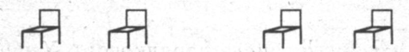
Альфа. Какая разница, как их расставить. Мы их все равно сможем и по одному считать, и по два. Все равно получится одинаково.
Дельта. Ты уверен?
Альфа. Да. А ты нет?
Дельта. Про четыре стула — уверен. А про очень много — нет, не уверен, что все равно как считать, получится одинаково.
Альфа. Ну хорошо, будем считать по одному. Но ты хоть согласен, что одинаково получится, если считать слева направо и, наоборот, справа налево?
Дельта. Я уже сказал, про маленькие числа я уверен. А про большие числа — нет.
Альфа. Тогда вообще никакой математики нет, если нельзя быть уверенным, что все равно как считать — получится одинаково. Тогда и числа никакого нет, а просто мы каждую вещь называем своим номером — один, два, три... Это номер, а не число 13.
Бета. Значит, ты считаешь, Альфа, что числа — это и то, чем считают, и то, что получается, когда посчитаешь?
Учитель. Потому что тем, что получилось, тоже можно считать, да?
Альфа. Да, всеми числами можно считать. И результат получится одинаковый.
Каппа. Ты меня запутал. Я придумывал одно объяснение для всех чисел, даже для тех, которые мы еще не знаем. И придумал так. Один — это не число. Все остальные числа получаются от счета. А один нельзя получить из счета, один есть сразу. Этим одним считают и получают числа. А ты, Альфа, говоришь, что всеми числами можно считать.
Альфа. Конечно, один — это такое же число, как все.
Учитель. А ты, Альфа, думаешь, что числа люди придумали, чтобы считать?
Альфа. Да, а не для того, чтобы обсуждать, что это такое.
Учитель. А числа придумали все сразу или сначала некоторые, потом другие? Альфа. Не знаю...
Гамма. Все сразу нельзя придумать. Всех чисел очень много. Сначала человек придумал число один. Человек жил в пустыне, Обошел все, ничего не нашел и сказал: один 14*.
Звонок
Урок 3
Учитель. Гамма на прошлом уроке сказал, что человек сначала придумал число один, причем ничего не считая, а сразу увидел, что он один, и сказал: один.
Каппа. И что, разве это было число? Число одно не может быть.
Учитель. Почему число не может быть одно?
Каппа. Потому что одно число — это не число. С ним ничего нельзя делать из того, что мы делаем с числами, — нельзя прибавлять, отнимать, пока оно одно. Нельзя даже пересчитывать предметы. Гамма ведь сам сказал, что это первое «число» не получилось от пересчитывания, а просто сразу человек увидел: один. Пока число одно, оно не число. Должны быть другие числа, чтобы оно стало числом. И нужно, чтобы с этими числами можно было что-то делать, а с одним числом ничего делать нельзя 15.
Бета. Один — это действительно какое-то особенное число 16. С ним вроде бы все можно делать, как и с другими числами, и в то же время оно не такое, как они. Его действительно сразу видно: один.
Учитель. А что это значит, что сразу видно, что предмет один?
Бета. Значит, что рядом с ним ничего нет. И это сразу видно.
Учитель. Ничего нет?
Бета. Ну, наверное, это не обязательно — совсем ничего. Нет такого же предмета. Вот мы, например, говорим: на столе лежит одна ручка. Рядом с ней что-то есть, но нет другой ручки. А так, как Гамма сказал про пустыню, где нет вообще ничего, кроме человека... не знаю, может быть, там действительно число не могло появиться.
Альфа. Я не понимаю, что мы обсуждаем. Мы обсуждаем, как придумали число, как оно появилось, или что оно такое? Это же разные вещи. Может быть, было вначале число один. Мне тоже кажется, что оно какое-то... ну, самое первое, что ли. Но когда уже появились другие числа и люди придумали, как считать, то теперь число один уже ничем не отличается от других. С ним можно все то же самое делать, что и с другими числами.
Дельта. А я согласен с Бетой. Я тоже считаю, что один — не такое число, как все другие. И мне не нужно никаких других предметов, чтобы увидеть, что этот предмет — один. Я вот смотрю на эту ручку и вижу, что она одна. Не думаю о том, что нет другой ручки, а просто вижу, что эта ручка — одна. Вот так же, как вижу, что она красная, так и вижу, что она одна.
Каппа. Я думаю, что ты не прав. Не только про число, но и про цвет. Ты не видел бы, что она красная, если бы не знал, что есть другие цвета. Ребенок новорожденный, наверное, не видит, какого цвета первый предмет, который ему на глаза попался. Когда мы видим предметы разного цвета, мы начинаем их различать. А один цвет — не цвет. Так же как одно число — не число. Число становится числом, только когда рядом есть другие числа.
Гамма. Значит, ты, Каппа, считаешь, что числа могли быть придуманы только сразу все.
Каппа. Да 17.
Дельта. А я не согласен. Не все числа одинаковые, и не все сразу придумали. И с Альфой я не согласен. Альфа говорит, что числа, может быть, придумали не сразу и, может быть, было какое-то первое число, но теперь, когда уже есть много чисел и мы умеем считать, то это неважно, какое из них первое, они уже все для нас одинаковые. А я так не считаю. Я тоже не знаю, какое число придумали вначале. Но все равно, как бы там вначале ни было, они и сейчас остаются разные — числа. И число один и сейчас особенное, не потому, что его, может быть, первым придумали, а потому, что это такое число. Мы считаем-то по одному.
Гамма. А помнишь, Дельта, Альфа показывал, что и по два можно тоже считать.
Дельта. Помню. И ты сам сказал, что тогда эти стулья надо по два расставить. Мы просто двойку превращаем в один. Вот как пара ботинок. Два ботинка, которые подходят друг к другу, — это пара. Одна. И мы считаем по одной паре, а не по два ботинка. И получится не четыре ботинка, а две пары, понимаешь?
Бета. А вот скажи, Дельта, если у меня две ручки и у тебя тоже две, то сколько у нас вместе?
Дельта. Четыре, конечно.
Бета. А как ты посчитал — по одному или по два? Два и два — четыре?
Дельта. Я не знаю... кажется, я действительно посчитал: два и два — четыре.
Альфа. И тебе ведь не было важно, как они расположены? Когда считаешь, это неважно. Можно к твоим ручкам прибавить Бетины, можно наоборот, правда?
Эта. А по-моему, важно. Для меня четыре предмета, чтобы их было четыре, должны быть так расположены
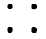
А не так
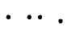
Альфа. А во втором случае их что, не четыре? Может быть, их станет больше оттого, что мы их переложим?
Эта. Нет, не больше. Но настоящая, правильная четверка должна быть так расположена:
А эта, вторая, какая-то недоделанная, не совсем четверка.
Альфа. А я этого не понимаю. Мне кажется, что число показывает, сколько вещей, а не как они расположены. Число нужно для того, чтобы считать, сколько. А не порядок устанавливать, как они лежат.
Ламбда. Вот смотрите. Эта, когда говорил про фигуру, где четыре предмета правильно расположены, квадратиком, он не сказал: четыре, он сказал: четверка. Значит, это уже не просто какое-то число, а с ним уже что-то сделали, с числом, упорядочили как-то, устроили. Это не четыре, а четверка.
Дельта. Да, причем одна четверка. Я уже про это говорил. Мы можем два превратить в пару, четыре — в четверку.
Бета. Значит, числа есть, когда мы считаем предметы, и тогда они все одинаковые, и есть числа, которые мы как бы рассматриваем сами по себе, и тогда они все разные.
Эта. Да, и когда мы, как Бета сказал, не считаем предметы, а рассматриваем числа, думаем про сами числа, а не про то, сколько предметов и как их сосчитать, то все эти числа разные. Каждое устроено особым образом. Например, так:
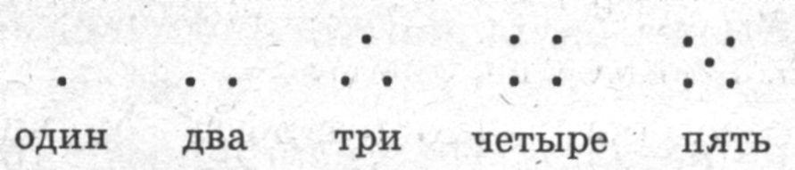
Так они выглядят красиво, правильно 18.
Альфа. Я никак не могу согласиться с тем, что это числа. То, что нарисовал Эта, — фигурки, формы. Красивые, мне они тоже нравятся. Но это не числа. Когда мы имеем дело с числами, когда мы считаем, нам не важно, как там все расположено, как все это выглядит, нам важно только — сколько. Числа не имеют формы 19. Их нарисовать нельзя.
Дельта. А по-моему, имеют. Во всяком случае некоторые.
Учитель. Некоторые, Дельта? Не все? А какие, по-твоему?
Гамма. Дельта все время говорит о том, что большие числа и маленькие по-разному устроены. На прошлом уроке он тоже об этом говорил. Может быть, большие числа не имеют формы.
Дельта. Может быть. Может быть, большие числа не имеют формы, может быть, они вообще никак не устроены. Наверное, большие числа — это числа, про которые говорит Альфа: они никак не выглядят, они только говорят нам, сколько: больше или меньше.
Альфа. Да что вы говорите — большие числа, маленькие числа! Никакие числа не имеют формы. А то, что вы рисуете, это не числа, это что-то другое. Вот Ламбда заметил, что вы их даже называете по-другому: не три, четыре, пять и так далее, а тройка, четверка, пятерка. Я предлагаю их так и называть, а нормальные числа, которые мы считаем, называть по-нормальному, как числа: три, четыре, пять.
Эта. А я думаю, что и большие числа, может быть, как-то устроены. Только мы этого не можем видеть. Я согласен с Альфой, что числа нельзя понимать, как Дельта: большие — так, маленькие — иначе. Но, в отличие от Альфы, я считаю, что все числа должны иметь форму, быть как-то устроены. Только у больших чисел, наверное, сложная форма, мы ее не видим, не понимаем.
Учитель. Альфа, скажи, пожалуйста, что ты думаешь по поводу высказывания Беты? Помнишь, он сказал, что когда мы числа используем, чтобы считать предметы, то у них нет формы, а когда мы думаем о самих числах, как бы рассматриваем их сами по себе, то тогда они имеют форму.
Альфа. Я думаю, что мы не можем знать, что такое числа сами по себе. Когда мы используем числа для счета, понятно, что это такое. А что они такое сами по себе, мне непонятно. И непонятно, как это можно знать. И, честно говоря, мне это не очень интересно.
Бета. А мне, наоборот, теперь стало интересно. Я раньше думал, что раз мы умеем считать, то, значит, знаем, что такое число. А теперь... Мы все считаем одинаково, а про число думаем по-разному. И мне интересно теперь, не как считать, а что такое число 20.
Учитель. Каппа, а ты что думаешь? Ты молчишь, тебе неинтересно?
Каппа. Я думаю.
Учитель. О чем?
Каппа. Я думаю, что такое число.
Звонок
Урок 4
Учитель. Каппа, ты придумал, что такое число?
Каппа. Да. Число — это то, что можно складывать и отнимать. Может быть, еще какие-нибудь вещи можно делать с числом, мы пока не знаем. Но число — это то, с чем можно делать определенные вещи 21 22* . Если с единицей можно их делать — значит, это число.
Учитель. Значит, ты согласен с Альфой, что не важно, что такое число само по себе, как оно произошло, как оно выглядит, а важно только то, что с ним можно делать?
Каппа. Число и есть само по себе то, с чем можно что-то определенное делать 23 . Если с ним нельзя ничего делать, его и нет самого по себе.
Бета. А единица? Ты сам говорил... То говорил, что один — это не число, то говорил, что оно особенное число.
Каппа. Я теперь понял, что если с ним можно делать то, что с другими числами — прибавлять, отнимать, — то это число. Если нет, то это не число.
Гамма. А большие числа и маленькие? Помнишь, все время у нас оказывалось, что они какие-то разные?
Каппа. Не знаю. Если окажется, что с большими числами можно делать все то же самое, что и с маленькими, то тогда это такие же числа. Если нет, то тогда надо будет что-то придумывать. Пока не знаю.
Дельта. А то, что Эта рисовал, как число устроено? Это неважно?
Каппа. Почему не важно? Если Эта покажет, что от того, устроена четверка таким квадратиком, как он нарисовал, или нет, зависит, как ее, например, прибавлять, тогда важно. Если это просто так, для красоты, тогда это, может быть, и важно, но к числу не имеет отношения. Как, например, нам важно, чтобы стул был красивого цвета, но это не имеет отношения к тому, что он стул.
Учитель. Эта, как ты думаешь?
Эта. Я думаю, что эти числа, устроенные, имеющие форму, они и складываются не так, как те, о которых Альфа говорил. Я думаю, что от того, как устроено число, зависит и то, что с ним можно делать. Мы пока ведь мало знаем о том, что можно делать с числами. Я буду думать над этим.
Учитель. Мне нравится определение Каппы. Не потому, что я с ним согласен, а потому, что из этого определения понятно, над чем нам с вами надо думать дальше, когда мы занимаемся числами; понятно, что надо знать для того, чтобы решить, число или нет, например, единица или очень большие числа, о которых говорит Дельта. Мы с этим определением можем не просто согласиться или нет просто так, потому что оно нам нравится или не нравится, а можем с ним спорить или уточнять его.
Гамма. Я хочу с ним поспорить. Мне кажется, что когда мы определяем, что такое число, нам важно не только что мы можем с ним делать. Я считаю, что важно и как оно получилось 24*.
Учитель. Да, это важно. Но что ты имеешь в виду? Как люди придумали первые числа? Или одно число?
Гамма. Нет, не только это. Даже сейчас, когда уже числа есть, они давно придуманы, они все-таки как-то появляются 25**.
Альфа. Как это — они уже есть и они как-то появляются? Как это может быть, не понимаю?
Гамма. Ну, они где-то там есть...
Альфа. Где это?
Эта. Ну, в математике 26.
Гамма. А когда мы думаем, что это такое, они для нас появляются.
Каппа. И как они появляются?
Гамма. Я думаю, они появляются из единицы. Единица самая первая 27*.
Бета. Как же они появляются?
Гамма. А так: один и один — два; два и один — три; три и один — четыре. И так далее 28*.
Каппа. Значит, единица все-таки не число? По моему определению, один — это число. Но, честно говоря, я вначале сомневался.
Гамма. Один — это число. Это, наоборот, самое первое, самое главное число. Из него все числа получаются 29. Один — это самое-самое числовое число, гораздо числее, чем, например, половина 30*.
Дельта. Чем половина — это я понимаю. Половина не совсем настоящее число, оно потом появляется, когда единицу делим. А вот числа два, три, четыре — они, кажется, такие же числа, как и один, такие же «числовые» числа. Они сразу появляются, вместе с единицей 31.
Гамма. Нет, они все появляются из единицы. И два, и другие. И потом обратно исчезают в единицу.
Дельта. Как это — обратно исчезают?
Гамма. Ну, помнишь, ты сам говорил, что когда мы начинаем считать по два, мы два превращаем в один. Помнишь, два ботинка — в одну пару, четыре — в одну четверку. Мы и по десять считать можем, тогда десять мы превращаем в десяток. Один. Любое число когда мы его берем, может опять превратиться в единицу. Только более сложно устроенную.
Альфа. И что, все числа, по-твоему, не только получаются из единицы, но и сами могут быть единицами?
Гамма. Да, в каком-то смысле, все числа — единицы 32*.
Альфа. И что, тогда все единицы разные? Например, единица-двойка меньше единицы-четверки?
Гамма. Это не важно. Когда мы рассматриваем одно число само по себе, то не важно, больше оно другого или меньше 33*.
Учитель. Гамма, а ты согласен с Этой, что все числа по-разному устроены?
Гамма. Мне вообще-то кажется, что это так, что все числа по-разному устроены. Но я не могу пока понять, как в таком случае они все появились из единицы. А я считаю, что это так. Я над этим буду думать.
Учитель. Значит, мы имеем два способа понимать число. Каппа считает, что число — это то, с чем можно делать определенные операции: прибавлять, отнимать и т. д. Гамма считает, что число — это то, что появляется из единицы, а сама единица — это первое, самое главное число.
Бета. Единица — это все-таки какое-то особенное число. Даже для определения Каппы важно, чтобы оно подходило и к единице тоже. Мы единицей как бы проверяем разные определения, даже те, в которых получается, что единица — такое же число, как и остальные.
Звонок
Урок 5
Бета. У нас появились разные способы понимать число. Но все-таки про что-то, что относится к числу, мы все согласны? Например, что один и один — два? Эта, даже твои устроенные числа, числа, имеющие форму, складываются так, что один и один — два?
Эта. Да, один и один — два.
Бета. Значит, мы вроде бы все согласны, что какие-то правила относятся к числам, как бы их ни понимать?
Каппа. Да; и я, например, понимаю числа как раз как то, к чему относятся эти правила.
Бета. Мы про них говорим одинаково: один, два, три, четыре. Можем ли мы их нарисовать одинаково?
Альфа, Каппа (вместе). Нет, рисовать числа нельзя.
Бета. Ну, не рисовать, записывать.
Альфа. Записывать числа можно. Рисовать нельзя, потому что, с моей точки зрения, они не имеют формы. Хотя Эта говорит, что имеют... А записывать числа можно. Наверное, с этим все согласятся.
Учитель. А зачем их записывать?
Бета. Когда мы просто говорим о них, они исчезают, потом как-то появляются. А так они бы оставались, как слова, записанные в книгах.
Учитель. Да, числа записывают цифрами. Я пишу на доске цифры для нескольких первых чисел:
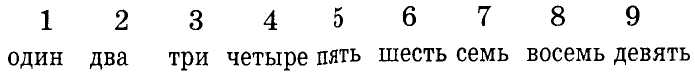
Эти цифры не рисуют числа, никак на них не похожи. Они просто их обозначают, как буквы обозначают звуки.
Эта. А хорошо бы числа обозначались цифрами, которые на них похожи, чтобы сразу было видно по цифре, какое число она обозначает. Например, как я рисовал раньше:
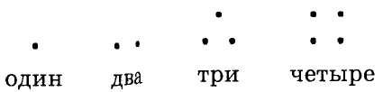
Бета. Но ведь не все согласны с тобой, что числа так устроены, и вообще, что они как-то устроены. А мы хотим записывать то, про что мы все согласны.
Учитель. Есть, действительно, способ записывать числа, при котором сама запись не просто обозначает, но и показывает, какое это число. Такие цифры называются римскими. Они выглядят так:
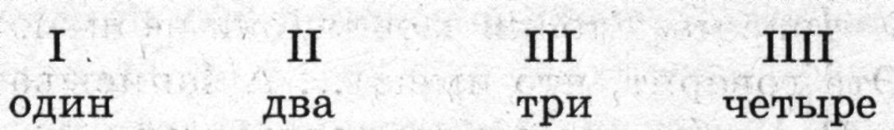
Гамма. Я понял, это очень просто: сколько вещей, которые мы сосчитали, столько и палочек. Такие цифры лучше, в них сразу видно, какое число они означают.
Бета. Они похожи на Этины числа.
Эта. Ничего подобного, совсем не похожи. Мои числа не просто означают какое-то количество вещей, они еще и устроены определенным образом. Эти палочки означают не число, а вещи: прибавляем еще одну вещь — рисуем еще одну палочку. А само число здесь не рисуется. Вы поймите, четверка не просто больше тройки, она и устроена по-другому. А эти римские цифры все устроены одинаково. Если уж из палочек делать цифры, подходящие к моим числам, как я 1 их понимаю, то тогда надо, например, так: 34*
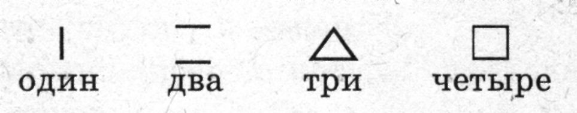
Уж тогда лучше те цифры, первые, они хоть разные для разных чисел.
Учитель. Эти цифры называются арабскими. Они сейчас общеприняты. Они ничего не рисуют, ничего не изображают, просто обозначают числа 35. Давайте будем ими пользоваться. Они позволяют записать число, независимо от того, как оно устроено или никак не устроено.
Гамма. И что, для каждого числа своя цифра? 36* Так ведь понадобится очень много цифр выучить, чисел-то очень много.
Учитель. Нет, конечно. Специальные цифры только для нескольких первых чисел
Дельта. А как записываются большие числа?
Учитель. А большие числа записываются более сложно. Мы сначала научимся записывать маленькие числа, а затем большие.
Дельта. Значит, верно я говорил, что большие числа не такие, как маленькие, они и записываются по-другому.
Учитель. В смысле записи — да, первые девять чисел отличаются от следующих за ними. Сейчас все потренируемся писать эти цифры красиво, а на следующем уроке научимся записывать большие числа.
Звонок
Урок 6
Учитель. Ну вот, теперь вы умеете писать арабские цифры. Правда, не у всех еще получается красиво, аккуратно, но мы еще будем тренироваться. А теперь я расскажу, как записывать с помощью этих цифр числа.
Гамма. Это ясно: число один — цифрой 1, число два — цифрой 2, ну и так далее.
Дельта. А число пятнадцать? Ведь нет такой цифры.
Учитель. А число пятнадцать мы тоже сейчас запишем. Вот, помните, Альфа говорил, что можно считать не единицами, а двойками, четверками? А чтобы записывать большие цифры, их считают десятками. Десять — это один десяток.
Бета. И его что, записывают цифрой 1, так же как и единицу?
Учитель. Да, его записывают цифрой 1, как и единицу. Но надо еще что-то придумать, чтобы нельзя было десяток спутать с единицей.
Бета. Можно цифру 1, которая обозначает десяток, писать большую.
Учитель. Можно. Тогда как мы запишем первые десять чисел?
Бета. 1, 2, 3, 4, 5, 6, 7, 8, 9, 1.
Учитель. А дальше? Одиннадцать, двенадцать, тринадцать?
Бета. Не знаю. Еще бóльшую единицу, что ли? Одну одиннадцатку?
Каппа. Тогда дальше все числа будут записываться единицами, только разных размеров? Будет много разных единиц, как Гамма говорил?
Гамма. Тогда и получится, что для каждого числа своя цифра. Они будут все единицы, только разных размеров. Тогда для очень больших чисел нам листа не хватит, такая огромная должна быть единица.
Учитель. А давайте попробуем по-другому. Число одиннадцать из чего состоит? Из десятка и единицы, верно?
Бета. Я понял. Одиннадцать можно записать так: 11. Большая единица — это один десяток, а маленькая — это просто один, единица. Десять и один — одиннадцать.
Учитель. А дальше?
Каппа. Дальше можно так: двенадцать — это один десяток и две единицы, 12, тринадцать — один десяток и три единицы, 13, четырнадцать — один десяток и четыре единицы, 14, ну и так далее.
Учитель. А девятнадцать?
Каппа. Один десяток и девять единиц, 19.
Учитель. А двадцать?
Каппа. Один десяток и десять?
Бета. А цифры десять-то нет?
Каппа. Понял, двадцать — это десяток и еще десяток, две большие единицы, 11.
Бета. А по-моему, лучше по-другому. Можно два десятка записывать одной большой двойкой. Так же, как мы единицы записываем. Мы ведь две единицы записываем двойкой, а не двумя единицами.
Каппа. Да, два десятка — двойкой, только большой, 2, потому что это два десятка, а не просто две единицы.
Учитель. Вот теперь мы можем записывать числа: 1, 2, 3, 4, 5, 6, 7, 8, 9, 1, 11, 12, 13, 14, 15, 16, 17, 18, 19, 2, 21, 22. И так далее.
Дельта. А дальше? Совсем большие числа?
Учитель. Совсем большие числа мы позже научимся записывать 37. А вот с этими числами, которые мы уже научились записывать, есть еще одна сложность. Вот смотрите, если я сотру все, что мы записывали, и запишу цифру 1, это какое число?
Альфа. Один.
Гамма. Нет, это десять. Это большая единица. Альфа. Да, вроде она побольше, чем та, маленькая единица.
Бета. Но, она поменьше, чем та единица, которой записывается десяток.
Учитель. Вот чтобы не было таких неясностей, нужно что-то придумать. Когда мы пишем двенадцать, 12, ясно, что первая единица обозначает десяток.
Альфа. Да, потому что она больше двойки.
Учитель. А еще по чему-нибудь мы можем догадаться, что она обозначает десяток, а не единицу?
Каппа. По тому, что она стоит перед двойкой. Двойка обозначает две единицы, значит, эта, первая, обозначает десяток. Если бы это была тоже единица, мы бы записали 3. А раз эта единица стоит перед двойкой, значит, она обозначает десяток.
Учитель. Верно. У нас получается, что цифра, которая стоит на первом месте, обозначает десятки, а цифра, которая стоит на втором месте, обозначает единицы. Мы можем записывать так. Для каждого числа рисовать две клеточки. В первой клеточке писать, сколько десятков, во второй — сколько единиц. Тогда не нужно будет выяснять, большая цифра записана или маленькая, это будет ясно из того, в какой клеточке стоит эта цифра. Например, число двадцать пять как мы запишем?
Альфа. В первой клеточке два, два десятка, во второй — пять, пять единиц.
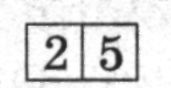
Учитель. А число десять?
Эта. В первой клеточке один, один десяток, а во второй — ничего нет. Потому что один десяток — это и есть десять, единицы не нужны 38.
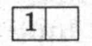
Учитель. А это какое число?
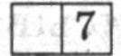
Гамма. Это семь. В первой клеточке нет никаких десятков, а во второй — семь единиц.
Учитель. А это какое число?
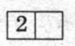
Эта. Это два.
Каппа. Ты что, какое же это два! Двойка записана в первой клеточке, значит, это два десятка. А единиц нет. Это двадцать.
Учитель. Ну вот, теперь мы можем числа читать и записывать.
Дельта. Не все. Очень большие так и не научились.
Учитель. Да, очень большие числа мы так и не научились пока записывать. Но и с теми числами, которые мы умеем записывать, можно уже многое делать.
Эта. Наша запись похожа на то, что говорил Дельта про числа. Помните, он говорил, что когда мы считаем по два, мы два ботинка превращаем в одну пару? И еще Гамма говорил, что когда мы считаем по десять, мы десять превращаем в один. Один десяток. Гамма говорил, помните, что все числа могут превращаться в единицу. Вот в нашей записи так и получилось. Мы десять единиц превратили в один десяток, в единицу, и эту новую единицу записали в первой клеточке, чтобы не спутать с простой единицей. Так что мы все-таки как-то устраиваем числа, превращаем их, а не просто записываем. Двадцать один — по нашей записи видно, что оно состоит из двух десятков и единицы. Значит, это тоже не просто обозначение чисел, а какое-то понимание про их устройство.
Ламбда. А я заметил, что мы и говорим так, как будто числа устроены десятками. Смотрите: пятьдесят, шестьдесят — пять десятков, шесть десятков. И пятнадцать — тут слышно пять, пять единиц, а вот десятка тут не слышно.
Учитель. Пятнадцать — это пять на десять, -дцать — это десять. Пятнадцать — это пять единиц на десяток, то есть после десятка.
Ламбда. Да. Одиннадцать — это единица на десяток, двенадцать — это две единицы на десяток, семнадцать — семь на десяток.
Учитель. Да, и записываем, и называем мы числа так, как будто они устроены десятками. Попробуйте дома записать числа — кто сколько сможет, как мы сегодня научились.
Звонок
Урок 7
Учитель. Ну вот, мы научились записывать, обозначать числа.
Дельта. Не все.
Гамма. Мы всех пока и не знаем.
Каппа. А главное, так и не понятно, что мы записываем. Ведь мы так и не выяснили, что такое число. Вот, например, мы пишем 4. Эта под этой цифрой имеет в виду свою четверку, устроенную квадратиком. Бета имеет в виду число, которое получилось, когда мы пересчитали, например, четыре стула. Гамма имеет в виду еще какую-то другую четверку, которая как-то без всяких предметов получилась из единицы. А Ламбда заметил, что мы даже по-разному про это говорим — то четыре стула, то просто четыре, то четверка. А когда мы просто пишем цифру четыре, без всяких объяснений, что это значит?
Бета. Можно, я нарисую? Вот я рисую четыре стула. Потом четыре чашки. Потом четыре кружочка. Потом четыре палочки. Потом рисую четыре палочки, устроенные в квадратик. Или четыре точки квадратиком, как Эта рисовал. И потом пишу про все это, про каждый рисунок, цифру 4 . Все-таки она ведь что-то значит?
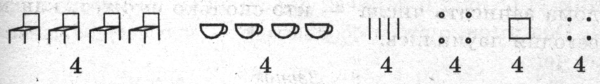
Что, и здесь, и здесь, и здесь — четыре, а не три, не шесть?
Альфа. Да, и здесь, и здесь, и здесь — четыре, но чего? Здесь — четыре стула, здесь — четыре кружка.
Дельта. Но все-таки и здесь, и здесь, и здесь — четыре, ты согласен?
Каппа. А я не согласен. Чего четыре? Вот посмотрите на этот квадрат. Это четыре палочки? А может быть, один квадрат? Мы не можем говорить просто четыре, когда считаем предметы. Мы можем говорить только четыре чего-нибудь, например четыре стула или четыре палочки. Это не число четыре, а четыре каких-нибудь вещи. Число четыре, само число, нельзя нарисовать.
Учитель. А бывает просто число четыре, не четыре каких-нибудь вещи, а просто четыре?
Альфа. По-моему, не бывает. По-моему, только когда мы что-нибудь считаем, может быть четыре чего-нибудь того, что мы считаем 39*.
Бета. Но все-таки, ведь все эти рисунки, которые я нарисовал, на них разные вещи нарисованы, но ведь чем-то они похожи?
Учитель. Чем?
Бета. Тем, что на них четыре вещи, на каждом из них. Я потому и написал под каждым рисунком цифру 4. Она именно это и обозначает — что четыре, неважно чего.
Каппа. Как это — неважно чего? Вот посмотри, я нарисую такие точки. И спрошу тебя — сколько? Что ты скажешь?
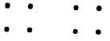
Бета. Здесь один, два, три, четыре, пять, шесть, семь, восемь точек.
Гамма. А может быть, здесь не восемь точек, а два квадрата.
Альфа. Да, нельзя, оказывается, просто сказать — сколько. Надо обязательно сказать, сколько чего.
Учитель. Значит, мы не можем под рисунком Каппы написать цифру, как Бета написал под своим рисунком.
Альфа. Не можем написать просто цифру, так же как не можем сказать просто число. Но можем сказать число, указав, что мы считали. Например, сказать: восемь точек. Или: два квадрата.
Гамма. А написать цифру, одну цифру, все-таки не можем.
Альфа. Можем сделать так. Написать цифру — она будет обозначать число, и рядом нарисовать, что мы считаем. Например, так:
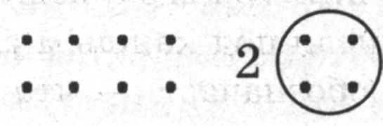
Я пишу цифру 2, значит, два, а рядом в кружке рисую квадрат из точек. Это значит: два таких квадрата. Или так:
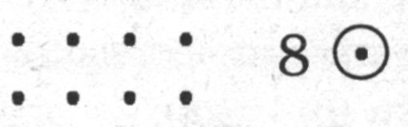
Рисунок тот же самый, который Каппа нарисовал, а под ним пишем цифру 8, это значит восемь, и в кружке рисуем точку. Это значит, что мы считаем не квадраты, а точки. Восемь точек.
Бета. Значит, просто числа нет? А есть сколько-нибудь чего-нибудь?
Альфа. Выходит, нет просто числа.
Каппа. А я считаю, что есть. Ведь мы можем считать просто числа.
Альфа. Как это?
Каппа. Ну, например, два и два — четыре. Все равно чего: хоть точек, хоть стульев — все равно, два и два — четыре, неважно чего. Что бы мы ни считали. Это и есть число, когда неважно, что мы считаем. Это и есть само по себе число, неважно чего 40*.
Бета. Но когда мы считаем предметы, выясняется, что их нельзя просто числом считать. А надо считать тоже предметом.
Учитель. Как это — считать предметом?
Бета. Ну, вот мы считали точками — получилось восемь, потом мы считали квадратами — получилось два. Мы не считали числами, нельзя, оказывается, считать просто числами. Мы считали предметами. Стулья считали стульями, можно написать, обозначить, как Альфа придумал, цифру 4 и в кружке стул нарисовать, это будет значить, что мы считали стульями, и получается не просто четыре, а четыре стула.
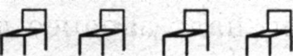
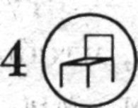
И все другие предметы, которые мы считали — чашки, точки, мы считали предметами, а не просто числами.
Гамма. Вот я смотрю на твой рисунок и думаю, что этот последний стул, который в кружочке, необязательно рисовать.
Бета. Почему необязательно? Он показывает, чем мы считаем.
Гамма. Когда у нас есть предметы, нормальные предметы, а не какие-то точки, которые мы сами нарисовали, то всегда ясно, чем их считать. Мы же не можем считать стулья, например, чашками. Или квадратами. Стулья можно считать только стульями, это же ясно. Точки, квадраты — это другое дело. А нормальные, настоящие предметы, такие, как стулья, чашки, их сразу ясно, чем считать.
Альфа. А если, например, тебе надо будет посчитать, сколько у стульев ножек?
Бета. Да, действительно. Ведь у четырех стульев не четыре ножки, а больше.
Гамма. Я согласен, даже у стульев надо договариваться, чем мы считаем. Но все-таки считать стулья стульями, мне кажется, как-то естественнее, чем считать их — стулья — ножками от стульев. Но я согласен, что, чтобы не путаться, надо заранее договориться, чем мы считаем, даже когда мы считаем нормальные предметы.
Учитель. А что мы делаем, когда договариваемся, чем будем считать?
Гамма. Вот я давно хочу об этом сказать. Мы делаем единицу. Вот то, что нарисовано в кружочке, — это единица. Один стул, одна точка, один квадрат. Это единица, и она всегда разная. А потом из этой единицы получаются другие числа.
Бета. Значит, мы не стулом считаем? Мы стул сначала превращаем в единицу, а потом этой единицей считаем? Числом все-таки считаем?
Гамма. Да, и когда мы рисуем стул в кружочке, а не просто стул, это и значит, что мы делаем единицу. Кружочек и обозначает это. Стул, который в кружочке, — это не просто предмет, не стул, на котором сидят, а это единица.
Альфа. Это не стул, на котором сидят, а стул, которым считают, поэтому он в кружочке.
Эта. Значит, разные могут быть единицы?
Бета. Так неужели мы все-таки считаем числом, единицей, а не предметами?
Звонок
Урок 8
Учитель. У нас на прошлом уроке возникло два важных вопроса. Первый поднял Каппа: все-таки есть ли просто число, не четыре стула, или четыре точки, или четыре чего-нибудь, а просто четыре? Каппа считает, что есть. Что кроме тех чисел, которые появляются, когда мы считаем предметы, есть еще просто числа. Так, Каппа?
Каппа. Да. Именно такие числа мы можем иметь в виду, когда пишем цифры 1, 2, 3, 4. Мы просто числа обозначаем цифрами, а когда хотим обозначить, сколько предметов, мы должны кроме цифр еще указывать предметы, которые считаем. Мы для этого научились записывать цифры, чтобы иметь дело просто с числами. Если бы мы хотели заниматься предметами, мы могли бы рисовать эти предметы. Или писать словами: стул, чашка. А для того чтобы заниматься числами, нам и нужны цифры, чтобы числа записывать.
Учитель. И второй вопрос, который поставили Бета и Гамма. Чем же мы считаем? Считаем ли предметами — стулья стулом, точки точкой и так далее — или же считаем числом, единицей? Делаем каждый раз единицу, для каждого случая свою, и ею считаем.
Бета. Этот вопрос как-то связан с вопросом Каппы. Почему мы говорим и про один стул, и про одну чашку, и про одну точку, что это единица? Почему мы можем превращать разные предметы в единицы? Что, то получается просто один, неважно чего? Просто число, о котором говорит Каппа?
Дельта. Как же это может быть? Мы ведь выяснили, что просто числом нельзя считать. В зависимости от того, что мы считаем, будет получаться разный результат. Если считаем стулья, получится два стула, ели считаем ножки, получится восемь ножек.
Альфа. Значит, мы не можем говорить просто о числах. А только о предметах, которые считаем.
Каппа. Нет, можем. Вы все время говорите «считать», имея в виду «пересчитывать какие-то предметы». А ведь можно просто считать, никаких предметов не имея в виду 41*.
Дельта. Как это — просто считать, без всяких предметов? Что это значит?
Каппа. А вот посчитай, пожалуйста, сколько будет два и два.
Дельта. Четыре, конечно.
Каппа. Вот это и значит — считать. Ты ведь никаких предметов не имел в виду, когда посчитал, что два и два — четыре? И кстати, мы научились записывать числа цифрами, а записывать само действие счета не научились. А счет — это не когда мы пересчитываем предметы, а когда складываем и отнимаем числа. Я продолжаю думать, что число — это и есть то, что складывается и отнимается.
Учитель. Давайте научимся записывать, как мы складываем и отнимаем числа. Когда складываем числа, мы пишем оба числа, которые складываем, а между ними ставим такой знак: +. Он называется «плюс» и обозначает сложение. Например, два и два мы запишем так: 2+2. Это значит: два и два, или к двум прибавить два.
Дельта. Получится четыре.
Учитель. А это записывается так. Ставится знак =, он означает «равняется» или «получится», и после него пишется, что у нас получилось. 2+2=4. Те числа, которые мы складываем, называются слагаемыми. То, которое получается в результате сложения, — суммой. В этом примере два и два — слагаемые, они одинаковые; четыре — сумма.
Каппа. Вот это записан счет, записано действие с числами. Именно с числами, а не каким-то количеством предметов. Мы можем много таких записей сделать: 1+1=2, 2+1=3, 3+1=4, 3+2=5. Теперь мы считаем и можем это записывать.
Учитель. Пожалуйста, посчитайте, сколько будет четыре и два, и запишите это.
Альфа. 4+2=6.
Ламбда. Теперь мы умеем записывать, как мы считаем просто числа, без предметов. Но я вот что заметил: когда вы объясняли нам, что значит этот знак =, вы сказали, что он значит «равняется» или «получится». А ведь это разные вещи. Равняется, равно — это значит просто одинаково. То же самое, значит. А получится — это значит, что мы что-то сделали с числами и получили новое число. Вот как Гамма говорил, помните, что все числа получаются из единицы. Вот так они и получаются.
Гамма. Да, так можно записать, как получаются все числа. Получаются из одного числа, из единицы. Я это и говорил, просто раньше не знал, как записать. А теперь мы можем это записать: 1+1=2, 2+1=3, 3+1=4, 4+1=5, 5+1=6 и так далее. Все числа так можно получить, из единицы. А единица — первое, самое главное число, из нее все получается 42*.
Ламбда. А когда мы говорим «равняется», мы ничего не получаем, мы просто говорим, что это одинаково, то же самое.
Учитель. Да, у этого знака как бы два смысла. Равняется — значит одинаково, то же самое. Мы пишем: 2=2. Значит, число два равно самому себе, значит, с двух сторон от знака = записаны одинаковые числа. Или мы можем записать, что 2≠3, это будет значить, что два и три — разные числа, они не равны между собой.
Поставьте, пожалуйста, знаки = или ≠ между следующими числами: 2 и 2, 6 и 5, 1 и 3, 4 и 4, 5 и 5, 3 и 4.
Бета. Это легко: 2=2, 6≠5, 1≠3, 4=4, 5=5, 3≠4. Когда числа одинаковые, они равны, мы ставим знак =, когда числа разные, они не равны, ставим знак ≠.
Каппа. Значит, с числами, просто числами, о которых я все время говорю, еще вот что можно делать: сравнивать. Не только складывать и отнимать, но и сравнивать, узнавать, одинаковые они или разные. Ведь это можно делать просто с числами, без всяких предметов: два всегда равно двум и никогда не равно четырем, какие бы предметы мы ни считали.
Дельта. Нет, без предметов нельзя. Два стула не равны двум чашкам. И, помнишь, мы считали точки, расположенные квадратами. Там получалось, что два квадрата равны восьми точкам.
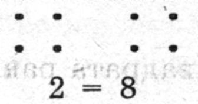
Дети (хором). Нет, нет, так неправильно.
Дельта. Почему? Мы ведь посчитали то же самое. Мы считали, сколько здесь, на этом рисунке, на том же самом рисунке. Сначала посчитали, сколько квадратов, а потом — сколько точек. Но раз мы посчитали один и тот же рисунок, то получиться должно было одинаково.
Бета. Когда мы говорили про это, вроде все было правильно. Но когда Дельта записал, сразу стало видно, что тут что-то не так. Два, конечно, не равно восьми. 2≠8, это совершенно ясно.
Альфа. Все-таки Каппа не прав, говоря, что мы можем просто числа считать и сравнивать. Сейчас это стало ясно. Мы должны обязательно указать, что считаем. Например, обозначить эту нашу единицу, о которой Гамма говорит, которой мы считаем. Она будет разная в каждом случае. В первом случае, когда мы считаем квадратами, выясняем, сколько квадратов, получится не просто два, а два квадрата. Это можно так обозначить:
2
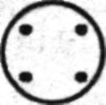
А во втором случае, когда мы считаем точки, получится восемь точек. Обозначим это так: 8
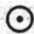
И раз мы считали одно и то же, то должно получиться одно и то же, значит, мы записываем так:
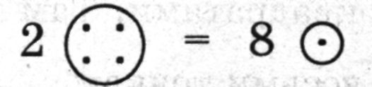
Два квадрата равны восьми точкам.
Звонок
Урок 9
Учитель. Мы опять вернулись к вопросу, который у нас уже не раз возникал. Можем ли мы просто считать или мы всегда считаем что-то?
Альфа. Да, всегда считаем что-то и каким-то предметом. И всегда должны сначала договориться, чем мы считаем, а то получится, как на прошлом уроке, что два равно восьми. Это, конечно, неправильно. А получилось так потому, что мы в одном случае считали точки, а в другом — квадраты.
Бета. Мы, значит, считаем каким-то предметом, заранее договариваемся, каким. И этот предмет, как сказал Гамма, мы превращаем в единицу. И сколько таких предметов, сколько единиц получается при счете, это и называется числом. Например, мы считаем, сколько здесь квадратов.
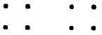
Квадрат — это наша единица. Сколько получится таких квадратов, мы называем числом. Число, — два. А когда мы говорим: два квадрата, мы указываем, какими единицами считали. Значит, число — просто два, а не два квадрата 43; И записываем так:
2
Каппа. Тогда получается, что сама единица — это не число.
Бета. Да, получается, что не число 44.
Каппа. И все-таки я не могу согласиться с тем, что единица — не число. Мы можем ее считать. Не только ею, единицей, считать, но и ее считать: складывать, отнимать. Мы можем писать не только 2+2=4, но и 1+1=2. Здесь единица ведет себя так же, как другие числа. Один — это число.
Дельта. И все-таки один — это не такое число, как другие. Гамма правильно сказал: мы сначала делаем ту единицу, а потом ею считаем. Она до других чисел 45*. Мы ею считаем и получаем другие числа.
Каппа. А что такое единица в примере, который я написал: 1+1=2? Это число или нет?
Альфа. В таком примере, кажется, число. Она действительно ведет себя так же, как и другие числа. Ее можно прибавлять, сравнивать с другими числами: 1≠2.
Учитель. Давайте попробуем посчитать, например, точки. Наш предмет, наша единица, которой мы считаем, будет точка. Мы ею будем считать. И нарисуем ее в кружочке, как Альфа предложил. Это наша единица, которой мы считаем. Теперь посчитайте, сколько здесь точек: • • • • ?
Дельта. Здесь четыре точки.
Учитель. Запиши, пожалуйста. Как это можно записать?
Дельта. Четыре точки. 4. Точка в кружке обозначает единицу, которой мы считаем, цифра 4 обозначает число, сколько таких единиц получилось.
Учитель. Правильно. А здесь сколько точек: • • • • •?
Эта. Пять точек. Я записываю так: 5 . Точка в кружке — та же самая единица, а цифра 5 означает, что пять таких единиц получилось.
Учитель. А здесь сколько точек: • • • • • • • •?
Альфа. Здесь восемь точек. Записываю: 8. Восемь — число, в кружке — точка, это наша единица. Учитель. А здесь: • ?
Гамма. Здесь одна точка. Записываю так: 1
Бета. Да, да, правильно! Наконец-то все стало на свои места. Смотрите, что Гамма написал: цифра — 1, а в кружке — точка. Точка, которая в кружке, обозначает, что мы считаем точками, это наша единица. Цифра 1 обозначает, что получилась одна такая единица. Это число — один. Значит, один — это тоже число! Я все время так думал и пытался понять, как же это так. Теперь понял. Мы сначала договариваемся, чем будем считать. Это единица. Но это еще не число. Мы поэтому эту единицу и рисуем в кружке. А потом мы считаем. И получаются числа. И среди этих чисел может получиться и один тоже. Это тоже число, но не та единица, которой мы считаем. Та — не число. А когда получается один при счете, это число. Значит, правильно говорил Ламбда. Есть единица и один, четверка и четыре, ну и так далее 46.
Учитель. Каппа, ты согласен с Бетой? Ты все время говорил, что единица, или один, так, наверное, действительно правильнее, такое же число, как и другие числа.
Каппа. Нет, я говорил не то, что сказал сейчас Бета. Я говорил, что один — такое же число потому, что с ним можно делать такие же действия, как и с другими числами. А Бета сейчас сказал, что один потому число, что оно так же, как и другие числа, может получиться от счета. Но я согласен с тем, что та единица, которой мы считаем, которую рисуем в кружке, — это не число.
Гамма. А я, когда говорил, что единица — число, имел в виду другое. Я имел в виду, что из нее все числа получаются. Они как бы в ней уже есть. Как только мы сказали: один, то как бы уже все числа придумали. А потом мы их только называем. На самом деле они уже все есть в единице.
Альфа. Да. Это можно так объяснить. Как только мы задали эту единицу, договорились, чем мы будем считать, нарисовали ее в кружке, то уже сразу как бы определили, сколько должно получиться, какое число.
Эта. Как это? Поясни, пожалуйста.
Альфа. Ну, мы, например, считаем, сколько здесь точек: • • • . И нарисовали точку в кружке, значит, именно точки считаем, а не что-нибудь другое. 3 И как только мы нарисовали эту единицу в кружке, мы сразу определили, что получится три. Даже до того, как посчитали. Мы еще не знаем, что три должно получиться, но это уже определено. Если я напишу два, 2, вы сразу скажете, что это неправильно.
Дельта. Даже и считать не надо, сразу видно, что три.
Учитель. Альфа, кажется, не то имел в виду, что считать не надо, что сразу видно. Если я нарисую много точек, например столько: • • • • • • • • • • • • • , и в кружке обозначу нашу единицу, чем мы считаем: Мы здесь с одного взгляда не можем видеть, сколько точек. Мы должны посчитать.
Дельта. 12
Альфа. Нет, тринадцать, 13
Дельта. Да, тринадцать, я ошибся.
Учитель. Вот видите, сразу не видно, сколько точек. Но все равно, как только мы задали единицу, ту, которой считаем, мы уже определили, сколько должно получиться. Вот, например, считаем точки. Я рисую несколько точек: • • • • • • и обозначаю единицу: Мы считаем точки. Сколько здесь получится таких единиц, какое число?
Бета. Шесть. Шесть точек, 6 .
Учитель. А если я под этими же точками нарисую другую единицу, такую, например,
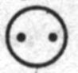
?Дельта. Это не единица, это две точки. Вы нарисовали две точки.
Учитель. Да, но я нарисовал их в кружке. Я нарисовал то, чем мы будем считать, такую единицу. Сколько таких единиц?
Дельта. Три, .
Учитель. Значит, как только мы задали единицу, то, чем будем считать, мы уже определили, сколько должно получиться. Если бы мы те же точки считали другой единицей, такой: , то получилось бы не три, а шесть таких единиц. Альфа, ты это имел в виду?
Альфа. Да, это.
Эта. А я хочу вернуться к тому, как мы записывали равенства, когда считали. Помните, мы считали и записывали: 2+2=4. Так вот, для моих чисел, устроенных, имеющих форму, ясно, что тут знак = означает не просто равно, одинаково, а означает, как говорил Ламбда, что мы что-то делаем, получаем из двух двоек — четверку. А для чисел, не имеющих формы, это не ясно. Например, мы рисуем четыре точки: • • • •. Непонятно, сразу мы их нарисовали или рисовали так — сначала две точки нарисовали: • • , потом еще пририсовали две. Или сначала нарисовали три, потом еще одну. Это все равно, одинаково. А для чисел, имеющих форму, устроенных, это не все равно. Мы можем этот пример так записать или нарисовать:
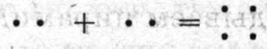
. Тут видно, что мы не только подсчитываем, а делаем, получаем новое число — четверку, которая устроена совсем не так, как две двойки. У нее своя форма, как у каждого числа. И тут ясно, что знак = означает не просто равно, одинаково, а означает, что мы что-то делаем с числами. Мы из двух чисел делаем одно. Складываем два числа, чтобы получилось одно число — новое, которого раньше не было. Например, как мы складываем пирамидку из колечек. Мы не просто кладем их рядом, а именно складываем, чтобы получилась из нескольких вещей одна. Это и означает знак =, он означает действие 47.Ламбда. Да, в слове «складывать» слышно: сделать складным, ладным, устроить. Как Эта говорит, сделать что-то одно, новое. А в слове «прибавлять» этого не слышно. Про то, что мы делали раньше, когда писали примеры типа 2+2=4, лучше говорить «прибавлять». А про то, что сейчас сказал Эта, лучше говорить «складывать».
Звонок
Урок 10
Учитель. Эта в конце прошлого урока предложил понимание сложения, отличное от того, что у нас было раньше. Он предложил считать, что когда мы складываем, мы не просто прибавляем к одному числу другое и пишем, что получится, но еще что-то делаем с этими числами, как-то их по-новому устраиваем, получаем из двух — одно.
Эта. Да, и это одно новое число устроено не так, как два, из которых мы его получили. Оно имеет новую форму. Например, когда мы пишем 2+2=4, то этого не видно. Не видно, что четверка, которая получилась, — новое число. А когда пишем так:, то сразу видно, что мы из двух чисел образовали одно, одну четверку. Складывание — это не просто прибавление, это еще образование новой формы.
Ламбда. Да, и знак равенства в первой записи, 2+2=4, и во второй, которую Эта нарисовал, означает разные вещи. В первом случае он означает просто «равно» или «одинаково». А во втором — что мы что-то делаем и что-то новое получается.
Учитель. Давайте попробуем написать или изобразить двумя разными способами несколько примеров, которые мы уже решали. Например, два и один.
Гамма. 2+1=3 — это первый способ, мы просто прибавляем и считаем, сколько получится. А второй... можно так:
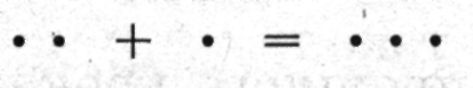
.Эта. Нет, неправильно. Так мы просто приложили к двум точкам еще одну. А надо еще сделать тройку, что бы видно было, что это не просто два и один, а одна тройка. Например, так:
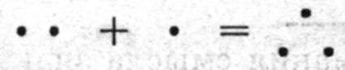
.Учитель. Три плюс два.
Эта. Прибавление запишем так: 3+2=5. А складывание так:
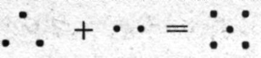
Учитель. Четыре плюс один.
Дельта. 4+1=5. А второе, складывание, так:
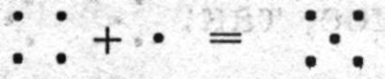
Каппа. А мне все-таки непонятно. Когда мы пишем 2+3=5, тут все ясно. Ясно, что это правильно. Никто не скажет, что два плюс три будет не пять, а шесть. А когда мы рисуем эти фигурные оформленные числа, то много неясностей. Я, например, нарисую пять не так, как Эта, а так:
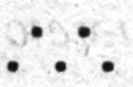
. Это ведь тоже пять?Эта. Это тоже пять, но это не пятерка. Настоящая пятерка — она правильная, красивая. Она, конечно, такая:
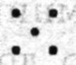
Бета. Эта, а нарисуй, пожалуйста, настоящую, или красивую, семерку.
Эта. Может быть, так:
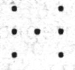
Нет, так некрасиво. Наверное, семерка такая:
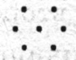
Бета. А девятка?
Эта. Девятка? Девятка такая:
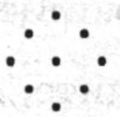
Гамма. А может быть, такая:
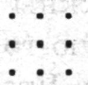
Эта. Да, пожалуй, так лучше. Красивее. Даже не красивее, а устойчивее, что ли.
Бета. Непонятно все-таки. Одному кажется, что так красивее, другому — что по-другому. А когда мы имеем дело с числами, все должно быть точно. Эта, а как выглядит, по-твоему, тринадцать?
Эта. Тринадцать? Наверное, так:
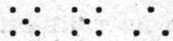
Дельта. Разве это тринадцать? Это две пятерки и тройка. Мы же не сделали целого, отдельного, красивого числа тринадцать.
Эта. Да, не получилось.
Дельта. Я считаю, что форму имеют только маленькие числа. А большие — они не имеют формы. Хотя они тоже числа, мы можем их складывать. Например, тринадцать плюс два будет пятнадцать.
Учитель. Запиши это, пожалуйста. Помнишь, мы записывали числа, не очень большие, но довольно большие, как тринадцать, пятнадцать.
Дельта. Попробую. Тринадцать — это десять и три, значит, записываем в первой клеточке один десяток и во второй три единицы.
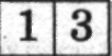
Два — это просто две единицы, первая клеточка пустая.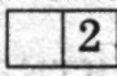
Теперь записываем пример.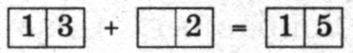
Эта. Вот видите, даже когда мы просто записываем числа, мы должны с ними что-то делать, как-то менять их. Какую-то форму придавать. Смотрите, что Дельта говорит. Чтобы записать тринадцать, мы должны из тринадцати сделать десять и три, наоборот. Раньше мы складывали, из двух чисел делали одно, а сейчас, когда записываем, из одного числа делаем два 48. Можно это так обозначить:
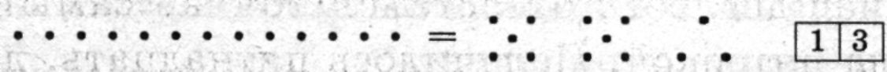
Мы из тринадцати, чтобы записать это число, сделали десять и три.
Бета. Получается, что когда мы записываем число, мы тоже что-то с ним делаем? Не просто обозначаем то число, которое у нас есть, но делаем с ним что-то, как-то меняем его? 49
Альфа. Да, получается, что, записывая, мы уже что-то с ними делаем.
Эта. И что делаем? Именно то, что я говорил: придаем им какую-то форму. Мы договорились так записывать, десятками, значит, чтобы записать число, мы его устраиваем десятками.
Альфа. Почему же мы только сейчас заметили это?
Дельта. Наверное, потому, что мы раньше работали только с маленькими числами, меньше десятка. А они так просто записываются, как бы сами по себе.
Гамма. И посмотрите, в той записи, которую Эта сделал, очень легко прибавлять. Сразу видно, что десяток тот же самый, он остается на месте. А к тройке прибавляется два, и она превращается в пятерку. Вот я обведу сейчас десяток, он остался тот же самый. А тройка стала пятеркой. Получилось пятнадцать, десяток и пять.
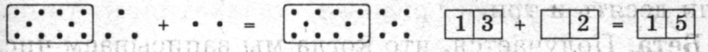
Каппа. Ну, это и без всякого рисунка видно, из самой записи:
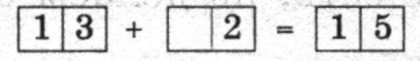
Вот я записываю: в первом квадратике десяток, во втором три единицы. Прибавляем две единицы. Единицы прибавляем к единицам. Не к десятку же единицы прибавлять. К трем прибавим две, будет пять. А десяток так и остался один. Получится пятнадцать. И без всяких рисунков легко.
Учитель. А вот давайте решим такой пример. Пять плюс пять.
Каппа. Пять плюс пять будет десять. А записывать надо так:
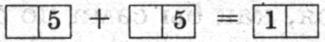
Пять — это пять единиц, десятков здесь нет. А пять и пять — десять единиц, и теперь, чтобы записать, мы должны из этих десяти единиц сделать десяток. Действительно, из записи не видно, что десять единиц — один десяток.
Эта. А если мы нарисуем, то видно. Две пятерки — один десяток, такой, как мы рисовали в прошлом примере.
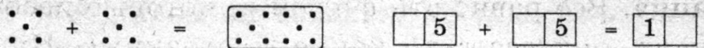
Учитель. А попробуй нарисовать и записать такой пример: девять плюс два.
Эта. Девять плюс два. Рисуем девятку. Если рисовать так, как Гамма рисовал, квадратиком, то получится так:
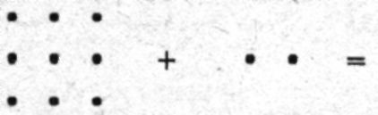
Да, такой рисунок не помогает, все равно надо по единицам пересчитывать.
Дельта. А если нарисовать пятерками, вот так:
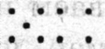
Как будто девятка устроена из пятерки и четверки. Тогда сразу видно, что до целой десятки еще не хватает одной единицы. Эта единица, одна из двойки, дополнит ее до десятка, и еще одна останется.
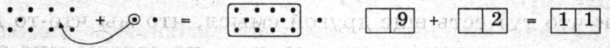
Сразу видно, что будет десяток и еще одна единица, то есть одиннадцать 50.
Учитель. Значит, числа устроенные, оформленные, о которых Эта говорил, иногда помогают нам считать. Действительно, так сразу видно, что получается десяток и еще один, не надо по единицам пересчитывать.
Каппа. Все равно эти фигурки, которые изображают числа, они все-таки какие-то странные. Ну, ясно ведь, что девять — это девять. Это больше восьми, девять и один — это десять. Это понятно. А рисовать девять — это непонятно как. Один нарисует квадратиком, вот так:
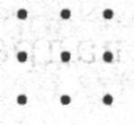
, другой — так, как мы сейчас рисовали: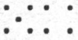
Каждый видит по-своему, как устроено это число. А просто числа, они для всех одинаковые. Поэтому я не совсем понимаю, что значит, что когда мы складываем, то не просто прибавляем, а устраиваем новое число. По-моему, если мы пишем, например, что пять и три — восемь, я записываю цифрами, без всяких рисунков, то это и значит только то, что пять и три — столько же, сколько восемь.
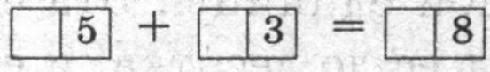
Просто столько же, равно. А то, что говорил Ламбда, что тут есть еще другой смысл, что мы что-то делаем из этих чисел, это как-то... не совсем мне это ясно.
Гамма. Каппа, посмотри на эти две записи:
5+3=8 8=8
Пять плюс три равно восьми. Я просто пишу цифрами, как ты, не рисую ничего. И вторая запись: восемь равно восьми. Это правильные записи, ведь и пять плюс три равно восьми, и восемь равно восьми. В обоих случаях ведь равно, столько же?
Каппа. Да, восемь равно восьми. И пять плюс три равно восьми. И то и другое правильно. Потому что и в том и в другом примере мы записали равные числа.
Гамма. А почему записи разные?
Каппа. Потому, что в первом примере мы сначала посчитали, что пять плюс три — восемь, а во втором сразу записали, что восемь — это столько же, сколько... восемь.
Гамма. А не кажется ли тебе, что знак равно, = , в этих двух примерах имеет разный смысл? В первом примере это значит, что мы посчитали и установили, что пять плюс три — восемь. Выполнили действие. И знак = означает, что мы считали и получили новое число. А во втором примере мы просто пишем, что восемь и восемь — это то же самое. Мы здесь ничего нового не получаем. Сразу ясно, что восемь равно самому себе. А в первом примере мы должны получить результат, как Эта говорил, из двух чисел сделать одно. И знаком равенства мы это обозначаем. Здесь справа и слева от знака равенства стоят разные вещи, хотя и равные. Равные, но не одинаковые, не одно и то же 51*.
Каппа. Да, кажется, ты прав, Гамма. Действительно, знак равенства в этих двух примерах означает разные вещи.
Звонок
Урок 11
Учитель. Мы на прошлом уроке пришли к выводу, что знак = может иметь два разных смысла: просто указывать на то, что у нас одинаковые числа, и означать, что мы что-то сделали с числами и получили какой-то результат, что-то новое.
Каппа. Да, и самое удивительное, что оба эти разных смысла могут появляться не только тогда, когда мы по-разному понимаем числа, то как устроенные, имеющие форму, то как получающиеся от счета, то как просто то, что можно складывать, отнимать и так далее. Последний пример Гаммы для меня был особенно удивительным. Гамма писал цифры, ничего не рисовал. Писал обычные цифры, которые для меня означают просто числа, не имеющие формы, как я их понимаю. Не двойку, тройку, пятерку, восьмерку, как предложили Ламбда и Альфа называть «устроенные» числа Эты, а просто два, три, пять, восемь, даже лучше вообще не называть их словами, а просто обозначать цифрами, чтобы было ясно, что никакого устройства мы не имеем в виду 52. Просто 3, 5, 8. И все равно для меня очевидно, что в примерах 5+3=8 и 8=8 знак = имеет разный смысл. В первом примере он означает, что мы сложили два числа и получили результат, во втором означает только то, что 8 и 8 — это одно и то же число. И это очень странно.
Бета. А может быть, во втором примере мы тоже что-то должны были сделать, чтобы написать знак равенства? Может быть, это равенство не так уж сразу было?
Дельта. Ну что мы там могли делать? Восемь и восемь — это сразу одно и то же. Другое дело — первый пример, там надо сложить и посчитать, выполнить некоторое действие.
Альфа. А может быть, во втором примере тоже надо было сделать некоторое действие, только другое, не сложение?
Учитель. Какое же?
Альфа. Помните, Каппа говорил, что с числами можно делать еще одно действие — сравнение? Что их можно сравнивать и узнавать, одинаковые они или разные. Вот, может быть, во втором примере мы сравнили числа, и это и было то действие, которое мы выполнили?
Дельта. Это, может быть, и действие, но какое-то уж очень маленькое, легкое. Собственно, делать-то ничего не надо, просто посмотреть надо на оба числа, и сразу видно, что это одинаковые числа, одно и то же число.
Гамма. Ну и что, что маленькое, легкое. Если у нас есть действие, то не важно, маленькое оно или большое, важно, что оно есть. Помните, на первых уроках мы заметили, что с маленькими числами дело обстоит не так, как с большими, их легко сразу видеть, не надо специально считать? Мы еще спорили, правда ли их не надо считать или же мы их все равно считаем, только быстро и незаметно для себя. Вот здесь, по-моему, похожая вещь, мы быстро замечаем, что это одинаковые числа, и поэтому кажется, что мы вообще ничего не делаем, что сразу ясно, что они одинаковые.
Эта. Тут дело в другом. Не в том, быстро мы делаем действие или медленно, а в том, что в первом случае мы получаем новое число, которого не было раньше, а во втором случае не получаем нового числа. Именно поэтому Каппа и согласился. Если бы дело было в том, что сразу что-то видно, быстро получается, он бы не согласился. На такие вещи он не обращает внимания.
Учитель. Значит, разница в том, что в одном случае мы получаем новое число, которого не было раньше, а в другом случае — нет, так?
Бета. Так, и это настолько большая и серьезная разница, что я даже думаю, не ввести ли разные обозначения для знака = в первом и во втором смысле. Знаки, которые обозначают разные вещи, должны быть разные.
Альфа. Да, я согласен с Бетой. Я предлагаю, когда мы имеем в виду «равно» в смысле одинаково, то же самое, писать один знак, а во втором случае, когда мы имеем в виду «получается», писать другой знак.
Учитель. Давайте попробуем. Какие же мы придумаем знаки?
Бета. Ну, например, можно так. Когда мы хотим сказать, что числа равны в том смысле, что это одно и то же число, будем писать такой же знак равенства, как писали раньше, =. А когда мы хотим сказать, что получаем результат, новое число, то будем писать тот же знак, но перевернутый, вот так:
Учитель. Ну что ж, давайте попробуем так. Я сейчас дам вам несколько примеров, и мы напишем те знаки равенства, которые нужны по нашей новой договоренности. Я пишу шесть и шесть, 6 и 6, а вы поставьте тот знак, который нужен.
Дельта. 6=6. Здесь те же самые числа, мы ничего нового не получаем.
Учитель. 2+3.
Гамма. 2+3 5. Здесь нужен наш новый знак, мы должны получить новое число, которого не было раньше.
Учитель. 4 и 5.
Эта. 4 ≠ 5. Это разные числа. Пишем знак равенства обычный, не перевернутый, и перечеркиваем.
Учитель. 2+3 и 5. Я пишу два плюс три и рядом пять, между ними надо поставить знак равенства простой или перевернутый?
Дельта. Тут три числа записано, а не два. Как можно поставить знак равенства? Мы можем два числа между собой сравнивать.
Бета. Но тут же не просто три числа записаны, тут записан пример на сложение, 2+3, каких мы уже много решали, и кроме этого еще одно число.
Гамма. Мы такой пример уже решали. Это легко: 2+3=5.
Учитель. Правильно ли, что Гамма поставил простой знак равенства, не перевернутый?
Бета. Нет, наверное, неправильно. У нас ведь не было двух чисел, одинаковых или разных, которые мы должны были сравнить. У нас был пример на сложение, мы сложили два и три и получили пять. Правильно будет записать так: 2+3 5. Вон он, этот пример, уже записан на доске.
Ламбда. Нет, тут что-то не то. Это другой пример, не тот, что был записан. Мы ведь не получили эту пятерку, или это число пять, так будет правильнее, от сложения. Оно сразу было записано, это число. Помните, что было записано вначале: 2+3 и 5. Все числа сразу были, не было только знака равенства между ними. Мы здесь не получали никакого нового числа. И поэтому надо писать другой знак: 2+3=5. Здесь не было получено результата, нового числа, которого раньше не было.
Учитель. Пожалуйста, запишите еще один пример: 2+3 и 6. Поставьте здесь правильный знак.
Альфа. Это неправильный пример, правильный будет: 2+3=5. Или: 2+35, мы еще не выяснили. Но во всяком случае 2+3 — не шесть, это неправильно.
Учитель. Но я и не говорил, что 2+3 — это шесть. Я просто написал 2+3 и 6 и просил вас поставить между ними знак. Так что нельзя говорить, что это неправильно. Если бы я написал так: 2+3=6, то я бы утверждал, что два плюс три равно шести, ты бы мог сказать: нет, это неправильно. А пока я не утверждал ничего.
Дельта. Мы уже записывали неравенства, помните: 4≠5. Здесь то же самое: 2+3 ≠ 6. Два плюс три не равно шести.
Гамма. А может быть, здесь нужен перевернутый знак, 2+3 6? Ведь мы сначала посчитали, что два плюс три — пять, а потом сравнили 5 и 6. Они не равны, это разные числа, и мы ставим знак неравенства, но, по-моему, нужно поставить перевернутый, так как нам сначала пришлось получить результат, пять, а только потом сравнить.
Звонок
Урок 12
Учитель. Помните наши спорные примеры? Мы так и не выяснили, какие знаки правильно писать в таких примерах: 2+3 5 и 2+3 6. У нас были такие варианты: 2+3=5 и 2+35 и для второго примера 2+3≠6 и 2+36.
Ламбда. Это очень странные примеры. Вообще, чем больше мы занимаемся, тем делается все страньше и страньше, как сказала Алиса в стране чудес.
Учитель. Чем же они такие странные?
Ламбда. Потому что из них не видно, что мы делаем. Раньше, пока мы только складывали, записывали только сложение, из примера, готового примера, было ясно, что мы делаем. Например, мы в самом начале записывали 2+2=4. Еще не различали разных равенств. И было ясно, что сначала у нас было 2 и 2, а, потом мы их сложили и узнали, что это 4. Мы спорили, как мы узнаем — по одному пересчитываем или сразу видим, но было ясно, что вначале было два и два, а потом четыре. Теперь, когда мы и складываем числа, и сравниваем их, из готового примера не видно, что мы делали. Мы написали 2+3=5. Непонятно, то ли у нас сначала было два и три, потом мы сложили их и получили пять, то ли уже было два плюс три и было пять и мы установили, что они равны, и записали знак равенства.
Дельта. Ты сначала писал 2+3, потом равно, потом пять, я видел.
Ламбда. Да, ты видел, как я писал. Но если бы у тебя была только готовая запись, ты по ней не смог бы установить, что я делал — считал или сравнивал. По готовой записи непонятно, в чем заключалось действие.
Бета. Можно писать сначала задание, потом делать его, чтобы Ламбда видел, что мы делаем, какое действие. Например, два плюс два, нам надо посчитать, что получится. Пишем сначала только задание: 2+2, не пишем результат. Потом ставим стрелочку, это значит, что мы начинаем решать, выполнять задание. И пишем решение. Вся запись будет выглядеть так: 2+2 → 2+2 4. Знак перевернутый, потому что мы получили новое число. Тут ясно, что сначала у нас было два плюс два, потом мы сложили и получили четыре.
Если у нас было вначале два плюс два и четыре, а задание заключалось в том, чтобы поставить между ними знак, то пишем сначала два плюс два и четыре, между ними ничего нет, потом стрелочку, это значит, что мы выполняем действие, а потом уже пишем пример со знаком равенства. Получится такая запись: 2+2 4 → 2+2=4. Ясно, что мы делали: мы сравнили два и два с четырьмя.
Ламбда. Да, так ясно. Ты подробно написал то, что мы раньше писали сразу. Сначала написал задание, что надо было сделать, потом — как мы это делаем. Результат одинаковый: 2+2=4, но видно, что действия мы делали разные и поэтому в записи результата разные знаки: = и .
Альфа. Даже в простых примерах, которые мы раньше решали, только на сложение, так бывало. Например, 2+2=4 и 3+1=4. Результат получается одинаковый, а числа мы складываем разные.
Гамма. А по-моему, и в той записи, которую предложил Бета, не все видно. Она тоже недостаточно подробная, хотя и более подробная, чем раньше. Вот возьмем наш пример, о котором мы спорили, как его записывать: 2+3 5. Мы ведь на самом деле здесь два действия выполнили, а не одно. Мы сначала посчитали, сколько будет два плюс три. Это будет пять. И потом мы сравнили этот результат с той пятеркой, которая была вначале. Увидели, что они равны, и записали знак равенства. Совсем подробная запись будет выглядеть не так, как предложил Бета: 2+3 5 → 2+3=5. А так: 2+3 5 → 2+35, 5=5 → 2+3=5. Тут видно подробно, что мы делали.
Каппа. Еще яснее это в другом примере, где получается неравенство: 2+3 6. Его подробно можно записать так: 2+3 6 → 2+35, 5≠6 → 2+3≠6. Сначала считаем, сколько будет два плюс три. Получаем пять. Потом сравниваем пять с шестеркой, которая была с самого начала, видим, что они разные, и пишем знак неравенства.
Бета. А почему ты записал в самом конце, в ответе, не перевернутый знак неравенства? Ведь если у нас тут два действия, в одном мы получаем новый результат и пишем поэтому перевернутый знак, в другом просто сравниваем и пишем обычный знак, то неясно, какой знак писать в ответе — обычный или перевернутый?
Каппа. Да, неясно. Этот знак равенства как бы включает в себя оба смысла равенства, о которых мы говорили. Или делает неважным отличие этих смыслов. Наверное, здесь надо писать просто равенство. Впрочем, не уверен. Действия, которые мы здесь выполняли, сложнее, чем когда мы просто сравниваем два готовых числа. И новое число здесь получается. Это особенно ясно видно во втором примере: 2+3≠6. Тут в промежутке получилось новое число 5, которого не было в задании, мы сравнили его с шестью и узнали, что они не равны, а сразу 2+3 и 6 мы не могли сравнивать, пришлось сначала посчитать. На самом деле и в первом примере, 2+3=5, то же самое. Мы сначала посчитали, что два и три будет пять, и получили эту пятерку, а потом ее сравнили с пятеркой, которая была в самом начале задания, и выяснили, что они равны. Это не так заметно, как в примере 2+3≠6, потому что получается пятерка и пятерка. Но на самом деле действия здесь такие же.
Учитель. Каппа, не противоречишь ли ты себе? Ты говорил, что пятерка и есть пятерка, независимо от того, как она устроена или откуда она получается, а теперь говоришь, что есть пятерка, которая была сразу, и пятерка, которая получилась, когда мы посчитали, сложили 2+3, и, чтобы установить, что они равны, надо еще сделать отдельное действие, сравнить их. Если нужно отдельное действие, чтобы сравнивать их, значит, эти пятерки не одно и то же.
Каппа. Да, я согласен, что здесь есть противоречие. Не знаю, как быть с этим.
Гамма. Смотрите, какая удивительная вещь получается! Вот только что возникла, когда мы записали подробно, в два действия, что мы делали в этих примерах. Если пятерка, которая получилась от 2+3, и пятерка, которая была сразу, еще требуют отдельного действия, чтобы их сравнить, значит, когда у нас есть просто пять и пять и мы отдельным действием их сравниваем, вот я запишу это подробно: 5 5 → 5=5, значит, они сначала как бы не равны? Нужно особое действие сделать, чтобы узнать, что они равны?
Дельта. Ну, это сразу видно, что здесь делать-то?
Гамма. Конечно, видно. Но когда мы подробно записываем, что делаем, то обнаруживается, что то, что нам сразу видно, на самом деле довольно сложная вещь. Ведь когда мы записываем 5 5→5=5, мы сначала как бы смотрим на эти пятерки по отдельности, как на разные, во всяком случае как неизвестно на какие, разные или одинаковые. И потом только устанавливаем, что они равны. Значит, можно считать, что даже здесь знак равенства имеет второй, сложный смысл, и записывать так: 5 5 → 55.
Учитель. Гамма говорит очень интересную и сложную вещь. Помните, Бета сказал, что мы с числами можем по-разному обращаться: можем их получать или использовать при счете, а можем как бы внимательно разглядывать числа сами по себе, думать, что они такое. Вот сейчас подобная же вещь обнаружилась с действиями. Мы можем их просто выполнять, правильно или неправильно, и записывать. А можем внимательно рассматривать, исследовать сами действия. Не только числа, но и действия с числами. И когда мы их исследуем, а для этого очень подробно, иногда кажется, что излишне подробно, записываем, что же мы именно делаем, когда выполняем эти действия, то обнаруживается нечто такое, чего мы сразу не видели в этих действиях, когда их выполняли.
Звонок
Урок 13
Учитель. Мы обсуждаем опять смысл знака равенства. Выяснилось, что дело еще сложнее, чем мы предполагали вначале. Мы выяснили, что даже в самом простом примере, 5=5, если мы внимательно посмотрим, что мы делаем, то обнаружится, что сначала у нас есть как бы отдельно две пятерки, про которые мы не знаем, равны ли они, и только потом, выполнив некоторое действие, сравнив их, мы можем записать знак равенства, утверждать, что они равны.
Дельта. Да, и записывали мы это так: 5 5 → 5=5. Но раз мы выяснили, что здесь тоже есть некоторое действие, а не сразу дано равенство, то значит, что мы получаем новый результат, и можно записывать так: 5 → 5 55, с перевернутым знаком. Потому что это тоже действие и тоже получается что-то новое.
Эта. Да, это тоже действие, и что-то новое мы получаем, но не получаем нового числа. В примере, где мы складываем, 5+35, мы не просто что-то новое получаем, мы новое число получаем. А здесь мы не получаем нового числа. Поэтому здесь все-таки нужен другой знак равенства.
Альфа. А в таком примере: 2+3 6? Здесь какой знак нужен? Мы установили, что на самом деле мы здесь два действия выполняем: складываем два и три, получаем пять и потом сравниваем эти два числа — пять и шесть. Узнаем, что они не равны. Записываем это так: 2+3 6 → 2+35, 5≠6 → 2+3≠6 или 2+36? Тут какой знак нужен, если он обозначает сразу два действия — одно с перевернутым и одно с неперевернутым знаком?
Эта. Тут, наверное, нужен перевернутый знак. Ведь все-таки мы в промежутке получаем новое число. Даже в том случае, когда у нас равенство, например 2+35, мы тоже получаем новое число, пять, которое есть результат сложения двух и трех, и потом сравниваем с пятеркой, которая была записана вначале. Это одинаковые числа, но не одно и то же число. Чтобы установить, что они одинаковые, нам нужно выполнить действие, сравнить их. Я считаю, что здесь тоже новое число появилось, поэтому надо писать так: 2+3 5 → 2+35, 5=5 → 2+35. С перевернутым знаком.
Дельта. Но это совсем не обязательно, чтобы новое число появлялось, именно число, а не просто что-то новое, какой-то результат. Вот смотрите, например я пишу 1+1 и пишу , как мы записывали, в клеточках. И нужно узнать, равны эти числа или нет. Ну неужели надо сначала посчитать, что 1+12, получить эту двойку, которой в задании не было? По-моему, совсем не нужно. И так ясно сразу, что один плюс один намного меньше двадцати пяти. Я думаю, что тут дело не в том, что мы посчитали 1+12, только очень быстро, потому что это легкий пример. Тут вообще считать не нужно. И я пишу так: 1+1 → 1+1≠, без промежуточного действия, потому что тут одно действие, и ставлю неперевернутый знак, потому что никакого нового числа мы тут не получили.
Бета. Какой удивительный этот знак! Чем больше мы им занимаемся, тем больше странностей в нем обнаруживается. Выясняется, что когда кажется — мы не получаем нового числа, на самом деле мы его получаем. И бывает наоборот, как в примере, который привел Дельта. Этот пример выглядит точно таким же, как и пример 2+3 6, но, оказывается, здесь не нужно получать нового числа.
Каппа. Вот я и предлагаю писать всегда один знак = и иметь под этим в виду, что справа и слева от него записаны равные числа. А как они получаются и что мы делали, чтобы установить, что равно, никак не обозначать. Я согласен, что в разных примерах этот знак имеет разный смысл, но кроме этого есть еще и общее, что мы будем обозначать этим знаком.
Альфа. Ну хорошо, давайте будем обозначать его всегда одинаково, этот удивительный, таинственный, загадочный знак. Получается, что мы пришли к тому же, с чего начали. Он у нас и был сначала один. Потом мы заметили, что он может означать разные вещи. И обсуждали смысл этих разных вещей. И пришли к тому же самому: выяснили, что мы не можем знать, когда нужно писать перевернутый знак, когда — неперевернутый.
Дельта. Так что же, мы зря это все обсуждали?
Учитель. Как ты думаешь?
Дельта. Не знаю. Раз мы пришли к тому же, с чего начали, то, кажется, зря. И вводили разные знаки, от которых потом все равно отказались. И спорили целый урок, где какой знак писать, а теперь решили, что всегда будем писать одинаковые знаки.
Бета. Нет, не зря. Мы будем писать одинаковые знаки, да, но мы узнали, что в этом одном знаке может быть разный смысл. Мы не знали, какой знак когда писать, потому что есть спорные случаи и потому что иногда сразу оба смысла в одном действии. Но теперь мы знаем, как много разных вещей может означать этот знак 53.
Альфа. Странно. Я думал, что когда мы учимся, когда обсуждаем что-то, то мы делаем сложные, непонятные вещи простыми и понятными. А получается наоборот: мы простые и понятные вещи делаем более сложными.
Эта. Да, так все время получается, что мы делаем вещи более сложными. Вот в самом начале, на первом уроке, когда нас учитель спросил, знаем ли мы, что такое число, мы все сказали: да, знаем. Никто не думал, что он не понимает, что такое число. А теперь ясно, насколько это сложная и непонятная вещь — число.
Учитель. Но как вы думаете, мы теперь меньше знаем про число, чем знали на первом уроке?
Эта. Нет, конечно, больше. Оно стало для нас более сложным, но мы теперь больше о нем знаем. Я раньше тоже думал, как и Альфа, что чем больше мы знаем о какой-то вещи, тем проще она нам кажется. Сейчас я понял, что на самом деле это не так. Мы многих сложностей просто не можем увидеть, пока не начнем подробно и внимательно заниматься какой-то вещью, поэтому она вначале кажется простой.
Учитель. Я хочу вернуться к нашему знаку равенства. Каппа сказал, что в наших разных знаках равенства, которые мы писали на прошлом уроке, все-таки есть какой-то общий смысл, и предложил именно это обозначать знаком равенства. Каппа, поясни, пожалуйста, какой же смысл общий для этих знаков.
Каппа. Я думаю так. Когда мы пишем равенства, например 5=5 или 2+3=5, то здесь, конечно, есть разница. В первом случае мы сравниваем два числа, а во втором складываем два числа и получаем третье. Но общее то, что и в том и в другом случае справа и слева от знака равенства записано столько же. Пять — это столько же, сколько пять. И пять — это столько же, сколько два плюс три.
И если мы не будем обращать внимания на то, как получились эти пятерки и были ли они сразу равны или мы их приравняли с помощью каких-то действий, а будем обращать внимание только на одну вещь: сколько, тогда эти знаки равенства значат одинаково. Пять всегда равно пяти и два плюс три всегда равно пяти. Это всегда правильные равенства, независимо от того, как мы их понимаем.
Учитель. Каппа, вот ты сказал, что мы будем обращать внимание только на одну вещь: сколько. А сколько чего? Помнишь, мы выяснили, что ответ на вопрос «сколько?» зависит от того, чем мы считаем, какой единицей?
Дельта. Да, у нас еще, помните, получилось, что два равно восьми, и это было неправильно, потому что мы не указали единицы, а когда указали, какой единицей считаем, то получилось, что два квадрата равно восьми точкам.
Каппа. Конечно, я все время имею в виду, что мы считаем единицы. Мы сначала договорились, какую единицу выберем, и потом все время ею считаем.
Эта. И разве не важно, какую единицу мы выберем?
Каппа. Конечно, не важно. Важно только, чтобы она была одна. У нас получилось неправильное равенство, два равно восьми, потому что мы поменяли единицу. А если она все время одна, то не важно, какая. Точно так же не важно, что мы считаем, чтобы сказать, что 2+3=5. Важно только, чтобы мы считали одно и то же и все время одной и той же единицей.
Дельта. А я совсем не уверен, что это не важно. Может быть, все-таки справедливость этого равенства зависит от единиц, которые мы выберем, откуда ты знаешь?
Каппа. Откуда? Не знаю, откуда. Это совершенно очевидно, по-моему 54.
Звонок
Урок 14
Учитель. У нас возник очень важный вопрос: зависит ли справедливость равенства от того, чем, какой единицей мы считаем. Каппа считает, что не зависит, что если мы посчитаем другой единицей, то равенство останется справедливым.
Каппа. Конечно, останется, Вот смотрите, я рисую точки:
• • • • • • • • • • • • • • • •
Их одинаково, восемь точек здесь и здесь. Это мы посчитали точками. Наша единица — точка. Можно это записать так: здесь, слева, восемь точек, обозначаем в кружке единицу, которой мы считаем, и пишем, сколько таких единиц. Получается восемь, 8. Справа считаем, то же самое получается, 8. 8=8. Теперь посчитаем другой единицей, например, по две точки. Единицей будет пара точек . Получается слева четыре таких единицы, 4, и справа четыре таких пары, 4. 4=4, или 4=4. И так будет всегда, если мы ничего не прибавляем, никаких новых точек не рисуем. Это, по-моему, совершенно очевидно, если мы считаем что-то, ничего не прибавляя и ничего не отнимая.
Дельта. Ты заранее, до того, как посчитал, знал, сколько здесь точек, тут число было заранее, и справа и слева одинаковое, поэтому оно не изменилось. А если бы мы прибавляли, то неизвестно, столько бы получилось или нет.
Учитель. Поясни, пожалуйста.
Дельта. Ну вот, например. Я рисую слева пять точек. И справа столько же, пять, но не точек, а квадратов.
Потом я слева пририсовываю еще три точки. И справа пририсовываю еще три квадрата.
Каппа. Ну и получится восемь, конечно. И там и там восемь, потому что 5+3=8. Это всегда так будет, что бы мы ни считали, какой бы единицей мы ни считали.
Альфа. Пример Дельты отличается от примера Каппы не только тем, что в первом примере мы ничего не прибавляли, а считали одни и те же точки, только разными единицами, а во втором примере мы прибавляли. Есть еще одно отличие. В первом примере мы считали одно и то же, только единицу выбирали разную. Мы могли точки считать и точками, и парами точек. А во втором примере мы считали разные вещи. Ведь нельзя точки считать квадратами, а квадраты — точками. Тут мы не могли выбирать разные единицы или одинаковые, потому что вещи, которые мы считали, разные.
Каппа. Правильно, я и говорю, что совершенно все равно, что считать, какие вещи и какой единицей, 5+3 всегда будет 8, независимо от того, что мы считаем.
Дельта. Ну откуда ты знаешь, что всегда?
Каппа. Да из твоего же примера так получается.
Гамма. Мы же проверили только один пример.
Каппа. Ну давайте проверим еще сто примеров, увидите, что всегда так будет.
Учитель. А разве, если мы проверим еще сто примеров и убедимся, что для этих ста утверждение Каппы справедливо, разве сможем мы тогда утверждать, что так будет всегда?
Альфа. Можем еще больше проверить, наверное, так будет всегда. Только это очень долго.
Дельта. А может быть, с какими-нибудь числами, например с очень большими, и не получится. Мы ведь не можем проверить все примеры со всеми числами.
Учитель. Дельта, ты все время говоришь про большие числа, для тебя они сильно отличаются от маленьких...
Дельта. Да, маленькие числа мы видим сразу. Когда предметов пять или шесть, мы это сразу можем видеть. И даже если мы говорим не о предметах, а о самих числах, как Эта, то маленькие числа сразу видно, как они устроены, какой формы.
Бета. Если считать, что числа получаются от счета предметов, то тоже с большими числами непонятно. Ведь, наверное, никто никогда не пересчитывал миллион предметов. И непонятно, как могли получиться очень большие числа. И если понимать число, как Гамма, что все числа получаются из единиц, то все равно до больших чисел никогда нельзя добраться, до очень больших. И непонятно, что с ними происходит. Что ни понимай под числами, все равно получается, что большие числа какие-то не такие. Может быть, только если по-Каппиному понимать числа...
Каппа. Да, если по-моему понимать, то надо только научиться складывать большие числа и все остальное с ними делать, что можно делать с числами вообще. Если окажется, что все это можно с большими числами делать, то, значит, они такие же числа.
Дельта. И все-таки мы не можем проверить, как они себя ведут, большие числа 55.
Альфа. Ну, приведите кто-нибудь пример, хотя бы с очень большими числами, в котором это не так.
Бета. Я не могу привести такой пример, но, по-моему, это ничего не доказывает.
Альфа. Как это — ничего не доказывает?
Бета. Ну, если какая-нибудь вещь не случалась до сих пор, разве это доказывает то, что она не может случиться никогда? Все когда-то случилось в первый раз, а до этого не случалось.
Каппа. И что, ты думаешь, когда-нибудь может случиться, что пять плюс три не равно восьми, а равно какому-нибудь другому числу? Или один плюс один равнялось не двум?
Бета. Не знаю. Не думаю, чтобы так могло случиться. Но ведь нам надо точно знать, а не просто думать 56.
Эта. А я, кажется, придумал такой пример.
Учитель. Какой пример?
Эта. Ну вот, например. У меня есть кусок пластилина. И еще один кусок пластилина. Один плюс один будет два, да? А если я соединю эти кусочки, то они сольются в один, будет не два, а один.
Бета. Ты хочешь сказать, что в твоем примере один плюс один равно одному?
Эта. Не знаю.
Дельта. Ты не просто складываешь эти кусочки пластилина, ты сжимаешь их, слепливаешь. Ты делаешь то, о чем раньше сам говорил: из двух делаешь одно. А если их просто положить рядом, один кусочек и еще один, то их будет два кусочка.
Эта. Хорошо, я не буду ничего делать, сжимать, склеивать. Я возьму и капну на стол воду. Сколько здесь капель?
Дельта. Одна.
Эта. А теперь я к ней капну еще одну, смотрите. Сколько получилось?
Дельта. Одна капля, только больше, чем первая.
Эта. Но ведь одна, не две.
Дельта. Да, одна капля 57*.
Каппа. Такие вещи нельзя считать. Если капля меняется — то большая, то маленькая, значит, она не может быть единицей, мы не можем ею считать.
Гамма. Что значит не можем? Ясно, что здесь одна капля. Можно капнуть две капли, и три, и четыре. Сколько угодно. По-моему, можно капли считать.
Каппа. Нельзя капли считать.
Учитель. Почему?
Каппа. Потому что нельзя считать такие вещи, с которыми так может получаться, что один плюс один равно один.
Учитель. А какие это такие вещи?
Каппа. Ну, наверное, которые меняются.
Бета. Вот два человека, например мы с тобой. Мы растем, значит, меняемся. Но все равно нас остается двое. Нас можно считать?
Каппа. Наверное, можно, потому что ты, хоть и меняешься, но остаешься собой. Ты — это ты, а я — это я. Значит, наверное, можно считать. Но вещь если одна, то должна всегда оставаться одна, чтобы можно было считать.
Бета. А вот человек живет, живет, потом умирает. Значит, не остается всегда столько же.
Каппа. Значит, в таких случаях нельзя считать.
Учитель. А когда можно?
Альфа. Можно считать, во-первых, отдельные вещи, которые не сливаются, как наши капли. И во-вторых, вещи, которые не умирают, то есть всегда сохраняются. Если есть одна вещь, то и будет одна, никуда не исчезнет. Если есть две вещи, то будет две 58*.
Учитель. Значит, можно считать вещи, которые не исчезают, сохраняются, и те вещи, которые не соединяются друг с другом, существуют всегда как отдельные вещи, так?
Бета. Кажется совершенно ясным, что можно считать, а что нельзя. А когда пытаешься это объяснить, сформулировать, то все становится непонятным.
Учитель. Каппа сказал, что можно считать те вещи, для которых один плюс один всегда равно двум.
Бета. Но ведь это не объяснение. Это все равно что сказать: можно считать те вещи, которые можно считать 59.
Звонок
Урок 15
Учитель. Мы так и не выяснили, что можно считать и что нельзя. Альфа утверждает, что считать можно вещи, которые не смешиваются друг с другом и не исчезают. Каппа считает, что считать можно те вещи, для которых справедливы определенные правила, например для которых один плюс один всегда равно двум.
Каппа. Да, потому что я вообще думаю, что мы считаем не вещи, а числа. Я все время это говорил. Помните, в самом начале мы обсуждали, что такое число. Бета говорил, что это то, что мы получаем, когда мы пересчитываем предметы и узнаем, сколько их. Пересчитали несколько стульев, получилось, что их четыре. Четыре, говорил Бета, это число. Но из самих стульев никак не видно, что их четыре. Число не зависит от предметов. Мы сначала должны знать, что такое один, два, три, четыре, только потом мы можем считать 60*. Гамма говорил, что числа как-то сами по себе, без всяких предметов, получаются из единицы. Путем действий с самой единицей. Один и один два, два и один — три и так далее. Эта говорил, что число имеет форму, устроено как-то. Это я не совсем понимаю, но и для Эты, кажется, числа не связаны с пересчитыванием предметов. А я все время говорил, что числа — это именно то, что можно считать: складывать, вычитать, сравнивать. Это и есть, по-моему, считать, это я называю считать, а не пересчитывать вещи. Считать можно только числа. И уж конечно, когда мы считаем числа, то один плюс один всегда будет два, а пять и три — всегда восемь. Я все время это говорил.
Учитель. Да, Каппа все время так говорил, причем не просто повторял одно и то же, а развивал и уточнял свое определение. Но ведь и Эта, например, показывал, как его фигурные числа можно складывать, какие действия с ними можно выполнять. А Дельта все время показывал, как все это применялось к вещам.
Дельта. Да, ведь мы все время считали какие-то вещи — точки, стулья, а не просто числа.
Каппа. Да, к некоторым вещам подходили наши правила обращения с числами, поэтому мы могли их считать.
Бета. И выяснялось, что и когда мы считаем вещи, и когда мы складываем фигурные числа Эты, есть некоторые общие правила, общие для всех этих наших чисел — и Этиных, и моих, и Каппиных. И мне начинало казаться, что Каппа прав, что числами мы называем то, к чему подходят эти правила. А теперь оказывается, что они не всегда подходят. Значит, опять непонятно, что такое число.
Каппа. Это вещи не всегда подходят к числам. Просто не все эти вещи подходят к числам, не все вещи можно считать. А числа всегда можно считать, они всегда подходят.
Учитель. Хорошо, допустим, вещи должны подходить к числам, чтобы их можно было считать, а не наоборот. А какие вещи подходят, какие можно считать?
Альфа. Мы уже говорили об этом. Считать можно те вещи, которые всегда отдельные, не смешиваются, как пластилин или вода. И не умирают, не исчезают никуда.
Гамма. Вот мы до сих пор и считали такие вещи: стулья, чашки, точки.
Эта. С точками не ясно. Точки соединялись в квадраты и другие фигурки.
Дельта. Да, и мы еще считали эти точки то по одной точке, то по две, то квадратами — по четыре точки.
Гамма. Но все равно мы считали эти точки, только делали все время разную единицу, помните. А есть вещи, которые никак нельзя считать. Например, вода, пластилин.
Дельта. Таких вещей, оказывается, очень много.
Учитель. Приведите еще примеры таких вещей.
Дельта. Воздух, снег, бумага.
Эта. Бумагу можно считать. Например, один лист бумаги, три листа бумаги.
Альфа. Это мы считаем листы, а не бумагу. Листы можно считать, листы — это отдельные вещи. А саму бумагу нельзя считать. Нельзя сказать: две бумаги.
Дельта. Почему, так иногда говорят.
Ламбда. Да, эти вещи, которые можно считать и которые нельзя считать, даже словами разными называются. Нельзя все-таки сказать: две воды, три воды, два воздуха. Это, может быть, говорят иногда, но как-то странно звучит. А зато две чашки, два стула можно сказать. Сами слова нам подсказывают, что можно считать, а что нельзя.
Учитель. Значит, считать можно те вещи, которые всегда отдельные, да?
Бета. Да, кажется, так.
Ламбда. Можно сказать так: считать можно то, что существует в виде отдельных предметов. Мы не можем сказать, что вода — это предмет.
Дельта. А капля воды — это предмет?
Ламбда. Да, капля — это предмет. Но это какой-то странный предмет, который сливается с другими предметами, поэтому у нас и не получалось на прошлом уроке сосчитать две капли.
Каппа. Мы считали вообще не предметы. Мы считали если и предметы, то какие-то воображаемые, что ли, которые всегда отдельные, никогда не меняются 61*. Наверное, таких предметов и нет на самом деле.
Альфа. Ну да, что же, мы не можем обычные предметы считать? Например, стулья?
Каппа. А откуда ты знаешь, что эти стулья никуда не исчезают? Например, мы будем считать зверей в клетке. А пока мы их считаем, кто-то из них умрет. Или они размножатся.
Дельта. Может быть, живое нельзя считать? Оно умирает или размножается. А стул — что с ним сделается? Так и будет всегда стоять.
Каппа. Откуда ты знаешь, что всегда будет стоять?
Бета. Ну, мы же его видим каждый день, и он все стоит.
Каппа. Ну и что? Ты же сам мне доказывал, что если что-то не происходит, то это не значит, что никогда не произойдет? Я с тобой согласился. Стоит, стоит, а вдруг когда-нибудь исчезнет.
Альфа. Да не исчезнет он никуда. Во всяком случае не так скоро, сосчитать успеем.
Учитель. Каппа не об этом говорит. Он тоже не думает, что стул сейчас, у нас на глазах исчезнет, верно, Каппа?
Каппа. Нет, конечно.
Дельта. Он шутит.
Каппа. Я не шучу. Я говорю о том, что мы можем считать только числа. А вещи реальные, настоящие, не подходят к числам, подходят только воображаемые, про которые мы заранее точно знаем, что они никогда не изменятся и никуда не денутся. А про настоящие вещи мы можем только думать, что они всегда будут стоять. Я, например, тоже, как и вы, думаю, что стул никуда не денется, если с ним ничего не делать, не сломать его, например. Но откуда мы можем точно знать?
Альфа. А про твои воображаемые вещи откуда мы можем точно знать?
Каппа. А мы их такими вообразили. Мы же можем вообразить стул, который никогда не исчезнет?
Альфа. Да его и воображать не надо. Он и в самом деле не исчезает.
Каппа. Значит, он похож на тот, воображаемый стул. Про тот мы точно знаем, что он никуда не исчезает, а этот долго не исчезает, и мы поэтому думаем, что и дальше не исчезнет.
Учитель. Каппа, значит, ты считаешь, что настоящие вещи могут быть похожи на воображаемые или не похожи? Не наоборот?
Каппа. Может быть и так, и наоборот.
Альфа. А я считаю, что как раз наоборот. Настоящие вещи — они есть. А придумать мы можем что угодно. Можем придумать, вообразить, чтобы было похоже на правду, а можем, чтобы было не похоже.
Ламбда. Альфа, а, например, Баба-Яга настоящая?
Альфа. Нет, сказочная, придуманная.
Ламбда. А разве мы не можем сказать, что какая-то женщина, настоящая, не придуманная, похожа на Бабу-Ягу?
Альфа. Можем, наверное.
Бета. Что-то я уже не понимаю, что настоящее, а что воображаемое. Числа, например, не вещи, которые мы считаем, а сами числа — настоящие или воображаемые?
Альфа. Числа воображаемые. Их люди придумали. Их не было до того, как их придумали.
Бета. Ну и что, что не было. Ведь, например, стульев тоже не было, пока их люди не придумали. Они же не выросли сами по себе. Что же, они не настоящие?
Альфа. На стул мы можем указать: вот он, стул. Его можно потрогать. Мы его не вообразили, он есть. На чашку мы можем указать, на точку. На каждый предмет, который мы считали, мы можем указать: вот он, этот предмет 62*. А на число нельзя указать, его потрогать нельзя. Мы настоящие вещи, которые есть сами по себе, считаем воображаемыми числами, которые люди придумали, чтобы считать. А не наоборот, как Каппа говорит, что мы настоящими числами считаем воображаемые вещи.
Учитель. Альфа, правильно ли я тебя понял, что настоящее, не придуманное — это только то, на что можно указать, что можно потрогать?
Альфа. Да, по-моему так.
Учитель. А вот день, сегодняшний день, он настоящий? Или его придумали?
Дельта. День, конечно, настоящий. Но его нельзя потрогать, хотя он и не придуманный.
Бета. Да, и указать на него тоже нельзя.
Эта. Холод, например, сегодня настоящий? А его тоже нельзя потрогать.
Альфа. Но мы его чувствуем, холод.
Дельта. А разве число нельзя чувствовать? Эта даже видит, какой оно формы, число. И мы можем с ним что-то делать. А чего-то не можем. Как с настоящими вещами. Например, числа можно складывать, но нельзя петь. А на стульях можно сидеть, но нельзя их лепить. Оно похоже на настоящую вещь, число 63*.
Звонок
Урок 16
Учитель. Итак, мы, кажется, выяснили, что считать можно вещи, которые не исчезают и сохраняют свою отдельность, но неизвестно, можем ли мы про реальные, настоящие вещи сказать, что они никогда не исчезнут, никогда не сольются друг с другом.
Дельта. Про некоторые — можем, а про некоторые — нет. Например, если мы накапаем воду на стол, пять капель, то они скоро высохнут. Или, если подуть на них, стекутся все в одну большую каплю. А про стулья мы можем сказать, что они не соединятся и не исчезнут никуда. Их можно считать.
Учитель. Вот ты сказал, Дельта, что мы накапаем пять капель. Значит, все-таки мы можем их считать?
Дельта. Да, только надо быстро считать, пока они не высохли и не смешались. А стулья можно медленно считать, они не исчезают. Правда, Каппа говорит, что мы не можем быть уверены, что они никогда не исчезнут. Я согласен, про никогда мы точно не знаем, но все-таки они, наверное, довольно долго будут стоять.
Каппа. Да, я говорил, что мы можем считать только воображаемые вещи. Мы можем вообразить про эти стулья, что они всегда будут такими, и считать их. И нам уже не важно, исчезнут или нет настоящие стулья. Можно и капли считать, для меня здесь нет никакой разницы. Вообрази, что они никогда не сольются, и будем считать их.
Учитель. Мы можем вообразить про реальные предметы, что они всегда останутся такими, и потом считать их. А помните, мы называли на прошлом уроке то, что вроде бы вообще нельзя считать: воду, воздух, снег.
Альфа. Да, мы не можем это считать. Но мы можем сделать вот что. Мы можем разделить воду или снег на отдельные вещи. Например, воду — на капли, снег — на снежки. И их считать, как отдельные предметы.
Бета. Это похоже на то, как мы раньше делали единицу, чтобы считать, помните? Вот мы как бы сначала делаем единицу, каплю, и потом как бы считаем воду. А саму воду нельзя считать.
Дельта. Я понял. Есть вещи, которые как бы сразу сами по себе разделены на единицы, и сразу ясно, чем их считать. Например, стоят несколько стульев. Ясно, что единица — стул. Помните, Гамма об этом говорил. Он говорил, что для стульев не надо обозначать единицу, потому что она сразу ясна. А если у нас есть вода, то не ясно, чем ее считать. Мы сначала должны разделить ее на капли, сделать нашу единицу, и потом сможем считать. И считаем мы, сколько капель, а не сколько воды.
Бета. Значит, получается, что мы всё можем считать, только для некоторых вещей, как для воды, мы должны сначала сделать единицу, и потом ею считать, а для других, как для стульев, единица как бы сразу есть. Получается, что мы можем и воду считать каплями или, например, чашками. В одном ведре — десять чашек воды, а в другом, например, пятнадцать. Значит, можно считать и то, что не в виде отдельных предметов, как мы раньше говорили, но и то, что течет и смешивается, как вода, например 64. И получится тоже число — пятнадцать, например, или сколько там получится чашек.
Учитель. Значит, мы можем считать все что угодно?
Бета. Получается так.
Учитель. А вот холод — его можно считать?
Альфа. Нет. Какими единицами мы его можем считать? Мы можем из ведра с водой отлить одну чашку или долить туда одну чашку. Это как будто мы прибавили или отняли. А как мы можем добавить к холоду еще какую-нибудь единицу?
Учитель. Помните, мы говорили, что числа можно не только складывать или вычитать, но и еще что-то с ними делать?
Альфа. Да, мы говорили, что их еще можно сравнивать. Узнавать, одинаковые числа или разные.
Учитель. А сравнивая числа, мы можем только узнать, одинаковые они или разные, или еще что-нибудь?
Бета. Еще можем узнать, какое из них больше другого, а какое меньше.
Учитель. Давайте научимся записывать это сравнение. Например, пять и шесть. Какое из этих чисел больше?
Бета. Шесть, конечно.
Учитель. Это записывается так: 6>5. Знак > называется «больше». А если надо записать, что одно число меньше другого, то записывается обратный знак, <. Например, 5<6. Поставьте правильный знак между числами два и пять.
Дельта. 2<5.
Учитель. Правильно. А между числами три и три?
Бета. 3=3.
Учитель. Значит, если у нас есть два числа и мы их сравниваем, то между ними могут быть такие знаки: равно, =, если числа одинаковые, больше, >, если первое число больше второго, меньше, <, если первое число меньше второго, и неравно, ≠, если мы не знаем или не указываем, какое из этих двух чисел больше, но знаем, что они не равны. Поставьте, пожалуйста, правильные знаки между такими числами: пять и три, шесть и семь, девять и два, четыре и четыре.
Дельта. 5>3, 6<7, 9>2, 4=4.
Учитель. А скажите, пожалуйста, как мы узнаем, что одно число больше другого?
Гамма. Это легко. То число, которое идет после другого, больше.
Учитель. Что значит — идет после другого?
Гамма. Ну, когда мы считаем не какие-нибудь вещи, а просто считаем: один, два, три, четыре, пять, шесть, мы видим, что сначала идет три, а потом пять, пять после трех, значит, пять больше.
Дельта. А я не так узнаю, что пять больше. Я вижу, что к трем надо что-то еще добавить, чтобы получилось пять, значит, три меньше, а пять больше.
Бета. Тут опять не совсем понятно. Гамма говорит, что одно число больше потому, что оно идет после другого. Но если рассуждать так, как Дельта, то числа есть все одновременно. И если считать, как считает Альфа, что числа появляются от счета предметов, то, когда мы считаем, например, пять стульев, они есть все сразу пять, одновременно.
Альфа. А если мы будем считать шаги, кто сколько шагов прошел, то мы идем и считаем: один, два, три и так далее. Или мы, например, говорим: у нас было три урока. Значит, сначала прошел один урок, потом другой, потом третий. Или вот этот пример с каплями, который сегодня Дельта предложил. Там, кажется, вообще нельзя считать, если эти капли одновременно есть, потому что они сливаются. А вот когда мы капаем сначала одну, потом другую, потом третью, мы можем их посчитать.
Дельта. Но когда мы говорим: три урока, мы представляем, что они как бы одновременно есть. Иначе мы не могли бы про них сказать, что их три, а только: первый, второй, третий. То же самое и с каплями. Если мы говорим: три капли, то представляем их как бы одновременно.
Гамма. И все-таки счет, по-моему, как-то связан со временем, с тем, что раньше и позже. Помните, на самом первом уроке, когда мы в первый раз задумались, что такое число, мы все хором считали: один, два, три, четыре и так далее. Я это очень хорошо запомнил. Для нас тогда вроде бы было ясно, что два после одного, три после двух. Это одно и было ясно, а с остальным сразу путаница началась.
Каппа. Но с точки зрения тех действий, которые мы можем с числами делать, это, кажется, неважно. Ведь Дельта прав, когда говорит, что он может сравнить пять предметов и три предмета, которые лежат рядом сразу, одновременно. Хотя я считаю, я уже об этом говорил, что числа вообще не относятся к предметам, ни к тем, которые одновременно лежат рядом друг с другом, ни к тем, которые появляются один после другого 65.
Учитель. Давайте подробно запишем наше действие, что именно мы делаем, когда сравниваем три и пять, оба варианта сравнения — Гаммы и Дельты.
Гамма. 3 5 → 1, 2, 3, 4, 5 → 3<5.
Дельта. 3 5 → 3+2=5 → 3<5.
Бета. У нас опять получились разные действия и одинаковый результат.
Учитель. А всегда ли будет одинаковый результат, если мы по-разному будем сравнивать числа?
Альфа. Конечно, всегда. Если одно число идет после другого, когда мы считаем, значит, ко второму всегда надо сколько-то единиц прибавить, чтобы получилось первое.
Учитель. Давайте теперь вернемся к нашей воде. Мы не можем считать саму воду, без каких-нибудь единиц. Но можем ли мы количество воды сравнивать? Например, можем ли мы сказать, что в одной чашке столько же воды, сколько в другой, или больше, или меньше?
Дельта. Можем.
Бета. Да, мы можем сравнивать количество воды. И мы можем считать капли воды, или чашки воды, или еще какие-нибудь единицы воды. Значит, как-то можно считать воду 66. А вот мы говорили про холод. Можем ли мы холод сравнивать? Можем ли мы сказать, что холода больше или меньше?
Альфа. Нет, кажется, не можем.
Ламбда. А по-моему, можем. Мы же говорим, например, что сегодня холоднее, чем вчера. Значит, сегодня холода больше, чем вчера. Хотя это последнее предложение как-то странно звучит.
Бета. По-моему, мы не можем сказать, что сегодня больше холода, чем вчера. Я попробую это объяснить. Я смотрю на подробную запись нашего действия сравнения, которую сделал Дельта. Мы говорим, что три меньше пяти, а пять больше трех потому, что мы должны к трем еще что-то добавить, чтобы получить пять. Мы можем так же сказать про количество воды. Мы должны в одну чашку воды долить еще немного воды, чтобы в ней стало столько же, сколько во второй чашке. И поэтому мы говорим, что вначале в первой чашке было меньше воды, а во второй больше. Но про холод мы не можем так сказать. Например, мы говорим, что сегодня холоднее, чем вчера. Но как мы можем добавить к вчерашнему холоду еще какой-то холод, чтобы получился сегодняшний? Поэтому, по-моему, нельзя считать холод в том смысле, в котором мы можем считать воду. И нельзя говорить, что сегодня холода больше, чем вчера. Можно просто говорить, что сегодня холоднее 67.
Звонок
Урок 17
Учитель. Бета утверждает, что мы можем, в каком-то смысле, считать то, что мы можем сравнивать, про что мы можем говорить «больше» и «меньше». Например, про количество воды мы можем сказать, что в одной чашке больше воды, чем в другой, причем это значит, что если мы добавим во вторую чашку еще воды, то в ней будет столько же, сколько было в первой. Холод, хотя мы и говорим, что сегодня холоднее, чем вчера, в этом смысле не имеет количества. Мы не можем добавить к холоду еще немного холода. Поэтому вещи, которые не существуют в виде отдельных предметов, по отношению к числу бывают разные. Некоторые имеют количество, мы можем добавлять их друг к другу, например, можем долить в чашку еще немного воды, и ее станет больше, чем было. С другими вещами так нельзя делать.
Дельта. Значит, холод нельзя сравнивать и считать?
Гамма. А я не понимаю, как можно считать даже воду, не то что холод.
Каппа. Это какой-то другой счет, не такой, которым мы занимались раньше. Но Бета объяснил, что в результате этого счета тоже могут получаться числа. Мы, например, говорим, что в этом ведре пять чашек воды. Пять — это число. Но считаем-то мы все равно не воду.
Бета. Я понимаю, ты думаешь, что мы вообще ничего не можем считать, кроме чисел, даже отдельные вещи. Но, по-моему, мы в том примере, о котором ты говоришь, все-таки считаем. Мы считаем чашки. Мы делаем единицу — чашку воды. И смотрим, сколько таких единиц в этом ведре. Получается число — сколько единиц. Это такое же число, как когда мы считаем стулья. Его так же можно прибавлять. Например, если в одном ведре пять чашек воды, а в другом три, то вместе их восемь чашек воды. Это такие же числа.
Каппа. Да, вроде с ними можно делать те же действия, которые мы делаем с числами. Значит, это числа. А как они получаются — неважно.
Гамма. Ну, все-таки мы совсем не так считаем воду, как раньше считали стулья. Стульев всегда какое-то число, один стул, или пять, или десять. А воды может быть сколько угодно, необязательно какое-либо число. Например, у нас есть пять чашек воды. Если мы дольем еще одну чашку, то их станет шесть. А если мы дольем немного, неполную чашку? Чуть-чуть воды добавим? Сколько там будет? И не пять, и не шесть — неизвестно сколько. Никакого числа не получится 68.
Учитель. Но мы можем считать, или мерить, так правильнее, количество воды не такими чашками, а более мелкими. Просто выбрать другую единицу, поменьше.
Эта. А если мы добавим совсем чуть-чуть воды, меньше этой маленькой единицы?
Каппа. Тогда померяем еще меньшей единицей.
Эта. Надо сразу взять самую маленькую единицу, меньше которой нет. Каплями считать воду. Мы же не можем капнуть меньше одной капли. Вода, наверное, состоит из маленьких капелек, меньше которых нет воды.
Каппа. Откуда ты знаешь, меньше чего не бывает воды? Может быть, твою самую маленькую капельку можно еще разделить?
Эта. Мы возьмем самую-самую маленькую капельку, которую больше делить нельзя.
Каппа. А откуда мы узнаем, что больше нельзя делить? 69
Гамма. Вот видите, все-таки воду нельзя считать. Отдельные вещи можно считать, ясно, какая нужна единица. А тут надо что-то делить, какие-то капельки, непонятно, которая из них самая маленькая. Мне с самого начала показалось подозрительным, что можно считать воду. Считать можно только отдельные вещи.
Учитель. Хорошо, давайте вернемся к отдельным вещам. Их можно считать, мы все, кажется, так думаем. И когда мы говорили, что можно считать, а что нельзя, то так и сказали: считать можно то, что существует в виде отдельных вещей. Но мы, по-моему, упустили одну важную вещь. Вот смотрите, у нас есть пять чашек и три стула. Можно ли их сложить, посчитать, сколько будет вместе?
Альфа. Восемь. Пять плюс три — восемь.
Бета. Нет, так нельзя считать. Считать можно только одинаковые вещи. Мы уже об этом говорили. Мы считаем единицей, и когда складываем, надо все время считать одной единицей. Мы не можем к стульям прибавлять чашки.
Альфа. А если мы выберем такую единицу: вещь, отдельный предмет. И будем считать, сколько у нас предметов. Получится, что восемь. Потому что и каждая чашка, и каждый стул — это предмет.
Дельта. Альфа, а ножка от стула — это предмет?
Альфа. Да, это предмет. Мы уже считали ножки от стульев. Это предметы, их можно считать.
Дельта. Но ведь это значит, что мы не можем считать просто предметы, вообще предметы. Предмет не может быть единицей, потому что непонятно, например, что у нас будет предметом — целый стул или ножка. Мы можем считать только определенные предметы, причем одинаковые, например только стулья или только чашки 70.
Учитель. Допустим, мы считаем стулья. Стулья — это одинаковые предметы и их можно считать, так?
Бета. Да, стулья — одинаковые предметы, мы можем их считать.
Учитель. Вот смотрите, сколько здесь стульев (показывает три стула)?
Бета. Три.
Учитель. А вот я принес еще один стул (достает из кармана и показывает очень маленький, игрушечный стульчик). Это стул?
Бета. Стул, только игрушечный.
Учитель. Я ставлю его рядом с этими тремя стульями. Сколько теперь стульев?
Бета (растерянно). Четыре, наверное...
Эта (смеется). Так нельзя считать. Этот последний стул такой крошечный. Смотрите, его даже не видно рядом с настоящими стульями.
Каппа. Считать можно только единицами, значит, нужно, чтобы каждая единица была одинаковая с другими. Мы не можем к большим стульям прибавлять такой маленький.
Учитель. А если бы он был не такой маленький? Немного побольше, но все-таки меньше, чем эти стулья, настоящие, например детский стульчик? Мы могли бы их посчитать вместе, как стулья?
Бета. Непонятно. До сих пор мы считали только одинаковые стулья.
Дельта. Наверное, если он настоящий стул, только немножко поменьше, то его можно было бы посчитать, мы бы все эти стулья посчитали вместе, как стулья.
Учитель. Вот ты сказал: немножко поменьше. А насколько он может быть меньше, чтобы мы могли считать его вместе с большими стульями? И при каком отличии уже нельзя будет считать?
Дельта. Не знаю. Видно на глаз, когда они почти одинаковые, тогда мы можем их считать. А когда уж совсем разные, то нет.
Каппа. Что значит почти одинаковые? Мы считаем совсем одинаковые стулья.
Бета. А раньше мы считали совсем одинаковые стулья?
Гамма. Нет. Мы никогда не считали ничего совсем одинакового. Смотрите, эти стулья — разного цвета. А у этого — сиденье поцарапанное. А этот — немного выше других. Они все разные.
Дельта. Мы не замечали раньше, что они все, оказывается, немного разные. Но немного, разница так невелика, что все-таки, по-моему, их можно считать.
Гамма. А я теперь считаю, что нельзя. Ничего нельзя считать, потому что все вещи разные. Некоторые похожи друг на друга, и мы не замечали, что они разные. И считали их. Но это потому, что мы невнимательно на них смотрели. А теперь мы посмотрели внимательно и видим, что все вещи разные, каждая отличается от другой. Нет даже двух одинаковых стульев. И я теперь считаю, что ничего нельзя считать. Вообще никакие вещи нельзя считать.
Эта. Как это нельзя считать никакие вещи. А что же мы делали до сих пор?
Гамма. Мы невнимательно на них смотрели, на вещи. И думали, что они бывают одинаковые. Мы обращали внимание только на числа. А если мы внимательно смотрим на вещи, то их нельзя считать. Мы считать можем совсем одинаковое, а на свете ничего нет совсем одинакового. Я повторяю: считать вещи нельзя.
Ламбда. Гамма, если считать вещи нельзя, то, получается, и называть вещи словами нельзя?
Гамма. Почему это? Называть можно.
Ламбда. Нет, нельзя. Потому что мы одним словом называем вещи, которые считаем одинаковыми. Например, говорим: стул. Значит, думаем, что все вещи, которые называются таким словом, одинаковые. А они на самом деле все разные. И если мы, как ты, Гамма, говоришь, будем внимательно смотреть на вещи, то их нельзя так называть. Тогда у каждого стула должно быть свое отдельное имя, а общим словом — стул — их нельзя называть.
Звонок
Урок 18
Учитель. Помните, чем закончился предыдущий урок?
Бета. Он ужасно закончился, очень непонятно. У нас получилось, что вообще ничего нельзя считать, ничего нельзя называть словами, вообще ничего нельзя понимать и ничего нельзя делать.
Дельта. Но это же неправда! Мы же говорим, и считаем, и понимаем кое-что. Ведь мы считали все время! Спорили, что такое число, и как мы считаем, и почему, но считали же! И вдруг вы говорите, что нельзя считать. А что мы тогда делали раньше?
Учитель. Дельта, вспомни, почему мы решили, что нельзя считать, и что именно нельзя.
Дельта. Я помню. Гамма сказал, что нельзя считать настоящие вещи потому, что мы можем считать только совершенно одинаковые вещи, а среди настоящих вещей нет совершенно одинаковых.
Бета. Важно, почему он так сказал. Мы считаем не просто так, мы, когда считаем что-нибудь (вот, я опять говорю: считаем..., а считать-то нельзя..., но я никак не могу обойтись без этого слова), так вот, когда мы считаем что-нибудь, мы сначала выбираем единицу, которой мы будем считать; это не число один, это единица для счета. И надо, чтобы каждый предмет был точно такой же, как эта единица. Точно такой же, понимаешь? А ничего точно одинакового не бывает.
Дельта. Я согласен, что ничего точно одинакового не бывает. Но ведь многие вещи похожи, очень похожи, ну, почти одинаковые. Можно ведь считать то, что похоже друг на друга. Я согласен, нельзя стулья и чашки считать вместе, они совсем разные, эти вещи. Но стулья-то между собой похожи! Мы же не случайно, не просто так называем их одним словом: стул. То, что называется одним словом, то и можно считать. И потом, скажите мне, пожалуйста, если считать нельзя, то что же мы все время делали? Мы ведь что-то делали?
Ламбда. Я хочу насчет слова «стул» сказать. Я считаю, что если считать нельзя, то и называть нельзя. Почему я так считаю? Потому что, когда мы говорим слово «стул», мы не просто его произносим. Мы делаем вот что: мы разные предметы, разные, среди них двух одинаковых нет, а их на самом деле страшно много, стульев этих, неизвестно сколько, так вот мы все эти разные предметы, когда говорим про них «стул», считаем как бы одинаковыми. Мы, когда говорим слово «стул», делаем единицу, похожую на ту, что мы делали для счета. Стул — это не этот стул, не тот стул, не какой-то настоящий стул вообще. Это просто стул, воображаемый стул, единица. И когда мы говорим про этот, настоящий стул, который есть на самом деле, когда про него говорим «стул», мы делаем то же самое, что делаем, когда считаем: мы говорим, что он такой же, как эта наша единица, как наш воображаемый стул. А он на самом деле не может быть таким же, во-первых, потому, что стулья все разные, а во-вторых, потому, что тот стул — воображаемый, а этот — настоящий. Они точно не могут быть одинаковые. Вот поэтому я считаю, что раз нельзя считать, то и называть вещи нельзя, потому что это почти то же самое 71.
Гамма. А что же тогда можно делать?
Ламбда. Можно сидеть на стуле, носить его, ломать. А считать и называть нельзя.
Гамма. Тогда как же разговаривать?
Ламбда. Не знаю. Можно показывать пальцем и говорить: вот. Тогда мы не ошибемся, потому что показываем уж точно на какой-то один, конкретный, настоящий, этот стул, а не на какой-то там воображаемый. Или еще можно для каждого стула, для каждой его ножки, для каждой царапинки придумать свое отдельное имя, которое только к ней бы относилось. Как у людей имена — они ничего не говорят про человека, не сравнивают его с чем-то воображаемым, а только называют именно этого, одного человека. Хотя и это тоже неправильно, потому что имена что-то значат и иногда совпадают, а фамилии вообще общие у целых семей 72. Нет, только пальцем показывать.
Учитель. Ламбда, почему ты так сердито, раздраженно говоришь?
Ламбда. Ну, ясно почему. Потому что, конечно, мы и говорим, и считаем, и понимаем друг друга. Раз мы это делаем, значит, это возможно. А когда задумываешься над этим, как это возможно, оказывается, что никак нельзя. Я не сержусь ни на кого, просто это не так-то приятно — понимать, что все, что ты делаешь, неправильно, невозможно.
Альфа. Ламбда, ты сам сказал, что мы все время это делаем, вот эти невозможные вещи. Значит, мы можем это делать? Раз делаем, то это возможно?
Ламбда. Ну объясни, как это возможно? Вот мы смотрели на маленький, совсем малюсенький стульчик, его все называли стулом. А мы еще в самом начале сказали: стул — это то, на чем сидят. А на этом стуле нельзя сидеть.
Дельта. Почему? Это кукольный стул, на нем куклы могут сидеть.
Ламбда. Хорошо, пусть на нем куклы сидят. А вот сломанный стул, на нем никто не сможет сидеть, — это стул?
Альфа. Это сломанный стул.
Ламбда. Ну, и получается деревянная железка. Слово «стул», по-вашему, означает то, на чем сидят, слово «сломанный» означает то, на чем нельзя сидеть. А что тогда может означать «сломанный стул»?
Альфа. Ну, может быть, мы неправильно определили с самого начала, что стул — это то, на чем сидят. Может, не это главное в стуле.
Ламбда. Да это неважно, как мы определим. Важно, что чтобы сказать про какой-то определенный, настоящий стул, надо сказать, например, что он сломанный, что он деревянный, что он коричневый и так далее, до бесконечности — полностью его описать, чтобы говорить про этот стул, а не про какой-то воображаемый. Вот и получается, что ни считать, ни называть настоящие вещи нельзя.
Дельта. Ну, а что мы тогда все время делаем?
Каппа. Я скажу, что мы все время делаем. Я это все время говорю, а вы со мной не соглашаетесь. Мы не считаем вещи. Считать вещи нельзя. Я это все время чувствовал, а теперь Гамма это объяснил. Значит, настоящие вещи считать нельзя. Я, когда меня спрашивают, сколько будет два плюс два или какое число больше, три или пять, или правильно ли, что три плюс пять равно шести, когда я решаю эти примеры, которые у нас были, я никогда не думаю ни о каких вещах. Я считаю, да, но считаю числа, а не вещи. Я все время удивлялся, когда Бета говорил, что считать — это пересчитывать какие-то вещи. Я удивлялся, для меня это совсем не так, но я соглашался с тем, что это тоже можно назвать словом «считать». Я соглашался до тех пор, пока выполнялись какие-то правила. Например, до тех пор, пока один плюс один всегда было равно двум. Когда у нас появились звери, которые размножаются, пока их считаешь, или капли, которые сливаются или высыхают, или еще что-нибудь в этом роде, я понял, что я был прав: мы считаем не вещи, а числа.
Учитель. Каппа, для тебя числа вообще никакого отношения к вещам не имеют, совсем?
Каппа (решительно). Да, совсем.
Учитель. А скажи, пожалуйста, предложение «Стоят три стула» для тебя ничего не значит? Вообще словосочетания типа: три стула, пять чашек, две руки? Ты никогда не употребляешь таких выражений?
Каппа. Употребляю, наверное...
Учитель. Значит, они для тебя что-то значат?
Каппа. Да, что-то значат. Но то, что они значат, не совсем относится к математике и к числам. Я подумаю, как это объяснить. Так сразу объяснить не могу.
Бета. Вообще тут очень много над чем надо подумать.
Учитель. Ну, давайте на этом сегодня остановимся, Звонка еще не было, но мы тихонько разойдемся и дома подумаем.
Урок 19
Учитель. Итак, что же мы имеем в виду, когда говорим: три стула, например? Хотя теперь, кажется, мы решили, что нельзя считать настоящие вещи…
Каппа. Я думаю, мы вот что делаем. Мы считаем только числа или, в крайнем случае, воображаемые вещи, которые к числам подходят. Не числа к вещам должны подходить, а наоборот, по-моему, я уже об этом говорил. Воображаемые вещи, которые подходят к числам, можно считать. Чем они должны подходить? Это мы уже говорили: они одинаковые между собой, потому что каждая из них, из этих вещей, есть наша единица, которой мы считаем; они никогда не меняются, поэтому мы можем их считать. Значит, можно считать только воображаемые вещи.
Дельта. Ну, и зачем это нужно — считать только воображаемые вещи, которых нет на самом деле? Зачем тогда вообще считать?
Каппа. Подожди, я еще не кончил. Я как раз хотел сказать про настоящие вещи. Среди них есть те, которые похожи на наши воображаемые. Настоящие вещи могут быть похожи на воображаемые, не только наоборот бывает, Ламбда уже про это говорил. Так вот, некоторые настоящие вещи похожи на наши воображаемые, которые мы считаем. Чем похожи? Во-первых, они долго не меняются. Воображаемые вещи никогда не меняются, а эти — долго. Во-вторых, они довольно похожи между собой. Воображаемые вещи совсем одинаковые, а эти — похожи. И мы их считаем как бы одинаковыми и как бы не меняющимися, и тогда мы можем их как бы считать. Забываем о том, что они на самом деле разные, и вообще, что они настоящие, и считаем. А если мы будем внимательно смотреть на эти настоящие вещи, то все время будем видеть, что они разные, и не сможем их считать.
Учитель. А насколько они должны быть похожи между собой, чтобы мы могли забыть, что они разные, и считать их?
Бета. Да, и насколько долго они должны не меняться, чтобы мы могли забыть, что они меняются, и считать их?
Каппа. Этого я не могу сказать, насколько. Мы уже запутались с этим вопросом, когда пытались сосчитать стулья. Насколько может быть стульчик меньше большого стула, чтобы его можно было считать вместе с ним. Но когда мы имеем дело с числами, это неважно, потому что числа к этим стульям, настоящим, вообще не относятся.
Дельта. Ну, как же не относятся, когда мы все время считали какие-то вещи, все время говорили: пять стульев, три точки и так далее. Точка, в конце концов, тоже какая-то вещь, которую мы считаем.
Бета. С точкой не совсем понятно. Точка не просто вещь, настоящая, как стул. Может быть, точка и есть та воображаемая вещь, о которой говорит Каппа? Ведь они все одинаковые, точки. Стулья разные, а точки одинаковые.
Гамма. А ты уверен, что точки все одинаковые?
Дельта. Конечно, они одинаковые. Бета правильно говорит. Точка — это не совсем настоящая вещь. Точки могут быть по-разному расположены, их может быть больше или меньше, но каждая отдельная точка такая же, как другая.
Учитель. Бета, нарисуй на доске несколько точек. (Бета рисует.) Теперь посмотрите на них внимательно: они точно одинаковые?
Гамма. Они очень-очень похожи, но не совсем одинаковые, по-моему. Вот первая точка чуть-чуть потолще.
Бета. Ну, это же случайно получилось. Я рисовал одинаковые точки. Просто, может быть, нажал на мел чуть сильнее, или доска неровная. А вообще-то они должны быть совершенно одинаковые.
Гамма. Они никогда не получатся совершенно одинаковые. Должны быть, но не получатся.
Дельта. Ну, Гамма, ты просто придираешься. Они одинаковые. А ты выискиваешь какую-то микроскопическую разницу, которой почти и нет, нарочно, чтобы сказать, что и точки нельзя считать. Если просто на них смотреть, без придирок, никто не скажет, что они разные. Их почти не отличить.
Учитель. Дельта, ты сказал: «почти не отличить». А если бы они были совсем неотличимы, представим себе такие точки, которые абсолютно неотличимы, никак, мы могли бы их считать?
Дельта. Да Каппа говорит, что только тогда и можно считать, когда вещи абсолютно одинаковые.
Учитель. Абсолютно одинаковые и совсем никак неотличимые друг от друга — это то же самое?
Ламбда. Нет, это не то же самое. Совсем никак не отличимые — это значит просто одна и та же точка 73. Они хотя бы тем отличаются, что расположены в разных местах, отдельно друг от друга.
Бета. Ламбда прав. Если бы мы не могли их различать, мы бы их и считать не могли. Мы считаем три точки: первая, вторая, третья. Уже этим они отличаются, что одна первая, а другая — вторая.
Альфа. Значит, что получается? Что разное мы не можем считать, потому что оно разное, совсем одинаковое мы тоже не можем считать, потому что оно одинаковое? Ничего не можем считать, даже Каппины вещи, совершенно одинаковые?
Бета. Мы должны вообразить совершенно невозможные вещи. Во-первых, они абсолютно одинаковые, между ними нет никакого различия, во-вторых, они все-таки разные, чтобы мы могли их отличить друг от друга и считать. Таких вещей не только не может быть на самом деле, их и вообразить-то невозможно.
Каппа. Да, мы воображаем невозможные вещи. Если бы они могли быть на самом деле, незачем было бы их воображать.
Альфа. А может быть, мы вообразим вещи совсем одинаковые, но расположенные в разных местах, отдельно друг от друга? Только этим они и будут отличаться — местом, расположением. А сами по себе они будут совсем одинаковые. По-моему, Бета именно это и хотел нарисовать. Точки как раз такие вещи, которые одинаковые, только в разных местах расположенные.
Гамма. А получились они все равно разные, пусть чуть-чуть, но разные. Не только по расположению, но и по толщине.
Бета. Я говорил — это случайно получилось. Я действительно хотел нарисовать совсем одинаковые точки, но расположенные в разных местах. Не ту же самую точку три раза, а три одинаковые точки.
Гамма. Ну вот, а Альфа говорит о том, что должна быть одна и та же точка, та же самая, только расположенная в трех разных местах.
Альфа. Нет, я не это говорил. Если она та же самая, то нельзя считать.
Гамма. Ну совсем-совсем одинаковые точки, никак, кроме места, неотличимые друг от друга — это разве не одна и та же точка, которую мы просто двигаем с места на место?
Дельта. То, что ты говоришь, Гамма, и нарисовать-то нельзя.
Гамма. Почему? Я попробую.
Вот я рисую точку, одну, и потом ее двигаю на другое место. Она была сначала здесь, а теперь тут.
Дельта. Да, и ты нарисовал две точки, одну здесь, а другую тут.
Альфа. Это же рисунок, изображение. Вот, например, можно взять две фотографии одного человека, их будет две, а человек-то изображен один.
Бета. Я, кажется, понял! Мы воображаем одинаковые точки, совсем одинаковые, а когда рисуем, они получаются немного разные. Фотографии тоже могут быть разные, а человек один.
Каппа. Значит, мы считаем не нарисованные точки, а воображаемые. А нарисованные точки — они, как настоящие вещи, не совсем одинаковые. А считаем мы воображаемые вещи, совсем одинаковые, но не те же самые.
Учитель. То, что сейчас Каппа сказал — совсем одинаковые, но не те же самые, — не похоже ли это на то, что мы говорили, когда обнаружили два разных смысла у знака равенства? Помните, мы обсуждали пример 5=5. Что значит тут знак равенства?
Гамма. Я помню. Он как раз это и значит. Эти пятерки обозначают одинаковые числа, совсем одинаковые, но не то же самое. Иначе никакого примера бы не было. Пять всегда одинаковое число, но не то же самое. Например, 2+3 и 5 — это числа одинаковые, но это не то же самое число, потому что одно было сразу, а другое мы получили, сложив два и три 74. Поэтому мы можем между ними ставить знак равенства, потому что они одинаковые, и поэтому этот знак имеет смысл, потому что они все-таки разные. Вернее, не разные, но не совсем то же самое.
Каппа. Вот мы и считать можем такие воображаемые вещи, невозможные на самом деле, которые одинаковые, но не то же самое. А настоящие вещи на них могут быть похожи, почти одинаковые между собой, чтобы мы могли считать их нашей единицей, и все-таки разные, чтобы мы могли их различать. То, что они разные, настоящие вещи, ну, хотя бы тем, что в разных местах расположены, оказывается, тоже важно для наших воображаемых вещей, потому что мы должны вообразить их различимыми. А раньше я думал, что для счета это совсем лишнее.
Учитель. Что лишнее?
Каппа. То, что настоящие вещи все разные. Я думал, что это счету только мешает. А оказывается, что когда мы воображаем вещи специально для счета, такие, которые можно считать, то их все-таки надо вообразить так, чтобы они различались, то есть чтобы мы могли их различить 75.
Звонок
Урок 20
Учитель. Мы на прошлом уроке опять обсуждали, что же мы можем считать — вещи или числа, и если мы можем считать вещи, то какие. Каппа утверждает, что мы считаем только воображаемые вещи, которые подходят к числам. Дельта говорит, что мы считаем вещи настоящие.
Бета. Но он так и не смог сформулировать, какие же вещи мы можем считать, а какие — нет. Хотя когда мы имеем дело с конкретными вещами, то, кажется, всегда можно определить, что можно считать, а что нельзя. Правда, мы спорили насчет капель воды и еще обсуждали, можно ли считать такие вещи, как холод или время...
Ламбда. Это какой-то другой счет, не такой, который у нас был раньше. Например, с водой. Когда мы считаем отдельные вещи, то кажется, что именно их считаем, например стулья или чашки. А когда мы «считаем» воду, то все-таки не можем считать просто воду — ни настоящую, ни воображаемую, никакую. Мы считаем чашки воды или капли воды, но, конечно не саму воду. Гамма говорил, что когда мы считаем воду, то необязательно получится какое-нибудь число. Например, если мы к пяти чашкам воды добавим не целую чашку, а немного, чуть-чуть воды — получится не пять и не шесть, а неизвестно сколько.
Альфа. Но все-таки сколько-то получится. Мы можем про то, что получается, кое-что сказать, что мы говорим про числа.
Ламбда. Как это? Что же мы можем сказать, если то, что получается, не число? Что мы можем делать с ним из того, что мы делаем с числами?
Каппа. Я, кажется, понял, что имеет в виду Альфа. Мы можем, например, сказать, что то количество воды, которое получилось, больше трех. Можем мы так сказать?
Альфа. Конечно, можем. Если мы к пяти чашкам воды прибавили еще немного, пусть неполную чашку, то, конечно, там больше трех чашек. Там даже больше пяти. Но вот как это записать? Ведь мы не можем записать, сколько там воды, хотя и знаем, что ее больше пяти чашек и меньше шести.
Учитель. Давайте попробуем обозначить как-нибудь количество воды, которое у нас получалось.
Альфа. Но как? Мы не можем записать это цифрами, потому что это не число. А если не цифрами, то чем же? Буквами?
Учитель. А почему бы нет? Давайте обозначим какой-нибудь буквой, любой.
Бета. Буквой В, потому что это вода.
Учитель. Давайте обозначим буквой В, но будем помнить, что мы имеем в виду не саму воду, а количество воды в определенной посуде. Что мы можем записать про это количество?
Альфа. Довольно много, оказывается, можно записать. Например: В>5, В<6, В>3, 2<В, В<8, ну и так далее.
Каппа. Это не так уж много. Все это можно записать в одну запись: 5<В<6. Отсюда ясно, что все числа до пяти меньше В, а все числа после шести — больше В. В, значит, находится между пятью и шестью.
Гамма. Что ты говоришь, Каппа, ведь этого не может быть! Между пятью и шестью нет никакого числа! Ведь шесть идет сразу после пяти.
Каппа. Тем не менее воды в кастрюле больше пяти чашек и меньше шести, разве не так?
Гамма. Так, конечно... Но твоя запись выглядит очень странно. Как будто после пяти идет какое-то число, другое, не шесть, а уже после него идет шесть. Как будто мы считаем не так, как всегда считали: один, два, три, четыре, пять, шесть и так далее, а так: один два, три, четыре, пять, В, шесть, семь... Но ведь это неправильно!
Бета. Все-таки В не число, наверное. Первое число после пяти — конечно, шесть. Но странно то, что это самое В, не будучи числом, в некоторых записях вы глядит совсем как число. Например, В>3 и все другие записи, которые Альфа сделал. И еще более сложные например: 1+В≠6. Или так: В+1>6. И если согласиться с Каппой, что число — то, с чем можно делать определенные вещи по определенным правилам, то в какой-то степени это число — ведь кое-что с ним можно делать из того, что мы делаем с числами.
Альфа. Да, это самое В иногда ведет себя как число, мы можем его сравнивать с числами. А если мы можем его сравнивать с числами, значит, наверное, это число. Ведь мы не можем сравнить с числом, например, собаку. Или сравнить с числом — зиму. С числом можно сравнивать только число.
Учитель. Значит, В — число?
Альфа. Кажется, число... Но все-таки не совсем. Мы не можем, например, его складывать с другими числами.
Каппа. Почему не можем?
Альфа. Ну, прибавь его к трем, попробуй — что получится? Вот я напишу: 3+В=... Ну, чему это равно?
Каппа. Я не знаю, как это записать, но, кажется, это чему-то определенному равно. Например, то, что получится, будет больше восьми.
Учитель. А то, что получится — число?
Каппа. Если В — число, то и 3+В — тоже число. Это число будет больше восьми, но меньше девяти, потому что само В больше пяти, но меньше шести. Я могу записать: 8<3+В<9.
Дельта. Значит, не только между пятью и шестью есть какое-то число, но и между восемью и девятью?
Бета. Получается, что между любыми числами есть еще числа...76
Гамма. Не может этого быть. После пяти идет шесть, после восьми идет девять. Числа — это порядок! А у вас получается, что где угодно какие угодно числа и никакого порядка!
Учитель. Помните, когда мы учились сравнивать числа несколько уроков назад, у нас возник спор. Гамма говорил, что одно число потому больше другого, что оно идет после другого, а Дельта говорил, что одно число больше другого потому, что ко второму числу надо что-то прибавить, чтобы получилось первое 77.
Бета. Да, и здесь, кажется, подходит только понимание Дельты. Мы можем представить себе одновременно две кастрюли, в одной из них пять чашек воды, а в другой — это наше В. И во второй кастрюле больше, потому что мы должны были к пяти чашкам долить еще немного, неполную чашку, чтобы получилось В.
Гамма. Все-таки я не могу согласиться с тем, что В — это число. То, что мы говорили все время о числе, к нему не подходит. Ну, может быть, только Каппино понимание числа может относиться к В, если считать числами то, с чем мы можем выполнять какие-то действия по определенным правилам. Да и то не совсем, мы можем это В сравнивать с числами, и можем это записать: В>5, но не можем записать сложение. А все остальные понимания числа к нему совсем не подходят. Например, то, что говорил Эта про форму числа. Эта, как может выглядеть В?
Эта. Никак оно не выглядит, конечно. Я тоже считаю, что это не число. Оно никак не выглядит, оно не получается из пересчитывания предметов (помните, мы еще так рассматривали числа — как то, что получается при пересчитывании предметов), складывать его тоже нельзя. К тому числу, настоящему, подходило так много разных пониманий, и с ним гораздо больше всего можно было делать 78. Это все-таки не число.
Альфа. Зато с этим числом можно делать то, что нельзя с нашим обычным числом.
Дельта. Что же с ним можно делать?
Альфа. Им можно мерить воду, или длину, или время. Например, полтора часа времени — это больше часа, но меньше двух. Ведь почти ничего не продолжается какое-то точное число часов.
Бета. Но можем ли мы говорить, что считаем количество воды или времени? Раньше, когда мы считали отдельные вещи, у нас всегда получалось нормальное число: три, пять, восемь. А теперь иногда получается какое-то число, например, если в кастрюле ровно пять чашек воды, а иногда нет, когда там больше пяти чашек, но меньше шести.
Альфа. Бета, я думаю, что что-то подобное моги получиться и раньше, когда мы считали отдельные предметы. Ведь мы специально выбирали такую единицу, чтобы получалось обычное число. Вот, например, у нас была единица такая: , квадрат из точек. И мы считали, например, сколько тут единиц: . Получалось три, и не просто три, а наших три единицы, 3. А если бы надо было этой же единицей посчитать вот это: ? Что здесь получится? По-моему, так же, как с водой — больше трех, меньше четырех.
Бета. Три с половиной квадрата.
Альфа. А половина — это что такое? Это число или нет?
Эта. Половина — это не число, так же как и В — это не число. И в том примере, который привел Альфа, просто нельзя считать такой единицей, а надо взять другую единицу, отдельную точку: . Тогда получится нормальное число, четырнадцать,
Учитель. А всегда ли мы можем выбрать такую единицу, чтобы получилось, как говорит Эта, нормальное число, то есть число, подобное тем, с которыми мы имели дело раньше?
Звонок
Урок 21
Учитель. Прошлый урок мы закончили следующим вопросом: всегда ли мы можем выбрать единицу так, чтобы получилось «нормальное» число? Как вы думаете?
Эта. До сих пор так всегда получалось. Мы даже не думали об этом. Единицы были такие, что получалось нормальное число. Как будто само собой так получалось. Но Альфа привел пример, что даже с отдельными вещами, с точками, которые мы все время считали, надо специально выбирать единицу, чтобы можно было посчитать. Я думаю, что такую единицу всегда можно выбрать, если считаем отдельные вещи. Например, точку. Любое количество точек можно посчитать единицей в одну точку. А с водой получается странно. Я раньше думал, что можно выбрать самую мелкую единицу воды, каплю, и ею можно будет считать любое количество воды. Теперь я начинаю сомневаться в этом. Может быть, это и так, но мы не можем это проверить. Мне кажется, что вообще вода состоит из отдельных капелек, и все состоит из отдельных, самых маленьких частиц. Тогда получается, что все можно считать, только надо правильно выбрать единицу. Например, воду считать не чашками, а капельками. Но точно ли это так, я не знаю. Вот я капал воду, и две капельки сливались в одну 79. Наверное, это была уже не настоящая, не самая маленькая капля.
Гамма. У нас еще на прошлом уроке получилась половина. И я все время думал половина — это число или нет. Получается, что в каком-то смысле число. Ведь мы, во-первых, можем сказать, что половина меньше единицы. А во-вторых, половина может получиться из единицы, когда мы единицу делим пополам, и если сложить две половины, то опять получится единица. Значит, половина — это число, она тоже, как и другие числа, получается из единицы.
Дельта. Что значит — единицу разделить пополам? Мы до сих пор не делили числа пополам. Я понимаю, можно разделить пополам яблоко. Получатся две половинки. А что такое число разделить пополам, я не понимаю.
Гамма. Если яблоко разделить пополам, получатся две половинки яблока. А если единицу делить пополам, получится половина. Пол-яблока — это не число. А просто половина — число. Ведь даже когда мы считаем предметы, то пять стульев — это не число, число — это просто пять. Оно же не в стульях, число пять, не в предметах, оно само по себе.
Бета. Мы уже обсуждали этот вопрос. Гамма считает, что числа получаются друг из друга, вернее, все числа получаются из одного числа, из единицы. А я сначала думал, что числа получаются из пересчитывания предметов. Но потом у нас были такие примеры, когда получалось разное число, в зависимости от того, чем мы считаем, какой единицей. Например, если посчитать эти точки: . Если мы посчитаем их такой единицей: , то получится восемь, если такой, , то получится четыре, а если такой, , то получится два. И выходит, что в самих предметах, которые мы считаем, нет чисел, пока мы их не посчитали 80*.
Альфа. В предметах, конечно, нет чисел. Числа не в предметах, а в нашем счете. Что мы делаем, когда считаем? Мы выбираем единицу и этой единицей считаем. И число только вместе с единицей показывает нам, сколько, а не само по себе. Например, если я что-то посчитаю и скажу вам: два, вы не сможете узнать, сколько, потому что вы будете знать только число. А если я скажу так: две пары точек, или два стула, или две чашки воды, то вы узнаете, что я считал и сколько получилось 81.
Каппа. А я все-таки считаю, что числа не при счет самих предметов возникают. Они уже есть до счета, при счете они только появляются, но они и раньше есть 82*. Чисел, конечно, нет в самих предметах. Но их нет и счете настоящих предметов. Счет — это не пересчитывание предметов, а действия с самими числами. Вот Гамма и Дельта говорили про деление пополам. Можно ведь делить числа пополам. Например, четыре поделить пополам — получится два. Неважно чего, четыре яблока, четыре чашки воды. Мы только не умеем записывать это, но это действие можно делать просто с числами, как и сложение, а не только с предметами.
Учитель. Действительно, мы не записывали многие действия, которые можно делать с числами. Но мы обязательно научимся это делать.
Бета. А у меня вот какой вопрос. Все ли действия можно делать с любыми числами, со всеми? Вот у нас возникло это странное «число» В, когда мы мерили воду. Что-то из того, что можно делать с обычными числами, с ним можно делать, а что-то нельзя. Или большие числа, о которых Дельта говорит, — может быть, с ними тоже не все можно делать 83.
Учитель. Это очень сложный вопрос. Мы пока не можем его обсуждать, потому что не научились еще выполнять и записывать действия с числами, кроме сложения и сравнения по величине, не можем обозначать эти «странные» числа типа В или половины.
Ламбда. Получается, что для того, чтобы обсуждать, что такое число, нам надо научиться работать с числом? Не договорившись, что это такое?
Учитель. Получается, что так. Мы уже долго обсуждали, что такое число, имея в виду «обычные» числа — один, два, три и так далее. Такие числа называют натуральными, и многие математики считают их главными, первичными числами 84. И мы теперь знаем, что эти числа можно по-разному понимать, и начали учиться действовать с ними.
Эта. А я думаю, что только они и есть числа, а остальные — половина, В — это все-таки не числа. Конечно, чтобы обсуждать это, надо разобраться, что можно делать с числами, хотя бы с этими, натуральными. Но все-таки, по-моему, числа существуют сами по себе, до того, как мы научились с ними что-то делать. Хотя не все со мной согласны. Но чтобы понять, что это такое — число, надо, по-моему, смотреть, что оно такое само по себе, а не что мы можем с ним делать. Может быть, когда мы с ним что-то делаем, оно как раз превращается во что-то другое. А как число оно нам понятно не тогда, когда мы с ним что-то делаем, а когда просто смотрим него.
Учитель. Каппа, наверное, с тобой не согласен.
Каппа. Конечно, не согласен. Мы можем понять, что такое число, только действуя с ним. Это касается не только числа, но и всего остального, что мы понимаем, по-моему.
Альфа. Я согласен с Каппой. Число само по себе для меня вообще непонятно. Только когда мы считаем, мы начинаем понимать, что такое число. И мне давно уже хочется учиться считать, а не просто обсуждать всякие вопросы. Хотя я хорошо понимаю, что эти вопросы возникают не просто так, а именно в связи с тем, что мы считали и учились действовать с числам. Я помню, как мы, только научившись записывать сложение, стали обсуждать, что это такое и как же мы складываем. И что такое равенство...
Бета. И Эта говорил и показывал, как складываются его оформленные числа, и это было интересно, хотя мы и не согласны с тем, что числа имеют форму. Помнишь, Эта? Ты ведь складывал числа, не просто разглядывал их?
Эта. Да, помню.
Бета. И я, например, понял, что ты имеешь в виду, гораздо лучше, когда ты показывал, как они складываются, чем когда ты просто рисовал их, самих по себе 85.
Учитель. Видите, нам, чтобы понять, что такое число, нужно видеть, как оно работает. И на следующем уроке мы продолжим изучать действия с числами, для начала с натуральными. А вопросы, которые у нас возникли, мы запомним и обязательно к ним вернемся.
Альфа. Куда же мы денемся. Они все время возникают, вопросы, что бы мы ни делали с числами.
Звонок
Урок 22
Учитель. Мы сегодня научимся выполнять и записывать еще одно действие — вычитание. Когда мы считали предметы, мы говорили, что если к двум стульям, или двум точкам, или двум единицам прибавить один стул, или одну точку, или одну единицу, то получится три. И записывали это так: 2+1=3. А вычитание — это действие, обратное сложению. Если мы от трех отнимем один, то получится два. Записывается это так: 3-1=2. Число, от которого мы отнимаем, в данном примере три, называется уменьшаемым, число, которое отнимаем, один, называется вычитаемым, а число, которое получается, называется разность.
Ламбда. Понятно, почему они так называются. Потому что, когда мы выполняем это действие, мы уменьшаем то число, которое вначале было. Получается меньше, чем было сначала. Ведь два меньше трех. Вычитаемое — это то, что мы вычитаем, а разность — это разница между ними. Это то, насколько вычитаемое и уменьшаемое отличаются друг от друга, то, насколько они разные. Разность — это то, насколько уменьшаемое больше вычитаемого, насколько его надо уменьшить, чтобы получилось вычитаемое. Это разность, разница.
Бета. Странно получается: ведь мы уменьшаемое уменьшаем на вычитаемое и получаем разность. А ты, Ламбда, говоришь, что разность — это насколько надо уменьшить уменьшаемое, чтобы получилось вычитаемое. Получается наоборот.
Каппа. Правильно, потому что в каждом действии вычитания на самом деле два действия. Смотрите: 3-1=2 и 3-2=1; 5-2=3 и 5-3=2; 6-2=4 и 6-4=2. Если мы от уменьшаемого отнимем разность, то получится вычитаемое. Их можно менять местами, разность и вычитаемое.
Учитель. Всегда можно менять местами, в любых примерах?
Каппа. Всегда. Если, конечно, мы будем говорить о числах, а не о каких-то странных вещах, с которыми мы запутались еще со сложением, помните.
Учитель. А если говорить только о числах, то можешь ли ты объяснить, почему так будет всегда?
Каппа. Кажется, могу. Вы сказали, что вычитание — это действие, обратное сложению. А я думаю, что это то же самое действие, только по-другому записанное. Смотрите, вот у нас есть действие сложения: 2+1=3. Это действие показывает, что, чтобы получить три, надо к двум прибавить один. Но это и значит, что, чтобы получить из трех два, надо от трех отнять один. Это просто то же самое, по-другому выраженное. Теперь следующее. То же самое действие показывает, что, чтобы получить три, можно не только к двум прибавить один, но и к одному прибавить два. Ведь 2+1=3 и 1+2=3 — это одно и то же, мы об этом уже говорили. А это значит, что, чтобы получить из трех один, надо отнять два. Поэтому всегда вычитаемое и разность можно поменять местами, потому что это то же самое, что два слагаемых. А слагаемые можно менять местами. В одном примере на сложение сразу три примера: 2+1=3, 3-1=2 и 3-2=1.
Учитель. Я вижу, не все с тобой согласны.
Дельта. Я не согласен. Я, во-первых, совсем не уверен, что если прибавить что-то, а потом то же самое отнять, то всегда обязательно получится то, что было вначале. На это ты, Каппа, мне скажешь, что это мое сомнение касается только настоящих вещей, а с числами так будет всегда. Ладно, будем говорить о числах. Как можно говорить, что это одно действие, когда они совсем разные, противоположные? В сложении мы число увеличиваем, делаем больше, а в вычитании — уменьшаем, оно становится меньше. Это противоположные действия, обратные.
Эта. Они действительно обратные, но странным образом показывают одно и то же. Пример 2+1=3 и пример 3-1=2 показывают, что три состоит из одного и двух. Смотрите, если первый пример, на сложение, прочитать наоборот, 3=2+1, это и значит, что три состоит из двух и одного. Если записать их друг под другом, это будет хорошо видно:
2+1=3 3=2+1
3-2=1
Бета. Действительно, если мы сначала сложение перепишем наоборот, а потом поменяем знаки, то получится тот же пример, но уже в виде вычитания. Только, по-моему, Каппа не совсем точно сказал, что в этом примере три примера. По-моему, не три, а четыре. 2+1=3, из него можно получить, как Эта сделал, 3-2=1; кроме того, в этом же примере видно, что 1+2=3, ведь слагаемые можно менять местами. А из примера 1+2=3 можно таким же способом получить пример 3-1=2. Получается четыре примера: 2+1=3, 1+2=3, 3-2=1, 3-1=2.
Каппа. Я согласен, четыре. И в каждом примере на сложение будет сразу четыре примера. Например, 2+4=6, 4+2=6, 6-2=4, 6-4=2.
Дельта. Все-таки мне не совсем понятно. Я все-таки пытаюсь представить это действие как действие с предметами. Вот у меня есть две конфеты. Если я прибавлю еще одну, у меня станет три. Это сложение. А чтобы сделать вычитание, надо, чтобы сначала было, наоборот, три конфеты, и одну отнять. Например, съесть. Или у меня ее кто-то отнимет. Останется две, меньше, чем было вначале. Это разные действия.
Каппа. Ну вот, опять появились конфеты! Скоро появятся капли воды или умирающие звери, которых нельзя считать. Мы уже запутались с этими предметами, когда обсуждали сложение.
Дельта. Нет, нет, я помню, что мы обсуждали. Я говорю о воображаемых конфетах, которые отдельные, не исчезают, ну и так далее, все, что нужно, чтобы можно было считать. Я даже не буду есть эту воображаемую конфету, а просто отложу ее в сторону. Все равно в сложении число этих воображаемых конфет увеличивается, а в вычитании — уменьшается.
Учитель. Дельта, помнишь, когда мы сравнивали числа, мы обсуждали, почему мы говорим, что одно число больше другого — потому ли, что оно идет после, или эти два числа есть одновременно, но одному из них не хватает чего-то, чтобы быть равным со вторым 86.
Бета. Да, Дельта, ты представь себе три конфеты сразу. Не так, что сначала две, потом прибавишь одну, получится три. А сразу три конфеты лежат. И вот эти три состоят из двух и одной. Это и значит одновременно и 1+2=3 и 3-1=2. Ну и еще два примера, наоборот.
Альфа. Вот смотри, Дельта, я нарисую это. Вот меня три конфеты, я их изобразил кружочками, потому что это воображаемые конфеты: . А теперь я представляю это как состоящее из двух и одного, ну рисую палочку, отделяющую две конфеты от третьей . Их число не изменилось от того, что я нарисовал эту палочку, верно? А теперь этот последний рисунок, с палочкой, можно понимать так, что я от трех конфет отделил или отнял одну, вот эту, которая справа от палочки. Остается две. А можно понимать так, что к двум конфетам слева от палочки прибавил одну, которая справа от палочки. Получится три, если я их пересчитаю, не обращая внимания на палочку:
Эта. Но это похоже не на пересчитывание предметов, о котором Альфа и Бета говорили, а на переустройство самого числа. Смотрите, три мы понимаем как состоящее из двух и одного, как устроенное так. Помните, я рисовал фигурные, оформленные числа. Три и было так устроено, оно выглядело так: Один сверху, два внизу. Если убрать верхнюю точку, останется два. Если убрать нижнюю двойку, останется один. Если все сразу увидеть, будет три.
Каппа. Значит, и для фигурных чисел Эты сложение и вычитание — это одно и то же. Здесь это очень хорошо видно. Это гораздо убедительнее, чем то, что ты, Эта, рисовал раньше про сложение. Помнишь, ты рисовал так: . Тут вроде получается, как Дельта говорит, что это действие, занимающее какое-то время: сначала два, потом еще один, наконец, вместе — три. А то, что ты нарисовал сейчас, тройку с палочкой, показывает слагаемые и сумму, или уменьшаемое, вычитаемое и разность — одновременно. И теперь видно, что 2+1 и 1+2 — это просто одно и то же, только увиденное с разных сторон: . А раньше, в такой записи: , это не было видно. Мне начинают нравиться твои фигурные числа, они нам сразу доказывают, прямо показывают 87 те правила, по которым можно действовать с числами, а не с предметами. Эта, на тройке это очень красиво получилось. А на других числах ты можешь это показать? Они все так устроены?
Эта. Я попробую. Вот, например, пять: . Я обвел точку, которая в середине. Если представить, что мы ее вынимаем, то останется четверка. И можно записать это как действие, занимающее какое-то время, как ты, Каппа, сказал: , или такое действие записать: . А можно — сразу как пять, состоящее из четверки и единицы, и тогда в устройстве этой пятерки — сразу все четыре действия, о которых ты говорил: 1+4=5, 4+1=5, 5-1=4, 5-4=1. Все сразу, одновременно. Теперь я беру четверку, она устроена квадратом, вот так: . Ее легко представить как состоящую из двух двоек . Получаются тоже сразу все действия. Но вот представить четверку как три и один, сохраняя ее форму, у меня не получается. Если я отделю одну точку, например эту сверху, то правильной, красивой тройки не получится: . Эта остающаяся тройка неправильная, правильная — такая: . И с шестеркой то же. Не знаю, как ее изобразить, чтобы она состояла из своих слагаемых. Я подумаю, как это сделать.
Звонок
Урок 23
Учитель. Мы на прошлом уроке не смогли представить сложение и вычитание на «фигурной» шестерке. Как, Эта, получилось у тебя что-нибудь дома?
Эта. У меня получилось вот что. Я сначала записал все слагаемые, из которых может состоять шестерка, не фигурная, а простая. Вот что у меня получилось: 6=5+1, 6=4+2, 6=3+3. Это все, по-другому шесть никак нельзя разбить, потому что 2+4 — это то же самое, что 4+2. И потом я нарисовал шестерку по-разному, чтобы она состояла из этих слагаемых. Я пробовал несколько раз. Если шестерку нарисовать так: , то она состоит из четырех и двух, или из двух и четырех. Вот я делю ее палочкой, и получается правильная четверка, квадратик, и двойка: . Уберу палочку, будет шестерка. Теперь я из этой же шестерки пытаюсь отнять один: . То, что остается, это не пятерка. Это просто пять точек, они не устроены в красивую форму. Это не получается. Тогда я попробовал нарисовать пятерку, потом к ней прибавить один. Получилось так: Мы уже так изображали числа, когда складывали большие числа, больше десятка. Нам было так удобно считать, как будто числа все состоят из пятерок, а две пятерки образуют десяток. И так было удобно их записывать. Помните, у нас получалось двенадцать в таком виде: . Это было удобно для записи, потому что сразу видно, что здесь один десяток и две единицы, . Но это не настоящее двенадцать, у него нет собственной формы. Так же и моя шестерка, которая состоит из пятерки и единицы, она не настоящая. Теперь я покажу, что у меня получилось с тройками. Шестерка состоит из двух троек, вот так: . Но эти тройки тоже неправильные, не треугольные.
Бета. Получается, что твои фигурные числа не всегда складываются и вычитаются?
Эта. Они не всегда складываются и вычитаются сами по себе, как получилось с тройкой, помните, я нарисовал на прошлом уроке: . Тройка как бы сама по себе состоит из двойки и единицы, а двойка и единица как бы сами по себе составляют тройку, складываются в тройку. Но так получается не всегда. Иногда, чтобы сложить или вычесть, приходится с числами что-то делать, они не хотят складываться и отниматься сами.
Учитель. Что же ты с ними делаешь, чтобы они складывались?
Каппа. Эта, можно я скажу? Мне кажется, что я понял, а ты скажешь, правильно ли. Я думаю так. Нам надо, например, к трем прибавить один, 3+1. Я эту фигурную тройку, которая не хочет складываться с единицей, разбираю, рассыпаю на отдельные точки, превращаю просто в три, вот так: . Теперь я к этим трем точкам прибавляю одну. И получившиеся четыре точки устраиваю в фигурную четверку: . Получается сложное, длинное действие, состоящее из нескольких действий. Так, Эта?
Эта. Примерно так, только я бы записал это по-другому:
Тут записано то, что ты сказал, но сверху записано действие сложения с фигурными числами, а внизу — как мы это делаем. Для того чтобы его сделать, действительно приходится сломать, рассыпать эту тройку, превратить ее просто в три, а потом из получившихся четырех собрать, устроить новое число, четверку.
Учитель. Эта, а вычитание так же делается?
Эта. Да, примерно так же. Некоторые числа сами по себе вычитаются из других, сразу видно, как число вычитается, и уменьшаемое, вычитаемое и разность сохраняют свою форму. Например, 5-1=4. Я уже рисовал это: . Тут сразу в этой пятерке все есть: и два слагаемых, и сумма, и уменьшаемое, вычитаемое и разность, и оба действия — сложение и вычитание. Все в одной фигуре. А иногда так не получается. Например, с той же шестеркой, 6-1. Тогда надо делать так:
Само не вычитается, из фигуры — шестерки ничего не видно, и нам приходится эту шестерку разбирать, превращать просто в кучу единиц, из этой кучи отнимать одну единицу и то, что получилось, устроить в правильное число.
Дельта. Эта, что же получается, что твои фигурные числа не все можно складывать и вычитать?
Эта. Складывать и вычитать можно все числа. Но некоторые сами по себе складываются и вычитаются, а некоторые нам приходится разбирать и выполнять действия. Мы их складываем и вычитаем, а не они сами. Вот как числа мы называем натуральными и сделанными (натуральные числа для меня те, которые есть сами по себе, я их вижу, как один, два, три и так далее, а еще у нас получались числа, которые мы делали: половина, В и похожие на них числа), так и сложение может быть натуральное и ненатуральное. Некоторые числа складываются сами по себе, натурально. Вот я смотрю на пятерку, ничего с ней не делаю, просто смотрю на нее и вижу ее сложенной из четверки и единицы: . А с другими так не получается, я должен сам их складывать; разглядывая их сами по себе, я не могу увидеть сложения.
Бета. Но ведь ты складываешь не числа.
Эта. Как не числа?
Бета. Ну, ведь для тебя числа — то, что имеет форму, что устроено. А складываешь ты не числа. Ты превращаешь свое устроенное число в кучу, ты сам сказал, в кучу единиц, а куча единиц — это уже для тебя не число. Ты вместо чисел складываешь кучи единиц, в которых столько же единиц, сколько в твоих фигурных числах, но сами они — не числа. Потом получаешь тоже кучу единиц и вместо нее делаешь свое фигурное число, в котором столько же единиц, сколько в получившейся куче-сумме. Ты сам это нарисовал. Вот я нарисую еще раз твой рисунок:
Где происходит сложение? По-моему, на нижнем этаже, там, где, говоря твоими словами, не числа, а кучи. Что является слагаемыми и суммой — числа или кучи?
Эта. Я думаю, сложение — это все вместе, то, что ты сам сейчас нарисовал. Это все — действия сложения.
Бета. А я считаю, что ты должен настоящим сложением признать только натуральное, как ты сейчас сказал, когда складываются сами фигурные числа. Я-то не считаю, что числа — это то, что устроено фигурами, я пытаюсь рассуждать с твоей позиции. И я вижу, что некоторые числа складываются натурально, сами по себе, как фигуры, а в других случаях ты вынужден вместо чисел складывать кучи, которые соответствуют этим числам 88. И тут возникает много вопросов.
Дельта. Да, например, у меня такой вопрос. Мне понятно, как рассыпать число в кучу, для этого надо просто вместо каждой точки фигуры нарисовать точку кучи. Но как сделать фигурное число из кучи, мне непонятно. Как, например, ты узнал, что — это ? Не пришлось ли тебе сначала пересчитать свою кучу, как мы делаем с вещами?
Бета. И вообще, всегда ли фигурному числу соответствует одна определенная куча, а куче — одно определенное число? Не получится ли так, что сумма будет зависеть от того, как мы рассыпаем число в кучу и как мы из кучи делаем число?
Ламбда. А по-моему, кучам ничего не соответствует. Куча — это просто куча. Если мы к куче песчинок добавим две или три, она кучей и останется.
Альфа. А ведь Эта рисовал не кучу. Кучу надо было рисовать так:
В куче не только сразу не видно, сколько единиц, но и нельзя пересчитать. А Эта рисовал не кучу, а ряд: . Это уже не просто куча, где единицы в беспорядке напиханы, здесь они расположены одна за другой, и их уже можно считать 89.
Бета. Видишь, Эта, со сложением фигурных чисел сколько сложностей. Все-таки, если ты будешь последовательным, ты должен будешь признать, что как фигурные числа они не складываются. По крайней мере не все складываются. Они все-таки сами по себе, фигурные числа.
Эта. Честно говоря, я был удивлен, обнаружив, что не все числа складываются сами. Но все же я думаю, что это, второе сложение, где вместо чисел приходится складывать кучи, можно тоже назвать сложением. Я, видимо, не так последователен, как ты, Бета.
Дельта. Интересно, каких чисел больше — которые складываются сами, как фигуры, или которые мы должны складывать через кучи?
Эта. Не знаю. Пока попадаются и те и другие. А вот как обстоит дело с большими числами, не знаю, может быть, все они сами не складываются. Я вот еще что хотел сказать. Когда я дома возился с этой шестеркой, я много раз рисовал ее по-разному, в виде разных фигур. И обратил внимание вот на что. Если шестерку нарисовать так, в виде треугольника: , то она состоит из трех слоев. В первом слое один, во втором слое два, в третьем — три. Тогда я стал этот треугольник наращивать. Прибавил внизу еще четыре, потом еще пять.
Получилась целая семья треугольных чисел. Они все похожи, то есть имеют одинаковую форму. И все они получаются друг из друга очень легко, прибавлением нижнего ряда, каждый ряд на единицу больше, чем предыдущий. Это можно показать, записать даже простыми числами, без фигур: 1+2+3=6, 1+2+3+4=, 1+2+3+4+5=, 1+2+3+4+5+6= И так далее. Я это последнее число еще не рисовал, но я уверен, что оно тоже будет треугольное.
Дельта. Сейчас проверим. Я нарисую твое число:
Каппа. Ух ты, как интересно! И если к нему прибавить следующее число, семь, то получится тоже треугольное, это ясно, не надо и проверять. Потом прибавим еще восемь, получится тоже треугольное число. И так далее, их сколько угодно можно получить, треугольных чисел! И все они разные по величине и одинаковые по форме. Вот это удивительно!
Гамма. А самое маленькое треугольное число — три. Оно состоит из единицы и двойки. 1+2=3.
Дельта. Оказывается, что могут быть и очень большие числа треугольные. Ведь, так прибавляя, мы можем получить очень большие числа. Значит, они тоже могут иметь форму. А я раньше думал, что большие числа бесформенные.
Учитель. Эта, оказывается, не каждое число имеет свою особенную форму? Существует целая семья треугольных чисел, которые имеют общую форму, подобные 90 числа?
Эта. Да, оказывается, есть много треугольных чисел, и среди них есть очень большие. Но это ясно, только когда их сравниваешь с маленькими или получаешь из маленьких. Я, например, никогда бы не догадался, что двадцать один — треугольное число, если бы попытался из него самого увидеть форму. А тут оно получилось как треугольное, из предыдущего треугольного числа. Но мне вот что интересно: есть ли еще семьи, или подобные числа, которые разные по величине, но устроены одинаково, имеют общую форму?
Учитель. Над этим давайте мы все подумаем дома.
Звонок
Урок 24
Учитель. Мы на прошлом уроке обнаружили очень интересную и удивительную вещь: оказывается, среди фигурных чисел Эты существует целая семья чисел, подобных друг другу, то есть различающихся по величине, но имеющих общую форму. Мы назвали их треугольными числами. И Эта поставил вопрос: существуют ли еще, кроме треугольных, подобные числа, существуют ли еще такие семьи? Вы над этим дома думали. Кто хочет рассказать, что у него получилось?
Альфа. Я расскажу. Я пытался действовать так, как Эта, когда получил свои треугольные числа. Я вспомнил, как Эта рисовал первые числа-фигуры, четыре первых числа. Я их хорошо запомнил, они выглядели так:
Я помню еще, что только они, эти четыре фигуры, показались мне правильными, убедительными. Было ясно, что если числа вообще как-то устроены, то именно так. Остальные числа могли быть устроены по-разному, например пять — так: или так: , девять — так: или так: . Никакая форма не кажется мне более убедительной, более натуральной, чем другая. А с первыми четырьмя числами не так, там кажется, что у каждого числа, если уж считать, что у него есть форма, то определенная, ясно какая. Тогда я не стал говорить об этом, потому что мне вообще казалось странным думать, что у чисел может быть форма. А теперь, раз уж мы работаем с фигурными числами, я решил об этом сказать.
Эта. Альфа, я с тобой согласен. Я считаю, что числа, натуральные, все должны иметь форму, но мне тоже кажется, что у первых нескольких эта форма сразу видна, как бы сама по себе, а у остальных надо как-то находить эту правильную форму, сравнивая их с другими числами. Например, я сказал на прошлом уроке, что число двадцать один никак само по себе не показывает свою форму, а когда мы получаем его из других чисел, видно, что оно треугольное. Такое впечатление, что первые несколько чисел более натуральные, чем другие. Продолжай, пожалуйста, Альфа, я просто хотел сказать, что в этом я с тобой соглашаюсь.
Альфа. Так вот, я взял только первые четыре числа и пытался получить из каждого из них семьи. Для этого я попробовал действовать так, как Эта со своими треугольными числами. Помните, он наращивал этот треугольник вниз так, чтобы сохранялась его форма. Для этого надо было в каждом нижнем ряду пририсовывать несколько точек, на одну больше, чем в предыдущем. Вот так это выглядело:
И я стал наращивать остальные фигуры вниз. Но получилось странно. Например, с единицей. Если в каждом следующем ряду пририсовывать одну точку, то получается просто ряд точек, направленный сверху вниз. А если пририсовывать все больше и больше точек, две, потом три, потом четыре, то получатся те же самые треугольники, которые у нас уже были из тройки. Вот как это выглядит:
Все числа, которые получились в первом случае, чем-то похожи, это просто все подряд числа, вытянутые в ряд. Но мне кажется, форма здесь все-таки разная, они становятся все более длинными. И ни одно из них не подобно единице. Во втором случае получаются те же числа-треугольники, которые у нас уже были на прошлом уроке: 3, 6, и так далее. Они похожи друг на друга, подобны, но опять не похожи на единицу.
Бета. Помните, у нас все время единица выделялась из других чисел. Она всегда была какая-то особенная, не такая, как другие. Может быть, она не может иметь подобных себе чисел?
Альфа. Может быть, я тоже так подумал. И перешел к двойке. Я сначала продолжал ее вниз просто как двойку. Получались числа, отличающиеся друг от друга на два: четыре, шесть, восемь, десять, двенадцать и так далее. Как если бы мы считали двойками. Они все похожи друг на друга, они все какие-то продолговатые, кроме четверки, которая квадратная.
Я думал, можно ли их назвать подобными и сказать, что у них одна форма, и решил, что все-таки нельзя. Они становятся все более вытянутыми. И, например, двенадцать сильно отличается от двух не только тем, что оно больше по величине, но и тем, что оно вытянутое. А дальше получаются еще более вытянутые числа.
Тогда я стал эту двойку продолжать вниз, прибавляя все больше и больше точек в каждом ряду. И получались те же самые треугольники, только с отрезанной верхушкой. Они вроде бы подобны друг другу 91, но сама форма какая-то неправильная, некрасивая.
Я уже стал говорить словами Эты. Их прямо хочется дополнить до треугольников. Если к каждому из них сверху добавить точку, то получатся треугольники. И тогда я подумал, что, может быть, единственная семья подобных чисел — это треугольные числа.
Бета. Я тоже так думаю. Я сейчас, пока ты рассказывал, попытался так же продолжать четверку. Получилось совершенно то же самое. Если прибавлять все время по четыре, то получаются продолговатые числа, все более вытянутые: четыре, восемь, двенадцать, шестнадцать, двадцать. Они напоминают те продолговатые числа, которые ты получил из двойки. И некоторые из них совпадают по величине 92, например и там и там есть восемь, двенадцать, только здесь они устроены из квадратов, а там — из пар точек, хотя этого не видно. Но они все более вытянутыми становятся, форма меняется, хоть и похожа.
Я думаю, их нельзя назвать подобными. И второй способ, который Альфа пробовал, прибавлять все время больше на единицу число. Тогда получаются какие-то странные фигуры, которые чем дальше, тем больше похожи на треугольники.
Если убрать верхнюю пару точек, получится то же самое, что Альфа получил из двойки. А если вместо нее поставить одну точку, то получатся все наши треугольники. Тогда я сделал вот что. Я взял четверку, но расположенную не квадратом, а просто линией, такую, как Альфа получил из единицы, • • • •. Эта, конечно, скажет, что это не четверка, а просто четыре. Действительно, она не такая красивая, как квадрат. Но мне хотелось проверить, не получится ли из нее что-нибудь. Как вы думаете, что получается?
Альфа. Наверное, тоже продолговатые числа, как из двойки.
Бета. Получается картина, очень похожая на ту, которая вышла с двойкой. Если действовать первым способом, то есть прибавлять внизу все время по четыре, то получаются все те же самые числа, которые получались из четверки-квадрата: 4, 8, . Только на этот раз они выглядят по-другому, хотя тоже все продолговатые. И они не подобны друг другу, форма у них разная.
А если действовать вторым способом, то есть прибавлять в каждом ряду все больше и больше точек, каждый раз на одну больше, то получаются, как и у Альфы с числами, полученными из двойки, фигуры, похожие на треугольник, но с отрезанными вершинами. Только на этот раз вершина отрезанная больше, она состоит не из одной точки, а из шести. Я ее над некоторыми из фигур нарисовал в кружочке. Если ее добавить, то получатся те же самые треугольные числа, которые у нас уже были.
Каппа. Получается, что из любых чисел получаются треугольники, только неправильные — или без вершины, или с лишними точками. Неужели только одна семья подобных чисел существует — треугольная?
Альфа. Похоже, что так. Ведь из всех чисел у нас получаются либо продолговатые, либо неправильные треугольники. Можно продолговатые числа тоже считать одной семьей, но они все-таки не подобны друг другу. Например, такие два числа:
Первое почти квадратное, а второе очень сильно вытянутое. У них разная форма. Видимо, других семей нет.
Гамма. До сих пор у нас среди натуральных чисел было только одно совсем особенное число — один, или единица. Единицей мы считали, из единицы получались другие числа. Теперь вроде выходит, что три — тоже совсем особенное число. Оно одно образует семью подобных чисел, а из других не получается таких семей.
Эта. Мне это кажется совсем странным. Я согласился с Альфой, когда он говорил, что у некоторых чисел форма сразу видна, а у других нет. Но теперь я рассматриваю первые четыре числа.
У единицы — совсем особенный случай, она не образует семью. Она одна, сама по себе 93*. Теперь я смотрю на двойку. Ее фигура какая-то странная, не совсем красивая, неустойчивая 94**. Она как бы распадается на две единицы. И теперь — тройка. Это красивая, законченная фигура, треугольник. Она сама себя держит, не распадается. Это, по сути дела, первое настоящее число, которое образует настоящую фигуру 95. И из него получается целая семья таких же фигур — треугольников и чисел, которые мы назвали подобными. Переходим к четверке 96. Это тоже красивая, законченная, устойчивая фигура — квадрат. Это тоже настоящее оформленное число, натурально оформленное, как сказал Альфа, сразу видна его форма. И поэтому мне кажется, что оно тоже должно порождать семью подобных чисел. Оно похоже на тройку — тоже натурально имеет законченную, красивую, устойчивую фигуру, только другой формы. И тоже имеет части, состоит из отдельных точек, а не только само из себя, как единица. По всему кажется, что из него тоже можно построить семью, как из тройки. Я почти уверен, что должны существовать числа, подобные четверке.
Альфа. Но мы не смогли ничего построить из четверки, хотя долго пытались.
Учитель. Да, по-моему, дело в том, что мы пытались построить из четверки числа так же, как и из тройки, продолжая эту фигуру вниз. Но ведь формы-то совсем разные, и, наверное, способ построения должен быть другой.
Дельта. Да, я тоже так думаю. Я смотрю на треугольник и квадрат:
Я вижу, что у треугольника есть вершина, верхняя точка, и низ, на чем он стоит. Он похож на детскую пирамидку. А у квадрата нет такого. Его нижняя и верхняя стороны совершенно одинаковы. Если его перевернуть, получится то же самое. А если перевернуть треугольник, то он как бы стоит вверх ногами. Поэтому квадрат надо как-то по-другому продолжать, не вниз, а во все стороны, что ли, чтобы тоже получились квадраты.
Эта. Я понял, понял! Я вижу, как можно продолжить квадрат, чтобы из него получились квадраты, много квадратов. И один из них у нас уже получился, мы просто не заметили этого.
Звонок
Учитель. Ты нам об этом расскажешь на следующем уроке.
Урок 25
Эта. Я рассказываю, как строить квадратные числа. Сейчас вы увидите, что они тоже образуют большую семью подобных чисел, с общей для всех формой — квадратом.
Когда на прошлом уроке у нас получались только продолговатые числа или треугольники, да и то испорченные, неправильные, кроме правильных треугольников из тройки, я все время был уверен, что из четверки должны получиться совсем другие числа. Они должны все быть квадратные, как сама четверка. И когда учитель сказал, что из четверки подобные числа должны получаться другим способом, что это другая форма, и Дельта сказал, что квадрат должен продолжаться во все стороны, а не только вниз, как треугольник, потому что у него на самом деле нет никакого низа, я случайно взглянул на продолговатые числа, которые получил Бета из четверки, и увидел, что одно из них — тоже квадратное. Это шестнадцать. Посмотрите, ведь это квадрат.
И я увидел, как его можно получить из первого квадрата — четверки. Посмотрите, ведь у него внутри есть эта четверка, в самой середине, я ее обвел. Теперь я показываю, как получается из четверки шестнадцать и другие квадраты. Я нарисовал четверку и продолжаю ее не только вниз, но и во все четыре стороны сразу, как сказал Дельта. Получается сначала двенадцать, почти квадрат, но не совсем. У него до настоящего квадрата не хватает четырех точек по углам. Я ставлю эти четыре недостающие точки, получается настоящий, правильный квадрат — шестнадцать. Точно так же из него получается следующий квадрат — тридцать шесть.
Сначала шестнадцать продолжаем во все стороны, потом добавляем по углам точки. Из этого квадрата можем получить еще больший. Получается семья квадратных чисел, они все получаются из четверки и все имеют ее форму — квадрат.
Лямбда. Странно, что квадрат так называется. Треугольник называется треугольником, потому что он получается из тройки. Тройка — первое и главное треугольное число. Вот Гамма говорит, что единица — главное число из всех чисел, из нее все другие получаются, а тройка — главное из всех треугольных чисел, из нее получаются остальные треугольные. И в слове «треугольник» есть слово «три». А в слове «квадрат» не слышно ничего, похожего на четверку.
Учитель. Слышно, Ламбда, только та четверка, которая слышится в этом слове, названа не по-русски, а по-латински. Слово «квадрат» образовано от латинского слова, означающего «четыре».
Скажите, пожалуйста, все ли квадраты можно получить из четверки, как показал Эта?
Эта. Все, конечно. Ведь четверка — первое квадратное число, из него должны получаться все остальные квадратные числа, как из тройки — все остальные треугольные.
Учитель. А нет ли каких-нибудь квадратных чисел, которые нельзя получить из четверки?
Дельта. Я вспомнил еще одно квадратное число. Мы его рисовали по-разному, и как квадрат тоже. Это девять. Помните, мы по-разному его изображали. Одна из его фигур — квадрат.
Но, кажется, его нельзя получить из четверки.
Учитель. Эта, как ты думаешь?
Эта. Это, конечно, квадратное число. Как я сразу его не вспомнил? Я же его сам рисовал, как квадрат! И, кажется, квадрат — это самая правильная из его фигур. Но из четверки, действительно, оно никак не получается.
Бета. Странно, откуда же оно получается?
Альфа. Может быть, ниоткуда? Может быть, просто еще одно квадратное число? Почему оно должно из какого-то другого получаться?
Эта. Я думаю, что должно. Оно, как бы это сказать, не натурально квадратное число, не само по себе квадратное. Вот, помните, я говорил, что три — само по себе треугольное число, сразу видно из него самого, что оно треугольное, никак иначе его нельзя устроить. А остальные треугольные числа — из них самих не видно, что они треугольные, это становится видно, только когда мы их получаем из тройки. И они, кроме того, могут быть устроены еще и по-другому, например шесть — и как треугольное, и как продолговатое: . Они обнаруживают свою треугольность не сразу, не сами по себе, а только получаясь из других чисел. Так же и с квадратными числами. Четыре — натурально квадратное, я уже привык это так называть. Ни у кого не возникает сомнения, что оно именно так устроено, если, конечно, считать, что числа как-то устроены. А шестнадцать и тридцать шесть — их квадратность сразу, из них самих, не видна. Так и девять. Оно не натурально квадратное, хотя и квадратное. Его сразу, из него самого, мы не видим как квадрат. Не случайно мы еще спорили, как его надо рисовать. Поэтому оно должно получиться из какого-то натурально квадратного числа, обязательно должно. Но как это может быть, если четверка самое первое квадратное число, а из нее девять не получается? Никак не могу понять.
Гамма. Смотри, Эта, ведь оно получается из единицы!
Эта. Из единицы?! Не может быть, ведь единица не квадратная.
Гамма. Получается, получается из единицы. И притом точно так, как ты получал свои квадратные числа из четверки. Смотрите, я рассматривал эту квадратную девятку (это я от Эты научился, он все время рассматривает свои фигурные числа), так вот, я ее рассматривал и увидел, что внутри у нее, в середине, единица, и если ее, единицу, продолжить во все стороны, точно так, как Эта делал с четверкой, то тоже получится недоделанный квадрат (это просто пятерка перевернутая), которому не хватает точек по углам, чтобы быть правильным квадратом. Я ставлю эти четыре недостающие точки и получаю квадрат!
Учитель. Молодец, Гамма, очень красиво. А посмотрите внимательно на этот квадрат, который получился у Гаммы. По-моему, из него тоже получаются квадраты.
Дельта. Да, из него получается еще целая куча квадратов. Смотрите, я делаю то же самое, что Эта и Гамма, продолжаю во все стороны и добавляю по углам точки. Получается еще много квадратных чисел: 9, ,, и дальше будут так же получаться.
Бета. Так что же, получаются две семьи квадратных чисел? Они все одинаковые, все имеют общую форму, а получаются по-разному. Это удивительно.
Эта. Еще более удивительно то, что эта вторая семья квадратных чисел получается из единицы. Ведь единица не квадратная, почему же из нее получаются квадратные числа? Почему не треугольные или еще какие-нибудь? То, что из тройки получаются треугольные числа, это понятно. Она сама треугольная, тройка. Первое и главное треугольное число. То, что из четверки получаются квадратные числа, тоже понятно. Четверка — это первое квадратное число. Но то, что из четверки получаются не все квадратные числа, а только некоторые, а другие получаются из единицы, — это я никак не могу понять. Ведь единица не квадратная, не треугольная, она никакая. Как же из нее может что-нибудь получаться?! Просто мучение какое-то.
Гамма. Эта, ты говоришь, что единица никакая. Она, конечно, никакая, но она еще и всякая 97*. Она именно потому всякая, что никакая. У нее нет никакой собственной формы, и вместе с тем в ней есть все формы, все, какие только могут быть. Поэтому из нее всё может получиться. Из тройки — только треугольные числа, из четверки — только квадратные, а из единицы — все.
Бета. Гамма, ты всегда говорил, что из единицы могут получаться все числа, с самых первых уроков. Но объясни нам, почему у нас только квадраты получились из единицы?
Гамма. Почему, не только квадраты. Я вижу, как из нее могут получиться треугольные числа. Смотрите, рисуем единицу. И начинаем ее продолжать вниз. Рисуем под ней две точки, под ними три, под ними четыре и так далее, и вот у нас все треугольные числа получились из единицы. Ведь Альфа уже рисовал это на прошлом уроке.
Эта. Действительно, получились. И среди них — тройка, первое треугольное число. И способ у Гамма такой же, каким мы получали числа из тройки, только он начал с единицы... Ничего не понимаю!
Гамма. Из единицы можно получить всё, все числа. Я, действительно, всегда это говорил, но, когда вы спрашивали, как же из нее получаются разные формы, не смог ответить 98. А теперь я понял, что в единице есть все формы, разные, именно поэтому она не может иметь какую-нибудь одну форму. Она одновременно и треугольник, и квадрат, и все остальные фигуры. Поэтому она не может быть просто треугольником. Тройка — просто треугольник, только треугольник, поэтому из нее получаются только треугольные числа. Четверка — только квадрат, поэтому из нее получаются только квадратные числа. А единица — и треугольник, и квадрат, и круг, и все остальное. Поэтому из нее всё может получиться, все числа 99. Я даже больше могу сказать, любое число не только получается из единицы, но каждое число и есть единица. Когда мы каждое число рассматриваем само по себе, не из чего оно сложено, а его самого как целое, то оно — единица. Круглая, целая единица. По величине все числа разные, а как единицы — одинаковые 100*101.
Дельта. В самом деле, все треугольные числа и все квадратные получаются из единицы. А интересно, есть ли какие-нибудь пятиугольные, или круглые, или еще какие-нибудь числа? И если есть, то они тоже получаются из единицы?
Учитель. Я вам на следующем уроке покажу, как получаются пятиугольные числа. А сейчас давайте разберемся с квадратными. Все ли они получаются из единицы?
Бета. Нет, не все. У Дельты на рисунке нет тех чисел, которые с самого начала получил Эта из четверки: шестнадцать, тридцать шесть. Да и самой четверки нет.
Эта. Вот это-то и странно. У нас как бы две семьи квадратных чисел, которые по-разному получаются: одни — из единицы, другие — из четверки. Это невозможно понять. Конечно, они должны сразу получаться, все вместе, как треугольные числа. Ну, допустим, из единицы, как Гамма говорит, но все, вместе с четверкой!
Каппа. Я, кажется, понял, как их получить все сразу. Только еще не до конца. Сейчас соображу. Их, кажется, надо получать с угла, как и треугольные. Тогда они все сразу должны получиться.
Бета. Как это — с угла?
Эта. Кажется, я тоже понял. Надо, чтобы эта единица, с которой мы начинаем, из которой все получается, оказалась не серединой, а углом квадрата, как с треугольниками. Там ведь она была углом и все время оставалась углом всех треугольников, а снизу они наращивались. Так, Каппа?
Каппа. Так. Теперь я окончательно понял. Смотрите: рисуем единицу, потом продолжаем ее в две стороны — вправо и вниз. Получается недоделанный квадрат. Добавляем его до квадрата. Получаем четыре.
Теперь берем эту четверку, продолжаем ее вправо и вниз. И потом добавляем до квадрата. Получается девять. Теперь то же самое я могу сделать с девяткой, получится шестнадцать.
И все квадратные числа получаются из единицы, и те, которые Эта получил в самом начале, и те, которые потом Гамма и Дельта получили из единицы.
Звонок
Урок 26
Учитель. Итак, мы построили две семьи подобных чисел: треугольные и квадратные. Обе эти семьи получаются из единицы. Давайте их еще раз нарисуем. Бета, пожалуйста.
Бета. Сначала треугольные числа. Они получаются, когда мы продолжаем единицу вниз, так что она все время остается углом треугольника. Получаем числа: 1, 3, 6, , .
Теперь рисую квадратные числа. Чтобы они все сразу получились из единицы, надо эту единицу продолжать в две стороны, она сама остается в углу. Получаем квадратные числа: 1, 4, 9, , .
И ту и другую семью можно продолжить, получатся еще треугольные и квадратные числа.
Каппа. Все-таки треугольные числа для меня выглядят в большей степени числами. Я сейчас объясню почему. Мне понравились фигурные числа Эты, раньше мне казалось, что то, что он говорит, вообще к числам и к математике не относится, а теперь мне было очень интересно с ними работать. И все-таки я для себя все время проверяю то, что мы делаем, просто числами, без всякой формы. Числами, не имеющими никакой формы, просто числами, которые можно складывать и отнимать. И треугольные числа можно так получить. Можно, ничего не рисуя, никаких фигур, объяснить, как получаются такие числа. Если мы будем в определенном порядке складывать числа, то они все получатся. Я могу написать формулу получения треугольных чисел, ничего не рисуя. Помните, мы уже писали: 1+2=3, 1+2+3=6, 1+2+3+4=, 1+2+3+4+5=и так далее. Я их могу получить все, ничего не рисуя, просто складывая числа по определенному правилу. Могу сформулировать это правило: чтобы получить треугольное число, надо сложить все первые натуральные числа до определенного числа. Например, складываем три первых натуральных числа — получается шесть, третье треугольное число (если считать первым единицу). Складываем четыре первых числа — получается следующее треугольное число, десять. И так далее. А вот с квадратными числами я не могу этого сделать. Не могу объяснить, что надо складывать или какие действия надо делать с числами просто, не обращая внимания на их форму, чтобы получались эти числа. Чтобы мы могли их получить, не рисуя, не имея в виду их формы, просто по определенному правилу, по формуле, а потом убедиться, что они квадратные, т. е. имеют общую форму.
Учитель. Каппа, а тебя устроит, если мы, сначала получив их с помощью продолжения квадратов, выведем, как ты говоришь, формулу, правило, по которому их можно получить, складывая просто числа?
Каппа. Конечно, устроит. Мне все равно, что мы вначале сделаем, а что потом. Я могу потом уже не обращать внимания на форму, которая была вначале, даже если она и была нужна, чтобы понять правило, как мы получаем эти числа.
Учитель. Ну, давайте попробуем. Помните, с чего мы вообще начали строить треугольные числа?
Бета. Я помню. Эта рисовал шестерку по-разному, представляя ее в виде суммы разных чисел. И однажды нарисовал в виде треугольника и в виде суммы чисел 1, 2, 3. Она была разрезана на три слоя, в каждом слое — на один больше, чем в предыдущем.
Альфа. Так и получилось наше правило. Мы заметили это и обратили внимание, что в каждом треугольном числе такие слои.
Учитель. А нельзя ли так же разрезать квадратное число?
Эта. Можно, конечно. Это Каппа сделал на прошлом уроке. Смотрите, я нарисовал квадратное число и вырезаю из него квадраты, с угла, как Каппа строил, а не из середины, как я сначала сделал, чтобы все предыдущие квадраты сразу получились.
Получается, что оно состоит из слоев. Снимаешь верхний слой, а под ним тоже квадратное число, 9. Снимаешь еще слой, под ним квадратное число 4. Ну, а под ним — единица. Гамма говорит, что ее тоже можно считать квадратной...
Каппа. Ну-ка, я сейчас запишу, что ты сделал. Когда ты снял первый слой, ты отнял сколько точек, семь? Значит, -7=9. Потом надо было отнять пять, 9-5=4, и от четырех отнять три, 4-3=1. Теперь я записываю наоборот, в виде сложения. 1+3=4, 4+5=9, 9+7=. Так получаются квадратные числа из единицы. Да, тут тоже видно определенное правило, к шестнадцати надо прибавить девять, потом одиннадцать, потом тринадцать. Разница каждый раз увеличивается на два, а в случае с треугольными числами — на один. Теперь я могу, ничего не рисуя, получить квадратные числа. Это — правило, которое говорит, как их получать с помощью действия сложения, не с помощью формы. Это то, что я хотел, но сам не мог получить 102.
Эта. А мне все-таки странно получать квадратные числа из единицы. Да и треугольные тоже. Все-таки единица — не совсем квадратное и не совсем треугольное число. Гамма говорит, что она всякая... Но это значит, что она не может быть какой-нибудь определенной, иметь какую-нибудь форму. Все-таки я думаю, что первое треугольное число, настоящее треугольное, которое не только всякое, а именно треугольное, это тройка. А первое квадратное число — это четверка. Она только квадратная, она первая по-настоящему квадратная. И тройка, и четверка начинают целую семью подобных чисел. Пусть, как Гамма говорит, единица начинает все числа вообще. Но тройка и четверка начинают определенные числа, имеющие определенную форму: тройка — треугольные, а четверка — квадратные. А двойка, кажется, не начинает? Или она начинает семью продолговатых чисел? Но у них форма разная…
Дельта. А следующие числа: пять, шесть? Они начинают семью подобных чисел?
Учитель. Я обещал вам показать, как строятся пятиугольные числа. Сейчас я это сделаю. Единицу можно считать и пятиугольной тоже, но первое настоящее пятиугольное число, как говорит Эта, это пять. Я его рисую в виде пятиугольника. Теперь я его продолжаю от угла, как с квадратом, и добавляю недостающие точки. Получаются такие фигуры:
Пятиугольные числа — это числа один, пять, двенадцать, двадцать два, тридцать пять. Формулу, или правило, как получать эти числа, вывести довольно сложно, попробуйте дома, может быть, у кого-нибудь из вас получится.
Бета. Значит, есть и шестиугольные, и семиугольные, и другие числа?
Учитель. Да, так.
Бета. Но ведь число шесть мы уже получили как треугольное. А если строить шестиугольные числа, то оно должно быть первым шестиугольным числом? Значит, оно и треугольное, и шестиугольное 103?
Альфа. Оно у нас еще и продолговатым получалось, помните: .
Дельта. Значит, каждое число можно по-разному устраивать?
Альфа. Кажется, так.
Бета. Но это означает, что у чисел нет собственной формы? Мы можем число как-то устроить, причем по-разному, но своей собственной формы оно не имеет? Эта говорил по-другому. Он говорил, что каждое число имеет свою форму само по себе, как он выражался, натурально. А выходит, мы можем каждое число как угодно устраивать.
Эта. Не как угодно. Например, число шесть никак нельзя устроить как квадратное или четыре — как треугольное. Я уже говорил, что числа три и четыре сами имеют свою форму, а другие числа получаются определенной формы, когда мы их получаем определенным образом. Но, конечно, не каждое число может быть устроено как угодно. Некоторые числа сами как-то устроены, другим можно придать какую-то форму, но не любую. Если мы будем пытаться придать числу ту форму, которая никак ему не свойственна, оно будет сопротивляться. Ну, никак не получится, чтобы число шесть было квадратное.
Бета. Похоже, что ты прав, Эта. Число шесть никак не получается представить как квадратное.
Учитель. Мы несколько уроков занимались фигурными числами, и нам стало более понятно, что имел в виду Эта, когда говорил о форме числа, правда?
Эта. Мне и самому стало понятнее. И непонятнее одновременно. Я считал, что каждое число должно иметь свою, только ему присущую форму, а оказалось, что есть подобные числа. И что число может иметь и такую, и другую форму. Но самое непонятное для меня то, что Гамма говорит про единицу — что она имеет все формы, не имея никакой. Зато теперь я могу рисовать формы чисел. И еще интересно и непонятно то, что Каппа заметил: что можно эти числа получать без всякой формы, просто складывая числа по определенной формуле, или правилу. Складываешь, а они получаются треугольные. Это удивительно.
Каппа. Я тоже этому удивляюсь. Мне было интересно работать с фигурными числами, но все-таки я каждый раз старался проверить их на действия по правилам. И когда получалось, это было очень красиво. Только я бы сказал не так, как Эта, а наоборот: удивительно то, что рисуешь, рисуешь треугольники, и вдруг получается какое-то правило, как сложением чисел получить определенную семью 104.
Альфа. А мне удивительно и непонятно другое. Как это вообще получается, что разные числа одинаково устроены? Вот, например, шесть и десять, они оба треугольные. Но ведь десять больше шести? А число девять, например, оно ближе к шести, чем десять, но оно не треугольное. Вот что непонятно: почему разные, далекие друг от друга числа имеют одну форму, а более близкие — разную.
Звонок
Урок 27
Учитель. Мы несколько уроков занимались фигурными числами Эты. Теперь мы лучше поняли, что он имеет в виду, когда говорит, что числа имеют форму. Но в конце прошлого урока Альфа спросил: как это получается, что разные числа имеют одну форму?
Альфа. Я думаю, что форма в числе не самое главное. Вот когда мы говорили про эти семьи чисел, например квадратные числа, у нас оказывались вместе, в одной семье, числа совсем разные.
Эта. Почему совсем разные? Одинаковые, квадратные.
Альфа. Вот видите, для Эты одинаковые числа — это те, которые имеют одинаковую форму. Ну, не одинаковые, а близкие, похожие — те, у которых форма одинаковая. А я все-таки считаю, что число для того, чтобы считать. И для меня числа девять и десять гораздо ближе друг к другу, чем девять и шестнадцать. Хотя девять и шестнадцать имеют общую форму, но они отличаются друг от друга гораздо больше, чем девять и десять, у которых совсем разная форма. Это можно записать с помощью вычитания: -9=1, -9=7, 1<7. Разность между числами десять и девять гораздо меньше, чем разность между числами девять и шестнадцать, они разнятся, отличаются меньше, чем девять и шестнадцать, значит, они ближе друг к другу, более похожи. А для Эты более похожи девять и шестнадцать, потому что у них одинаковая форма, а на величину он не обращает внимания.
Эта. Почему, я обращаю внимание на величину. Ведь числа, у которых одинаковая форма, отличаются величиной. Ведь наш треугольник, когда мы получаем треугольные числа, все растет и растет. Иначе это было бы просто одно и то же число. Но для меня, действительно, форма в большей степени определяет число, чем величина.
Альфа. Ну вот, а для меня число — это то, что говорит нам, сколько. Число больше связано с величиной, чем с формой. И поэтому числа девять и десять гораздо больше похожи, чем девять и шестнадцать.
Дельта. Действительно, если мне нужно, например, десять рублей, а у меня есть только девять, то мне не хватает меньше, чем если бы мне нужно было шестнадцать. Или, например, мне нужно для какой-нибудь постройки десять кубиков...
Эта. И если у тебя девять, ты все равно не построишь то, что хочешь. Тут не важно, много тебе не хватает или мало, важно, чтобы было ровно столько, сколько нужно. А если не хватает, то уже не важно, одного или десяти, все равно то, что ты хочешь построить, не получится. И кстати, раз уж ты сказал о кубиках, из шести и десяти кубиков можно построить одинаковые башни, вот такие:
Потому что это числа треугольные. А из девяти кубиков строится совсем другая башня.
Каппа. Вот видите, я всегда говорю — с настоящими вещами мы только путаемся. С деньгами получается, что важно только, сколько, больше или меньше, с кубиками — по-другому. Давайте только числами заниматься.
Бета. Каппа, но с числами тоже непонятно. Именно когда нам непонятно с числами, Дельта приводит примеры с настоящими вещами, чтобы попробовать разобраться в числах.
Каппа. Ну и что, получается разбираться в числах с помощью вещей?
Бета. Нет...
Ламбда. Я думаю, прав Альфа. Все, что мы говорим, отвечает на какой-то вопрос. И вот числа отвечают на вопрос: сколько? Мы спрашиваем: сколько кубиков? И можем ответить: десять. Числа отвечают на вопрос о величине, и больше или меньше, кажется, в самом деле важнее для числа, чем форма.
Учитель. Альфа, а можешь ты изобразить числа, но так, чтобы была видна не форма, а величина, сколько?
Альфа. Могу. Я сейчас вспомнил, как пытался получить фигурные числа из единицы. И когда я наращивал эту единицу, получалось так:
Я перевернул свой рисунок, тогда я наращивал вниз, а теперь — вправо. И тут видно, что число три длиннее двух, больше. И что число пять на бóльшую длину отличается от двух, чем три. Разность между ними больше: 5-2=3, 3-2=1, 3>1. И это сразу видно.
Бета. Постой, это ведь похоже на то, что делал Эта со своими числами, когда их складывал и отнимал 105. Для того чтобы сложить фигурные числа, которые не складываются сами, как он говорил, натурально, ему приходилось рассыпать фигурное число, делать из него кучу. И эту кучу он так и изображал — единицами, расположенными в ряд. Кучи получались то длиннее, то короче. Только этим они и отличались. Альфа и Ламбда еще говорили, что это не кучи, а ряды, потому что кучи вообще никак не отличаются.
Альфа. Я считаю, что фигурные числа вообще нельзя складывать и вычитать. Сложение и вычитание связаны с изменением величины, а с формой они никак не связаны.
Дельта. То, что ты нарисовал, Альфа, похоже на то, как если бы мы строили из разного количества кубиков такие башни:
Они все похожи, одинаково строятся, только становятся все выше и выше. Чем больше кубиков, тем выше башня.
Альфа. Да, похоже. Потому что тут важна только величина, в данном случае — высота.
Дельта. Но такие башни трудно строить, я помню, они быстро рассыпаются. Они неустойчивые, и, например, десять кубиков поставить друг на друга, чтобы они стояли, трудно.
Эта. Потому что и число, и башни держатся своей формой, а не величиной. А без формы они становятся неустойчивыми.
Каппа. Ну при чем здесь опять башни из кубиков? Разве число может быть устойчивым или неустойчивым?
Эта. По-моему, может. Три — устойчивое число. Я уже говорил об этом.
Альфа. А по-моему, не могут числа быть устойчивыми или неустойчивыми. Числа отличаются друг от друга величиной. Мы же сравнивали числа только по величине, помните? И я нарисовал числа так, чтобы именно это было видно.
Дельта. Альфа, но ведь можно числа нарисовать так:
Тут число три кажется длиннее четырех.
Альфа. Это неправильно. Надо одинаково располагать эти точки. Вот так:
Каппа. Это потому так получилось, что число у Альфы все-таки состоит из отдельных точек, из единиц. Их можно располагать тесно, близко друг к другу, а можно более редко.
Учитель. А нельзя ли изобразить число не состоящим из отдельных единиц, а как бы сплошным?
Бета. Наверное, нельзя. Ведь число и состоит из единиц, мы единицами считаем.
Альфа. А мне кажется, что можно. Вот смотрите, я заменяю эти точки-единицы кусочками линии. Они одинаковые, эти кусочки, потому что это единицы, а единицы всегда должны быть одинаковые. Это мы уже обсудили. И получается число сплошное. И видно сразу, какое число больше, а какое меньше:
Учитель. И каждому числу соответствует определенная длина линии?
Альфа. Да. Мы можем построить любое число. Например, чтобы построить число пять, нужно прибавить еще один отрезок, одну нашу единицу, вот так:
Бета. Это похоже на то, что Альфа рисовал раньше, на числа из точек, расположенных в ряд друг за другом. Но тут есть одна разница. Числа, оставленные из точек, все-таки состоят из отдельных точек, единиц. Вот я рисую пять: ∙ ∙ ∙ ∙ ∙. Это одновременно и число пять, и пять точек-единиц. И то и другое сразу видно. А как сейчас нарисовал Альфа, из кусочков линии, числа становятся как бы сплошными, в них эти кусочки сливаются. Вот смотрите, если я уберу эти метки, которые отделяли друг от друга наши кусочки-единицы: . Получается просто линия какой-то длины. Ниоткуда не видно, что это пять.
Дельта. Помните, мы считали капли, и они у нас сливались. Две капли сливались в одну. И эти две линии, кусочки, — тоже сливаются. Ниоткуда не видно, что то, что нарисовал Бета, это пять. Это одна линия, только длиннее, чем другие.
Учитель. А вспомните, что говорил Альфа о числе. Он говорил, что число не в предметах, а в нашем счете. И чтобы знать число, нам надо обязательно знать не только предметы, но и единицу, которой мы считаем 106. Вот смотрите, если я нарисую такое количество точек: ∙ ∙ ∙ ∙ ∙ ∙ и спрошу у вас, сколько, вы не сможете ответить. Потому что надо знать, что же мы считаем. Если мы считаем точки, получится шесть, если мы считаем пары точек, получится три. И для того, чтобы мы могли назвать числом этот отрезок, мало видеть только его, нам еще нужна единица. Чем отличается то, что нарисовал Бета, от того, что рисовал вначале Альфа?
Альфа. Бета убрал метки, которые отделяли одну единицу от другой, и сразу стало непонятно, какой единицей мы меряем. И число исчезло. То, что осталось, теперь не число. Оно может быть любым числом, это просто линия. А чтобы было число, нужна обязательно единица.
Звонок
Урок 28
Учитель. На прошлом уроке Альфа предложил по-новому изображать число, не в виде множества точек-единиц, расположенных рядом друг с другом, кучей или фигурами, а в виде линий, состоящих из отрезков-единиц. Альфа считает, что так сразу видна величина, то, о чем говорит число. Альфа, нарисуй, пожалуйста, еще раз твое число.
Альфа. Для этого я сначала рисую единицу. Это отрезок, кусок линии определенной длины, неважно какой. Единица может быть любая. Например, такая: . И потом я рисую линию, в которой пять таких единиц. Вот она: . И пишу цифру 5.
Учитель. И что здесь является числом? Вот эта длинная линия?
Альфа. Да, она обозначает число пять.
Дельта. А если я нарисую такой же длины линию, но не буду на ней откладывать единицы, это тоже будет пять?
Альфа. Нет, это не пять, вообще не число.
Дельта. Почему? Ведь это точно такая же линия, такой же длины.
Альфа. Потому что числа нет в самой линии. Вообще в вещах, предметах, линиях нет чисел. Число есть только в наших действиях с этими вещами.
Бета. Ты, значит, соглашаешься с Каппой? Он тоже говорил, что числа не связаны с предметами, а важно только то, какие действия мы можем с числами делать.
Альфа. Нет, я не совсем согласен с Каппой. Для Каппы числа есть сами по себе, без всякой связи с предметами. Они есть где-то, где совсем нет предметов, где есть только воображаемые вещи. Где-то в головах математиков, что ли 107*. Не знаю, где. И с этими числами, самими по себе, мы можем действовать по определенным правилам. И только одно это важно, для чисел — правила, по которым мы можем с ними действовать. А настоящие вещи могут соответствовать числам, и тогда мы можем их считать, а могут не соответствовать, и тогда их считать нельзя, как с каплями, которые сливаются. Каппа, я правильно излагаю твою позицию?
Каппа. Да, в общем правильно.
Альфа. А я не совсем с этим согласен. Я думаю, что числа нужны для того, чтобы считать вещи. Или мерить количество воды, например. Во всяком случае они не сами по себе, отдельно от вещей, существуют. Но я не согласен и с Дельтой, который считает, что числа в самих предметах 108**. Вот Дельта смотрит на четыре стула и видит сразу, в самих этих стульях, число четыре 109. Я считаю, что нет чисел в самих предметах, но без предметов их тоже нет. Числа появляются, когда мы считаем 110***. Числа не просто сами по себе в наших головах, а в наших действиях с предметами. Для Каппы важны действия с числами, а для меня сами числа — это способ действия с предметами. Поэтому просто длинная линия, которую нарисовал Дельта, — это не число. Так же как просто сколько-нибудь предметов — это не число. Число тогда появляется, когда мы с этими вещами что-то делаем, а именно считаем их. Для этого мы выбираем единицу, которой считать, и узнаем, сколько таких единиц. Вот это и есть число, когда мы считаем.
Учитель. Скажи, Альфа, а в число входит та единица, которой мы считаем? Или число говорит нам просто, сколько таких единиц получилось?
Альфа. Наверное, нет, не входит. Поэтому мы при числе должны еще указывать единицу, чтобы знать, сколько получилось чего. Например, мы говорим: пять стульев. Пять — число, стул — единица. Пять стульев — результат счета.
Эта. Альфа, ты говоришь, что число — это то, что есть только в нашем счете предметов. Но разве мы могли бы считать предметы, если бы числа уже не было до этого счета?
Дельта. Да, Альфа, ведь разве до того, как ты посчитал пять стульев, их уже не было пять? Допустим, мы об этом не знали, но ведь их уже было определенное число, пять?
Альфа. Дельта, я уже говорил об этом и на примере со стульями. Но теперь мне еще более ясно это, и я еще больше уверен в том, что это именно так, когда изображаю линию. Вот ты нарисовал эту линию. Сколько там длины? Неясно, пока мы не начали откладывать единицы и считать.
Дельта. Там тоже пять, я ее нарисовал такую же, как твоя.
Альфа. Да, ты нарисовал ее такую же, как моя, но я-то свою построил как пять! Она была уже перед этим сосчитана. А если бы этого не было, не было бы и числа. Вот в ведре сколько-то воды. Пока мы не померили — чашками, или каплями, или еще чем-то, ее неизвестно сколько. Со стульями то же самое. Мы уже это обсуждали. Можно считать пары стульев, можно считать ножки от стульев. В самих стульях нет числа.
Дельта. Вот со стульями я никак не согласен. Стул все-таки стул, он сам по себе. Ясно, что нормальная, натуральная единица для стульев — это стул. Ножка от стула никому не нужна. Мы можем, конечно, считать и пары стульев, и ножки, и что угодно, но для этого нужно специально договариваться. А если ты попросишь любого нормального человека сосчитать пять стульев, он скажет, что их пять. Для этого не надо договариваться о единице, она сразу есть и для всех одинаковая. Стулья, по-моему, когда делаются, они уже как бы сосчитаны именно как стулья, а не как пары, ножки или еще как-нибудь. В них есть число.
Учитель. Дельта, а помнишь, как мы считали точки, расположенные квадратами: . Тут тоже есть нормальная, натуральная единица, как ты говоришь?
Дельта. Не знаю. Мне кажется естественным считать отдельными точками. Но тут, пожалуй, все-таки нужно договориться.
Бета. Может быть, все дело в вещах? Есть вещи, для которых как бы заранее определена единица, которые сами существуют как единицы: стулья, чашки — вообще нормальные предметы. Это те, про которые мы говорили, что их можно считать. И другие вещи, которые не существуют как единицы, и чтобы считать их, надо договариваться о единице и вообще считать их, а в них самих нет числа. Вот вода или время, когда мы говорим: два часа. Ведь в самом времени нет часов. В самой линии, которую нарисовал Дельта, нет никаких пяти кусочков. Они получаются, только когда мы считаем. Может быть, дело обстоит так: некоторые вещи, те, про которые раньше говорили, что их можно считать, они уже как бы существуют как сосчитанные, как единицы, и в них самих есть числа, как говорит Дельта. Нам надо только эти числа увидеть. А другие вещи, как вода или линии, сами по себе не содержат чисел, они не сосчитаны заранее. Мы раньше говорили, что их нельзя считать, но, может быть, их можно считать, только сложнее, так, как Альфа говорит: выбирать единицу, откладывать и получать число.
Ламбда. Тогда получается, что мы только их и считаем. А те вещи, о которых Дельта говорит, мы их не считаем. Они уже заранее сосчитаны, а мы просто смотрим и видим число. Тогда мы не считаем, а просто видим то, что уже есть.
Гамма. У меня два вопроса к Бете. Я пока не буду говорить о тех вещах, о которых говорит Альфа — вода, линия ит. п. Это для меня пока слишком сложно. Я хочу спросить Бету о тех простых вещах, которые мы все время считали. Первый вопрос такой. Вот те самые большие числа, о которых говорил Дельта. Если у нас не пять стульев, не десять, а сто миллионов, тогда тоже это число есть в самих стульях? Сразу его не видно, это точно. И второй вопрос. Вот я показываю тебе ладонь. Что это такое «натурально», как говорит Дельта: пять пальцев или одна ладонь?
Бета. Дельта, что скажет твой нормальный человек, если ему просто показать ладонь?
Дельта. Не знаю, что он скажет... может и так и этак сказать.
Альфа. Потому что в ладони самой по себе нет числа, как и в других вещах самих по себе нет числа. По-моему, нет никакого особенного отличия между теми вещами, о которых мы раньше говорили, что их можно считать, и теми, о которых мы говорили, что их нельзя считать. В них нет числа, но считать их можно.
Эта. Я с тобой не согласен, Альфа. Вот ты говоришь, что в ладони нет числа. И Дельта говорит, что он не знает, что скажет «нормальный» человек, если с ним не договариваться заранее о единице, а просто показать ему ладонь. Я, например, точно знаю, чего он не скажет. Он может сказать, что это одна ладонь или что это пять пальцев, но он никогда не скажет, что это три, или одиннадцать, или сто пятнадцать. В этой ладони есть число один и есть число пять. А других чисел в ней нет. Мы, конечно, можем договориться и считать по паре пальцев, или по полпальца, но это уже будет специальный счет. Это ненатурально, как сказал Дельта, и в этом случае надо действовать, как ты, Альфа, говоришь, и будут получаться числа, которых нет в самой ладони. Если вообще что-то будет получаться, я в этом не уверен. А числа один и пять в ней есть сразу, до всякого счёта.
Учитель. А насчет больших чисел, о которых спросил Гамма, как ты думаешь?
Эта. Насчет больших чисел я не знаю. Я их не вижу, не могу представить. Хотя, когда мы работали с фигурными числами, оказалось, что они тоже могут иметь форму.
Бета. Вообще то, что сейчас Эта сказал, похоже на то, что выяснилось по поводу фигурных чисел. Выяснилось, что некоторые числа как бы сами по себе имеют форму, а некоторые только тогда, когда мы их устраиваем. И получается, что некоторые вещи содержат числа сами по себе, причем разные числа, а некоторые мы должны сосчитать, и тогда в них появятся числа.
Учитель. Так что же, это разные числа — те, которые есть в вещах, и те, которые мы получаем, когда считаем?
Звонок
Урок 29
Учитель. Итак, мы решили на прошлом уроке, что в некоторых случаях числа как бы сразу есть в предметах, а в других случаях они получаются, когда мы считаем. В каких случаях это бывает?
Дельта. Кажется, что в предметах, о которых мы раньше говорили, что их можно считать, в предметах, которые отдельные, не сливаются и не исчезают, в них есть числа сразу. А в предметах, о которых мы говорили, что их нельзя считать, например вода, время, вообще то, что исчезает, или то, что сплошное, не разделено на единицы само по себе, как линии, которые Альфа нарисовал, в них, кажется, нет чисел. Только если мы их считаем или меряем, получаются числа. Причем в зависимости от того, какую мы выберем единицу, получатся разные числа. Потому что в них самих чисел нет, числа есть только в нормальных предметах. Так, кажется?
Бета. Получается очень странно. Вот Каппа говорил раньше, что считать можно вообще только воображаемые предметы, а нормальные, настоящие, которые есть, их нельзя считать. А ты, Дельта, говоришь, что именно в нормальных предметах, в настоящих — стульях, чашках — есть числа. И как они там есть, непонятно. Вот стоят четыре стула, в них, ты говоришь, есть число четыре. Если я уберу один стул, появится новое число — три? В тех же стульях оно появится, что ли? Ведь эти три стула раньше тоже стояли вместе с еще одним, который я убрал. И в них не было числа три.
Каппа. То, что ты сделал, это вычитание. Было четыре стула, ты один убрал, осталось три. Это можно очень просто записать: 4-1=3.
Бета. Это мне понятно, что это вычитание, и как это можно записать, тоже понятно. Но вот Дельта говорит, что в самих стульях до всякого счета есть числа. И я не могу понять, как это в тех же самых стульях появляются новые числа, и где они были раньше.
Каппа. Нет в стульях никаких чисел. Числа сами по себе, а стулья сами по себе. Вот я написал действие: 4-1=3. Оно может относиться и к стульям, и к чашкам, и, кажется, к линиям, которые Альфа рисовал. Хотя в этом мы еще не разобрались толком. Оно всегда справедливо, независимо ни от каких стульев. Со стульями мы только запутались. Помните, учитель приносил крошечный стульчик, и мы спорили, можно ли его считать 111. Надо вообще забыть о всяких предметах, если мы хотим заниматься числами.
Учитель. Каппа, ты говоришь — забыть о всяких предметах. Но вот смотри, когда мы пытались мерить воду или линии, которые нарисовал Альфа, у нас появились числа, с которыми тоже можно делать разные действия. И, кажется, мы приходим к выводу, что это числа, может быть, не такие, как те, с которыми мы работали раньше. Они бы не появились у нас без предметов.
Каппа. Не так уж важно, откуда они появились, если это числа. И потом, я не уверен, что они обязательно должны были появиться из предметов. Может быть, они могли бы появиться и из самих действий с теми, старыми числами.
Бета. Как это они могли из них появиться?
Каппа. Точно не знаю, но думаю, что могли бы. Вот, например, половина. Это, кажется, тоже число. И мы могли ее получить из единицы, как Гамма говорит.
Учитель. Действительно, можно определить другие числа, кроме натуральных, как результат действий с числами же. Но для этого надо знать действия умножения и деления. А из одного сложения у нас не получится других чисел, только натуральные 112.
А ты, Дельта, можешь ответить на вопрос Беты? Каппа считает, что в предметах нет чисел. Ты считаешь, что есть. Бета тебя спрашивает, как они там есть, как получается, что, когда мы уберем один стул, появляется новое число в оставшихся стульях?
Дельта. А я не считаю, что оно появляется. Оно там уже было раньше. В числе четыре есть все предыдущие числа: один, два, три. Оно так устроено, что в нем есть все эти числа 113.
Бета. Что-то похожее Эта говорил на самом первом уроке. Но потом у нас ничего похожего не было, и Эта говорил про фигурные числа, а в них совсем нет предыдущих чисел, в них каждое число имеет свою особенную форму.
Дельта. Я считаю, что числа устроены так, что в каждом из них есть все предыдущие. Они как бы сохраняются там. Вот, помните, мы еще спорили, числа есть одновременно или появляются друг за другом 114. Вот если считать так, как я предлагаю, то они и одновременно, и друг за другом сразу. Например, число четыре тогда можно рисовать так: . Тут видно, что оно как бы появилось, выросло из числа три, а то — из двойки, а двойка — из единицы. Видно, как оно появилось, как росло, и одновременно видно, что оно сразу четыре.
Альфа. Это не четыре, а десять. Ты нарисовал десять кружочков.
Дельта. Нет, не десять. Десять получится, если их сложить. А я их не складываю, я нарисовал четыре, у которого внутри есть все предыдущие числа: один, два и три. Сразу в нем есть. И число четыре здесь нарисовано, и то, как оно получилось, когда мы считаем: один, два, три, четыре 115*.
Учитель. Это очень интересно, так мы еще не понимали числа 116.
Ламбда. Мне нравится четверка, которую нарисовал Дельта. Мне раньше казалось странным, что когда, мы считаем предметы, мы показываем каждый раз на один предмет, а говорим: один, два, три и так далее. Ведь тот стул, второй, на который мы говорим: два, он на самом деле тоже один. И если рисовать числа, как мы раньше рисовали, например так: . Это четыре. И мы так считали эти кружочки:
То, что их вместе четыре, это понятно. Но почему мы на один второй кружок говорили — два, на один третий говорили — три, это мне было непонятно. Ведь на самом деле каждый кружок один 117*. А если мы будем считать эту новую четверку, которую Дельта нарисовал, то все получается правильно. Мы будем считать так:
И действительно, мы на один кружок говорим — один, на два — два, на три — три. А все вместе — четыре. И эти последние четыре кружка — четыре, и все число вместе — четыре.
Альфа. Интересно. Но тут понятно, как твои числа, Дельта, получаются — из единицы, как Гамма раньше говорил, или из счета предметов. Но непонятно, как, например, их можно складывать. Как вычитать можно, я понимаю. Если мы должны вычесть один, надо отбросить вот этот, последний кусочек 118, и останется три. Только надо вычитать не с начала, а с конца. Например, у нас есть пять. По Дельтиному способу надо изобразить его так: . Нам надо отнять два. Убираем два последних кусочка, вот я их обвел: . Останется три: . А вот складывать как, непонятно. Если мы к трем прибавим два, нарисуем их так, как рисовал Дельта: + , то получится вот что: . Тут, конечно, пять кусочков, но это не такая пятерка, как должна быть. Пятерку Дельта нарисовал бы так: . А то, что у нас получилось, — это просто пять кусочков, в каждом — разное число кружков 119.
Учитель. Дельта, можно складывать твои числа?
Дельта. Не знаю. То есть их, конечно, можно складывать, но нельзя прямо в таком виде, как я нарисовал. Их надо сложить просто, как обычные числа, а потом уже сделать такую пятерку, как должна быть.
Каппа. Вот я и говорю: складывать можно только просто числа, а не всякие там картинки. У нас уже получилась подобная вещь, когда мы пытались складывать Этины фигурные числа. Их тоже приходилось просто складывать, без всяких фигур, а потом результат устраивать в фигуры 120.
Звонок
Урок 30
Учитель. На прошлом уроке мы обсуждали вопрос, как могут быть числа в предметах. И Дельта, который в большей степени, чем все остальные, связывает числа с предметами, предложил очень интересный, совершенно новый способ понимать и изображать числа, которого у нас никогда раньше не было. Он изобразил число четыре так: . Тут сразу видно, что число четыре идет после чисел один, два, три и все эти числа в нем сохраняются, а не исчезают. Заметь, Дельта, ты рассуждал о числах, а не о предметах, и изображал числа, а не, например, стулья.
Дельта. Да, но я так изобразил числа потому, что думал: как же в числах показать, что, например, три стула не исчезли, когда к ним прибавили еще один.
Ламбда. Три стула у нас и раньше не исчезали, это видно, если просто нарисовать четыре в виде четырех кружков: . Тут есть три кружка и еще один. А вот числа три тут нет, просто внутри четверки отдельные кружки. А как Дельта нарисовал четверку, видно, что в этом числе есть и один, и два, и три. Только, действительно, эти числа сами не складываются, как и Этины фигурные числа. Они как-то сами по себе. И они не так уж связаны с предметами, как Дельта говорит. Мы могли бы эти числа нарисовать без всяких предметов. Во всяком случае в таком виде, как Дельта нарисовал, их точно нет в четырех стульях. Четыре стула больше похожи на такой рисунок: . Тут вместо каждого стула нарисован кружок, и всё. Стул мы обозначили кружком. А то, что Дельта нарисовал: , этого точно нет в четырех стульях, и это даже не похоже на четыре стула.
Каппа. То, что на стулья не похоже, это неважно. Числа вообще на вещи не похожи. А вот то, что эти Дельтины числа не складываются именно в таком виде, это хуже. Хотя что-то в таком изображении чисел есть, они, по-моему, больше подходят к числам, чем даже Этины фигурки. И, конечно, таких чисел нет ни в стульях, ни в других предметах, по-моему, даже Дельта с этим согласен.
Дельта. Я только отчасти согласен. Я понимаю, что этой картинки, которую я нарисовал, нет в предметах. Но я, только думая о том, как мы считаем предметы, смог ее придумать. Она бы не возникла никогда из простого сложения, вычитания и других действий с числами. А вот когда я думал о том, о чем спросил Бета, как это в предметах могут быть числа, и еще о том, о чем сказал Ламбда, как это мы, считая эти самые стулья, на один стул показываем и говорим: два, и еще о том, как это получается, что четыре стула сразу есть, а число четыре появляется только после трех, — когда я обо всем этом думал, у меня получилась такая картинка. Все-таки числа одновременно и в предметах, и в голове 121*. Совсем без предметов их тоже нет.
Гамма. По-моему, числа все, кроме единицы, получаются вообще без всяких предметов. Их можно все получить из единицы. И Каппины числа, которые только складываются и вычитаются, никак не выглядят и ничего не значат, получаются из единицы. Я уже говорил, как. И Этины фигурные числа мы все получали из единицы, потому что в единице есть все формы 122. И числа, которые Дельта на прошлом уроке нарисовал, все получаются из одной единицы. Они растут из единицы, Дельта сам так сказал. А вот единица, где она есть, есть ли она в предметах — это вопрос.
Каппа. Нет никакой единицы в предметах. В одном стуле так же нет единицы, как в четырех стульях нет четверки.
Гамма. А по-моему, есть. В четырех стульях нет четверки, а в одном стуле есть единица. И в каждом предмете, который существует, есть единица. Раз он существует как один предмет, значит, в нем есть единица. Если бы единицы не было, то стул бы не был стулом, а рассыпался бы на свои части. Были бы отдельно ножки, спинка и так далее. Без единицы никакая вещь не могла бы существовать как одна определенная вещь 123. По-моему, в каждом предмете есть единица, а вот другие числа уже можно получить из единицы без всяких предметов, так же как кучи вещей можно получать из самих этих вещей, без чисел 124*.
Учитель. Я хочу у вас спросить вот о чем. Те числа, которые мы относим к отдельным вещам (я не буду сейчас говорить, есть ли они в вещах и получаем ли мы их, пересчитывая эти вещи, но мы их относим к вещам, мы говорим, например: четыре стула, пять точек ит. п.), эти числа и числа, которые мы получаем, когда меряем величину, например длину линии, как рисовал Альфа, — это те же самые числа или нет? Вот я нарисовал четыре точки • • • • 4 . Тут наша единица — точка, она нарисована в кружке. Мы ею считаем, и получается четыре таких точки. А теперь я нарисую линию. Я выбираю единицу, вот такой кусочек: и строю линию, она состоит из четырех таких кусочков: 4. Альфа говорит, что так можно понимать число. Число — это сколько раз надо отложить единицу, чтобы получить точно такую же линию. Так, Альфа?
Альфа. Так.
Учитель. Я спрашиваю: четыре в первом случае и четыре во втором случае — это одно и то же число или нет?
Дельта. Конечно, нет. Там — четыре точки, а тут — четыре отрезка линии. Это разные числа.
Каппа. Ты говоришь не о числах, Дельта. Ты опять говоришь о вещах. Мы можем сказать: четыре точки, четыре стула, четыре чашки — это все будут разные вещи, разной единицей мы их считаем, а число четыре — одно.
Учитель. А в случае с линией — то же самое число?
Каппа. А вот в случае с линией я не уверен. Может быть, это какое-то другое число.
Альфа. А по-моему, это то же самое число. Мы можем его даже так же записать, как с точками. Вот я нарисовал эту линию и пишу около нее: четыре, а в кружочке — отрезок, которым мы меряем.
4
Это наша единица, а в линии — четыре таких единицы. Это тот же самый счет, мы выбираем единицу и потом считаем, сколько таких единиц получится. Получается четыре. Четыре — это число. Все точно так же, как с точками, стульями и другими вещами, которые мы считали раньше.
Бета. Не совсем то же самое. Точки отдельно друг от друга, каждая единица отдельно от другой. И поэтому их легко считать. А с этой линией совсем по-другому. Тут у тебя кончается одна единица и сразу начинается другая. И вообще тут этих единиц нет, пока мы не станем мерить. Вот мы уже рисовали просто линию, не поделенную на единицы. В ней нет таких единиц, и ее нельзя считать.
Альфа. Правильно, точки тоже нельзя считать, пока у нас нет единицы. Пока мы не договорились о единице, их нельзя считать. У нас уже были такие примеры. Как ты посчитаешь это: ? Не договорившись о единице, нельзя считать. И нельзя мерить.
Гамма. Все-таки это разные вещи. Тут точки все равно есть как отдельные единицы. И квадраты тут есть как отдельные единицы. Нам надо только выбрать, какой мы единицей хотим считать. А в линии самой по себе нет никаких единиц, пока мы ее не поделили. Она целая, сплошная. Она сама единица, а в ней никаких других единиц нет. Мы ее как бы режем на единицы, когда считаем.
Дельта. Да, когда мы считаем вещи, отдельные предметы, мы их как бы прибавляем друг к другу и получаем несколько предметов. Они уже есть до нашего счета. Мы их принимаем за единицы и считаем. Или можно, если согласиться с Гаммой, сказать, что в них уже есть единицы, в каждой отдельной вещи — единица. А в линии нет никаких единиц, мы, наоборот, одну целую вещь режем на единицы, только потом можем считать. Так же и с водой было. Когда вода налита в кастрюлю, в ней нет никаких чашек воды. Когда мы ее меряем, узнаем, сколько там чашек воды, мы всю эту воду делим на чашки воды, или единицы. А когда мы считаем отдельные вещи, то они сами единицы, или состоят из единиц, или мы их объединяем в единицы, как, например, четыре точки в один квадрат. Нам не надо резать целое, чтобы получить единицы. По-моему, это не счет, а что-то другое, то, что Альфа делает с линией.
Учитель. И число четыре, которое получается, это совсем другое число, чем то, которое получается, когда мы считаем отдельные вещи?
Дельта. Другое.
Альфа. А по-моему, такое же число. Вот у нас есть куча, или ряд, точек:
Мы не знаем, сколько там, это просто куча. И мы, чтобы ее посчитать, выбираем единицу и, как вы говорите, режем ее на отдельные единицы. И считаем, сколько их.
Ламбда. Ты же сам сказал: куча точек. Значит, ее не надо резать, она уже состоит из точек, надо только посчитать, сколько их. А делить, резать не надо, как в случае с линией.
Альфа. А если точки очень-очень мелкие? Например, если у нас есть куча песка — она состоит из отдельных песчинок, или ее надо делить?
Ламбда. Если состоит из песчинок, то это не куча песка, а куча песчинок. Тогда делить не надо, надо только пересчитать, сколько там песчинок. А если куча песка, а не куча песчинок, то тогда надо делить. Тогда это как лужа воды, где нет никаких отдельных частей, пока мы не начнем измерять.
Бета. А вот Эта говорит, что вода тоже состоит из отдельных частей, из капелек...
Звонок
Урок 31
Учитель. Давайте сегодня поработаем с измерением длины, чтобы попробовать разобраться: то, что мы получаем при измерении, это число или нет. На одном из первых уроков Бета говорил, что число — это то, что получается, когда мы считаем предметы. Тогда у нас речь шла об отдельных предметах, только к ним, мы думали, может относиться число 125. А теперь мы имеем дело с не кучей отдельностей, а с целой линией, которая, как вы правильно говорили на прошлом уроке, не разделена на единицы, пока мы не станем ее мерить. Что общего у таких линий с совокупностями отдельных предметов, которые мы можем посчитать?
Дельта. Что у них общего? По-моему, ничего. Что различает эти вещи, бросается в глаза: в первом случае — отдельные предметы, мы можем их посчитать, а во втором случае — линии, длинные или короткие, но целые, не состоящие из чего-то отдельного. Мы можем считать сами линии, как отдельные вещи, например сказать, что я нарисовал три линии:
А саму линию как считать или мерить, непонятно.
Бета. Дельта, вот ты нарисовал три линии, разные. Можно ли их считать? Мы уже говорили об этом, когда считали стулья. С линиями это еще яснее. Мы говорили, что считать можно только одинаковые вещи, потому что каждую сосчитанную вещь мы приравниваем к единице, а единица должна быть одна 126. С линиями это еще очевиднее: линия вся состоит только из длины, кроме длины у нее вообще ничего нет. Если про стулья мы можем сказать, что не будем обращать внимания на величину, а будем обращать внимание только на то, что это стул, на нем можно сидеть, то про линию вообще странно говорить, что мы не обращаем внимания на величину, — ведь величина в ней главное.
Альфа. А мне кажется, что есть в линии что-то, что делает ее похожей на совокупность отдельных вещей. И именно поэтому числа могут относиться и к линиям тоже.
Учитель. Что же?
Альфа. Вот что. Одна куча точек, или стульев, или вообще каких-то предметов, может быть больше или меньше или такая же, как другая, по количеству этих предметов. Вот я нарисовал кучу точек и вторую кучу точек. Первая куча по количеству точек меньше второй. Я могу нарисовать две линии, и первая будет меньше второй.
Это то, что в них общего. А число и говорит нам, сколько, то есть больше или меньше.
Бета. И все-таки здесь есть разница между кучами точек и линиями. Все-таки кажется, что точек потому в одной куче меньше, а в другой больше, что в одной куче пять точек, а в другой восемь, потому что есть число. Сначала есть число, а потом — больше или меньше. Ведь мы сначала считали предметы, а потом сравнивали полученные числа.
Учитель. Бета, Дельта мог бы тебе возразить. Он уже говорил, что если в одной куче очень-очень много точек, а в другой мало, то без всякого числа, до пересчета ясно, в какой больше, а в какой меньше.
Бета. Ну, если разница очень большая. А если точек или каких-нибудь предметов, например, в одной куче пять, а в другой — шесть, то сначала мы должны их пересчитать, а потом сможем сказать, где больше. Здесь число раньше величины, раньше отношения «больше—меньше».
Альфа. А я могу тебе по-другому возразить, Бета. Я не буду брать очень большие числа и кучи с очень большой разницей. Возьмем небольшие кучи. Вот я нарисовал кучу из нескольких точек и под ней другую кучу. Я не буду считать, сколько здесь, мне никакие числа не нужны. Я просто нарисую точки строго одну под другой, вот так:
И сразу видно, что нижняя куча больше. Чтобы точно быть уверенным в этом, я даже соединю каждую точку верхней кучи с точкой нижней кучи 127. И тут до всякого числа ясно, где больше. С линиями почти то же самое. Я могу одну линию нарисовать под другой, и будет ясно, какая больше.
Бета. С линиями ясно, тут даже единица не нужна. Нам не нужно мерить линии, можно просто приложить их друг к другу и сравнить. Видно, какая из них больше. А вот с точками не совсем так.
Альфа. С точками, по-моему, то же самое. Можно эти точки заменить, например, бусинами. А линии — нитками. Я нанизываю бусины на нитки, вот так:
Где больше бусин, там и нитка длиннее.
Бета. Да, получается, что это просто одно и то же — количество бусин и длина нитки, количество точек и длина линии.
Учитель. Действительно ли это то же самое?
Альфа. По-моему, да.
Гамма. А по-моему, совсем не то же самое. Альфа, что ты делаешь, когда нанизываешь свои бусины? Ты же считаешь. Бусины — это отдельные единицы, и ты этими единицами меряешь свою нитку, делишь ее на отдельные кусочки, на единицы, и считаешь их.
Дельта. Да, и то же самое ты делал, когда соединял точки черточками. Ты считал эти точки, проводя черточки.
Альфа. Нет, я не считал. Я же не говорил, как мы говорим, когда считаем: один, два, три, четыре. Я не узнавал, сколько их, этих точек.
Гамма. Да, ты не говорил: один, два, три, четыре. Но ты как бы говорил: один, один, один, один. Ты отмечал каждую отдельную точку, единицу.
Дельта. Да, ты просто не прибавлял каждую следующую единицу к предыдущей, но отмечал: еще одна единица, еще, еще. Ты просто их не складывал между собой, считал одними единицами, как Гамма говорил.
Каппа. Ну, разве это счет? Разве это число? Это не число.
Гамма. Это не число, но это что-то очень похожее на счет. Вот как часы отбивают время. Они же не бьют так: один, два, три. Каждый удар такой же, как предыдущий. Они как бы считают: один, один, один, один. А мы уже можем подсчитать число ударов, сколько раз пробило, и узнать, сколько. А они, часы, они тоже как-то считают время, или меряют его. Но не так, как мы считаем. Просто делят его на отдельные единицы, но не говорят, сколько их всего, этих единиц 128.
Бета. Да, Альфа, и ты делаешь что-то похожее, когда измеряешь свою линию. Не сейчас, когда ты просто сравнивал, без всяких единиц, две линии, а раньше, когда ты мерил одну. Ты выбирал кусочек линии, единицу, и откладывал ее на линии. И когда откладывал ее, ты как бы считал: один, еще один, еще один.
А потом посчитал, сколько раз отложено. Чтобы мерить линию, ты сначала поделил ее на кусочки, а потом считал эти отдельные кусочки, как мы раньше считали стулья.
Каппа. Получается, чтобы мерить что-то сплошное, нам надо поделить его, сделать так, чтобы оно как бы состояло из отдельных кусков, а потом пересчитать эти куски. Получается, что мы всегда считаем отдельное. А если хотим измерять сплошное, мы должны его превратить в кучу отдельных кусков.
Бета. Но линия же не состоит из отдельных кусков, это мы ее как бы нарезаем на кусочки, а сама она сплошная. А кучи точек или бусин состоят сами по себе из единиц, из отдельностей. Я могу убрать эти черточки, метки, которыми мы разделили линию на кусочки, и она останется сама собой, целой линией. А с кучами отдельных предметов не так. Они, эти кучи, всегда состоят из отдельных кусочков, считаем ли мы их или нет.
Дельта. Считаем-то мы всегда отдельные вещи. Даже чтобы мерить длину линиями, мы должны ее поделить на отдельные кусочки.
Альфа. Но линия-то состоит из этих кусочков. Одна — из многих кусочков-единиц, другая — из нескольких.
Бета. И одна линия больше другой, потому что она состоит из большего числа кусочков?
Альфа. Нет, не потому. Я могу узнать, какая больше, без всякого деления на кусочки. Я уже рисовал, как.
Бета. Да, рисовал. И ты тогда хотел показать, что так же мы узнаем и про кучи отдельных предметов, какая из них больше. А мы считаем, что не так же, а по-другому, что отдельные предметы мы все равно как бы считаем, чтобы узнать, где больше.
Гамма. А когда ты, Альфа, показывал, как ты измеряешь линию, не сравниваешь две линии, а измеряешь одну, ты на самом деле считал даже не кусочки линий. Ты свои метки считал. Вот эти самые черточки, которыми ты делил линию на кусочки, эти метки ты и считал.
Каппа. Получается, что мы считаем свой собственный счет. Когда Альфа рисовал эти метки, он считал: один, один, один... Нанесение меток и есть счет. И это действие, счет, мы и считаем, когда говорим, сколько там меток, или сколько кусочков 129.
Звонок
Урок 32
Учитель. Каппа на прошлом уроке сказал, что, измеряя длину линии, мы как бы считаем свой собственный счет. Нанося метки, разделяя линию на отдельные кусочки-единицы, мы не саму линию считаем, а эти метки, которых в ней самой нет, которые мы наносим произвольно.
Дельта. Да, в этом и заключается разница между стульями и точками, которые мы раньше считали, и такими вещами, как длина линии. В первом случае мы как бы считаем сами вещи.
Альфа. Почему, ведь нам приходилось все равно выбирать единицу и как бы делить кучу на эти единицы, например кучу точек — на пары точек.
Бета. Все равно это не совсем то же самое. Куча точек сама по себе состоит из отдельных точек, а линия не состоит из отдельных кусков сама по себе.
Альфа. Да, но куча точек не состоит из пар точек.
Бета. Нет, не состоит. Но две точки сами по себе, натурально образуют пару. А линия натурально не состоит из кусочков, мы можем любые кусочки выбрать.
Альфа. Похоже в них вот что: если мы хотим узнать, сколько точек в куче, насколько она большая, эта куча, мы должны ее пересчитать. И если мы хотим узнать, насколько длинная линия, должны ее измерить.
Учитель. Дельта может сказать, и ты, Альфа, говорил похожую вещь про линию, что мы можем сравнивать и кучи, и линии, узнать, какая больше, без всякого измерения. Я вам предлагаю такую ситуацию, в которой это невозможно. Пусть у нас в одной комнате у Дельты есть несколько точек, куча, как вы говорите. А в другой комнате, у Альфы, тоже есть несколько точек. И они не могут перетащить их из одной комнаты в другую и сравнить. Как они могут узнать, у кого больше?
Дельта. Это просто. Я могу пересчитать свои точки и сказать Альфе, сколько у меня получилось. А он пересчитает свои и сравнит и будет знать, у кого больше.
Учитель. Что он сравнит — точки? кучи? числа?
Дельта. Он сравнит два числа. Ведь сами кучи он не может сравнивать, он их не видит одновременно. Значит, должен сравнить числа. Сравнив числа, он узнает, в какой куче больше, потому что числа говорят нам, сколько в куче точек, а из двух чисел одно всегда будет больше, или меньше, или равно другому.
Каппа. Можно вообще никаких точек не видеть. Например, Дельта может сосчитать свою кучу, Альфа — свою, и каждый из них скажет мне свое число. И я, не видя ни одной кучи, могу сказать, где больше. Я буду сравнивать только числа, мне не нужны никакие кучи точек.
Бета. Каппа, а если Дельта посчитает пары точек? Ведь можно посчитать любой единицей. Например, Дельта посчитал свою кучу, и у него получилось три пары. А у Альфы получилось три точки. Числа одинаковые, и там и там — три. Но куча-то у Дельты больше!
Каппа. Согласен, мне недостаточно одних чисел. Мне надо еще знать, что они считали одной единицей 130. Пусть они сначала договорятся, что оба будут считать точками или оба — парами, а потом скажут мне свои числа.
Учитель. А теперь представьте себе такую ситуацию, но с линиями 131. Вот я даю бумажку с нарисованной линией Дельте, а другую бумажку с другой линией — Альфе. И они не видят другой линии, каждый видит только свою.
(Ученики берут бумажки и расходятся по партам.)
Как они могут сравнить их, узнать, у кого больше?
Дельта. Надо договорится, какая у нас будет единица, чем мы будем мерить эти линии.
Бета. И надо, чтобы она была одинаковая у обоих.
Альфа. Пусть она будет такой длины, как клеточка в тетради. Ведь у нас с Дельтой в тетрадях, наверное, одинаковые клеточки?
Дельта. Одинаковые, наверное. У меня получилось восемь клеточек.
Альфа. А у меня четыре.
Каппа. Значит, у Дельты больше линия, ведь восемь больше четырех. Видите, можно сравнивать одни числа, не видя никаких линий, и узнать, какая линия больше.
Учитель. Давайте еще раз попробуем. Я даю Альфе и Дельте другие линии, пусть они измерят их, а Каппа скажет, какая больше.
Дельта. У меня получилось шесть клеточек.
Альфа. А у меня неправильная какая-то линия. В ней больше восьми клеточек, а девятая уже не помещается.
Учитель. Ну и у кого же больше? Каппа, ты можешь сказать?
Каппа. Конечно, могу. Если у Альфы больше восьми клеточек, а у Дельты только шесть, то у Альфы больше, ведь восемь больше шести.
Учитель. Давайте попробуем это записать. Давайте обозначим длину Дельтиной линии буквой А, а длину Альфиной — буквой В.
Каппа. Тогда А<В, или В>А, это все равно.
Учитель. Правильно, Каппа. А ты можешь записать подробно, как ты это узнал?
Каппа. Я знал, что в А, Дельтиной линии, помещается шесть клеточек-единиц, а у Альфы поместилось восемь, а девятая не поместилась. Значит, я могу записать так: А=6, 8<В<9, 6<8 → А<В.
Учитель. Повтори, пожалуйста, Каппа, что тебе нужно было знать, чтобы сравнивать линии Альфы и Дельты, не видя самих линий.
Каппа. Мне нужно было, во-первых, знать, что Альфа и Дельта откладывают на своих линиях одинаковые единицы. Не обязательно, чтобы это были клеточки, важно, чтобы они были у обоих одинаковые. И затем мне нужно было знать, сколько раз отложилась эта единица у Альфы и сколько раз — у Дельты. Потом я могу уже просто сравнить два числа и сказать, какое число больше, а значит, и у кого линия длиннее.
Учитель. И ты сравнивал два числа? И во второй раз тоже числа сравнивал?
Альфа. Ведь у меня не получилось никакого числа, я только узнал, что в линии помещается восемь единиц, а девять уже не помещается.
Каппа. Я думаю, что эти самые А и В можно в каком-то смысле считать числами. Ведь мы их сравниваем друг с другом как числа. И складывать можем как числа.
Эта. Все-таки странно, что у Дельты получилось нормальное число, шесть, вот Каппа даже записал А=6, а у Альфы не получилось никакого нормального числа. Все-таки это В не совсем число.
Учитель. А что, А — число?
Эта. Раз оно равно шести, значит, число. Получается, что одну линию можно измерить и получить нормальное число, а другую — нельзя.
Бета. А вот если посмотреть просто на эти линии, то никак не видно, что в одной есть число, а в другой нет. А когда мы начинаем измерять, то получается, что одна линия измеряется, а другая — не измеряется.
Гамма. Может быть, эта линия, Альфина, измеряется другой единицей? Или ее вообще нельзя точно измерить 132? А если ее можно точно измерить, но другой единицей, не такой, как измеряется Дельтина линия, тогда можно ли их сравнивать?
Каппа. Можно, по-моему. Ведь я сравнивал эти линии, хотя Альфа не смог точно какое-то число раз отложить единицу. Ведь она отложилась восемь раз, значит, она точно длиннее Дельтиной: ведь у Дельты только шесть раз, а восемь больше шести.
Звонок
Урок 33
Учитель. Мы на прошлом уроке пытались сравнивать линии по длине с помощью чисел, измеряя обе линии какой-то определенной единицей и потом сравнивая получившиеся числа. По-моему, у вас возникло много вопросов.
Гамма. Я свой вопрос уже пытался задать на прошлом уроке. Как это получается, что иногда линия измеряется, а иногда нет? И значит ли это, что она совсем не измеряется, или это значит, что мы неправильно выбрали единицу, а другой единицей ее можно измерить? Я над этим думал и вспомнил, что у нас то же самое получалось с водой. Получалось, что иногда в кастрюле пять, или восемь, или какое-то другое число чашек воды, а иногда пять и еще немножко, не целая чашка. Значит ли это, что там вообще неизмеримое число воды, неизвестно сколько воды, или это значит, что надо измерять не этой чашкой, а другой, побольше или поменьше?
Бета. У меня простой вопрос. Точно ли в тетрадках, во всех, одинаковые клеточки? С виду-то так, но, по-моему, надо точно измерить их. А лучше бы вообще мерить одной и той же клеточкой.
Дельта. У меня тоже есть вопрос. Вот мы измеряли ровные линии, я нарисую, чтобы было понятно, такие:
Они везде одинаковые, их можно друг к другу прикладывать, накладывать на них всякие кусочки таких же прямых линий. А если у нас есть изогнутые, кривые линии, вот такие:
Ну, много еще разных можно нарисовать. Они все разные не только по длине, но и по форме. У них что, нет длины? Откладывать на них прямые кусочки нельзя, потому что они не прикладываются точно к линии. Но длина, кажется, у них есть, например такая линия: точно короче такой:
А как их сравнить с помощью откладывания единиц, непонятно.
Каппа. А у меня такой вопрос: вот длина линии, мы ее обозначаем буквами А и В, с ней можно некоторые действия делать, как с числом, например сравнивать друг с другом. Но можно ли сами длины складывать? Или можно складывать только числа, которые получаются, когда мы эти длины измеряем?
Учитель. Видите, сколько вопросов сразу. Давайте их обсудим. Бета говорит, что у него вопрос простой, давайте с него и начнем. Действительно, лучше, конечно, проверить, одинаковые ли клетки в тетрадях.
Дельта. Я уже проверил, у себя и у Альфы в тетрадке. Они одинаковые, эти клеточки, ну во всяком случае почти одинаковые, я не замечаю никакой разницы.
Каппа. Лучше, конечно, было бы сделать точно одинаковые единицы. Еще бы лучше, если бы они мерили одной и той же единицей, но раз они должны это делать в разных местах, то не получается, чтобы единица была точно та же самая.
Альфа. Почему же? Мы можем измерять по очереди, а не одновременно. У нас ведь условие такое, что линии нельзя переносить друг к другу и сравнивать, а единицы переносить можно. Дельта может померить своей единицей, а потом принести ее мне, и я измерю той же самой единицей.
Учитель. А как он принесет тебе единицу?
Альфа. Ну, например, вырежет клеточку из своей тетрадки и принесет, и я ею буду измерять. Или отрежет кусочек нитки, измерит им и принесет мне. Или, например, большие линии можно мерить палочкой, например спичкой. Даже удобнее спичку откладывать, потому что она твердая, не гнется, а нитку надо было бы натягивать.
Гамма. Мы уже похожую проблему обсуждали. Помните, когда думали о том, бывают ли совсем-совсем одинаковые вещи 133, мы пытались двигать точку с места на место и думали, одна и та же ли эта точка или уже другая, раз она в другом месте. И вот я подумал... Все-таки то, что Дельта может принести Альфе, это не единица.
Учитель. Почему же?
Гамма. Потому что принести он может какую-нибудь вещь: кусочек бумаги, нитку, спичку, палочку. А единица — это не вещь. Единица всегда равна себе, она не меняется, если ее носить с места на место. Я, впрочем, не знаю, можно ли единицу носить с места на место и занимает ли она вообще какое-нибудь место.
Бета. Мы, по-моему, сейчас о разных вещах говорим. Гамма говорит о своей единице, из которой все числа получаются, в которой есть все формы, которая никакая и всякая одновременно... Помните, он нам рассказывал, как он понимает единицу 134? А я спросил о другом — о той единице, которой мы меряем. Это какая-то определенная длина, формы у нее никакой нет, тем более разных форм, это определенный кусочек длины, который мы специально выбрали для того, чтобы измерять наши линии. Он вполне определенный, никаких в нем всех чисел нет. Эти единицы надо различать.
Учитель. Я согласен с Бетой. Давайте то, о чем говорит Бета, назовем по-другому, назовем меркой. Мерка — это то, чем мы измеряем. Если измеряем длину линии, то мерка — это единица длины, которой мы измеряем. На прошлом уроке меркой у нас что было?
Бета. Клеточка в тетради. И вот я спросил: одна и та же была мерка или нет? Ведь если мы хотим измерить линии для того, чтобы их потом сравнивать, то мерка должна быть одна.
Гамма. Хорошо, назовем это меркой. Что такое мерка? Это кусочек длины, кусочек линии или это предмет такой длины?
Альфа. Наверное, это кусочек самой длины. Ведь мы длину должны измерять длиной. Но тогда носить ее нельзя. Мы можем переносить саму длину.
Бета. Действительно, ведь мы переносим какой-то предмет, а не его длину. У предмета есть длина, но кроме того у него еще много всяких свойств: цвет, прочность, материал, из которого он сделан.
Учитель. И все эти свойства предмета нам не важны, когда мы измеряем его длину, а важна одна длина. Мы сравниваем предметы только по длине, а на все остальные их свойства не обращаем внимания.
Альфа. Поэтому мы взяли линию. Линия — это такой предмет особенный, у него кроме длины ничего нет. Линия — это и есть длина 135.
Дельта. Почему? Разве не может быть у линии, например, цвета? Я могу нарисовать линии разноцветными мелками или карандашами, они будут различаться не только длиной, но и цветом.
Гамма. А можно ли нарисовать линию?
Дельта. ???
Гамма. Я поясню. Мы сейчас сказали, что у линии есть только длина. А когда мы рисуем мелом на доске, то у нее есть ширина. Очень маленькая, но есть. Если мы будем рисовать очень-очень тоненько, то линия будет становиться все тоньше и тоньше, но какая-то толщина у нее останется. А у настоящей линии не должно быть никакой ширины.
Каппа. Это как с вещами. Мы можем считать только те вещи, которые называем воображаемыми, то есть совсем не меняющиеся, совсем одинаковые, которых на самом деле нет 136. А линии — они должны быть не просто тоненькие, но совсем без всякой толщины, воображаемые линии. А таких линий на самом деле нет. Мы рисуем настоящие линии, не воображаемые, и они имеют толщину, хотя и маленькую, и чем тоньше, аккуратнее мы их нарисуем, тем они будут больше похожи на наши воображаемые линии.
Гамма. Я бы наоборот сказал: настоящие линии — это те линии, которые не имеют ширины. А то, что мы рисуем, это не настоящие, а воображаемые линии, они только похожи на те, настоящие. А саму настоящую линию изобразить нельзя.
Ламбда. Те линии, которые мы рисуем, — это изображаемые линии, мы их можем изобразить, а те, настоящие — они неизобразимые, а только воображаемые.
Каппа. Но поскольку мы не можем нарисовать те, воображаемые линии, или настоящие, как Гамма назвал их, мы как бы пользуемся нарисованными линиями вместо них. Они нужны вместо тех линий, которые мы не можем изобразить.
Учитель. Так что же мы назовем меркой — кусочек воображаемой линии, или настоящей, линии без толщины, или же кусочек нарисованной линии?
Бета. По идее, мы должны были бы мерить просто кусочком длины, то есть кусочком воображаемой линии. Но как мы можем ею мерить, непонятно. Мы можем мерить только кусочком нарисованной линии, или кусочком нитки, или спичкой, как Альфа предложил. Мы как будто их берем вместо той линии, которую не можем ни нарисовать, ни перенести, ни отложить. С нею ничего нельзя делать, только вообразить, подумать, а когда нам нужно что-то делать, то мы должны что-то взять вместо нее, какие-то заменители.
Учитель. Нам придется называть меркой и то и другое — и воображаемый кусочек длины, и то, что мы берем вместо него, чтобы измерять. Вернемся к вопросу Беты. Как нам убедиться, что мы измеряем в обоих случаях одной меркой? Можем ли мы, перенеся, например, от Дельтиной линии к Альфиной кусок нитки, или нарисованную линию, или спичку, быть уверенными, что это одна и та же мерка?
Каппа. Получается, что нет. Настоящая мерка у нас где-то в голове, мы ее не можем носить и ею измерять. Мы вместо нее берем нитку, или нарисованную линию, или спичку, и несем ее. Настоящая мерка, конечно, одна, раз мы ее одну вообразили. А вот эти вещи, которые мы несем... Ну откуда мы знаем, что, например, спичка не меняется, пока ее несешь?
Дельта. А отчего бы ей меняться?
Каппа. Ну хотя бы оттого, что ее несешь 137.
Звонок
Урок 34
Учитель. Мы обсуждали вопрос о мерке — и той, воображаемой, или как это называют, идеальной, которая представляет собой просто кусочек длины и которую нельзя ни увидеть, ни переносить, ни нарисовать, и той мерке-заменителе, которую мы используем вместо идеальной и которая представляет собой некоторую вещь, имеющую длину. Именно ее мы откладываем, когда измеряем. Альфа сказал, что это может быть и кусочек нитки, и спичка, и нарисованный отрезок. И вот на прошлом уроке Каппа поставил под сомнение возможность использовать мерки-заместители. Откуда мы знаем, спросил Каппа, что они не меняют свою длину, когда мы их несем, или откладываем, или считаем?
Каппа. Или даже просто от времени. Вот мы же растем, значит, меняем свою длину, хотя и медленно.
Альфа. Каппа, но мы же меряем быстро, за это время мерка не успеет измениться! Даже настоящие вещи, как эти мерки-заменители, не меняются так быстро.
Учитель. Разве нет вещей, которые быстро меняются?
Дельта. Есть, конечно. Вот, например, Альфа говорил о нитке. А если взять резинку вместо нитки, то она может менять свою длину очень быстро. Ее можно растягивать. Или пружинки. Или вот, например, все знают, что столбик в термометре меняет свою длину в зависимости от температуры. Я не знаю, как это происходит и почему, но все это видели. Или вот еще пример: если набрать полную кастрюлю снега, а потом растопить, то воды там станет мало, совсем на дне. Есть вещи, которые меняют свою величину прямо на глазах.
Бета. Вещи меняются иногда очень быстро, как сказал Дельта, прямо на глазах. Но все равно, хоть какое-то время должно пройти, чтобы они изменились, хоть маленькое. Все, что происходит, занимает какое-то время.
Каппа. Почему? Разве не может что-то произойти мгновенно, без всякого времени?
Бета. Не думаю. Хоть маленькое время, но должно пройти, пока что-то произойдет.
Ламбда. По-моему, «мгновенно» мы говорим о таком малюсеньком кусочке времени, который даже не можем заметить. Если мы его даже не можем заметить, значит, мы можем на него не обращать внимания.
Альфа. Наверное, изменения действительно занимают какое-то время. Вот если бы мы измерять могли мгновенно, не тратя совсем никакого времени, так что ничего бы не успело измениться...
Каппа. ...то это было бы идеальное, или мысленное, измерение идеальных, или воображаемых, вещей. То есть мы и измерять, и считать можем только идеально. А настоящие вещи мы считаем и измеряем, полагая, что они похожи на идеальные. Например, думаем, что они не успеют измениться, пока мы их измеряем 138.
Дельта. Но ведь не все вещи, даже настоящие, изменяются. Например, спичка. Ведь она всегда одинаковой длины. Мы можем взять такую мерку (настоящую), которая не меняет длину.
Каппа. Откуда ты знаешь, что спичка не меняет свою длину?
Дельта. Ну, давайте проверим. Измерим спичку, перенесем с места на место и опять измерим и сравним, стала ли она больше или меньше или осталась такая же. Ведь мы научились измерять и сравнивать длины.
Учитель. Сделай это, Дельта. Вот тебе спичка. Рассказывай нам, что ты делаешь.
Дельта (берет спичку и измеряет). Я прикладываю спичку к тетрадке, я решил, что единица измерения — это клеточка. Получается, что в спичке восемь таких единиц. Теперь я несу эту спичку к Альфе. (Несет спичку.)
Учитель. А чем ты там будешь измерять?
Дельта. Да, я забыл. Тетрадку тоже несу. (Возвращается за тетрадкой.) И тут опять измеряю. И опять восемь клеточек получается. Значит, спичка осталась такой же длины, потому что 8=8. Это то, что мы делали на позапрошлом уроке.
Учитель. А теперь давайте все подумаем над тем, что сделал Дельта. Он хотел проверить, может ли спичка служить меркой. Для этого надо было убедиться, что она не меняет свою длину, когда мы ее переносим с места на место. Чтобы это сделать, он решил измерить эту мерку на своем месте и потом измерить ее на Альфином месте, после переноса. Саму мерку измерить. Чем он ее мерил?
Дельта. Другой меркой, клеточкой.
Альфа. Значит, можно саму мерку мерить. Не только ею измерять но и ее саму измерять, другой меркой. И тогда она будет уже не меркой.
Учитель. А чем же?
Альфа. Измеряемой длиной. А меркой уже будет клеточка.
Бета. Да, мы можем измерять мерку другой меркой, потому что это не та одна, вечная единица, о которой говорил Гамма, в которой все есть, а, так сказать, временная единица, мерка, которую мы сейчас принимаем за единицу, а потом можем другой кусочек длины принять за единицу, за мерку, и ту, прошлую мерку, измерить новой 139.
Учитель. Итак, Дельта измерил нашу мерку — спичку новой меркой — клеточкой сначала на одном месте, потом на другом и выяснил, что длина спички не изменилась. Так?
Дельта. Да, так.
Каппа. По-моему, он вовсе не выяснил, что длина спички не изменилась. Он выяснил только одно — что клеточка по-прежнему откладывается в спичке восемь раз. Но наше затруднение осталось. Не меняется ли сама новая мерка, клеточка? Мы никак не можем проверить это с помощью измерения, потому что все время должны будем выбирать новую мерку и опять проверять, не изменяется ли она, эта новая мерка. Чтобы это проверить, мы должны взять следующую мерку и опять измерять ее, и так далее, и это никогда ни кончится. Это только отодвигает наше затруднение.
Учитель. Ты считаешь, Каппа, что затруднение, возникшее внутри измерения, нельзя разрешить при помощи измерения?
Каппа. Да, я так думаю.
Бета. А я вижу еще одно затруднение. Ведь Дельта несет свою спичку и новую мерку, клеточку, вместе. Что, если они вместе и изменяются, одинаково? Тогда мы вообще не сможем это заметить. Если все предметы, все мерки, которыми мы их можем измерять, вообще все изменится одинаково, мы не сможем это заметить.
Дельта. Ну как же не сможем? Неужели, если все вокруг тебя увеличится — и комната, и мебель, и все люди, ты не заметишь этого?
Бета. Нет, если я сам тоже так же увеличусь. Я как бы сам для себя — мерка, когда что-то оцениваю на глаз. И если я сам увеличусь или уменьшусь, а все остальное не изменится, то мне будет казаться, что изменилось. Это как если бы мы одну и ту же длину, например длину карандаша, измерили сначала большой меркой — спичкой, а потом маленькой меркой — клеточкой. Ведь клеточка уложится в карандаше больше раз, чем спичка. Значит, клеточке, если бы она была живая и могла думать, карандаш бы казался больше, чем он кажется спичке.
Эта. Бета, кажется, правильно говорит. Вот, помните, в сказке про Нильса, когда он уменьшился, ему сначала показалось, что все кругом увеличилось.
Бета. Да, потому что уменьшилась его мерка, а все остальное не изменилось. А если бы все вокруг уменьшилось и он бы уменьшился точно так же вместе со всем, со всеми предметами, то он бы не смог ничего заметить.
Альфа. Это очень удивительно, но, кажется, это так.
Дельта. Не может быть, чтобы он совсем никак не мог узнать об этом. Если все предметы уменьшатся в доме, то можно выглянуть в окно и по тому, что на улице, узнать. Там будет все большое.
Учитель. А если мы предположим, что и там все предметы так же уменьшились?
Дельта. Тогда по солнцу, по звездам.
Бета. А если все, все, весь мир уменьшился, и солнце тоже? Тогда ведь никак нельзя узнать?
Дельта. Не может быть, чтобы никак нельзя узнать было. Наверное, есть какой-нибудь способ, если поразмыслить, то как-нибудь догадаться можно. Нельзя же не знать этого.
Бета. Ну как же можно это узнать, если весь мир уменьшился бы одинаково?
Дельта. Если мы все внутри этого мира, то, конечно, никак не узнаешь. Но почему бы он мог измениться? В сказке Нильса заколдовали. А тот, кто заколдовал, внутри или снаружи? Наверное, снаружи. Если бы внутри, то он бы сам себя заколдовал. А если снаружи, то по нему-то и можно будет узнать 140*.
Ламбда. А если, допустим, весь-весь мир изменился, снаружи ничего нет, то нельзя узнать?
Дельта. Я не могу поверить, что это так. Неужели же у предметов нет никакой настоящей величины, которая не зависит от того, кто и чем ее измеряет? Все-таки сами предметы имеют настоящую, свою собственную величину. Ну, допустим, вы правы и мы не можем ее правильно измерить, потому что не знаем, меняется ли мерка, но она же есть, настоящая величина предметов!
Альфа. Ну, хорошо. Допустим, они имеют настоящую величину. Но это значит, что мы ее измерять никак не можем. Потому что если все предметы изменятся одновременно, то это значит, что и мерки изменятся, и мы никак этого не сможем заметить 141. Получается, что измерить величину нельзя...
Каппа. А я думаю — наоборот. Величины настоящей нет, а измерять ее можно. Измерять — это значит узнавать, сколько раз в этой величине откладывается наша мерка. И если все изменяется вместе и одинаково, то мерка будет откладываться столько же раз, сколько раньше.
Альфа. Ну, что же мы тогда измеряем? Я все время считал, что мы измеряем настоящую величину предметов.
Каппа. А оказывается, мы измеряем не настоящую величину, а только то, сколько раз в ней укладывается мерка. И если мы предположили, что мерка не меняется сама по себе, отдельно от всех остальных предметов, то это и можно считать величиной.
Учитель. То, о чем говорит Каппа, называется относительной величиной. Например, это длина одной линии относительно другой, которую мы принимаем за мерку — то, сколько раз одна величина укладывается в другой.
Альфа. Да, и если мы одной меркой измерим две величины относительно этой общей мерки, то мы сможем их сравнивать, узнаем, например, какая из них больше.
Каппа. Надо только, чтобы они менялись только одновременно и одинаково, чтобы они друг относительно друга не менялись. Мы можем измерять такие идеальные вещи, которые если и меняются, то вместе и одинаково. Тогда и относительная величина остается такой же.
Альфа. А настоящие вещи мы можем измерить, если считаем, что они похожи на эти идеальные. Например, резинкой мерить нельзя, она растягивается больше, чем остальные предметы. А спичкой, наверное, можно. Получается так же, как со счетом.
Бета. Все-таки, кажется, не совсем так. Со счетом, кажется, есть все-таки настоящее количество. Я не могу себе представить ситуацию, при которой три предмета превратились бы в четыре и мы никак не могли бы этого заметить. Они могут измениться по величине, и мы этого не заметим, если сами изменимся и все наши мерки изменятся точно так же. Но если их станет не три, а четыре, то мы это заметим. Все-таки, кажется, когда мы считаем отдельные вещи, мы считаем их настоящее количество. А когда измеряем величины, то можем мерить только относительную величину. И у меня все время такое ощущение, что числа, которые мы получаем при счете, более настоящие, чем числа, которые получаются при измерении 142.
Дельта. А я не могу представить, чтобы у предметов не было настоящей величины, а была какая-то относительная. И не могу представить себе мир, снаружи от которого ничего нет. А по тому, что снаружи, можно будет узнать настоящую величину 143.
Учитель. Каппа, а ты действительно думаешь, что предметы не имеют величины сами по себе?
Каппа. Я, когда думаю об этом, понимаю, что никак не могу точно это знать, и я вынужден согласиться с Бетой. Но на самом деле я считаю, как Дельта, что у предметов есть настоящая величина. Мне удобнее так считать, потому что иначе все становится каким-то непонятным, неустойчивым, что ли. Как-то неприятно думать, что ты можешь меняться и даже не знать об этом. Но я понимаю, что доказать это, проверить я не могу144* 145.
Звонок
Урок 35
Учитель. Мы обсуждали один из вопросов, которые у нас возникли в связи с измерением, — вопрос о сохранении длины. Но, кроме этого, у нас возникли и другие вопросы. Помните, Дельта спросил: есть ли длина у кривой линии?
Дельта. Я спросил это потому, что к кривой линии, кажется, нельзя прикладывать мерку, потому что мерка-то прямая. Мне кажется, длина у кривой линии есть, но вот как ее можно измерять, это непонятно.
Эта. Конечно, длина есть у любой линии, и у кривой тоже... Но, может быть, у нее нет измеряемой длины?
Учитель. Что ты имеешь в виду, Эта?
Эта. Ну, мне кажется, что у каждого предмета есть своя, собственная, настоящая величина или длина. Но у некоторых предметов эту длину мы можем измерить, и тогда она как бы и для нас есть. Мы можем ее измерить, выразить каким-то числом. А иногда не можем, как, например, не всегда можем посчитать количество воды чашками. Это не значит, что длины нет, просто она невыразима числами. Я об этом на прошлом уроке еще подумал, когда мы обсуждали, есть ли настоящая величина. Я думаю, что она всегда есть. Если бы предметы все время менялись без всякой причины, то они не могли бы существовать. И у кривых линий, которые рисовал Дельта, тоже есть длина. Но, может быть, ее действительно нельзя измерить?
Дельта. Я тоже так думаю, что длина у них есть, но ее нельзя измерить.
Альфа. А по-моему, настоящая длина — это как раз та, которую мы можем измерить. Если нет, то что тогда можно говорить о длине? Как только мы ее измеряем, она и становится настоящей.
Учитель. А как ты думаешь, можно ли измерять длину кривых линий?
Альфа. Это трудно, потому что мерка, действительно, к кривой линии не прикладывается. А без мерки, без измерения, нет и длины. Это трудно, но можно. Я думаю так. Во-первых, мы уже говорили, что можем измерять длину только тогда, когда то, что мы измеряли, не меняется. Вот, например, у меня есть нитка. Я ее могу согнуть, скрутить. Она тогда будет как кривая линия. Я знаю, что нитка не линия, у нее есть толщина и так далее. Я ее беру вместо линии, чтобы объяснить, что хочу сказать. Я считаю, что она не меняет своей длины, когда я ее сматываю и разворачиваю. Значит, я могу ее растянуть, чтобы она стала прямая, и измерить. Это будет длина нитки — и когда она кривая, и когда прямая, растянутая.
Учитель. Альфа, а вот нарисованные линии ты мог бы измерить?
Бета. Да, нарисованные линии ведь не растянешь, они на твердой доске.
Альфа. Можно вот как сделать. Уложить нитку вдоль нарисованной линии. И отрезать ее там, где линия кончится. А потом эту нитку растянуть, чтобы она стала прямая, и измерить. У нее будет такая же длина, как у кривой нитки, а значит, такая же, как у нашей нарисованной линии.
Каппа. А нельзя ли измерить как-нибудь саму линию, без нитки? Мне что-то не нравится, когда мы вмешиваем в измерение реальные вещи, всякие там нитки. Ну, представь себе, что нитка растягивается, как резинка. Тогда длина, когда ты будешь распрямлять ее, изменится.
Альфа. Как без нитки, я не знаю. Но можно считать, что у нас идеальная, воображаемая нитка, которая гнется и распрямляется, но сохраняет свою длину.
Бета. А я вот что подумал. Вот я нарисовал линию, Кривую. Но она же не вся сразу кривая. У нее есть кусочки более прямые. Я понимаю, что так нельзя говорить — «более прямые», что линия или прямая, или нет. Ну, менее кривые, что ли. И вот я думаю: нельзя ли ее измерить по кусочкам?
Альфа. Как это — по кусочкам?
Бета. Ну, вот смотрите. Прямая линия — она всегда, все время как бы идет в одну сторону. Как-то она сохраняет свое направление. Например, всегда слева направо. А кривая линия — она не сохраняет направление, меняет его. Вот я рисую линию: Она сначала идет слева направо, потом закругляется и идет вниз, потом справа налево, потом опять вниз.
Но она же не сразу меняет свое направление, а постепенно. Поэтому, если ее разделить на маленькие кусочки, то их можно считать почти прямыми.
Каппа. Почему?
Бета. Ну, потому что на совсем маленьких кусочках линия не успеет еще искривиться. И вот эти кусочки, которые мы можем считать прямыми, мы можем измерить. А сумма их и будет длиной кривой линии.
Учитель. Это будет ее настоящая длина или какое-то приближение к ней?
Бета. Я думаю, что чем меньше мы сделаем эти кусочки, тем точнее мы сможем измерить и настоящую длину.
Альфа. Но чем меньше кусочки, тем труднее измерять.
Каппа. А я думаю так. Мы не можем говорить о какой-то настоящей длине, которую не можем измерять и о которой ничего не знаем. Я предлагаю просто считать длиной кривой линии то, что получится, если мы будем делить ее на все меньшие и меньшие кусочки, которые будем считать прямыми, измерять их и складывать то, что получится. Это и будем называть длиной кривой линии 146. Надо только убедиться, что то, что получается, ведет себя так же, как нормальная длина, длина прямой линии.
Учитель. А что это значит? Как должна себя вести длина?
Каппа. Ну, например, чтоб не могло так получиться, что две кривые линии равны одной и той же прямой, а между собой — разные. Или, когда мы складываем длины двух линий, а потом отнимаем от суммы длину одной из них, чтобы всегда получалась длина другой линии, как с числами 147.
Бета. Каппа опять говорит о том, что должны выполняться определенные правила, как с числами.
Учитель. Да, некоторые правила Каппа уже сформулировал. Мы обязательно обсудим их, и другие правила тоже, но немного позже. А теперь я хочу обратить ваше внимание на то, что, обсуждая вопрос Дельты, можно ли измерять кривые линии, мы подошли к вопросам, которые задавали Альфа и Каппа: можно ли складывать длины и выполняются ли в этом случае правила, которые мы обнаружили, складывая, вычитая и сравнивая числа.
Бета. Да, и вопрос Гаммы, помните, о том, что значит, что линия не измеряется, есть ли у нее тогда длина, тут тоже возникал, с кривыми линиями. Все эти вопросы, в сущности, об одном и том же.
Учитель. Да, это как бы разные повороты одного вопроса: что есть измерение длины?
Гамма. Я вот что хочу сказать. Мне кажется, что измерение — это как бы превращение длины, которую мы измеряем, во время.
Учитель. Поясни, пожалуйста. Мне это совсем непонятно и, кажется, твоим товарищам тоже.
Гамма. Я попробую пояснить. Я сейчас думал, почему мы можем говорить, что длина прямой линии и кривой одинаковая. В случае прямых линий это понятно — мы можем приложить их друг к другу, и они совпадут. Но кривая линия с прямой никогда не может совпасть. И две разные кривые никогда не совпадут. А мы говорим об одинаковой длине. Об одинаковой длине разных предметов. И я это только так могу объяснить. Вот, например, есть две дороги, одна прямая, другая кривая. Я их называю одинаковыми по длине, если могу пройти их за одно и то же время. Более длинной я назову ту дорогу, которую прохожу за большее время. Более короткой — ту, которую за меньшее. И то же самое получается, когда мы считаем предметы. Большую кучу предметов я пересчитываю за большее время, одинаковые кучи — за одинаковое. Мы, когда считаем и меряем, превращаем все во время. Я только через время могу сравнивать и длины, и числа 148*.
Бета. Ты что-то похожее уже говорил, Гамма 149. Сейчас я начинаю это лучше понимать. Похоже, что мы, считая или измеряя, отсчитываем время. Когда мы только начали измерять и обсуждали, что такое счет и измерение, ты говорил, что когда Альфа делит свою линию на единицы, он как бы метками отсчитывает время: раз, раз, раз, как часы тикают 150.
Гамма. Да, и когда мы считаем, то же самое.
Дельта. Гамма, я тебя не понимаю. Вот ты говоришь про дорожки. Но ведь даже одну и ту же дорогу можно пройти быстрее или медленнее, или бегом пробежать. Неужели от этого ее длина меняется? Длина есть сама по себе, а время здесь ни при чем.
Гамма. Я не знаю, может быть, длина есть сама по себе, а время само по себе. Я говорю о том, как мы можем измерять. Измерять мы не можем без времени. Ты говоришь о дорожке, которую можешь пройти быстрее или медленнее. Этот пример как раз подтверждает то, что я хочу сказать. Помнишь, когда мы пересчитывали разные кучи, у нас получались разные числа, в зависимости от нашей единицы? Если мы считаем кучу точек по одной точке, по две или по три, то число получится разное. То же самое, когда мы измеряем длину. Если мы возьмем большую мерку, она уложится меньшее число раз. И то же самое получается с твоим примером. Ты можешь идти быстрее или медленнее, получится разное время. Это как если бы ты считал разными единицами, тогда, пересчитав одно и то же, ты получишь разные числа. А если хочешь сравнить две дороги, ты должен идти одинаково, не быстрее и не медленнее. Это значит, что ты должен взять одинаковую мерку.
Ламбда. Получается, что скорость — это как мерка, число — это время, а путь — это величина, которую мы измеряем 151.
Бета. Я готов согласиться с Гаммой, хотя это звучит очень-очень странно. Вот я думал над измерением Дельтиных кривых линий. Почему мы не можем их измерять, вернее, почему здесь возникает трудность, которой нет с прямыми линиями? Потому что они не сохраняют свое направление, могут идти и влево и вправо, и куда угодно, во все стороны. В пространстве много сторон и много направлений. А время как бы идет в одну сторону, оно не может свернуть. Поэтому оно может все предметы сравнивать, потому что оно их все как бы разворачивает, как Альфа делал с ниткой. У времени как бы одно направление 152, поэтому я понимаю, что говорит Гамма: прямая линия как бы уже превращена во время, потому что у нее тоже только одно направление. А кривые линии или тем более реальные предметы, у которых есть и толщина и они еще и вверх и вниз распространяются, их еще труднее измерять, потому что они еще дальше от времени.
Звонок
Урок 36
Учитель. На прошлом уроке Гамма высказал идею о том, что измерять — это значит как бы превращать длину во время. Эта идея нам всем показалась очень странной и неожиданной, но, кажется, мы в ней обнаружили определенный смысл.
Альфа. Мне это продолжает казаться очень странным. Я не понимаю, как можно что-то измерять временем. Мы его, время, не видим, мы его не можем разделить на единицы.
Учитель. Альфа, ты говоришь о том, что время мы не видим и не можем разделить на единицы. Но это значит, что непонятно, как измерять время. А Гамма говорил о том, что длину мы измеряем временем.
Альфа. Мне кажется, что, наоборот, мы время и все остальное можем измерять только длиной. Вот, например, мы говорим об измерении температуры. А как мы ее, температуру, измеряем? Мы ее превращаем в длину, в длину столбика на градуснике. Потом мы этот столбик, вернее, его длину, делим на единицы — градусы и получаем число, сколько градусов. Как мы измеряем вес? Мы взвешиваем предмет на безмене, и его вес превращается в длину пружинки 153.
Бета. Альфа примерно это говорил даже про счет отдельных предметов. Помните, он располагал бусины на одной линии, одну за другой, или даже нанизывал их на нитку и как бы превращал число бусинок в длину нитки? Альфа, а помнишь, мы измеряли количество воды в кастрюле? Там ведь никакой длины не было. Тут, мне кажется, больше подходит то, что говорит Гамма: мы меряем количество воды в кастрюле временем, за которое можем ее вычерпать.
Альфа. Нет, чтобы измерить количество воды в кастрюле, ее тоже надо превратить в длину.
Бета. Как же это можно сделать?
Альфа. Вот как. Мы берем прозрачный стакан и выливаем туда воду. Я считаю, что ее количество не меняется от переливания; если меняется, мы возьмем воображаемую, идеальную воду, которая всегда сохраняет свое количество. И количество воды мы будем мерить длиной, или высотой столбика воды в стакане. Если воды больше, столбик будет выше. Мы можем выразить числом то количество воды, которое у нас получилось 154.
Учитель. Такие стаканы действительно используются для измерения количества (объема) воды, они называются мерными стаканами или мензурками. А знаете ли вы, как устроены песочные или водяные часы?
Бета. Да, я знаю. Там два сосуда, один над другим, и они соединены узким проходом. В верхнем — вода или песок. И песок высыпается в нижний сосуд. Идет время, и он просыпается вниз. Чем больше времени пройдет, тем больше высыплется песка.
Гамма. Я про это и говорил. Тут количество песка как бы превращается во время.
Альфа. Наоборот, тут количество времени превращается в количество песка или воды. Это часы, они для того придуманы, чтобы измерять время. И время мы измеряем, превращая его в количество песка и воды, а количество это 155 превращаем в высоту столбика, то есть в длину. Я уже про это говорил, когда говорил про кастрюлю с водой.
Гамма. А саму-то длину как ты можешь измерить?
Альфа. Мы уже учились измерять длину. Мы выбираем единицу-мерку, откладываем ее на нашей длине и получаем число, сколько раз она отложится. Это и будет измеренная длина.
Гамма. Правильно. И вот я говорю, что когда мы откладываем на этой длине мерки, мы как бы идем вдоль этой длины. Чем быстрее идем, тем быстрее наша длина кончится. Так и с откладыванием. Чем больше мерка, тем быстрее кончится длина. Так и с этими песочными часами — чем больше там отверстие, тем быстрее высыплется песок. Число, которое получается, когда мы измеряем или считаем, оно как время. А измеряемая величина — как путь.
Бета. А само время как измерить? Если мы все измеряем временем, то чем же измерить само время?
Альфа. Тогда получается, что само время не измеряется. Но, по-моему, Гамма не прав. По-моему, мы как раз все измеряем длиной, вернее, любую величину, чтобы ее измерить, мы должны превратить в длину, а саму длину мы измеряем меркой, или единицей длины. И время тоже. В песочных часах — измеряем высотой столбика высыпавшегося песка, в обычных часах с циферблатом — длиной, которую прошла стрелка.
Дельта. А в электронных часах? Там сразу цифры появляются.
Альфа. Там как бы все уже выражено в числе. Когда мы измерили какую-нибудь длину, отложили на ней единицы и посчитали, сколько их, то у нас уже нет самой длины, а есть только число, которое выражает эту длину в каких-то единицах. Так и в электронных часах, там время уже измерено и выражено в числе.
Бета. Получается, что мы длину измеряем временем, а время — длиной. Это очень странно. То, что другие величины мы можем измерить, превратив их в длину, это вроде бы понятно. Вот Альфа объяснял, как мы измеряем температуру или вес, и, кажется, они как-то действительно превращаются в длину. Непонятно, как это происходит, почему столбик в градуснике удлиняется или укорачивается, но во всяком случае мы видим и измеряем длину столбика, а не саму температуру. Как мы превращаем в длину то, что хотим измерить, — это непонятно, но кажется, что это так. А вот со временем очень сложно. Почему мне понравилась идея Гаммы о том, что мы превращаем длину во время? Потому что меня смутили кривые линии. Они как бы не измеряются сами по себе, их надо сначала превратить в прямые. И вот я подумал, что длина годилась бы для измерения еще больше, если бы она могла идти только в одну сторону. Тогда бы мы имели дело только с прямой линией. В термометре это так и сделано, там столбик загнан в такую узкую стеклянную трубочку, которая не дает ему двигаться в разные стороны, и он движется только по прямой. А вообще-то длина ведь может распространяться во все стороны, и тогда ее непонятно как измерять. И когда Гамма сказал про время, я подумал: время чем-то похоже на длину, но только на прямую длину. Оно идет только в одну сторону, вперед. И поэтому оно больше подходит для измерения, чем длина. Но само время мы измеряем длиной...
Ламбда. Вообще они чем-то похожи, время и длина. Мы ведь говорим: длинная зима, или короткий фильм, имея в виду время.
Дельта. Бета, а ты уверен, что время идет в одну сторону?
Бета. Конечно, уверен.
Дельта. А я думаю, что это не так уж очевидно. Если бы время шло только в одну сторону, то ничего бы никогда не повторялось. А на самом деле время повторяется, например, была в прошлом году зима и в этом году опять зима. И стрелка на часах ходит по кругу, а не по прямой. Время не обязательно похоже на прямую линию, скорее даже оно ходит по кругу.
Учитель. Я думаю, мы о времени поговорим отдельно, это очень важный и сложный вопрос. А сейчас давайте вернемся к измерению длины. Видите, как далеко нас завел вопрос Дельты о длине кривой линии. Мы пока попробуем разобраться с прямыми линиями и с их длинами, а потом научимся измерять и длины кривых линий. И то, что говорил Альфа про ниточку, и идея Гаммы, и предложение Беты и Каппы (разделить линию на маленькие кусочки и мерить их как прямые) — нам тогда все это пригодится.
Звонок
Урок 37
Учитель. Итак, мы обсудили два вопроса, возникшие у нас в связи с измерением. И осталось еще несколько. Гамма задал вопрос: когда получается, что линию нельзя измерить заданной меркой, единицей, значит ли это, что она вообще не измеряется, или это значит только, что мы неправильно выбрали мерку?
Каппа. Давайте попробуем наоборот рассуждать. Пусть у нас есть какая-либо длина, и попробуем найти мерку, которой ее можно измерить.
Учитель. Смотрите, какую интересную вещь предложил Каппа. До сих пор мы работали так: у нас была длина и была мерка-единица, и мы должны были ее измерить этой меркой. Это у нас иногда получалось, а иногда нет. Каппа предлагает рассуждать по-другому. Пусть у нас есть длина. Попробуем найти мерку, которой точно может быть измерена эта длина. Продолжай, Каппа.
Каппа. Во-первых, я сразу вижу, что любая длина может быть измерена меркой, которая равна ей самой. Самой собой измерена. Тогда длина будет равна одному. Это значит, что совсем никак неизмеримых длин нет. Каждая длина может быть измерена ею самой.
Дельта. Это какое-то странное измерение. Мы же так не узнаем длину. Мы и без того заранее знали, что каждая длина равна самой себе. А когда измеряем, мы узнаем что-то новое, например что она равна трем спичкам или каким-то другим меркам.
Каппа. Дельта, мы же сейчас обсуждаем другой вопрос. Мы не измеряем какую-то конкретную длину, чтобы узнать, чему она равна, а думаем, могут ли быть длины, совсем никак неизмеримые. И я говорю, что нет, не могут, потому что каждая длина может быть измерена меркой, равной ей самой. Теперь дальше. Любую длину мы можем измерить половинкой такой мерки. Если возьмем мерку и разделим ее пополам, а потом измерим длину той маленькой меркой, которая у нас получится, то длина равна двум.
Учитель. Каппа, а как ты разделишь мерку пополам? Что значит — разделить мерку пополам?
Каппа. Это значит найти такую мерку, которая укладывается в старой мерке ровно два раза, или найти такую мерку, что если мы ее прибавим к ней самой, получится старая мерка.
Альфа. Это довольно просто сделать. Надо взять нитку, по длине равную нашей мерке, сложить ее концы вместе и найти серединку. Я могу так нарисовать это: . Серединку пометить чем-нибудь, например краской. Тогда длина от одного конца до метки будет точно равна длине от другого конца до метки. Метка отмечает середину нашей длины. По-моему, любую длину можно разделить пополам.
Учитель. Каппа, вот ты сказал, что разделить длину пополам — значит найти такую длину, которая, если мы прибавим ее к ней самой, даст нам старую длину. Скажи, пожалуйста, как ты думаешь, это действие — деление пополам — можно ли выполнять с числами или только с длинами?
Каппа. Конечно, можно и с числами. Разделить число пополам — это значит найти такое число, которое, сложенное с самим собой, даст нам первое число.
Учитель. Мы запомним сейчас это и потом вернемся к делению чисел пополам 156. А сейчас продолжим про измерение.
Каппа. Мы получили еще одну мерку, которой всегда можно измерить любую заданную длину, кроме мерки, равной самой себе. Эта мерка равна половине нашей длины, и длина по этой мерке равна двум.
Учитель. Давайте попробуем это обозначить, записать. Будем обозначать мерку буквой U и писать ее под обозначением длины, которую измеряем. Например, нам надо измерить длину А. Мы можем записать AU=l, U=A, то есть длина А по мерке U равна одному, если U=A. А новую мерку, половинку, обозначим U1.
Каппа. Да, а с половинкой запишем так: длина А по мерке U1 равна двум, если U1 — половина U, AU1 =2, U1+U1=U.
Теперь дальше. Мы можем точно так же эту вторую мерку U1 разделить пополам. И опять длину А мы сможем измерить этой новой, уже третьей меркой. Длина по этой новой мерке будет равна четырем.
Альфа. И так, разделяя все время мерки пополам, мы получим много разных мерок, которыми можно будет измерить нашу длину. Каждая из наших мерок будет равна половине предыдущей. Значит, любую длину можно измерить не только самой собой, но и меркой, равной половине ее самой, и половиной этой половины, и половиной новой половины.
Дельта. Все равно это не настоящее измерение. Ну, представьте себе, что у нас есть задача, подобная той, которую мы решали в прошлый раз: что мы с Альфой находимся на разных местах, и у меня есть какая-то длина. И я, не показывая Альфе эту длину, должен как-то сообщить ему, какая она. Это, по-моему, и называется — измерить. И оттого, что я скажу Альфе, что моя длина равна двум своим половинкам, он ничего нового не узнает. Потому что, сколько бы мы не делили длину на половинки, мы все равно измеряем ее ею самой. А ее саму-то и надо измерить.
Учитель. Дельта продолжил замечательную задачу. Пусть, действительно, у него есть какая-то длина. И он должен ее измерить и сообщить результат Альфе, который не видит этой длины. Мы будем считать, что мы можем измерить длину тогда, когда по нашему сообщению, не видя исходной длины, Альфа сможет построить точно такую же длину, как у Дельты. Что для этого нужно сделать?
Альфа. Сначала выбрать общую единицу, обозначим ее U. Это будет мерка.
Учитель. Отлично. Пусть ваша общая единица выбрана, я ее нарисую на двух бумажках, одинаковую, и даю одну Альфе, другую Дельте. Они одинаковые, эти длины. Мы считаем, что они не меняются, остаются одинаковыми. Теперь я даю Дельте другую бумажку, на ней — длина, которую он должен измерить и сообщить результат измерения Альфе, который по этому результату и мерке построит точно такую же длину. Пожалуйста, Дельта, рассказывай, что ты делаешь.
Дельта (измеряет). Я откладываю мерку на моей длине. Она отложилась три раза. Значит, длина по этой мерке равна трем. Я теперь могу это записать: АU=3. И это число, три, я сообщаю Альфе, а единица мерка у него есть.
Альфа. А я теперь построю длину, равную трем по нашей мерке U. Для этого я откладываю ее три раза.
Учитель. Как ты ее откладываешь три раза, на чем? Дельта откладывал мерку по своей длине, а у тебя длины пока нет.
Альфа. Ну, я нарисую линию по линейке, чтобы она была ровная.
Учитель. Какой длины?
Альфа. Сначала никакой, просто довольно длинную линию, на которой я буду откладывать мою длину 157. На этой линии я откладываю нашу мерку ровно три раза. И лишнее стираю или отрезаю. Получилась длина, равная трем, она такая же, как у Дельты.
Учитель. Все уверены, что она такая же, или будем проверять?
Бета. Конечно, она точно такая же. Ведь Дельтина длина равна трем меркам и Альфина длина равна трем меркам. А мерки у них одинаковые.
Дельта. А я все же хочу проверить. Я думаю, что они должны быть одинаковые, но на всякий случай приложу-ка я их друг к, другу. Да, они одинаковые, во всяком случае я не могу увидеть разницы.
Учитель. Итак, мы измерили длину А. Теперь я даю тебе, Дельта, другую длину, обозначим ее В. Ее надо измерить и тоже сообщить Альфе результат. Единица пусть будет та же самая — U.
Дельта. Откладываю мерку U, она укладывается два раза, но еще остается остаток. Он меньше мерки, третий раз она уже не поместится.
Учитель. Что же ты можешь сообщить Альфе, чтобы он построил такую же длину, как у тебя? Запиши, пожалуйста, свое сообщение на доске.
Дельта. Длина по мерке U больше двух, но меньше трех: 2<BU<3.
Учитель. Альфа, ты сможешь по этому сообщению построить длину В?
Альфа. Нет, не смогу. Я могу отложить мерку U два раза, но ведь еще надо отложить остаток, который меньше мерки, а какой он, я не знаю. Я не знаю, насколько В больше двух.
Учитель. Значит, мы не можем измерить эту длину?
Гамма. Я об этом и спрашивал. Есть ли длины, которые мы не можем измерить? Каппа говорил, что всегда можно найти мерку, которой наша длина измерится, ее всегда можно измерить самой этой длиной или ее половинкой, или половинкой половинки и так далее. Но тогда Альфа с Дельтой, договариваясь о мерке, уже должны были бы знать длину, чтобы взять мерку, равную ей самой или ее половинке и т. п. Получается, чтобы измерить длину, мы должны правильно выбрать мерку, иначе она не измерится, а чтобы выбрать мерку, мы должны заранее знать длину.
Каппа. Мы должны не то чтобы знать ее, не обязательно знать, чему она равна. Но мы должны ее иметь, чтобы правильно выбрать мерку. Ну, представьте себе, что Дельта измеряет длинную-длинную полоску, которую он не может передать Альфе. Но он может поделить ее пополам, тогда длина будет равна двум половинкам, потом еще пополам, тогда длина будет равна четырем вторым половинкам-меркам, потом еще пополам, тогда длина по этой третьей мерке будет равна восьми. И вот эту третью мерку — она уже довольно маленькая — Дельта мог бы передать Альфе вместе с числом восемь, и Альфа сможет построить нужную длину. Но как быть, когда они должны заранее договориться о мерке, и Дельта имеет право после своего измерения передавать только одно число, а мерка у Альфы должна быть заранее, я не знаю.
Бета. А что если попробовать измерить остаток, который получился у Дельты после откладывания двух мерок, половинкой нашей мерки?
Учитель. Давайте сначала подумаем, что может при этом получиться, а потом попробуем это сделать.
Бета. Я думаю, что может получиться какой-нибудь из следующих вариантов. Конечно, эта новая мерка, половинка старой, не может поместиться в остатке два раза, иначе у нас старая мерка поместилась бы еще один, третий раз. Значит, она может поместиться там только один раз. Или она поместится ровно один раз, и тогда мы можем сказать Альфе, что остаток равен половине мерки, или она поместится один раз и еще останется маленький остаток.
Каппа. И тогда мы сможем померить его половинкой половинки, третьей меркой, еще меньшей.
Учитель. А может быть так, что она, наша вторая мерка, половинка, не поместится ни одного раза?
Бета. Может быть, конечно, что и ни разу не поместится. И тогда мы сможем этот остаток, который даже меньше половинки мерки, померить половинкой половинки.
Звонок
Учитель. На следующем уроке мы попробуем это сделать.
Урок 38
Учитель. Итак, у нас есть линия, я ее рисую на доске. Мы должны ее измерить и передать результат измерения Альфе, чтобы он мог построить линию точно такой же длины. Мерка у нас тоже есть, и точно такая же мерка есть у Альфы. Мы обозначим длину буквой В, мерку — буквой U. На прошлом уроке мы начали измерение. Дельта, нарисуй, пожалуйста, что ты делал, и запищи, что у тебя получилось.
Дельта. Я отложил на этой линии мерку два раза, а третий раз она не помещается.
Получается остаток, который мы не знаем как измерить. Пока я могу только написать, что длина В по мерке U больше двух, но меньше трех: 2<В<3. По такой записи Альфа не сможет построить длину В, потому, что он не знает, чему равен остаток. Но Бета предложил остаток померить половинкой нашей мерки U.
Учитель. Попробуй.
Дельта. Я делю мерку U пополам, для этого перегибаю ее, складываю концы вместе и нахожу середину. У меня получилась новая мерка, поменьше, обозначим ее U1.
Учитель. Что ты можешь про нее написать, как она связана с первой меркой?
Дельта. Она связана с первой меркой так, что две мерки U1 составляют первую мерку U. Я могу записать: U1+U1=U. Теперь я прикладываю мерку U1 к остатку, и она помещается в этом остатке один раз, но еще остается маленький кусочек...
Бета. Этот кусочек мы можем померить третьей меркой — U2, она равна половине U1. Получаем ее точно так же из U1,как из мерки U получили U1. Прикладываем ее к новому остатку... Она там не помещается.
Каппа. Может быть, там поместится ее половинка? Это будет мерка U3, она составляет половину U2.
Бета. Да, она как раз там поместилась один раз, в этом остатке.
Учитель. Что мы теперь должны сообщить Альфе, чтобы он смог построить длину В?
Бета. Мы должны ему сообщить, что наша длина В состоит из двух мерок U, одной мерки U1 (мерок U2 нет) и одной мерки U3.
Учитель. Альфа, сможешь ты построить по этому сообщению длину В?
Альфа. Смогу. У меня ведь есть мерка U, такая же, как та, которой вы измеряли, и я знаю, как из нее получить все остальные мерки. Я проведу длинную линию, на ней отложу два раза мерку U, потому получу мерку U1, отложу ее один раз, потому получу мерку U2, ее не буду откладывать, из нее получу мерку U3 и отложу ее один раз. Это и будет длина В 158.
Учитель. Давайте попробуем записать результат нашего измерения. Сделаем так: нарисуем ряд клеточек. В первой клеточке запишем, сколько раз мы смогли отложить первую мерку, U, то есть два; во второй клеточке запишем, сколько раз мы отложили следующую мерку U1, которая составляет половину U. Ее мы отложили один раз. Затем следующая клеточка — для мерки U2. Она у нас не поместилась, значит, эту клеточку оставляем пустой. И последняя клеточка — для мерки U3, она тоже поместилась один раз. Получится такая запись:
Каппа. Это же число! Оно записано как число и выглядит совершенно так же 159.
Учитель. Да, Каппа, сейчас мы это проверим. Альфа, получив такое число и имея мерку U, ты сможешь построить такую длину?
Альфа. Да, если мы договорились, что каждая мерка составляет половину предыдущей.
Учитель. Да, мы выразили нашу длину числом. Можно ли делать с такими числами всё, что мы делаем с обычными числами?
Каппа. Можно. Их можно сравнивать. Например, у нас есть два таких числа. Мы договорились, что мерка у нас одинаковая: и . Смотрим с самой первой цифры. Они одинаковые, первые цифры, они равны. Значит, первая мерка отложилась одинаковое количество раз в обоих случаях. Вторая цифра у первого числа 1, а у второго — пусто в этой клеточке. Это значит, что половина мерки в первом случае отложилась один раз, а во втором — не поместилась. И, значит, первая длина больше второй, на остальные цифры можно уже не смотреть. Эти числа можно складывать. Например, мы измерили две длины и получили два числа. Сумма их, этих чисел, будет длиной той линии, которую мы получим, если приложим наши две длины друг к другу 160. Я могу посчитать эту сумму без всяких линий. Я просто буду складывать эти числа по клеточкам. Если в первой линии две мерки U и во второй две, то вместе будет четыре мерки U. В первой одна мерка U1, а во второй таких мерок нет, значит вместе только одна. В первой нет мерок U2, а во второй одна, значит, вместе — одна. И последняя мерка U3 по одной в первом и во втором слагаемых, значит, вместе две. Получается такое число:
Учитель. Альфа, ты сможешь построить линию, равную сумме двух линий, по числу, которое получилось у Каппы?
Альфа. Думаю, что смогу. Я должен отложить четыре мерки U, потом одну мерку U1, одну мерку U2 и две мерки U3.
Дельта. А я хочу построить отдельно две линии по каждому числу и потом их сложить. Должно ведь получиться то же самое.
Каппа. У тебя и получилось то же самое, что у Альфы. Смотри, эти линии состоят из тех же самых мерок, только они уложены в другом порядке. Длина от этого не изменится. Мы это уже обсуждали с числами. Ведь все равно, прибавлять к пяти три или к трем пять, сумма не изменится от порядка. То же и с длинами, они действительно ведут себя как числа.
Ламбда. Я вот на что обратил внимание. Смотрите, у нас получилось две мерки U3. Это ведь то же самое, что одна мерка U2. Значит, это число, сумму можно записать и так: . Вместо двух мерок U2 я записал еще одну мерку U2, это ведь то же самое. И тогда это же число выглядит совсем по-другому.
Бета. Да, правильно, а вместо двух мерок U2 можно записать еще одну мерку U1, потому что U2 — это половина от U1. И тогда получится. А две мерки U1 — это одна мерка U, значит, все это можно записать так:
Альфа. Конечно, эта длина, которую я нарисовал, равна пяти по мерке U, потому что все остатки вместе составляют одну мерку U.
Учитель. Но что же тогда получается с нашими числами? Каждое число можно по-разному записать?
Эта. Ну и что? Ведь когда у нас были просто числа, когда мы длинами не занимались, мы тоже могли по-разному записать число. Например: 5=3+2, 5=6-1, 5=1+1+1+1+1. Одно и то же число может быть по-разному записано, в зависимости от того, как его получили. Числа эти равны, а записаны по-разному, потому что они хоть и равны, но не совсем одинаковые 161. И здесь то же самое. Мы по записи видим, как получаем эту длину. Например, если у нас число , значит, мы сначала отложили четыре мерки U, потом одну мерку U1, потом одну мерку U2, потом две мерки U3. А если у нас записано , значит, мы сначала отложили четыре мерки U, потом две мерки U1. По длине эти линии будут одинаковые, а устроены они по-разному, состоят из разных кусочков.
Бета. Конечно, так может быть. Вот Альфа и Дельта нарисовали линии, одинаковые по длине, но получили их по-разному.
Эта. У Альфы и Дельты линии состоят из одинаковых кусочков, только они по-разному расположены. Это тоже важно. Но я говорю об отличии, которое еще серьезнее: ведь у меня даже кусочки разные и число их разное. Вот я нарисую эти линии:
Тут в одной линии восемь кусочков, а в другой шесть. И сами кусочки разные. А по длине линии, конечно, одинаковые. Но только по длине, устроены-то они по-разному.
Каппа. Да, совсем как с числами получается. Эта то же самое говорил про числа, и мы еще спорили, могут ли числа быть равными, но не совсем одинаковыми, по-разному устроенными. Действительно, длины ведут себя как числа. Но все-таки мы можем все эти по-разному устроенные пятерки записать одним числом: 5. Эта так и сделал. И с длиной надо как-то так их записывать, чтобы все равные, пусть и по-разному устроенные, но равные по длине линии можно было записать одним числом.
Учитель. Да, и кроме того, если мы не договоримся о такой записи, то не сможем сравнивать числа по величине, как Каппа предложил. Смотрите, если мы будем сравнивать числа и , то можем решить, что первое меньше. Ведь мерка U в них обоих помещается по четыре раза, а следующая мерка U1 в первом из них — один раз, а во втором — два. И мы подумаем, что первое число меньше, а ведь они равны, мы знаем.
Каппа. Нет, надо обязательно придумать что-то, чтобы однозначно записывать числа и чтобы их можно было сравнивать.
Звонок
Урок 39
Учитель. Мы сегодня разберемся с тем, как же записывать эти числа, которые мы получили, измеряя длины, и какие действия с ними можно выполнять. Давайте вспомним, как эти числа у нас получились. Пожалуйста, Эта, напомни нам.
Эта. Они получились так. Мы измеряли какую-то длину. Для этого выбрали единицу, или мерку. Отложили на нашей длине эту мерку столько раз, сколько она там поместилась. И это количество раз записали в первой клеточке. У нас остался кусочек, в котором наша мерка уже не помещается. Тогда мы разделили ее пополам и измерили остаток этой половинкой. Если он там помещается, то пишем один во второй клеточке, если нет, то оставляем ее пустой. Если еще есть остаток, в котором вторая мерка, половинка, не помещается, то делим ее опять пополам, получаем третью мерку, U2, и измеряем ею остаток. И так до конца, пока не измерим всю длину. Получается число, по которому мы, зная первую мерку и зная, как из нее получить все остальные, можем построить нашу длину.
Учитель. Правильно. Но потом мы обнаружили, что одну и ту же длину можно записать по-разному, например можно записать в третьей клеточке 2, это будет означать две мерки U2, а можно вместо этого записать во второй клеточке 1, это будет означать одну мерку U1. Это то же самое, потому что мерка U1 равна как раз двум меркам U2. Это вносит путаницу в нашу запись, и нам надо от этой двусмысленности избавиться. Для этого поступим так. Мы будем всегда записывать длину в самых больших мерках, какие только могут в ней поместиться. Мы не будем записывать 2 в третьей клеточке, потому что две мерки U2 можно записать как одну мерку U1.
Альфа. Тогда у нас будут во всех клеточках только единицы или пустые клеточки, потому что если в какой-то клеточке появится двойка, мы должны будем записать ее в предыдущей клеточке.
Учитель. Совершенно верно. В нашей записи не должно быть никаких цифр кроме единицы. В некоторых клеточках будут единицы, другие клеточки будут пустые. Потому что две мерки уже равны одной более крупной мерке. Каждой клеточке соответствует мерка, равная половине предыдущей мерки. И наоборот, каждой клеточке соответствует мерка, равная двум меркам, соответствующим той клеточке, которая идет за ней. Давайте попробуем измерить длину и записать результат. Я рисую длину и мерку U. Пожалуйста, Бета.
Бета. Эта мерка откладывается в длине три раза целиком, я пишу в первой клеточке 3. Затем я делю ее пополам и остаток измеряю меркой U1.
Она помещается один раз. Пишу во второй клеточке 1. Остается еще остаток, я делю мерку U1 пополам и измеряю этот остаток меркой U2. Она не помещается в этом остатке, поэтому я оставляю пустую клеточку. Делю мерку U2 пополам и измеряю остаток меркой U3. Она как раз помещается один раз, и больше нет остатка. Получается такое число:
Каппа. Странно, что везде у нас только цифра 1, а первая цифра —3.
Бета. Это потому, что наша первая мерка отложилась три раза.
Каппа. Это понятно. Но ведь и вторая мерка могла отложиться три раза, но мы договорились так не записывать, а записывать вместо этого одну первую мерку и одну вторую.
Бета. Ну а что мы можем записать вместо трех первых мерок? Первая мерка U, она ведь самая большая.
Учитель. Каппа правильно обратил внимание на то, что каждая мерка у нас откладывается один раз или совсем не помещается. Если она помещается два раза или больше, то мы меряем уже предыдущими, более крупными мерками. И вот только первая мерка может быть отложена больше одного раза.
Альфа. Потому что более крупной мерки нет, первая — она самая крупная.
Каппа. А разве мы не можем сделать более крупную мерку? Она должна быть равна двум меркам U. И тогда мы можем на этой длине отложить одну эту новую мерку, потом одну мерку U и так далее.
Учитель. Каппа, а как записать эту новую мерку?
Каппа. Надо спереди пририсовать еще одну клеточку и в ней записать одну большую мерку. Число наше тогда будет записано так: Как только ее обозначить?
Ламбда. Давайте обозначим ее так: U1. Раз она больше U, то мы будем единицу ставить сверху.
Каппа. Да, правильно. А если будем мерить еще большую длину, то нам могут понадобиться еще большие мерки, и мы будем обозначать их U2, U3 и так далее. И каждая мерка будет только один раз помещаться или совсем ни разу, а две мерки уже будут составлять более крупную мерку и записываться в отдельной клеточке.
Учитель. Правильно, в каждой клеточке будет отмечено, помещается ли там определенная мерка, которая составляет половину предыдущей мерки и равна двум следующим. Тогда каждая длина, если мы не будем обращать внимания на то, как она получена (помните, об этом говорил Эта), может быть записана одним-единственным образом. А теперь подумаем, сможет ли Альфа построить нашу длину по числу и мерке U.
Альфа. Нет, не смогу. Я, если бы не знал, что первой единицей обозначена мерка U1, подумал бы, как в прошлый раз, что это мерка U. И я отложил бы одну мерку U, потом одну мерку U1, потом одну мерку U2, потом U3 не стал бы откладывать, потому что ее клеточка пустая, потом отложил бы одну мерку U4.
И эта длина меньше, чем та, которую Каппа записывал.
Учитель. Что же нам надо еще записать, чтобы Альфа знал, какие мерки откладывать?
Бета. Надо под каждой клеточкой записать, какой мерке она соответствует, вот так: .
Учитель. Совершенно верно. Альфа, теперь ты знаешь, сколько каких мерок надо откладывать?
Альфа. Теперь знаю. Первая единица — это мерка U1, вторая U и так далее.
Ламбда. Достаточно было бы под одной клеточкой, любой, записать соответствующую мерку. Все остальное можно узнать из нее. Следующая клеточка вправо — мерка, равная половине той, которая записана, влево — мерка, равная двум таким меркам.
Альфа. Да, давайте отмечать только нашу первую мерку, U, под ее клеточкой. А остальные можно уже из этого узнать. Число можно записывать так:
Учитель. Можно так. А чтобы вообще не записывать под числом никаких мерок, можно договориться про клеточку, которая соответствует нашей мерке, как мы будем ее выделять. Например, в ней ставить точку. Тогда это число мы запишем так: . Понятно, какое это число, какой клеточке соответствует какая мерка?
Альфа. Понятно. Той клеточке, в которой точка — мерка U, а остальные уже легко узнаются по ней.
Учитель. Давайте еще измерим и запишем одну длину:
Гамма. В этой длине мерка U помещается больше двух раз, значит надо простроить мерку U1.
Ну, даже U1 помещается два раза. Значит, строим еще бóльшую мерку, U2. Она помещается один раз, и я пишу в первой клеточке 1. Мерка U1 не помещается в остатке, оставляю пустую клеточку. Теперь основная мерка, U, она тоже не помещается, значит, еще одна клеточка пустая. Теперь мерку U делим пополам, получаем мерку U1, она помещается один раз, пишем один, и остается еще маленький остаток. Делим мерку U1 пополам, получаем мерку U2. Она в этом остатке не помещается, оставляем пустую клеточку. Делим мерку U2 пополам, получаем мерку U3. Она как раз укладывается в остатке один раз, и ничего не остается. Получаем такое число:
Учитель. Правильно ли записал Гамма?
Бета. Правильно, только он забыл поставить точку в той клетке, где мерка U.
Учитель. Да, а без этой точки мы никак не можем построить длину. Мы не будем знать, сколько каких мерок.
Гамма. Точка должна быть здесь:
Учитель. Теперь правильно. И по этому числу мы можем построить только одну длину, ту, которую измеряли. И эту нашу длину мы, если будем выполнять все наши правила, можем записать только таким числом, и никаким другим.
Альфа. Если, конечно, не выберем другую мерку.
Учитель. Да, конечно, если у нас будет другая мерка, то получится другое число. Но длина по мерке U у нас совершенно определенная, она выражена одним определенным числом 162.
А теперь мы научимся эти числа складывать. У нас есть два числа, и . В них единицы означают разные мерки в зависимости от того, в какой клеточке они стоят. А складывать вместе мы должны только одинаковые мерки. Поэтому запишем наши числа друг под другом так, чтобы клеточки с точками оказались точно друг под другом.
Тогда и в других клетках, которые расположены друг под другом, окажутся одинаковые мерки, и мы можем их складывать. Складывать, начинаем с конца, с самой правой клеточки. В ней у нас отмечены единицы U3. В первом числе единица, одна такая мерка, и во втором числе тоже единица. Если мы их сложим, то получим две такие мерки. Но две такие мерки уже составляют одну следующую, большую единицу, и мы, как договорились, запишем ее в той клеточке, которая слева от нашей последней. Значит, эта клеточка, самая правая, останется пустая. Чтобы не забыть, что у нас получилась одна единица U2, мы поставим ее сверху над соответствующей клеточкой.
Теперь переходим к клеточке, которая соответствует U2. В наших числах в обоих она пустая, таких единиц в них нет. Но из мерок U3 получилась одна такая единица, она стоит сверху, поэтому в сумме, в соответствующей клеточке, мы пишем единицу. Теперь переходим к клеточке, которой соответствует мерка U1. Тут опять две единицы, вместе они составят мерку U. Ставим ее, чтобы не забыть, над клеткой с точкой, а клетку для U1 оставляем пустой. Следующая слева клетка — это клетка для мерки U, она отмечена точкой. В этой клетке у нас одна единица в первом слагаемом и одна сверху, во втором слагаемом нет, поэтому вместе получается опять две единицы, то есть одна из следующей клеточки. Ставим ее над клеточкой. Здесь опять то же самое, получается единица следующей клеточки. И снова две единицы вместе дают одну более крупную, у нас в слагаемых ни в одном этой единицы не было, а в сумме получилась. Значит, мы нарисуем для нее еще клеточку слева. Получилась сумма, в которой надо еще обязательно поставить точку в той клеточке, которая соответствует нашей мерке U, основной мерке.
Так можно складывать числа, записанные подобным образом. Надо только всегда следить, чтобы друг под другом находились соответствующие клеточки.
Каппа. Значит, мы можем записать:
Звонок
Урок 40
Учитель. Мы научились складывать числа, которые у нас получились при измерении длины. Теперь мы можем говорить о сумме длин 163. Такой способ сложения называется сложением в столбик. Точно так же в столбик можно вычитать. Давайте выполним вычитание в столбик. Для этого число, из которого вычитаем, уменьшаемое, записываем сверху, под ним записываем вычитаемое. Надо, как и при сложении, строго следить за тем, чтобы клетки с точкой были точно друг под другом, тогда остальные клетки, в которых записаны одинаковые мерки, тоже расположатся друг под другом. Мы сейчас вычтем из той суммы, которая получилась у нас на прошлом уроке, одно из слагаемых. В качестве разности, если мы правильно выполним вычитание, должно получиться другое слагаемое. Начинаем, как и в случае сложения, справа.
В самой правой клеточке уменьшаемого пусто, таких единиц нет. Но нам нужно отнять одну единицу U3. Значит, придется отнять ее из предыдущей единицы, U2. Мы превращаем ее в две более мелкие единицы, U3, и ставим эти единицы над последней клеточкой. А над клеточкой U2 поставим пустой квадратик, чтобы знать, что эту единицу мы уже отсюда забрали, ее уже нет. Теперь у нас вместо нее есть две единицы U3, которые стоят над последней клеточкой. Из них мы должны вычесть одну. Получится один, и мы пишем внизу, в последней клеточке разности, 1. Во второй клетке справа, в клетке U2, у нас теперь не осталось единиц и отнимать ничего не надо, поэтому в этой клетке разности у нас пусто. Теперь клетка U1. В этой клетке уменьшаемого нет единицы, и в предыдущей, в клетке с точкой, тоже нет, и в клетках U1, U2 тоже нет. Значит, мы должны разложить на более мелкие единицы самую первую, U3. Мы разбиваем ее на две единицы U2, а над ней рисуем пустую клетку, чтобы не забыть, что эту единицу мы отсюда уже забрали. Мы ее разбиваем на две единицы U2, одну из них оставляем в клетке U2, пишем над этой клеткой. Другую разбиваем на две единицы U1, одну из них оставляем над клеткой U1, а вторую разбиваем на две единицы U. Одну оставляем здесь, над клеткой U, а вторую разбиваем на две единицы U1. Обе эти единицы мы пишем над клеткой U1, дальше нам уже не нужно идти. Из этих двух единиц надо отнять одну, которая в этой клетке вычитаемого. Остается одна, и мы ее записываем в соответствующей клетке разности. Теперь переходим к клетке U, клетке с точкой. Тут у нас одна единица, одна записана сверху, а отнимать от нее нечего, поэтому в этой клетке разности будет один. То же самое — в клетке U1. В этой клетке разности тоже будет один. А вот в клетке U2 мы от той единицы, которая сверху, должны отнять единицу вычитаемого, и ничего не останется. Значит, эта клетка разности пустая. И перед ней будет пустая клетка, потому что эту единицу мы уже забрали, об этом нам напоминает пустой квадрат. Теперь мы поставим точку в соответствующей клетке, и мы получили число — разность, , или, если не рисовать пустые квадратики, в которых ничего нет, то
Бета. Да, оно равно нашему первому слагаемому из примера на сложение. Значит, действительно, длины ведут себя как числа, когда мы их складываем и отнимаем.
Каппа. Конечно, они должны себя так вести. Ведь мы говорим об идеальных длинах.
Дельта. Но вычитать в столбик довольно сложно. Надо переносить единицы из одной клеточки в другую, где каждая превращается уже в две единицы, при этом так легко запутаться.
Учитель. Да, вычитать и складывать в столбик довольно сложно, и вам придется потренироваться, чтобы научиться делать это быстро. Но зато в столбик можно вычитать и складывать и маленькие числа, и большие, всякие, если они записаны определенным образом.
Бета. Да, ведь так можно записывать и большие числа. Мы можем впереди добавлять все новые и новые клеточки, в них будут записаны все большие единицы, и большие длины тоже можно будет измерять и записывать.
Учитель. Посмотрите внимательно на эту запись. В чем ее особенность? В том, что каждая единица значит разную мерку, в зависимости от того, в какой клеточке она записана. Такая запись называется позиционной, от слова «позиция» — место. В ней значение цифры зависит от того, на каком месте, в какой клеточке записана эта цифра.
Бета. Да, чем правее записана единица, тем меньшую длину она обозначает. И в каждой клеточке единица обозначает две таких единицы, которые стоят в клеточке справа от нее.
Учитель. А ведь мы уже пользовались раньше, до того как начали измерять длины, позиционной записью. Помните, мы записывали, например, число двенадцать таким образом: . Здесь цифра 2 означает две единицы, а цифра 1 — один десяток, потому что она стоит в другой клеточке, слева от единиц. В одном десятке — десять единиц.
Альфа. Да, похоже на то, как мы записывали длины. Тогда, если мы пририсуем слева еще одну клеточку, то в ней каждая единица должна бы обозначать десять десятков.
Учитель. Да, каждая единица в этой клеточке означает десять десятков, или сотню. Например, число означает одну единицу, два десятка и три сотни, причем в каждой десятке — десять единиц, а в каждой сотне — десять десятков. Каждая клеточка, или место для цифры, называется разрядом. Сейчас мы записали число в десятичной системе, это значит, что единица каждого разряда равна десяти единицам того разряда, который справа от нее.
Бета. А когда мы измеряли и записывали длины, то единица каждого разряда равнялась двум единицам соседнего справа разряда.
Учитель. Да, поэтому такая система называется двоичной.
Альфа. А бывают еще и другие системы?
Учитель. Бывают. В Древнем Египте, например, пользовались шестидесятиричной системой. Единица каждого разряда состояла из шестидесяти единиц предыдущего разряда. Пользовались и двенадцатиричной системой счисления, и двадцатиричной. Но сейчас чаще всего пользуются десятичной системой счисления, она оказалась очень удобной. В этой системе счисления многие разряды имеют свое имя. Первый разряд — разряд единиц, второй — десятков, третий — сотен, четвертый — тысяч. В десятке — десять единиц, в сотне — десять десятков, в тысяче — десять сотен. И при такой записи нужны отдельные цифры только для девяти первых чисел, потому что десять уже записывается единицей следующего разряда.
Двоичная система — самая простая, в ней — только единицы и пустые квадратики, а две единицы составляют уже единицу другого разряда.
Позиционная система позволяет складывать и вычитать многоразрядные числа в столбик, в двоичной системе мы уже это делали, а сейчас сделаем в десятичной системе. Нам надо к тремстам двадцати шести прибавить сто пятнадцать, пишем эти числа друг под другом, следим, чтобы единицы были записаны под единицами, десятки — под десятками, сотни — под сотнями. Ставим сбоку знак плюс.
Складывать начинаем справа, то есть с единиц. Шесть и пять будет одиннадцать — это одна единица и один десяток. Единицу мы записываем в клеточке единиц суммы, а один десяток переходит в следующий разряд. Мы его записываем над десятками. Теперь переходим к десяткам. Один десяток у нас от предыдущего разряда, он записан сверху, и кроме того еще два и один. Получается четыре. Записываем в клетке десятков четыре. В разряде сотен — три плюс один, пишем четыре. Сумма равна четыремстам сорока одному.
Каппа. Можно записать так:
+ =
Учитель. Можно. Но посчитать так нам было бы трудно. А в столбик удобно складывать и вычитать числа, в том числе и очень большие.
Бета. А почему в десятичной системе мы не ставили точку?
Альфа. Потому что здесь всегда последняя цифра означает единицу, и без точки ясно, где какой разряд. Нам не приходилось делить эту единицу на более мелкие.
Бета. А вот интересно — мы могли бы записывать длину в десятичной системе?
Альфа. Наверное, могли бы. Почему нет? Надо только мерки получать такие, чтобы каждая мерка равнялась десяти предыдущим.
Каппа. Это можно сделать, например из мерки U получить более крупную мерку U1. Надо отложить десять мерок U, и можно мерить длинной меркой U1, которая равна десяти меркам U. Но вот как быть с остатком? Если после того как мы отложим мерки U, у нас останется остаток? Как мы получим мерку U1 такую, чтобы десять мерок U1 составляли мерку U? Когда мы пользовались двоичной записью, мы просто делили мерку пополам и получали более длинную мерку, а теперь непонятно как быть 164.
Учитель. Да, из заданной мерки получить мерку, которая укладывается в ней ровно десять раз, довольно сложно. Но можно, и мы в свое время этому научимся.
Звонок
Урок 41
Учитель. Мы теперь умеем вычитать и складывать в столбик, знаем, что такое система счисления, и познакомились с двумя системами счисления — десятичной и двоичной. Каждое число можно записать и в той и в другой системе счисления, и мы в свое время этому научимся. А теперь вернемся к вопросу, который у нас возник, когда Каппа предложил измерять длину половинкой ее самой. Мы потом широко пользовались делением мерки пополам, и оказалось, что так удобно измерять длины. Но тогда мы задумались: можно ли делить пополам числа? Не длины, не мерки, а сами числа 165?
Каппа. Я думаю, что можно числа делить пополам. Разделить число пополам — это значит найти такое число, которое, если его прибавить к самому себе, даст первое число. Я уже об этом говорил. Например, четыре разделить пополам — получится два, потому что два плюс два будет четыре.
Учитель. Это новое действие с числами, мы его еще не выполняли и не записывали. Давайте запишем его. Будем обозначать деление пополам знаком :. Тогда то действие, которое выполнил сейчас Каппа, записывается так: 4:=2 166. Запишите, пожалуйста, такое действие: десять делить пополам.
Альфа. :=5.
Учитель. Правильно. Еще мы умеем выполнять действие, обратное делению пополам, удвоение. Удвоить число — значит найти такое число, которое при делении пополам даст нам первое число.
Альфа. Для этого надо просто прибавить это первое число к нему самому. Тогда, если мы разделим сумму пополам, у нас и получится исходное число.
Учитель. Верно. Давайте запишем это действие так. После числа будем ставить знак х. Например: 3х=6.
Бета. Это все равно что 3+3=6.
Учитель. Да, это все равно что три прибавить к самому себе.
Ламбда. По-моему, это не совсем то же самое. 3+3=6 — это простое сложение. Это такое же действие, как 3+2=5, как 1+3=4 и так далее, мы здесь складываем два числа, просто случайно эти два числа оказались равны. А удвоение — это действие с одним числом, тут мы всегда прибавляем число к самому себе.
Альфа. По-моему, это все равно. Это просто одно и то же действие, записанное двумя разными способами. У нас так уже получалось, мы могли одно и то же действие записывать по-разному.
Ламбда. Да, и обнаруживалось, что это разные действия в каком-то смысле. То, что всегда получается один и тот же результат, еще не значит, что одно и то же действие выполняется.
Каппа. По-моему, важно то, что в одном случае, как Ламбда заметил, это действие с одним числом, а в другом случае — с двумя 167. Это разные действия.
Бета. Каппа, ты меня удивляешь. Ты единственный из нас, кто всегда говорил, что не важно, как получается число, и как оно устроено, а важно только, равные или неравные числа, один и тот же результат или нет. А теперь ты говоришь, что нужно считать разными действиями те, которые просто по-разному записываются, хотя результат будет всегда одинаковый.
Каппа. Для меня здесь важно то, что первое действие — это действие с одним числом, а второе — с двумя. И еще одно: обратное действие к удвоению будет деление пополам, а обратное действие к сложению будет вычитание. Я думаю, эти действия надо считать разными.
Учитель. Каппа, ты раньше задумывался над тем, ведут ли себя длины как числа.
Каппа. Да, и теперь я вижу, что они ведут себя как числа. Вернее, числа, которые мы получаем как результат измерения длин, ведут себя так, как числа, которые мы получаем, когда пересчитываем предметы, и как числа, которые мы определяем просто как то, с чем можно делать определенные действия, как я всегда считал. И новые действия, которые у нас появляются, распространяются на все числа, например деление пополам и удвоение у нас возникли в связи с тем, что надо было измерить остатки, которые не меряются целой меркой, U. И оказалось, что эти действия мы можем перенести и на числа, не связанные с измерением, и выполнять их просто с числами, не думая о том, что такое эти числа сами по себе. Для меня это было еще одним подтверждением моего понимания, что такое число.
Учитель. А для других? Дельта, ты все время говорил, что числа должны быть связаны с предметами, которые мы считаем. Как насчет наших новых действий?
Дельта. Я думал об этом. Конечно, действие деления пополам можно тоже связать с предметами. Например, кучу конфет надо поровну поделить между двумя людьми. Для этого надо конфеты пересчитать и число поделить пополам. А можно и не пересчитывать, можно эту кучу разложить на две поменьше, одинаковые между собой, так: одну конфету класть направо, другую налево, потом опять одну направо, другую налево, и когда куча кончится, у нас получатся две кучи поменьше, они будут точно одинаковые между собой, и вместе, если их опять смешать, получится столько же, сколько было с самого начала, та же куча. Поэтому это новое действие с числами — деление пополам — можно понимать как обозначение действий с предметами. Я, конечно, понимаю, что мы все время должны иметь в виду идеальные предметы, которые точно одинаковые, не исчезают, не меняются и так далее.
Альфа. То же самое получается и с длиной. Мы можем действие с числами — деление пополам — понимать как обозначение деления пополам длины, нахождения такой длины, которая укладывается в первой ровно два раза. А удвоение — как нахождение такой длины, от которой первая длина составляет половину.
Эта. А для меня деление пополам связано с устройством числа. И я считаю, что не всякое число делится пополам, а только то, которое устроено из двух одинаковых частей.
Учитель. Поясни, пожалуйста, Эта.
Эта. Пожалуйста, это очень просто. Вот, например, четверка. Она устроена так: . Видно, что она составлена из двух двоек. Значит, если мы разделим четверку пополам, получится два. Двойка — половина от четверки, потому что из двух двоек составляется четверка. Это одно действие, деление пополам и удвоение, мы можем сразу увидеть четверку, состоящую из двух двоек, или две двойки, образующие четверку. Вот я так нарисую, чтобы это было видно: , или так:
Учитель. Эта, а любые числа можно увидеть как составленные из двух одинаковых частей?
Эта. Нет, конечно. И не любые числа можно делить пополам.
Каппа. Как это? Неужели не все числа можно разделить пополам?
Эта. Конечно, нет. Ну как ты разделишь пополам три? Тройка не может состоять из двух одинаковых половинок.
Каппа. Да, я не могу три разделить пополам. Не могу найти такого числа, которое, если его прибавить к нему самому, даст три. Потому что 1+1=2 меньше трех, а 2+2=4 уже больше трех.
Эта. Делятся пополам только те числа, которые можно получить из двойки. Помните, мы рисовали семьи фигурных чисел? 168 И из двойки получались такие числа: Они устроены так, что состоят из двух половинок. Их можно делить пополам. Другие числа нельзя.
Бета. Эта, а вот число шесть — оно треугольное. Но ведь его можно разделить пополам: 6:=3. А число три, тоже треугольное, нельзя разделить пополам. Значит, числа, устроенные одинаково, например треугольные, среди них есть такие, которые можно разделить пополам, а есть такие, которые нельзя?
Эта. Да. Помните, мы говорили, что число можно устраивать по-разному, но не всякое число как угодно. Например, число шесть можно устраивать и как треугольное, и как продолговатое, но никак нельзя устроить как квадратное 169. Так вот, пополам можно делить те числа, которые устраиваются как продолговатые, полученные из двойки. Два, четыре, шесть, восемь — их можно делить пополам.
Гамма. А один, три, пять, семь — нельзя делить пополам. Смотрите, они чередуются: числа, которые можно делить пополам, и числа, которые пополам не делятся: один не делится, два делится, три опять не делится, четыре делится и так далее. Если какое-то число не делится пополам, то следующее за ним обязательно делится, и наоборот.
Учитель. Числа, которые делятся пополам, называются четными, от слова «чета», пара. А числа, которые нельзя разделить пополам, называются нечетными. И они действительно чередуются: за четным числом всегда идет нечетное, за нечетным — четное.
Ламбда. Они, наверное, потому так называются, что получаются из пары, из двойки, четные числа. Помните, мы считали точки парами, пара точек была нашей единицей. Например, шесть — это три пары.
Альфа. Да, и шесть разделить пополам — будет три.
Эта. Понятно, почему так получается. Потому что шесть можно устроить двойками, вот так: . И когда мы шесть делим пополам, то каждую пару разбиваем вот так: . И сколько пар у нас в числе, столько единиц в его половине. И понятно, почему за четным числом всегда идет нечетное. Потому что четное число устроено из нескольких пар, а следующее за ним — это значит добавлена еще единица, а она не составляет пары.
Учитель. А почему после нечетного числа идет всегда четное?
Эта. Это тоже понятно. Нечетное число — значит, в нем есть пары и еще одна лишняя единица. Если мы добавляем еще единицу, она с этой единицей составит пару, и у нас будет число, составленное из пар, значит, четное.
Каппа. Все-таки удивительно, что не каждое число можно разделить пополам. Это у нас в первый раз такое получилось. До сих пор если мы определяли какое-то действие с числами, то его можно было выполнять с любыми числами 170. Тут что-то не так, это как-то странно.
Эта. Ничего не странно, все понятно. Числа-то разные, по-разному устроены. Поэтому с разными числами можно делать разные действия.
Каппа. Я помню, что мы выяснили про фигурные числа, что они складываются по-разному, некоторые сами по себе, а некоторые сначала надо рассыпать в кучи 171. Но тут что-то другое, тут, даже рассыпав в кучу, нельзя поделить, например, три пополам.
Звонок
Урок 42
Учитель. Мы обнаружили, что разделить пополам можно не всякое число, а только такие числа, которые мы назвали четными.
Каппа. И это очень удивительно, что-то тут не так.
Эта. Что же тут удивительного? Числа все разные, ничего странного нет в том, что с одними можно что-то делать, а с другими нет. Так и с предметами: круглые предметы можно катать, а угловатые нет. Жидкое можно лить, а твердое нельзя.
Каппа. Эта, но ведь числа — не предметы.
Эта. Числа не предметы, но они, как и предметы, имеют свою форму, которая что-то разрешает делать с ними, а что-то нет.
Бета. Эта, а помнишь, твои фигурные числа уже приходилось «рассыпать», разрушать их форму. Некоторые из них не хотели сами по себе складываться, и их приходилось рассыпать 172.
Эта. Помню, конечно.
Бета. И что? Тогда они переставали быть числами?
Эта. В каком-то смысле переставали.
Бета. Тогда получается, что с фигурными числами вообще ничего сделать нельзя, потому что всякое действие с ними меняет их форму, и они превращаются во что-то другое.
Эта. Да, они превращаются во что-то другое, но это другое — тоже число, имеющее форму. А с делением пополам нельзя вообще найти такого числа, которое, например, даст, если его прибавить к нему самому, три.
Альфа. Давайте попробуем с другой стороны подойти к этому вопросу. Вот мы все согласились, что любая длина делится пополам. А ведь каждая длина — это какое-то число. Вернее, если ее измерить, получится какое-то число. Или нет?
Гамма. Я уже задавал этот вопрос. Любую ли длину можно измерить, чтобы получилось число? Мы его еще не обсуждали.
Альфа. Если бы любая длина измерялась и получалось бы число, тогда это значило бы, что любое число делится пополам. Потому что любая длина имела бы половину, и число, выражающее длину этой половины, было бы половиной числа, выражающего целую длину.
Учитель. Альфа, мы научились складывать длины, не измеряя сумму, а действуя с самими числами, выражающими длины слагаемых. А как ты думаешь, мог бы ты найти половину длины, не измеряя ее половину, а только оперируя с числом, выражающим целую длину?
Альфа. То есть могу ли я поделить любое число пополам?
Учитель. Да.
Альфа. Думаю, что могу, если это число записано в двоичной системе.
Учитель. Как?
Альфа. Надо каждую единицу в каждом разряде поделить пополам, тогда и все число поделится пополам. Ну, например, у меня есть такое число: . Первую единицу делим пополам, получается одна единица предыдущего разряда, она как раз равна половине той единицы. Надо нарисовать клеточки для второго числа, для половины, под тем числом, которое мы делим, тогда будет удобно записывать. Значит, первую единицу я, поделив пополам, записываю в соседней справа клеточке. В следующей клеточке ничего нет, делить нечего.
Потом опять единица, если мы ее разделим пополам, получится единица предыдущего разряда, ставлю ее в клеточке с точкой. Следующую единицу, поделив пополам, переношу в предыдущий разряд. Потом пустая клеточка. И последнюю единицу я опять сдвигаю на один разряд. Для этого надо нарисовать еще одну клеточку справа, потому что такого разряда в исходном числе не было. Вот и получилось число, которое равно половине исходного числа.
Бета. Можно записать так:
: =
Ламбда. Смотрите, второе число выглядит точно так же, как первое, только точка у него на другом месте.
Альфа. Да, потому что мы все единицы и все пустые места как бы сдвигаем на одно место вправо.
Учитель. Да, чтобы поделить пополам число, записанное в двоичной системе счисления, достаточно передвинуть точку на одно место влево. Понятно, почему так получается?
Бета. Понятно. Потому что в двоичной системе единица каждого разряда составляет половину единицы большего разряда, значит, если мы точку сдвинем влево на одну клетку, то единицы разделятся пополам. Значит, и все число разделится пополам.
Каппа. А чтобы удвоить число, записанное в двоичной системе, надо точку сдвинуть на одно место вправо. Тогда все число сдвинется влево, каждая единица удвоится, значит, и все число удвоится.
Например: х =
Учитель. Правильно.
Ламбда. Конечно, ведь если мы выполним сначала действие деления пополам, а потом обратное действие — удвоение, то должно обязательно получиться то же самое число, которое было вначале.
Бета. Да, так всегда и будет получаться. Если мы точку сдвинем на одно место влево, а потом на одно место вправо, то получится то же самое число, которое было вначале.
Каппа. Значит, мы можем делить пополам любые числа, записанные в двоичной системе счисления?
Бета. Получается так.
Каппа. А числа, записанные в десятичной системе счисления, мы не всегда можем разделить пополам, а только если они четные?
Бета. Кажется, так.
Каппа. Но разве это не одни и те же числа, только по-разному записанные? Ведь мы можем одно и то же число записать и в двоичной системе счисления, и в десятичной. Ну, например, число четыре. В десятичной системе счисления оно записывается так: 4. А в двоичной так: . Это одно и то же число, просто записанное по-разному.
Учитель. Каппа, ты говоришь, что это одно и то же число. А ты можешь поставить знак равенства и записать так: 4=?
Каппа. Нет, конечно, так нельзя записывать. Потому что цифры в разных системах счисления означают разные вещи. Например, такая запись: в десятичной системе счисления означает одиннадцать, а в двоичной — три. Если, конечно, мы поставим точку, чтобы знать, где у нас первая единица, вот так: . А выглядят эти записи почти одинаково.
Альфа. Да, и числа, записанные в разных системах счисления, нельзя между собой складывать. Это как длины, измеренные разными мерками. Мы их не можем между собой складывать и сравнивать, пока не выразим их с помощью одной мерки. Потому что число может получиться одно и то же, а длина будет разная. Мы можем писать знаки =, +, -, >, < только между числами, записанными в одной системе счисления.
Гамма. Эти числа, записанные в разных системах счисления, живут как бы в разных мирах. А мы можем действовать с числами только в одном мире.
Каппа. Но числа-то те же самые. Это только их обозначения, их записи, сделанные в разных системах счисления, живут в разных мирах. Ведь мы можем переводить числа из одной системы счисления в другую. И как это может быть, что одно и то же число, только по-разному записанное, то делится пополам, то нет? Это непонятно. Ведь я могу его, то же самое число, записать в другой системе счисления, что же, тогда оно перестанет делиться пополам?
Учитель. Каппа, давай попробуем. Вот число три, мы не могли его разделить пополам, оно нечетное. Попробуй перевести его в двоичную систему счисления, это будет то же самое число, только записанное по-другому. Раздели его пополам.
Каппа. Три — это одна двойка и одна единица. Значит, оно записывается в двоичной системе так: . Точка обозначает, где записаны единицы. А в первой клеточке слева записаны двойки. Чтобы разделить число пополам, надо точку передвинуть влево на одно место. Получается . Можно записать так: :=. Вот, поделили. Теперь надо посмотреть, нельзя ли это число, которое у нас получилось в результате, обратно перевести в десятичную систему.
Учитель. А что получилось в результате?
Альфа. Получилась одна единица и одна половинка. Одна наша мерка, U, и еще половина.
Каппа. Единицу мы можем записать в десятичной системе счисления. А как записать половину?
Бета. А половина — это число?
Каппа. А почему нет?
Бета. Мы уже обсуждали, число ли половина 173. Мы тогда говорили, что когда мы меряем количество воды чашками, то может получиться полчашки воды.
Каппа. Половина — это число. Оно меньше единицы. Если его удвоить, получится единица. Если его отнять от единицы, получится половина же. Это число, мы только не записывали его в десятичной системе. С ним можно действовать так же, как с другими числами.
Ламбда. Каппа, а это число четное или нечетное?
Каппа. Не знаю... оно и не четное, и не нечетное, оно никакое в этом отношении.
Бета. Оно не только в этом отношении никакое, во многих других тоже, например в отношении формы. Эта, как выглядит половина?
Эта. Никак она не выглядит, конечно. Я считаю, что это не число.
Каппа. А я считаю, что раз мы можем выполнять с ним все действия, которые можем выполнять с числами, то это число. И очень хорошо, что оно у нас появилось, теперь мы можем и нечетные числа делить пополам. А то меня все время смущало то, что с одними числами можно какое-то действие делать, а с другими нет.
Учитель. Все нечетные числа ты теперь можешь делить пополам, Каппа?
Каппа. Все. И даже не переводя их в двоичную систему. Я возьму ближайшее четное число, оно на единицу меньше, разделю его пополам, потом отдельно разделю единицу пополам и к тому, что получилось в первом действии, прибавлю половину. Например, семь разделить пополам будет три с половиной. Я делю шесть пополам, это три, и делю единицу пополам, это половина. И получается три с половиной.
Дельта. Я готов согласиться с Каппой, хотя мне вообще-то не очень нравится считать половину числом. Но вот я подумал, что если разделить пополам нечетное число яблок, то одно яблоко придется разрезать. Это будет половина яблока. Яблоко у нас единица, или мерка, а половина — число 174.
Звонок
Урок 43
Учитель. Мы обсуждали, число ли половина.
Эта. Я все-таки считаю, что половина — не число. Числа есть сами по себе, а половина получается, когда мы что-то делим. Числа имеют некую форму, а половина — нет. Числа идут друг за другом в определенном порядке — один, два, три, четыре... А половина этот порядок нарушает. Числа бывают четные и нечетные, а половина — ни то и ни другое.
Дельта. Я сомневаюсь, число ли половина. С одной стороны, то, что Эта сказал, вроде верно. С другой стороны, половину можно прибавлять к другим числам, удваивать, сравнивать. Кроме того, половина, как и другие числа, может получаться из предметов. Например, пол-яблока. Но все-таки три яблока есть сами по себе, а половины яблока нет самой по себе, мы должны яблоко разрезать, чтобы получилась половина. Яблоки же растут целиком, а не половинками.
Каппа. Ну при чем тут опять яблоки! Половина — число, потому что мы можем с ней делать то же самое, что с другими числами. И еще, без половины, если не считать ее числом, мы не могли бы нечетные числа делить пополам. А действия должны выполняться со всеми числами 175.
Гамма. Мы половину можем получить без всяких предметов, из единицы. Два мы можем получить, сложив единицу с ней самой, а половину — разделив единицу пополам.
Бета. Все-таки половина — какое-то не такое число, как те, которые у нас были раньше. Она ведет себя как число... Но, кажется, она не совсем число. Один, два, три — они числее, чем половина, об этом Гамма и Дельта говорили, и я с ними согласен 176.
Учитель. А те числа, которые у нас получились при измерении, которые мы записывали в двоичной системе, они — такие же «числовые» числа, как и один, два, три?
Бета. Тоже, по-моему, не совсем такие. Они какие-то искусственные, мы их как будто для того придумали, чтобы можно было измерять. Вот половину тоже придумали, кажется, для того, чтобы можно было делить пополам. А числа один, два, три — они как бы сами по себе есть 177.
Ламбда. Может быть, и есть. А может быть, числа один, два, три... получаются, когда мы считаем отдельные предметы, а половина и те числа, которые мы записывали в двоичной системе, получаются, когда измеряем сплошное, например воду или длину 178.
Бета. Но при этом они как-то связаны, а иногда ведут себя совершенно одинаково, например, когда мы их, сами числа, складываем или сравниваем. Об этом все время Каппа говорил.
Каппа. Больше того, иногда просто одно и то же число можно получить и так и так. То же самое число, например два, можно получить, пересчитав два яблока и измерив длину, которая равна двум меркам. Это то же самое число.
Бета. Не совсем то же самое. То есть это то же самое число, конечно. Но при этом кажется, что длина, которая равна двум меркам, она случайно равна точно двум меркам, она могла бы быть чуть длиннее или чуть короче, или мерку мы могли бы выбрать другую, тогда не получилось бы нормального, натурального числа. Это случайное совпадение. А когда мы считаем отдельные предметы, то всегда получаются натуральные числа 179*. Два, которое мы получаем при измерении, не совсем то же самое, что два, которое мы получаем при счете. Понимаете, когда мы измеряем, то могут получиться числа очень-очень близкие к двум, на совсем малюсенькую мерочку отличающиеся. Например, два записывается так (в двоичной системе): . А если мы возьмем такое число: ? Это два и еще очень-очень малюсенький кусочек. А когда мы считаем, то мы можем получить только два. Или три, это следующее число. Между ними ничего нет, между двумя и тремя, когда мы считаем отдельные предметы. А когда мы меряем, между двумя и тремя может быть много разных чисел 180.
Альфа. И все-таки между ними много общего. И можно представить, что когда мы считаем предметы, мы их как бы измеряем. Я уже об этом говорил 181. Вот представьте себе, что предметы выложены в ряд. Тогда число предметов — это как бы длина ряда, а счет — это как будто мы идем вдоль этого ряда и откладываем мерку. А мерка — это отдельный предмет.
Бета. Да, Альфа даже нанизывал эти предметы на нитку и говорил, что число предметов — это длина нитки, вот так: . Здесь один предмет, или длина нитки, которую он занимает, , это мерка, которой мы измеряем этот ряд предметов. Альфа пытался счет превратить в измерение, счет отдельного — в измерение сплошного. Но тут есть одна разница: когда мы так считаем или измеряем эти бусины, нам никогда не придется делить мерку пополам. У нас всегда будет или две, или три бусины, никогда не получится какого-то числа между ними. Так что это отличие сохраняется, как бы мы ни пытались понять счет как измерение. Всегда после двух идет три, между ними ничего нет. А когда мы измеряем сплошное, просто длину, то между ними, между числами два и три может быть что угодно, много разных длин и чисел. И потом, тут у нас всегда определенная мерка — бусина, или две бусины, или три, мы не можем взять мерку чуть-чуть больше или чуть-чуть меньше.
Альфа. Бета, вот ты говоришь, что нам не нужно делить мерку пополам. Но зато здесь понятно, как число делить пополам.
Бета. Как?
Альфа. Вот, допустим, у нас есть сколько-то бусин, нанизанных на нитку. Я считаю, что число их — это сколько раз помещается здесь длина, которую занимает одна бусина, мерка. И чтобы найти половину, мы можем поступить как с длиной 182: согнуть эту длину, приложив один конец к другому, и найти ее середину, вот так:
Тогда на обеих частях будет одинаковое число бусин.
Учитель. Альфа, ты взял четное число бусин, и у тебя середина нитки оказалась между бусинами. А если их нечетное число?
Эта. Тогда середина нитки придется как раз на бусину, вот так:
И мы опять не можем разделить число пополам, потому что непонятно, куда отнести эту среднюю бусину. Этим и отличаются четные числа от нечетных: у четных нет середины.
Альфа. Как это нет середины? Наоборот, раз они делятся пополам, то как раз есть середина, она попадает между бусинами.
Эта. Есть середина у твоей нитки, а у самого числа ее нет, или, если хочешь, можно говорить, что она попадает в пустоту между числами. А нечетные числа имеют настоящую середину, например середина числа семь — четыре. Четыре делит семь пополам. Если нарисовать семь как ряд из семи точек или бусинок, то четвертая и будет образовывать настоящую середину.
|
середина
А у числа шесть нет середины. Там, где должна быть середина, там пустота 183*.
|
середина
Бета. Я хочу еще раз сформулировать различие. Между натуральными числами — пустота, там нет никакого числа. Между двумя и тремя пусто, ничего нет. А между числами, которые мы получаем, когда измеряем, всегда есть какие-то числа.
Учитель. Всегда?
Бета. Всегда. Потому что каждому числу соответствует какая-то длина. И если две длины не равны, то мы можем разность между ними поделить пополам и половинку прибавить к меньшей. И эта длина будет больше меньшей и меньше большей, она будет между ними. И число будет между двумя числами, любыми. А натуральные числа — они как бы в пустоте, сами по себе, между ними ничего нет.
Альфа. Но ведь мы можем эту среднюю бусину разрезать пополам и считать уже половиной бусины. Наша мерка будет — половина бусины.
Бета. Да, видишь, ты должен изменить мерку. Ты по-прежнему считаешь целые предметы, только предмет у тебя теперь — половина бусины, ты берешь новую единицу. А когда мы измеряем длину, там не так. Мы не меняем единицу, а ту же самую единицу делим пополам, потом еще пополам, потом еще и так далее.
Дельта. И потом, Альфа, как ты будешь делить эту бусину? Ну, пополам ее еще можно разделить, вот так: . Тут две одинаковые половинки. Но если тебе эту половинку надо будет делить пополам, то уже одинаковых не получится: . Эти две части разные.
Каппа. Можно так разделить половину круглой бусины пополам: . Тогда половинки одинаковые.
Альфа. Но тогда они не совпадают с половинками длины. Ведь нитка под ними идет так: , и она не разделится пополам.
Учитель. А саму нитку, длину всегда можно делить пополам?
Альфа. Всегда, наверное. Ведь числа, выражающие длины, мы всегда можем делить пополам, значит, их половинам должны соответствовать половины длины.
Дельта. А мне это непонятно. Числа-то мы всегда можем делить пополам, не натуральные, а те, которые мы получили, измеряя длины, и записывали в двоичной системе. Их всегда можно поделить пополам, получится какое-то число. Но я не уверен, что ему всегда будет соответствовать какая-то длина.
Альфа. Почему же не будет?
Дельта. Потому что числа можно делить сколько угодно, очень долго. А когда мы попробуем линию делить пополам, потом еще пополам, потом еще, то в конце концов мы получим такой малюсенький кусочек, что его уже нельзя будет разделить пополам. Число, выражающее его длину, можно разделить пополам, а саму длину — нельзя.
Альфа. Как же это может быть? Получается, что есть число, которое ничего не может выражать, никакой длины?
Дельта. Ну, ты сам подумай. Если ты будешь делить длину пополам много-много раз, то рано или поздно получишь такой кусочек, который не сможешь разделить. Он будет такой маленький, что в нем не смогут поместиться две половинки.
Бета. Значит, очень маленьким числам не соответствует никакая длина?
Дельта. И очень маленьким, и очень большим числам ничего не соответствует. Они просто числа, только числа, сами по себе. Мы не можем очень-очень большое число получить, пересчитывая предметы, потому что предметы когда-нибудь кончатся, а числа можно считать дальше. И мы не можем очень маленькие числа получить, измеряя длину, потому что числа можно делить как угодно долго, а длину — нет 184.
Ламбда. Значит, очень маленькие числа и очень большие чем-то похожи между собой...
Альфа. Ведь числа похожи или не похожи своей величиной. А очень маленькие и очень большие числа, они, наоборот, очень сильно друг от друга отличаются.
Гамма. В чем-то они, наоборот, очень похожи... 185
Ламбда. Вот мы говорили об этих самых-самых больших и маленьких числах, и мы говорили похоже. Мы говорили, что чтобы получить очень маленькое число, надо очень долго делить пополам. А чтобы получилось очень большое число, надо очень долго присчитывать по единице. И в первом случае мы говорили, что этому числу не может соответствовать никакая длина, потому что длина кончится, а во втором случае мы говорили, что предметы кончатся.
Каппа. Может быть, только они, эти очень большие и очень маленькие числа, которым ничего в предметах не соответствует, и есть настоящие числа? Все остальные мы все время пытаемся понять через предметы, пересчитываем что-то или измеряем, а эти — только числа, просто числа, больше ничего. Может быть, они-то и есть главные числа, самые числовые, как Гамма и Дельта говорят? 186
Звонок
Урок 44
Учитель. На прошлом уроке мы остановились на обсуждении очень маленьких и очень больших чисел. Каппа сказал, что, может быть, они-то и есть самые настоящие числа.
Каппа. Да, потому что они никак не связаны с предметами, а зато с ними можно делать все действия, которые мы можем делать с числами.
Бета. Но все равно мы ведь можем их понимать только потому, что они чем-то похожи на нормальные числа, натуральные 187, хотя бы тем, что мы с ними можем делать такие же действия. Ведь мы все действия сначала определяли на натуральных числах или даже на предметах и длинах.
Эта. Я как раз хотел вернуться к тому, как мы определяли действие деления пополам на длинах. Мне еще тогда показалось это странным, а теперь, когда из этого возникли какие-то числа странные, непонятные, ненатуральные, которые мне трудно считать числами, теперь мне тем более непонятно.
Учитель. Что тебе непонятно, Эта?
Эта. Мне непонятно, почему мы считаем, что всякую длину можно разделить пополам. Мне кажется, что длины, как и числа, не всегда можно разделить пополам. Некоторые длины делятся пополам, а некоторые нет.
Альфа. Что же, длины тоже бывают четные и нечетные, как числа?
Эта. Я думаю, что да. Вот смотри, Альфа, ты, когда делил длину пополам, находил у нее середину, вот так: . И ты говорил, что справа и слева от середины равные части.
Альфа. Да, так.
Эта. А скажи, пожалуйста, сама середина — она одна?
Альфа. Середина у каждой длины, конечно, одна.
Эта. Ну и какой части принадлежит эта середина, правой или левой?
Альфа. Середина? Она никакой части не принадлежит.
Эта. Но ведь она — середина линии? Значит, линия состоит из двух своих половинок и еще середины. Тогда это не деление пополам.
Альфа. Ты прав, не может быть, чтобы линия состояла из двух своих половин и еще чего-то. Две половины должны составлять всю линию целиком. Но можно считать, что середина относится к одной из половин.
Эта. Тогда эти половины не будут равные. У одной будет та же длина, что и у второй, и еще середина.
Альфа. Эта, но у середины же нет длины. Это просто точка на линии, у нее нет длины.
Эта. Но сама точка есть?
Альфа. Есть, конечно.
Эта. Она есть где-то?
Альфа. Да, наверное, на линии...
Эта. Значит, она занимает какое-то место на линии, какую-то часть линии. Значит, у нее есть длина. Пусть очень маленькая, но есть.
Дельта. А что, если эту точку, середину, разделить пополам? И одна ее половинка отойдет к одной части линии, а другая — к другой. Тогда они точно будут одинаковые. Вот помните, мы пытались делить бусину. Я попробую нарисовать: . Я делю линию пополам, нахожу середину и саму середину, точку, тоже делю пополам. Я, конечно, нарисовал ее немного увеличенной, она не такая большая. Я нарисовал ее так, как будто мы на нее посмотрели в микроскоп, чтобы было видно, что она разделена пополам 188*.
Альфа. Дельта, точку нельзя разделить пополам. У точки нет половин, вообще нет никаких частей. Ты под микроскопом можешь рассматривать не настоящую точку, а нарисованную. А настоящая точка не может ни увеличиваться, ни уменьшаться. У нее нет частей, ее нельзя делить 189.
Дельта. Как может существовать то, у чего нет частей? Я считаю, что если точку нельзя разделить, то ее не существует. Точка — это вот: • (рисует точку), и ее можно разделить. А если у нее нет размеров, то это не точка. Точку можно разделить на несколько частей 190**.
Эта. А я считаю, что у точки есть размеры, но ее нельзя делить.
Учитель. Поясни, Эта.
Эта. У точки есть размер. Но если ее разделить пополам, то это уже будет не точка.
Учитель. Это относится ко всем предметам. Если стул разделить пополам, то это будет уже не стул.
Эта. Да, это так. Но стул мы можем делить пополам. Мы получим не стул, а что-то другое, половинки стула. Но все-таки мы можем его делить пополам, потом еще пополам, потом еще. В конце у нас уже получатся маленькие деревяшки, совсем не похожие на стул. Но потом, в самом конце, получатся такие крошечные кусочки, которые уже вообще делить нельзя. У них есть размеры, очень маленькие, они занимают какое-то место, но у них нет частей. Они сами — самые-самые маленькие части, их дальше нельзя делить. Они неделимые. И размеры их — самые маленькие, меньше которых не бывает. Из них состоит стул. А линия состоит из точек, точка — это самый маленький кусочек длины, самая маленькая длина. Меньше ее не бывает длины, и ее уже нельзя делить 191.
Учитель. Эта, значит, все линии состоят из какого-то числа точек?
Эта. Да. Длинные линии — из большого числа точек, короткие — в них точек поменьше. А самая маленькая линия — она состоит из одной точки, ее нельзя делить. И линии тоже бывают четные и нечетные. У нечетных есть середина, средняя точка. Такую линию нельзя разделить пополам, потому что непонятно, куда отнести середину. А есть линии четные, у них нет середины. И они делятся пополам. Поэтому я и сказал, что не всякую линию можно делить пополам.
Бета. По-твоему, можно делить пополам только те линии, которые состоят из четного числа точек?
Эта. Да, по-моему, так.
Бета. Тогда получается, что естественная, натуральная мерка для длины — это точка. И измерить длину — значит просто пересчитать, сколько в ней точек. Тогда получается, что измерение — это тот же самый счет. У нас есть натуральная мерка, мы, конечно, можем считать и по две таких мерки, и по четыре, но саму мерку уже не можем делить.
Эта. Да.
Бета. И тогда получается, что есть только натуральные числа, а никаких других нет...
Эта. Я всегда считал, что есть только натуральные числа. Все остальные мы придумали, и в чем-то это похоже на числа, и действия мы с ними можем делать похожие. Но есть, то есть существуют сами по себе, не придуманы, только натуральные числа.
Альфа. Эта, скажи, пожалуйста, а что между точками? Пустота?
Эта. Между точками — пустота. Но на линии они расположены вплотную друг к другу, между ними ничего нет.
Альфа. Эта, ты хочешь измерение понять как счет. И ты все сплошное понимаешь как составленное из отдельных кусочков, частичек, которые дальше нельзя делить. Вот ты говорил, что вода состоит из отдельных, самых маленьких капелек, которые дальше нельзя делить 192.
Эта. Да.
Альфа. Но отдельное — это то, что отделено от всего остального. А отделено оно может быть только пустотой. И поэтому если точки — это отдельные, неделимые части линии, из которых состоит линия, то между ними должна быть пустота. А если они так плотно прижаты друг к другу, между ними ничего нет, даже пустоты, то они не отдельные. Значит, линия сплошная, она не состоит из отдельных точек. Точка — это место на линии, а не ее часть.
Эта. Ну, может быть, между точками есть пустоты, очень маленькие...
Альфа. Тогда они тоже имеют размер, пусть очень маленький. И длина линии тогда будет состоять из размеров точек и пустот. Нет, так ничего не получается. Все-таки линия сплошная, и мы ее меряем, а не просто считаем, сколько в ней точек.
Учитель. И наименьшей части линии нет, Альфа? Ее можно делить сколько угодно?
Альфа. Да.
Дельта. Альфа, ну вот попробуй, раздели линию пополам, вот хоть эту: . Ты разделишь несколько раз, и она уже кончится. Вот смотри, через четыре раза уже точки сливаются.
Альфа. А если очень-очень тоненький мелок взять, то можно будет еще делить.
Дельта. Конечно. Но тоже не сколько угодно. С очень тоненьким мелком — ну, еще четыре раза разделишь.
Альфа. Но в своем уме я могу и дальше делить, без конца. Ведь кончится только эта, нарисованная линия. А в уме я могу делить линию сколько угодно! 193*
Эта. А откуда мы знаем, что ты в своем уме делаешь? Вот когда Дельта делил нарисованную линию, мы все видели, что он несколько раз смог разделить, а потом больше не может, потому что линия кончилась. А ты говоришь, что можешь в уме и дальше делить. А может быть, ты и не можешь, а просто так говоришь, никто же не может этого проверить 194**.
Дельта. Может быть, линия состоит из линий очень маленьких, но нет самой маленькой линии? Самую маленькую линию можно еще и еще делить? Тогда это будет уже не точка. Точка — это не то, что линия. А линия должна состоять из линий же, пусть очень-очень маленьких, но из линий, а не из чего-то другого. А точка — это уже не линия, это что-то другое. Линия не может состоять из точек 195.
Альфа. Линия — это просто длина. А точка — это место на линии, точка может делить линию на части, но сама она не часть линии. Она не имеет длины.
Эта. Но как можно вообразить то, что не имеет ни длины, ни частей, вообще ничего?
Каппа. Зачем ее воображать? Мы можем просто считать, что точка, например, то, что делит линию. Или то, что не имеет частей. А как она может существовать, не имея размеров, — это не так важно. Важно, что с ней можно делать 196.
Учитель. Наша проблема — состоит ли линия из отдельных точек, кусочков, или она сплошная, имеет прямое отношение к проблеме числа.
Эта. Не только линия, все вообще — сплошное или состоит из отдельных частей?
Бета. Конечно, это имеет отношение к проблеме числа. Потому что если все состоит из отдельного, то есть только натуральные числа, и то, что мы можем из них получить, как Гамма говорил, из единицы, или с помощью разных действий, как предлагал Каппа. Если все сплошное, непрерывное, а мы только сами делим всё на части, и нет натуральных, естественных частей, как говорит Альфа про линию, значит, есть числа, связанные с измерением, а натуральные числа — это только случайно получающиеся, иногда, когда мерка целиком укладывается несколько раз в длине и ничего не остается. Но эти числа совсем разные, натуральные и эти, вторые, связанные с измерением, мы их еще не называли специальным словом. Натуральные — они сами по себе, как бы в пустоте; каждое из них отличается от другого — не только величиной отличается, но и устройством, формой; они идут друг за другом в определенном порядке, и между соседними числами ничего нет. А эти, вторые — они совсем другие: у них есть только величина, и никаких других признаков, они ничем не отличаются друг от друга. Их даже узнать нельзя, если между ними разница по величине очень маленькая, то мы их не сможем даже отличить друг от друга. И они расположены друг рядом с другом вплотную, между ними нет пустот, но между каждыми двумя соседними числами есть еще числа. Непонятно, как их вообще можно друг от друга отличать, как можно выделить одно какое-нибудь число 197.
Звонок
Урок 45
Гамма. Несколько уроков назад, когда мы начали заниматься измерением, мы сформулировали свои вопросы, связанные с измерением длины 198. После этого мы обсудили довольно подробно все вопросы, кроме моего. Мне кажется, та проблема, к которой мы пришли на прошлом уроке, связана с моим вопросом, и я предлагаю это сейчас обсудить.
Учитель. Повтори, пожалуйста, свой вопрос, Гамма.
Гамма. Мой вопрос заключался в следующем. Любую ли линию можно измерить любой меркой или надо для каждой длины специально выбирать мерку, чтобы линия измерялась? Или же есть линии, вообще неизмеримые? Теперь я понимаю, что этот вопрос связан с тем, что мы понимаем под словом измерять. Если мы считаем, что измерить длину — значит получить число, которое будет говорить нам, сколько раз мерка уложилась в длине, или же число, по которому мы, зная мерку, можем построить точно такую же по длине линию, то, значит, все упирается в то, что такое число.
Бета. Да, верно. Ведь если считать числами только натуральные, как предлагает Эта, то ясно, что не любую линию можно измерить заданной меркой. Например, мы можем построить длину, равную двум таким меркам, двум U, и прибавить к ней маленький кусочек, меньше мерки. Тогда никаким натуральным числом мы не сможем выразить длину, которая у нас получится.
Альфа. Мы можем остаток померить половинкой U или, если он меньше, половинкой половины и так далее, как мы уже делали.
Бета. Но тогда у нас не получится натурального числа мерок U.
Эта. Я считаю, что измерима всякая длина.
Бета. Эта, я именно с твоей позиции сейчас показал, что если считать числами только натуральные числа... Ты ведь так считаешь?
Эта. Да.
Бета. В таком случае не всегда у нас получится натуральное число, если мы будем измерять длину и у нас получится остаток, меньший нашей мерки.
Эта. Я сейчас поясню. Я думаю, что нельзя чем угодно что угодно мерить и считать. Мы уже говорили, что нельзя считать стулья — чашками. Но я еще больше могу сказать. Нельзя считать, например, нечетное число стульев — парами. Ничего не получится. Мы можем посчитать шесть стульев парами, получится три пары. А семь стульев мы не можем посчитать парами. Но это же не значит, что у нас неисчислимое количество стульев.
Бета. Нет, конечно.
Эта. Каждое количество имеет свою натуральную единицу, которой его можно считать. Оно состоит из таких единиц, устроено такими единицами. Другими единицами его нельзя считать. То же самое с длиной. Длина состоит из маленьких частиц длины, которые уже нельзя делить. Если мы будем ее мерить такими частицами, то она обязательно измерится. Получится натуральное число таких единиц, пусть большое, но тоже натуральное. А если мы возьмем другую единицу, то, может быть, не сможем измерить длину.
Альфа. Эта, но как это можно сделать, взять твою самую маленькую единицу? Допустим, она существует, и ее действительно нельзя дальше делить. Но как мы можем ею измерять? Вот я нарисовал линию, она равна четырем клеточкам. Я это вижу, могу их, эти клеточки, откладывать: . А как я могу эту длину измерить твоими маленькими частицами? Их, наверное, и разглядеть-то нельзя.
Эта. Их действительно нельзя разглядеть, и непонятно, как с ними действовать практически. Но по-настоящему все длины измеримы именно в них.
Гамма. Эта, а как получается, что иногда нам удается измерить длину не этими твоими крошечными частицами, а какой-то довольно большой меркой? Ну вот хоть ту длину, которую Альфа сейчас нарисовал, ее ведь можно измерить клеточкой? Получается четыре — это натуральное число.
Эта. Значит, мы выбрали правильную мерку, которой можно измерить эту длину. В ней сколько-то, не знаю сколько, неделимых частиц длины, и это количество укладывается натуральное число раз в той длине, которую мы измеряем. Я могу пояснить это на фигурных числах. Вот помните, мы рисовали квадратные числа, например шестнадцать. Вот я его нарисовал.
Натуральная мерка здесь — точка, единица — . Ее нельзя делить дальше. И это число можно пересчитывать этой натуральной единицей, мы это и делаем, когда говорим, что в нем шестнадцать единиц. Но можно пересчитать его и по-другому, например, такой единицей: . В нем будет четыре таких единицы. А вот такой единицей: , в три точки, или такой: , в пять точек, его нельзя пересчитывать. Значит, надо правильно выбрать единицу, если мы не можем считать натуральной, самой маленькой единицей.
Гамма. Эта, а как это сделать, как ее выбрать?
Эта. В случае с числом — нам само устройство числа подсказывает, какая единица правильная. А с длиной — я не знаю. Иногда мы угадываем, а иногда — нет.
Дельта. Ну, это не годится — угадывать. Если мы не сможем определить, как находить эту мерку, значит, надо сказать прямо, что ее нет 199.
Эта. Но иногда же она есть...
Дельта. Вот и получается, по-твоему, что только иногда мы можем измерить длину не натуральной меркой, твоей малюсенькой частицей, а, как бы это сказать, меркой нормальной величины, которую можно хотя бы увидеть и отложить.
Гамма. Значит, мы не можем, видя какую-нибудь длину, заранее сказать, сможем ли мы ее измерить заданной меркой или нет?
Учитель. Если под измерением понимать пересчитывание, как Эта, и считать, что мы должны получить обязательно натуральное число, то нет, не можем.
Эта. Заданной меркой — не можем сказать, мы не знаем, правильно ли она выбрана. Но зато мы знаем, что линию всегда можно измерить натуральной меркой, вот этой неделимой частицей. Ну пусть мы не умеем это делать, потому что она очень маленькая, эта частица, но в принципе это возможно. Может быть, с очень сильным микроскопом, или, может быть, человек, который очень хорошо видит, сможет это сделать. Во всяком случае неизмеримых длин нет, совсем неизмеримых...
Альфа. Но, Эта, то, что в принципе нет неизмеримых длин, никак не поможет нам измерить ту длину, которая нам нужна. Вот, например, мы измеряем свой рост. Ну не будем же мы его измерять в этих мельчайших частицах... Мы измерим его в сантиметрах.
Учитель. Альфа, и он всегда измеряется в сантиметрах? Всегда можно получить какое-то число сантиметров, которое будет точно соответствовать твоему росту?
Альфа. Кажется, да. Ну, может быть, я вырасту немного. Не на целый сантиметр, а чуть-чуть. Тогда придется этот сантиметр делить, как мы делали с нашей меркой, получится полсантиметра или половина половины. Но я считаю, что половина — это тоже число.
Каппа. Давайте вернемся к длине. Все-таки длина сплошная или состоит из отдельных частиц?
Бета. Да, если она состоит из отдельных частиц, то измерение — это тоже счет, и тогда прав Эта, что нет никаких чисел, кроме натуральных 200. Но я уже говорил — тогда непонятно, что между ними, между этими частицами.
Гамма. Если длина сплошная, то ее всегда можно делить пополам. Если мы измеряем какую-то длину меркой U, считая, что длина сплошная, и у нас получается остаток, мы делим U пополам, измеряем остаток половиной U, U1 и так далее... Можем ли мы точно знать, что когда-нибудь это кончится? Что при какой-то маленькой мерке у нас не останется остатка? Что нам не придется без конца делить и измерять?
Альфа. Наверное, когда-нибудь кончится.
Каппа. А по-моему, это не обязательно. Я попробую это доказать. Пусть наша длина измерена без остатка какой-нибудь очень маленькой, очень далекой меркой, ну, например. Мы всегда можем прибавить к ней, к длине, половинку этой мерки, и тогда новая длина уже не будет измеряться .
Альфа. Ну и что? Тогда она будет измеряться следующей меркой, .
Каппа. Но я могу сделать то же самое, разделить эту мерку пополам и прибавить, и тогда новая длина не будет измеряться и меркой . И так я могу делать без конца, я могу построить длину, которая не измеряется никакой меркой.
Бета. Ты говоришь, Каппа, без конца. Но ведь все время есть какой-то конец, только ты его отдаляешь все дальше и дальше 201.
Гамма. Я это и имел в виду, когда спрашивал, всегда ли можно измерить любую длину. Обязательно ли будет конец в наших измерениях?
Дельта. Но, по-моему, это не так важно. Рано или поздно у нас будет остаток такой маленький, что на него можно будет уже не обращать внимания 202.
Каппа. Это для практического измерения не важно. А для того, чтобы понять, что такое число, это важно. Например, если мы будем записывать в двоичной системе результат измерения и получится «число», в котором бесконечное количество клеточек, можно ли это считать числом?
Звонок
Урок 46
Учитель. Как вы думаете, можно ли считать числом то, о чем говорил на прошлом уроке Каппа — двоичная запись с бесконечным количеством клеточек?
Дельта. Нет, это не число.
Каппа. Почему? Мало того, что оно выглядит как число и с ним можно обращаться как с числом, ему еще и соответствует какая-то определенная длина.
Дельта. Какая же длина ему соответствует?
Каппа. Я могу построить такую длину. Например, у меня есть число, ну, скажем, такое: ...... И так далее. Понятно, какое это число? Как его дальше продолжать?
Альфа. Понятно. Ты ставишь единицы через один раз, одна клеточка пустая, а в следующей — единица, потом опять пустая, потом опять единица, ну и так далее.
Каппа. Да, и я думаю, что это вполне определенное число. И я утверждаю, что ему соответствует вполне определенная длина, как и всякому другому числу. Я построю эту длину так: возьму одну мерку U, единицу, отложу ее, потом получу мерку U1, равную половине U, ее не буду откладывать, поделю ее пополам, получу мерку U2, отложу ее, следующую половину опять не буду откладывать, U4 опять отложу и так далее. В конце концов получится определенная длина.
Дельта. Каппа, что значит — в конце концов? Ты же должен бесконечно откладывать. И какая у тебя может получиться определенная длина, если ты все время, без конца будешь прибавлять и прибавлять к ней какие-то кусочки?
Гамма. Кажется, должна получиться бесконечная длина.
Каппа. Нет, не может получиться бесконечная длина. Эта длина, конечно, будет меньше двух. И даже меньше, чем . Посмотрите, ведь на первом месте справа после точки в моем числе пусто, а в этом числе — — единица, значит, мое число меньше.
Эта. Не может быть, чтобы мы прибавляли, прибавляли бесконечно и получилась бы длина меньше какого-то определенного числа 203.
Дельта. А я вообще не представляю себе, что такое прибавлять бесконечно. Никто не может прибавлять бесконечно. Ну, я понимаю, что можно очень долго прибавлять, как угодно долго, но все равно когда-нибудь же прибавление должно кончиться.
Каппа. Я тоже не представляю себе этого. Но подумать об этом я могу, и я мог бы назвать это числом, вот это бесконечное прибавление 204. Я его могу сравнить с другими числами, и выглядит оно как число.
Учитель. Я хочу вам предложить одну задачу. Смотрите, человеку надо пройти километр. Для этого он должен сначала пройти половину километра, правильно?
Каппа. Конечно. Когда он пройдет половину, останется тоже половина.
Учитель. Верно. Чтобы пройти вторую половину, надо пройти сначала от нее половину, потом половину оставшейся половины, потом половину той половины, которая осталась...
Каппа. И так без конца, потому что у каждой половины есть еще половина, а у нее еще, а у той еще и так далее.
Дельта. И что же, получается, что человек никогда не сможет пройти километр 205? Но это же неправда! Километр — не такое уж большое расстояние.
Каппа. И мое число, которое надо получать бесконечно, не такое уж большое число, оно меньше двух. Это то же самое — мое число и эта задача про километр.
Эта. Я понял, в чем тут дело. Когда мы делим расстояние пополам, потом еще пополам, потом еще и так далее, то рано или поздно у нас получится такая маленькая половинка, что человек ее перешагнет за один шаг! Ее дальше уже нельзя делить.
Учитель. Я согласен с твоим замечанием, Эта. Я немного изменю условие. Пусть у нас не человек идет, а ползет червяк. Он ведь движется не шагами? Он движется непрерывно 206. Согласны ли вы, что червяк никогда не сможет проползти километр?
Дельта. Червяк, может быть, и не сможет. Он медленно ползет. Может быть, он устанет.
Учитель. Хорошо, возьмем метр. Метр ведь тоже можно делить пополам, потом еще пополам, потом еще и так далее. Может ли червяк проползти метр?
Дельта. Метр, конечно, он проползет.
Эта. Ясно, что проползет. Я не о том думаю, проползет ли он, а о том, как это можно понять, что он проползет. И я думаю, что это нельзя понять никак, если считать, что он ползет непрерывно. Он, наверное, тоже ползет маленькими отдельными движениями, как бы ползками. И тоже рано или поздно уже нельзя будет делить расстояние пополам, он его за один ползок переползет.
Бета. Если считать, что длина сплошная и делима бесконечно, то в самом деле кажется, что никакое движение невозможно. Но Эта ведь считает, что все устроено из отдельных частиц — вода состоит из малюсеньких неделимых капелек, длина состоит из отдельных маленьких длин, червяк ползет отдельными ползками, а не непрерывно. И ничего нельзя делить без конца, а только до определенного предела.
Эта. Да, и потому движение есть 207*.
Бета. Но частицы эти такие маленькие, что мы их не видим. И вещи кажутся нам сплошными...
Альфа. Но если длина действительно сплошная... Во всяком случае мы можем представить себе сплошную длину. Неужели в этом случае нельзя понять никакое движение? Ведь это относится не только к червяку, вообще ко всему?
Каппа. Вы не хотите считать числом мое число, которое получается бесконечным числом действий. А ведь это то же самое.
Бета. Согласись, Каппа, это понять очень трудно.
Учитель. Это действительно очень трудная проблема, над ней думали многие мыслители и думают до сих пор. И я полагаю, что мы к ней еще вернемся 208.
Каппа. А я придумал еще одно число, еще похитрее. Смотрите, я буду записывать в наших клеточках единицы в случайном порядке. Например, буду кидать монету и, если выпадет орел, запишу единицу, если выпадет решка, оставлю пустую клеточку. И так без конца. Я знаю, Дельта мне скажет, что я не смогу без конца кидать, устану или умру, но подумать-то мы об этом можем? Ну, пусть Бог или какой-нибудь вечный волшебник без конца кидает монету. То, что получится, число или нет?
Бета. Ну, Каппа, это уже точно не число. То, что ты в первый раз придумал, я еще был готов считать числом, хотя и с трудом. А то, что ты сейчас сказал, это, конечно, не число. Там хоть известно заранее, в какой клеточке стоит единица. А тут и это неизвестно. Это твое число ты даже не можешь сравнить с каким-нибудь определенным числом. Ну, например, оно больше или меньше единицы?
Каппа. Не знаю. Это зависит от того, что выпадет в первый раз.
Бета. Значит, о нем вообще нельзя говорить как о числе, раз даже это неизвестно. Числа всегда должны быть сравнимы по величине 209.
Каппа. Бета, твое возражение очень серьезно. И все-таки в каком-то смысле оно вроде бы и число.
Дельта. Это какие-то числа... придуманные. Эта правильно говорит, нормальные числа есть, сами по себе есть. Ну, даже если их когда-то люди придумали, мы можем их понимать так, как будто они есть. А ты, Каппа, выдумываешь числа, которых нет.
Ламбда. Даже не выдумываешь, а сам их строишь, делаешь.
Каппа. А для меня число есть, когда я могу его построить 210. Даже те числа, которые есть сами по себе, я понимаю, когда знаю, как можно построить число, что с ним можно делать. И ведь ты, Дельта, делал то же самое, когда рисовал число четыре так:
Ты рисовал, не как это число есть, а как оно получается, как ты его строишь 211.
Бета. Ну вот это число, которое ты, Каппа, придумал, с киданием монеты, разве ты его построил? Чтобы построить его, тебе надо было бы на самом деле сидеть и без конца кидать монету. И что ты с ним можешь делать?
Каппа. С этим числом — не знаю, может быть, ты, Бета, и прав. А вот первое число, его я все-таки построил. И я могу с ним делать разные действия, например:
….-=…
Могу поделить его пополам: ...: =…. И другие действия могу выполнять. Это все-таки число.
Учитель. Давайте на следующем уроке вернемся к действиям с числами и подумаем, всегда ли, со всеми ли числами они выполнимы.
Звонок
Урок 47
Учитель. Мы на прошлом уроке решили еще раз подумать о том, всегда ли, со всеми ли числами выполнимы те действия, которые мы знаем.
Бета. Каппа предложил нам какие-то странные числа, которые он сам придумал, построил и которые нельзя сравнивать по величине. А до сих пор, с натуральными числами, и даже с теми числами, которые получались у нас при измерении длин, которые мы записывали в двоичной системе, все действия были всегда выполнимы. Вот только делить пополам нельзя было нечетные числа, получались половины. Но мы всегда могли сравнить два числа. Или сложить. Всегда можно сложить два любых числа. Мы по-разному понимали, как они складываются, но, кажется, всегда могли сложить.
Ламбда. А помните, мы еще думали про фигурные числа Эты: они вроде бы не складываются сами по себе, как числа. Эта их превращал просто в кучи точек, складывал и потом сумму превращал обратно в фигурное число 212. И то же самое получалось с теми числами, которые придумал Дельта, помните, где в четверке была и тройка, и двойка, и единица 213.
Каппа. Да, мы должны были эти числа превратить в, так сказать, просто числа, чтобы их сложить. Но, превратив их просто в числа, мы всегда могли складывать. Поэтому-то я и считаю числами только просто числа.
Альфа. Мы всегда могли складывать, но не потому, что превращали их просто в числа, по-моему, а потому, что их превращали в величину, в длину. Что значит «превратить фигурное число в кучу»? Эта же рисовал не просто кучу. Он рисовал ряд точек. . Он как бы превращал свое фигурное число, имеющее форму, в число, имеющее только длину. И то же самое делал Дельта. А длины, конечно, всегда складываются. И складываются так, что длина суммы двух длин выражается числом, которое равно сумме чисел, выражающих те длины, из которых мы получили сумму. Мы об этом уже говорили 214.
Каппа. Ты говоришь, Альфа, что числа складываются потому, что складываются длины. А по-моему, наоборот, длины складываются потому, что складываются числа. Ведь если ты просто приложишь две длины друг к другу, то, по-моему, это еще не сумма. А сумма у нас будет тогда, когда то, что получилось в результате этого прикладывания, мы можем выразить числом, равным сумме. Ведь ты всегда прикладывал так, чтобы это можно было сделать. Ведь ты же не называл суммой двух длин, например, вот это: . Или вот это: . Хотя тут тоже две отдельные части, линии, образуют какую-то целую фигуру. Мы не называем это суммой, потому что ей не соответствует число, которое является суммой двух длин — слагаемых. А суммой ты всегда называл только такое соединение длин: . Потому что тут длина целого выражается числом, которое является суммой длин слагаемых.
Альфа. Да, потому что суммой двух длин должна быть тоже длина. Поэтому прикладывать надо так, чтобы получилась длина, а ты сначала нарисовал фигурки, которые не являются просто длиной. Хотя их и можно измерить как длину, то есть измерить все эти линии отдельно и сложить их длины.
Каппа. То есть сложить числа. Вот я и говорю, что длины складываются потому, что складываются числа, а не наоборот 215.
Бета. Но, как бы то ни было, мы всегда могли складывать два числа, пока Каппа не придумал на прошлом уроке свои странные числа, которые непонятно как складывать.
Каппа. Первое из моих чисел, можно складывать. Я его уже складывал. Второе, которое я пока не знаю, как записать, кажется, нельзя складывать, ...которое я получил, кидая монету.
Альфа. Конечно, потому что первому соответствует определенная длина, ты сам рассказывал, как ее построить 216, а второму — нет.
Дельта. Значит, даже Каппа должен согласиться про второе число, что это не число. Оно даже не складывается. Я, впрочем, считаю, что и первое из Каппиных чисел — не число. Его никогда нельзя до конца написать. Хотя Каппа и складывал его, но в сумме получалось все равно не число.
Учитель. А всегда ли мы можем вычитать?
Бета. Наверное, с вычитанием такая же история. Натуральные числа всегда можно вычитать, числа, которыми мы измеряем длину, наверное, тоже, а вот эти хитрые Каппины числа, наверное, вычитать нельзя. Ведь вычитание — это то же самое сложение, только наоборот.
Учитель. Давайте попробуем разобраться с натуральными числами — действительно ли их всегда можно вычитать. Например, можем ли мы выполнить вычитание 5-7?
Дельта. Нет, конечно, не можем. Мы не можем от пяти отнять семь, потому что пять меньше семи. В пяти нет семи, а отнять можно только то, что есть. Например, если у меня есть пять конфет, никто не сможет отнять у меня семь. Он отнимет пять, и конфеты кончатся.
Альфа. Или если у нас есть какая-нибудь длина, мы не можем отнять от нее бóльшую длину. Мы можем только от большего отнимать меньшее, а не наоборот.
Учитель. Значит, мы не всегда можем отнять одно число от другого, даже когда имеем дело с натуральными числами?
Бета. Да, кажется, не всегда, а только когда уменьшаемое больше вычитаемого. Но это очень странно, ведь вычитание и сложение — это обратные действия, почему же одно можно всегда выполнять с натуральными числами, а другое — не всегда?
Эта. Именно поэтому. Вычитание и сложение можно понять сразу как одно действие. У нас есть целое, состоящее из двух частей. И если мы по этим частям находим целое, сумму, это сложение. Если мы по целому и одной части находим другую часть, это вычитание. А если мы видим сразу целое как составленное из двух частей, то это сразу сложение-вычитание. Вот я рисовал пример с четверкой. Если мы складываем две двойки и получаем четверку, это сложение: += . Если мы вычитаем, отнимаем из четверки одну из двоек, то это вычитание: -=. А если мы видим такую четверку сразу, одновременно, и целую, и составленную из двоек, , то это одновременно и сложение, и вычитание. А целое не может быть меньше своей части, часть всегда меньше целого. Поэтому и нельзя отнять от меньшего числа большее.
Альфа. То, что ты сказал, Эта, про целое и части, подходит и к длине. Сумма — это длина, составленная из двух меньших длин. Разность — это та длина, которую надо прибавить к одной из частей, чтобы получилась целая длина. Нельзя к большему прибавить что-то и получить меньше, чем было. Поэтому и нельзя от меньшего отнять большее.
Бета. То есть у нас нет никакого действия сложения, обратного тому вычитанию, которое мы не смогли выполнить.
Дельта. Поэтому оно и невыполнимо.
Учитель. А можем ли мы выполнить вычитание, если уменьшаемое равно вычитаемому? Например, 5-5?
Дельта. Можем. Если у меня есть пять конфет и отнять пять — это можно сделать. Ничего не останется.
Учитель. И что же будет в результате? Чему равна разность?
Ламбда. Она равна ничему. Если мы от пяти отнимем пять, получится ничего.
Учитель. Значит, мы можем записать: пять минус пять равняется ничему?
Бета. Можно записать так: 5-5=□. Пустую клеточку поставить. Мы уже так делали. Пустая клеточка и значит ничего.
Учитель. А ничего — это число?
Бета. Наверное, число, раз оно получилось, когда мы вычли одно число из другого.
Дельта. Нет, это не число. Число означает, что что-то есть, много или мало, но есть. А когда ничего нет, то это не число. Пустота — это не число.
Эта. И я считаю, что это не число. Пустота совсем на число не похожа. Можно ее, пустоту, обозначить пустой клеточкой. Но это не число. Когда мы хотим записать число, мы в клеточке что-то пишем, какую-то цифру. А когда числа нет, мы клеточку оставляем пустую. Вот что значит такая запись: ? Что у нас два десятка и нет никаких единиц. Пустая клеточка и значит нет. Это не число.
Ламбда. Но ведь эта пустота, это ничего может нам говорить, сколько. Например, я спрошу у Дельты: сколько у тебя тех же конфет? Если у него две конфеты, он скажет: две. Это число. А если у него совсем нет конфет, он скажет: нет или нисколько. И раз это ответ на тот же вопрос «сколько?», то можно это считать числом.
Бета. Но ведь на вопрос «сколько?» можно ответить не только числом. Можно на вопрос «сколько у тебя конфет?» ответить «много». «Много» — это ведь не число.
Дельта. Это еще неизвестно. Может быть, много — это название для очень большого числа, самого большого, какое только может быть.
Каппа. Дельта, разве есть одно самое большое число? По-моему, нет. Ведь к любому числу можно что-то прибавить.
Дельта. Но нельзя же прибавлять без конца. И очень-очень большие числа мы не сможем отличить друг от друга, настолько они большие. Я считаю, что их можно считать одним числом и назвать «много». Это такое число, к которому что ни прибавляй, оно не увеличится, потому что оно и так уже очень большое 217* 218.
Гамма. Дельта, тогда почему же ты не соглашаешься считать эту пустоту числом? Можно считать, что это самое маленькое число, от которого сколько ни отнимай, оно уже не уменьшится, останется той же пустотой? И тогда 5-5 — это пустота и 5-7 — это тоже пустота. Еще более пустая пустота, что ли? Или та же самая? 219.
Дельта. Может быть, я и соглашусь с тобой. Может быть, можно пустоту считать самым маленьким числом, еще меньше единицы. Ведь когда нет конфет, то это еще меньше, чем когда одна конфета. Хотя тут одна странность: когда очень-очень много, огромная куча конфет, я могу сказать: «много конфет». А когда нет ничего, пусто, то неизвестно, чего нет, может быть, конфет, может быть, чего-нибудь другого.
Альфа. Но ведь мы помним, как получилась эта пустота. Мы от пяти конфет отняли пять, значит, осталось что? Не просто пустота, а как бы это сказать, осталось «нет конфет», а не чего-нибудь другого. Если бы мы отнимали от пяти единиц длины пять таких же единиц длины, то осталось бы «нет длины», а не просто ничего нет 220.
Учитель. Значит, Альфа, ты считаешь, что это «нет» можно считать числом?
Альфа. Я пока не знаю... Оно похоже на число. Каппа, наверное, будет считать его числом.
Звонок
Урок 48
Учитель. Помните, что мы делали на прошлом уроке?
Бета. Мы сначала пытались выполнить вычитание 5-7, от меньшего числа отнять большее, и у нас это не получилось. Потом мы отнимали от пяти пять, то есть такое же число. И получилось ничего, или пустота. И мы думали, можно ли это назвать числом. Я сказал, что, наверное, это можно считать числом, раз оно получилось от вычитания двух чисел. А Эта и Дельта сказали, что нет, это не число. Но потом Дельта вместе с Гаммой решили, что, может быть, это самое маленькое число, которое уже нельзя уменьшать.
Эта. Я продолжаю считать, что это не число. И формы у него никакой нет, и оно не существует само по себе, как число, а только получается, когда мы от какого-нибудь числа отнимаем такое же. Оно такое же сделанное, придуманное число, как и Каппины бесконечные числа. Каппа, конечно, и будет считать его числом. А вот то, что даже Гамма с Дельтой согласились с тем, что это число, меня удивляет. Гамма, ты же сам всегда говорил, что самое первое, самое маленькое число — это единица.
Гамма. Я говорил, что единица — самое первое число, самое главное, а это не то же самое, что самое маленькое. Я вообще не считаю, что единица — маленькое число. Она может быть всякая, единица 221.
Учитель. Каппа, Эта уверен, что ты будешь считать числом то, что у нас получилось, когда мы от пяти отнимали пять. И Альфа в конце прошлого урока тоже предположил, что ты так считаешь. Они правы?
Каппа. Да, правы. Я думаю, что это можно считать числом. Я считаю эту пустоту числом потому, что могу с ней обращаться как с числом. Например, я могу записать: □<2, 5-5=□, 5+□=5. Я могу и другие действия с этим числом делать, например, разделить его пополам или удвоить. В обоих случаях получится то же самое число, пустота. □:= □, □х=□.
Эта. Каппа, а что значит 5+□=5? Ведь мы тут ничего не прибавляем. Сложение — это составление суммы из двух частей, а тут как была одна пятерка, так и осталась. То, что ты записал, это все равно что 5=5.
Альфа. И делить пополам непонятно как. Что мы делим-то, когда ничего нет?
Каппа. Понятно как. Делить пополам — это значит находить такое число, которое сложенное с самим собой даст нам первое число. Поскольку □+□=□, то □:=□.
Гамма. Какое интересное число! Что с ним ни делай, оно не меняется — ни от удвоения, ни от деления пополам. И не меняет другие числа. Когда ты прибавляешь его или отнимаешь, получается то, что было вначале. Оно как бы сохраняет другие числа, сохраняет их в том же самом виде. Вроде мы выполняем с ними разные действия, а они сохраняются те же самые.
Дельта. Я на этот раз согласен с Каппой. Я понимаю, что если у меня пять конфет, и я прибавлю к ним ничего, то есть ничего не прибавлю, то их и останется пять. И если мне надо разделить на две части поровну ничего, то ничего и получится.
Ламбда. Если это считать числом, а не просто пустотой, то надо как-то его обозначить по-другому. Потому что пустая клеточка обозначает просто пустоту, а не число.
Учитель. Это число обозначается специальной цифрой, которая пишется так: 0 и называется ноль. И мы везде вместо пустых клеточек можем поставить ноль. Например, число двадцать можно записать так: 20, что означает, что у нас два десятка и ноль, или нет, единиц. И тогда нам уже не надо будет рисовать клеточки, потому что видно, какая цифра какой разряд обозначает. Например, раньше мы должны были число двести шесть записывать так: Мы обязательно должны были рисовать эту пустую клеточку, потому что без нее, если бы мы просто записали 26, получилось бы шесть единиц и два десятка. А нам нужно записать шесть единиц и две сотни, десятков в этом числе нет. И чтобы обозначить, что их нет, мы ставим пустую клеточку. Теперь мы можем записать без всяких клеточек — 206. Вместо пустой клетки ставим ноль. И нам ясно, что в этом числе шесть единиц, ноль, то есть нет, десятков и две сотни.
Альфа. Ведь так можно и с числами в двоичной системе сделать.
Учитель. Совершенно верно. Мы можем ставить ноль в том разряде, где у нас раньше была пустая клетка. Например, то число, которое мы раньше записывали как , можем записать как 101. Только мы должны помнить или как-то обозначить, что имеем дело с числом, записанным в двоичной системе. Иначе можно спутать его с числом сто один. А читается это число так: один ноль один в двоичной системе.
Альфа. И когда мы измеряем длину, можно сразу писать ноли, когда у нас соответствующая мерка не помещается.
Учитель. Да, совершенно верно. Давайте измерим, например, такую длину: . Вот у нас мерка U: . И запишем результат в двоичной системе.
Альфа. Мерка U помещается больше двух раз, поэтому надо ее удвоить, получить мерку U1. Она откладывается один раз, значит, первая цифра будет один. Теперь мерка U, основная мерка. Она не помещается в остатке, значит, пишем ноль. Но еще остается остаток. Надо разделить пополам мерку U, получить мерку U1. Она откладывается один раз, и больше остатка нет. Значит, наше число 101. Ой, я забыл поставить точку.
Ее все равно надо ставить, даже когда клеточек нет, после того как мы записали, сколько основных мерок U. Число будет такое: 10.1. Как только его прочитать?
Учитель. Читается такое число так: один ноль точка один в двоичной системе. Иногда вместо точки ставят запятую: 10,1. Это то же самое число. Цифры после точки или просто запятой обозначают, что у нас получается, когда мы делим пополам, дробим основную мерку U, или единицу. Цифры перед точкой или запятой обозначают, что мы работаем с самой меркой U или с более крупными мерками.
Каппа. Я теперь могу так же записать то число, которое придумал на позапрошлом уроке: 1.010101... и так далее, без конца. Или с запятой: 1,010101...
Дельта. От того, что ты его так числообразно записал, оно все равно не стало числом. Ну что это за число, которое надо записывать без конца? Я вот даже про ноль думаю — все-таки число это или нет? 222 Наверное, только один Каппа спокойно согласился с тем, что это число.
Бета. Каппа, как всегда, готов считать числом что угодно, лишь бы с ним можно было выполнять определенные действия, и для него ноль — число. Для Эты ноль, конечно, не число. И Дельта задумался...
Учитель. А ты, Бета, как считаешь?
Бета. Мне трудно считать что-нибудь определенное. С одной стороны, вроде бы ноль действительно ведет себя как число. Но если мы хотим считать его настоящим числом, нам надо как-то изменить наше представление о том, что такое число. До сих пор мы всякое число могли понимать как какое-то количество — количество отдельных вещей, если это натуральное число, или величину, если это такое число, которое мы получили при измерении. А нолю не соответствует никакое количество.
Альфа. Я попробую показать, как я понимаю, какое количество ему соответствует. Вот Дельта говорил, что этому числу соответствует очень-очень маленькое количество. Самое маленькое из всех, какие только бывают. Я попробовал себе это представить. Я, кажется, даже готов согласиться с тем, что ноль — это число. Я сначала не соглашался с этим потому, что не мог представить себе величину, которая соответствует этому числу. Но теперь я думаю так. Если мы возьмем какую-нибудь длину, любую, и будем ее уменьшать, например делить пополам, и измерять. Вот я нарисую это:
Очень скоро я уже не смогу делить дальше нарисованную длину. Но в уме я могу делить ее без конца. И если я буду измерять эти длины, которые у меня получаются, то будет сначала 1, потом 0,1, потом 0,01, потом 0,001. Я записываю по-новому, с нолем, без клеточек, это действительно очень удобно. И после точки будет все больше и больше нолей. И в конце концов останутся одни ноли. И вот это и есть ноль, 0,000000...=0. И мы можем представить себе, что ему соответствует такая длина, которая меньше любой другой длины, которая настолько мала, что ее как бы и нет... но это все-таки длина, не что-нибудь другое 223.
Дельта. Ты, Альфа, говоришь о бесконечном делении, бесконечном уменьшении...
Альфа. Да, я только так могу себе представить ноль как число — когда он означает не просто то, что ничего нет, а то, что получается из уменьшения того, что все-таки есть, хотя и очень мало. Иначе ноль для меня — не число, а просто знак пустоты.
Эта. Альфа, но ведь в конце концов, когда ты будешь делить, уменьшать свою линию, получится точка. А ты говорил, что точка не имеет длины 224.
Альфа. Я теперь готов считать, что точка имеет длину, равную нолю.
Учитель. То, что ты сказал, Альфа, очень интересно. Это совсем другой способ понимания ноля как числа, чем тот, который предложил Каппа. Каппа тоже согласен считать ноль числом, но совсем по-другому это объяснил.
Каппа. Да, мне совсем не важно, соответствует ли нолю какая-то длина или нет. Но мне очень важно, можно ли выполнять с нолем все действия, которые мы выполняем с числами. И подчиняется ли ноль правилам, которые мы знаем. Я дома над этим думал. И обнаружил, что ноль ведет себя как число, подчиняется тем же правилам.
Учитель. Каппа, ты мог бы сформулировать эти правила?
Каппа. Некоторые — могу. Ну, например, два слагаемых можно складывать в любом порядке. Сумма будет та же самая. И ноль подчиняется этим правилам. Например, 5+0=5 и 0+5=5, то есть 5+0=0+5. И так будет всегда, с любым числом. Или, например, если мы от суммы отнимем одно из слагаемых, то останется второе. И этому правилу ноль подчиняется: 5-0=5, 5-5=0. Если мы половину числа прибавим к той же половине, то получится наше число. И это сохраняется: 0:=0 и 0+0=0. И мне этого достаточно, чтобы считать ноль числом.
Звонок
Урок 49
Учитель. Каппа на прошлом уроке сказал, что для того, чтобы считать ноль числом, ему достаточно знать, что с нолем выполняются все действия, которые выполняются с другими числами. Каппа. Да, конечно.
Бета. Каппа, неужели тебе совсем неинтересно, что оно может значить, это число?
Каппа. Оно, по-моему, ничего и не значит, кроме того, что с ним можно что-то делать по определенным правилам. Как и всякое другое число. Совершенно все равно, по-моему, как мы представляем себе, что такое число. Ведь все время, когда мы занимаемся числами, обнаруживается, что мы все по-разному себе представляем числа. Но это не мешает нам до тех пор, пока мы все согласны, какие правила должны выполняться, когда мы действуем с числами 225. Но, конечно, мне очень понравилось, что Альфа нашел способ как-то представить ноль как величину. Хотя я мог бы считать ноль числом и действовать с ним как с числом и без этого, я рад, что его можно как-то еще понять, как будто оно тоже, как и другие числа, может значить что-то другое, например величину 226.
Гамма. Каппа, а ты согласен, что ноль — особенное число, не такое, как другие?
Каппа. Ну что значит особенное? Вот для Эты, например, каждое число особенное, не такое, как другие, — натуральное число, конечно. Я вижу только одну особенность: ноль — это единственное число, такое, что если мы его прибавим к другому числу, любому, и если отнимем от любого числа, то в обоих случаях получится то же самое.
Гамма. Да, и меня очень занимает эта его особенность. То, что ноль сохраняет другие числа. Оно чем-то похоже на единицу, это новое число ноль. Единица порождает все числа, из нее все числа получаются. Ноль сохраняет каждое число, чтобы оно было самим собой. Например, я получаю число пять: 5=1+1+1+1+1. И тут непонятно, что надо остановиться, что уже пять. Может быть, надо еще прибавлять? 1+1+1+1+1+...? А если я сделаю так: 1+1+1+1+1+0, то понятно, что прибавление уже закончилось. Ноль заканчивает всякое число. Единица его начинает, а ноль заканчивает 227*.
Учитель. Гамма, для тебя единица — не только главное, но и первое число. Ты говорил, что не только из него получаются все другие числа, но что они идут за единицей, после единицы. И мы располагали числа в последовательности: один, два, три, четыре, пять, шесть и так далее. Конечно, мы так можем располагать только натуральные числа. Скажи, пожалуйста, а ноль нельзя расположить в этом ряду?
Гамма. Вообще-то мы всегда начинаем называть числа начиная с единицы. Ноль как-то странно сюда помещать.
Альфа. Если ноль поместить в этот ряд, то надо было бы его поставить перед единицей. Ведь ноль самое маленькое, значит, и самое первое число.
Бета. И тогда считать так: ноль, один, два, три, четыре....
Дельта. Смотрите, как интересно получается! Тогда мы можем считать, пересчитывать не вещи, а сами числа. Не так, как Каппа говорил, делать какие-то действия с числами, а числа считать как вещи. Смотрите, перед нолем ничего нет, никаких чисел. Поэтому ноль — значит ничего. Перед единицей — одно число, этот самый ноль, поэтому после ноля идет один. Это и значит, что у нас есть одно число — ноль. Теперь, когда мы получили единицу, у нас есть два числа — ноль и один. Значит, следующее число будет два. Тройка — это ноль, один, два, то есть всего три. Получается, что каждое число считает те числа, которые перед ним, сколько чисел перед ним.
Бета. Дельта, ты уже что-то подобное говорил и даже пытался изображать. У тебя тогда получалось, что в каждом числе есть все предыдущие числа. Только ты тогда начинал с единицы 228.
Дельта. А теперь я начинаю с ноля. И я сейчас попробую это изобразить.
Учитель. Дельта, сначала напомни нам, что ты рисовал тогда, когда начинал с единицы.
Дельта. Я тогда рисовал так: Это было число четыре. И я пытался показать, как оно получается из единицы, вырастает из единицы, сначала до двойки, потом — до тройки и, наконец, до четверки. Но не просто единица растет, растет и превращается в четверку, а все эти числа — единица, двойка и тройка — в самой четверке остаются. Тут непонятно, как появилась единица. Я тогда думал, что числа считают вещи, что единица — это, например, один стул, два — два стула и так далее. Но когда у нас два стула, один ведь тоже в этих двух есть, он не исчезает никуда. Раньше у меня эти кружочки обозначали вещи, например стулья. И мне еще Альфа возразил, что в моем рисунке, во всей этой моей четверке, получилось десять кружков, то есть вещей.
Теперь я рисую по-другому. Я больше не считаю никаких вещей. Я буду считать только числа. Сначала у нас ничего нет, пустота. Я эту пустоту считаю. Получается ноль. Я изображаю это кружочком, внутри которого пустота, ничего нет, . Теперь я считаю это первое число, этот ноль, то есть обвожу его кружочком, . Кружочек — это значит, что я посчитал то, что внутри. А внутри у меня один ноль, значит, этот, второй кружочек — один. Теперь я могу посчитать вместе ноль и один, то есть обвести их в кружочек. Получается два, . И так я могу дойти до любого числа.
Бета. Я понял, как ты это делаешь. Я могу продолжить. Три получается, когда мы считаем ноль, один, два. Четыре — когда мы считаем ноль, один, два, три. И так далее. Я их сейчас подряд нарисую, начиная с ноля.
А внизу под ними я написал числа, которые получаются. Действительно, каждое число считает все числа, которые есть перед ним. Не вещи, а именно числа. С нолем даже еще лучше, чем раньше, как Дельта рисовал, начиная с единицы. Тогда получалось, что мы все-таки считаем вещи и числа — из вещей. А теперь нет. И теперь Альфа уже не может возразить, что в четверке — не четыре, а десять. Тут, в самой четверке, только четыре кружочка или числа. А другие — уже не в самой четверке, а внутри этих кружков, которые в ней
229.
Гамма. А ноль считает пустоту. Прямо из ничего числа каким-то чудесным образом получаются! Выходит, что ноль и начинает, и заканчивает числа...
Учитель. И нолем мы заканчиваем наш учебный год.
Бета. И столько непонятного обнаружилось в числе... А вначале казалось, что все так просто.
Альфа. Но числа, которые ненатуральные, которые мы получили из измерения, — их совсем нет в этой красивой картинке, которая у Дельты получилась... Хотя их очень много, по-моему, даже гораздо больше, чем натуральных. Натуральные только случайно среди них встречаются.
Каппа. И с вычитанием мне непонятно. Неужели его не всегда, не со всеми числами можно делать?
Гамма. И все ли длины измеряются, мы так и не выяснили.
Дельта. И как ведут себя очень большие числа, есть ли среди них самое большое, и что такое эти Каппины числа, которые надо бесконечно получать...
Учитель. Все это и многое другое — в следующем году.
Звонок
1 Представление детей о числе здесь выступает как основанное на некоторой интуиции последовательности и ритма, т.е. связано со временем. Этот сюжет будет обсуждаться на 16-м уроке. См. также: Клейн Ф. Элементарная математика с точки зрения высшей. Т. 1. М., 1987, с. 26—27.
2 Альфа и Каппа предлагают понимание числа, близкое к понимаю числа в программе по математике развивающего обучения, разработанной в школе В.В. Давыдова: число — это способ измерения величин; счет — частный случай измерения, когда измеряемая величина кратна выбранной мере. См.: Давыдов В.В. Проблемы развивающего обучения. М., 1986.
3* Настя Быкова, 1 класс.
4 Ср.: «При счете или перечислении мы мысленно связываем каждый новый объект рассматриваемой совокупности с каждым из следующих друг за другом слов нашей числовой фразы (или последовательности); последнее произнесенное число указывает на число предметов в совокупности. Это число рассматривается как итог экспериментальной операции перечисления, так как оно является полным отчетом о ней». — Лебег Г. Об измерении величин. М., 1938, с. 15.
5 Ср. идею Эты с построением теории порядкового числа, при котором «каждый член порядкового числа есть порядковое число, и каждое порядковое число представляет класс всех предшествующих порядковых чисел». — Френкель А., Бар-Хиллел И. Основания теории множеств. М., 1966, с. 149.
6* Маша Квашенко, 2 класс.
7 Про индийского математика Раманужана говорили, что каждое положительное целое число было его личным другом. См. Рецензия на собрание сочинений Раманужана // Литлвуд Дж. Математическая смесь. М., 1990, с. 86 и далее.
8* Маша Квашенко, 2 класс.
9 В истории математики понятие числа (объем понятия) расширялся, вводились в дополнение к натуральным рациональные, иррациональные, отрицательные числа, комплексные числа, кватернионы. Расширение понятия числа (введение новых объектов, рассматриваемых как числа) происходит в несколько другой последовательности и в школьном обучении математике. При этом каждое расширение понятия числа логически требует, говоря словами Каппы, «нового объяснения». См.: Клейн Ф. Указ. соч. Ч. 1. «Арифметика», с. 20—126.
10* Катя Квашенко, 1 класс.
11* Костя Медведев, 1 класс, Алина Литвиненко, 1 класс.
12 Альфа пытается вывести понятие мерки.
13 Ср.: «...я исхожу из числа порядкового. У меня числа становятся количественными лишь тогда, когда высказывается утверждение, что полученный результат не зависит от порядка, в котором был произведен счет предметов». — Лебег Г. Указ. соч., с. 16.
14* Костя Медведев, 1 класс.
15 Существует способ определения числа и соответствующая аксиоматика, при которых каждое число определяется само по себе, вне последовательности других чисел и операций — задание натурального числа как класса равномощных конечных множеств. См., например, построение системы натуральных чисел Фреге, при котором натуральные числа — кардинальные числа некоторых понятий, причем «кардинальное число понятия F» определяется как сокращение для «объема понятия, равночисленного с понятием F», а предложение «понятие G равночисленно с понятием F» рассматривается как сокращение для «существует взаимно однозначное соответствие между объектами, подпадающими под понятие F, и объектами, подпадающими под понятие G». Такое построение, по мысли Фреге, не опирается на интуицию счета и числовой последовательности и может быть сведено к чисто логическим выражениям и операциям. — См. Френкель А., Бар-Хиллел И. Указ. соч., с. 199. Фреге построил на этом основании и теорию действительных чисел, однако «он как раз только что закончил после десятилетней напряженной работы свой главный труд, когда Рассел сообщил ему о своем открытии (антиномий, лежащих в основании теории множеств. — И. Б.). В первой же фразе послесловия Фреге отмечает, что «фундамент его здания поколеблен Расселом» — См. там же, с. 13.
16 Слово «число» и понятие числа в классической греческой математике относятся только к натуральным числам, большим чем один. Один является монадой, а не числом. См.: Бурбаки Н. Очерки по истории математики. М., 1963, с. 147.
17 Исторически, по-видимому, сначала были «придуманы» только натуральные числа. См.: Бурбаки Н. Указ. соч. Дети под числами имеют в виду именно натуральные.
18 Идея Эты об оформленных, красивых числах близка к идее фигурного числа, развитой в античности. Число понималось не просто как абстракция количества, а как имеющее свое качество. Ср. у Аристотеля: «...числа имеют определенное качество, например числа сложные и простирающиеся не только в одном направлении, а такие, подобие которых — плоскость и имеющие объем (сюда относятся числа, единожды и дважды помноженные на себя); и таково вообще то, что входит в сущность чисел помимо количества, ибо сущность каждого числа — это то, что оно единожды, например, сущность шести — не то, что имеется в шести дважды или трижды, а то, что оно есть единожды, ибо шесть есть единожды шесть». — Аристотель. Соч. Т. 1. М., 1976, с. 165—166. См.: продолжение этой темы на уроках 5, 10, 22—26 и др.
19 Альфа считает, говоря словами Аристотеля, что в сущность чисел входит только количество, а не качество.
20 Спор Альфы и Беты — это спор между, «прагматическим» и «теоретическим» подходами к числу. Прагматический подход рассматривает число «как определенное благодаря возможности получать его приближенные значения и вводить их в вычисления». — Бурбаки Н. Указ. соч., с. 146. В греческой математике, по словам Бурбаки, забота о строгости и теоретические соображения берут верх над нуждами вычисления.
21 Ср.: «Я не буду чувствовать себя вероотступником, если, обращаясь к ученикам, окончившим среднюю школу, буду придерживаться более абстрактного изложения: числа суть символы, для которых установлены две операции — сложение и умножение». — Лебег Г. Указ. соч., с. 21.
22* Петя Филатов, 2 класс.
23 Каппа высказывает предположение (и в дальнейшем будет держаться именно этого подхода), близкое одной из тенденций в логическом обосновании теории числа, восходящей к Лейбницу и особенно четко проведенной Гильбертом в работе «Об основах логики и арифметики» в 1904 г. Этот подход излагается Ф. Клейном следующим образом: «Исходная точка заключается здесь в следующем. Если мы уже располагаем одиннадцатью законами счета, то мы можем вести счет в буквах а, b, с, выражающих любые числа, совершенно не считаясь с тем значением, которое таковые имеют как числа. Или яснее: пусть а, b, с будут вещи без всякого значения, вернее вещи, о значении которых нам ничего не известно. Положим также, что нам все же известно, что над ними можно производить операции согласно перечисленным одиннадцати положениям, хотя бы эти операции не имели какого-либо известного нам содержания; тогда мы можем оперировать с этими объектами совершенно так же, как и с обыкновенными числами, но при этом возникает только вопрос, не могут ли эти операции когда-либо привести к противоречию... ссылка на наглядное представление уже недопустима... Если мы вначале, при изложении первой точки зрения (которая выводит правила действия с числами непосредственно из созерцания; среди наших учеников к ней наиболее близок Альфа и отчасти Дельта. — И. Б.), сказали, что достоверность математики покоится на существовании наглядных объектов, для которых имеют место ее законы, то представитель настоящей формальной точки зрения усматривает достоверность математики в том, что основные ее законы с чисто формальной точки зрения, независимо от их наглядного содержания, представляют логически цельную систему, не содержащую противоречия». — Клейн Ф. Указ. соч., с. 30 (См.: также статьи «Арифметика» и «Арифметика формальная» // Математическая энциклопедия. Т. 1. М., 1977.) Клейн, однако, дальше пишет: «Попытка совершенно изгнать содержание и удержать только логическое исследование представляется мне в полной мере неосуществимой. Некоторый остаток, некоторый минимум интуиции всегда должен сохраниться, и эти остаточные интуитивные представления мы необходимо должны соединить с символами, с которыми оперируем...
Совершенно невозможно чисто логическим путем показать, что законы, в которых мы обнаружили отсутствие логического противоречия, действительно имеют силу по отношению к числам, столь хорошо нам известным эмпирически, что неопределенные объекты, о которых здесь идет речь, могут быть отождествлены с реальными числами, а выкладки, которые мы над ними производили, — с реальными эмпирическими процессами». — Клейн Ф. Там же, с. 31.
Дельта и Эта, отчасти и Альфа, исходят из представлений, близких к тем, которые легли в основу интуиционизма. Об отношениях Л. Э. Я. Брауэра и формализма Д. Гильберта в вопросах и трудностях обоснования теории числа см., например, статью «Интуиционизм» // Математическая энциклопедия. Т. 2. М., 1979, с. 633; Френкель А., Бар-Хиллел И. Указ. соч.
24* Катя Квашенко, 1 класс.
25* Маша Романова, 1 класс.
26 Вопрос о том, «где существуют числа» (ср. «третий мир» Поппера), станет предметом дискуссии позже.
27* Катя Квашенко, 1 класс.
28* Катя Квашенко, 1 класс.
29 Ср., например: «...число — рассудочная сущность, изготовленная (fabricatum) нашей способностью сравнительного различения, обязательно предполагает в качестве своего первоначала единицу, без которой число невозможно» — Кузанский Н. Указ. соч., M. 1979, т. 1, с. 57.
30* Катя Квашенко, 1 класс.
31 Ср. высказывание Л. Кронекера о том, что «только целые числа созданы Богом, все остальные — дело рук человеческих». См.: об интуиции целого числа: Френкель А., Бар-Хиллел И. Указ. соч., с. 292— 308. Ср.: также: «...натуральные числа и после создания более широкой концепции действительного числа сохраняют всю свою самостоятельность. Им посвящена обширная наука — теория чисел — со своими своеобразными проблемами». — Колмогоров А. Н. Предисловие к указ. кн. Г. Лебега, с. 4. См.: также: Клейн Ф. Указ. соч., с. 57 и далее.
32* Коля Каршок, 2 класс.
33* Коля Каршок, 2 класс.
34* Подобные цифры изобретали независимо друг от друга разные первоклассники.
35 Использование арабских цифр и десятичной нумерации при введении числа является традиционным. Доводы в пользу этого приводит Г. Лебег, считая это педагогически удобным и естественным, но не обязательным (см.: Лебег Г. Указ. соч., с. 20—21). Сам принцип позиционной записи числа будет обсуждаться позднее.
36* Придумать свою цифру для каждого числа считала необходимым Ксюша Никонова; она придумала первые 22 цифры.
37 Для того чтобы записывать «совсем большие», многоразрядные числа, необходимо понятие умножения. Удержать же детей от желания записать числа в пределах двух-трех десятков, которые они, как правило, уже умеют называть, сложно. Поэтому мы осваиваем запись 20—30 чисел.
38 Мы воздерживаемся от введения цифры «0», чтобы задержать неизбежную дискуссию о том, число ли «0» или нет, до того как будут освоены операции сложения и вычитания.
39* Настя Быкова, 1 класс.
40* Петя Филатов, 2 класс.
41* Петя Филатов, 2 класс.
42* Катя Квашенко, 1 класс.
43 Ср.: «Число есть отношение одной величины к другой того же рода, принятой за единицу». — Ньютон И. Всеобщая арифметика. 1948, с. 8. — Цит. по кн.: Молодший В. Н. Основы учения о числе в XVIII и начале XIX века. М., 1963, с. 34.
44 См.: прим. 16. Определение числа как множества единиц у Евклида исключает понимание единицы как числа. Единица у Евклида — основание, причина числа, но сама не является числом.
45* Катя Квашенко, 1 класс.
46 Ср.: (при ньютоновском понятии числа) «единица становилась полноправным числом: измеряемая величина могла оказаться равной единице меры». — Молодший В. Н. Указ. соч., с. 35.
47 Другие понимания смысла знака = будут обсуждаться на уроках 11—13. См. также прим. 53.
48 См. обсуждение на уроке 6.
49 Ср.: «Нумерация нередко рассматривалась как первое арифметическое действие, цель которого — научить изображать и называть числа. “Как знаками изображенное число надлежит выговаривать, — писал Л. Эйлер, — и как всякое число знаками изображать, называется счислением и считается обыкновенно за первое арифметическое действие”». — Молодший В. Н. Указ. соч., с. 55.
50 Здесь использован опыт С. Ю. Курганова по формированию навыков счета с опорой на фигурные числа. См.: Курганов С. Ю. Человек культуры (в печати).
51* Маша Квашенко, 2 класс.
52 Ср.: «Литературный обычай передавать словами числа, меньшие 10, оказывается в математике часто весьма неудобным (хотя здесь можно проводить тонкие различия)». — Литлвуд Дж. Указ. соч. с. 40. Каппа настаивает на удобстве; Ламбда, Альфа и Эта пытаются проводить тонкие различия.
53 Обсуждая на этом и двух предыдущих уроках смысл знака =, ученики подходят к двум интересным понятиям:
1) К понятию тавтологического равенства. Например, в выражении а=а равенство верно при любом а, оно тавтологично. В выражении а=b+с равенство верно только при определенном отношении между a, b и с.
2) Намечается разведение идей «равенства» как совпадения (число, фигура равны в этом смысле только самим себе) и «равенства» как эквивалентности, при котором «эквивалентные» объекты могут не совпадать; достаточно, чтобы отношение равенства в этом смысле было транзитивным, рефлексивным и симметричным. Так, например, по определению Дедекинда два числа называются равными, если они производят одно и то же сечение в области рациональных чисел. При этом вопрос о «совпадении» или «одинаковости» чисел в том смысле, о котором говорит Гамма, не рассматривается, доказывается лишь, что r=r, если r=s, то s=r, и если r=s, s=t, то r=t. Определение Вейерштрасса обнаруживает это вполне отчетливо: два числа называются равными, если они отличаются друг от друга меньше чем на любое данное положительное рациональное число. Здесь равные числа прямо определяются как отличающиеся, т. е. не совпадающие между собой. Так, например, числа 1 и 0,999999... отличаются и по способу получения, и по «устройству», и по форме записи, между тем они равны на основании указанного определения. См.: Клейн Ф. Указ. соч., с. 53.
В. А. Френкель и И. Бар-Хиллел выделяют три возможных подхода к пониманию отношения равенства:
«а) Отношение равенства считается принадлежащим к лежащей в основе логики... х и у равны, если они суть одна и та же вещь.
b) Равенство... рассматривается в качестве одного из первоначальных отношений системы... При этом следовало бы обеспечить при помощи соответствующих аксиом рефлексивность, симметричность и транзитивность равенства, т. е. что равенство является отношением эквивалентности, а также его подстановочность... по отношению к другому первоначальному отношению...
с) Знак равенства вводится посредством определения...». — Френкель В. А., Бар-Хиллел И. Указ. соч., с. 43., см. также с. 45—49.
Ученики (в частности, Каппа) подходят к осознанию различия между подходами а) и b) в описании В. А. Френкеля и И. Бар-Хиллела. Эта и Гамма замечают еще один смысл равенства — как фиксации некоторой операции (ср. реплику Эты в конце урока 9). В этом последнем смысле равенство не является симметричным до конца, так как слева от него стоит «материал» операции, преобразования, а справа — результат. Так, например, в выражениях 3+2=5 и 5=3+2 знак = обозначает разные действия: в первом случае — сложение, во втором — представление числа в виде суммы двух слагаемых, т. е. действие, обратное сложению.
54 Вопрос, поднятый Дельтой, не так уж прост. Ср., например: «...намеченное мной изложение (правил действий над обобщенными числами, о которых все время говорит Каппа. — И. Б.) нуждается в следующей важной оговорке: число имеет конкретное значение, лишь когда единичный отрезок зафиксирован; в этом случае оно является результатом сравнения с U отрезка, который может быть восстановлен по величине, исходя из данного числа. Отсюда следует, что совершенно не было a priori очевидным, что если из двух чисел х и у х было бóльшее при единице U, то оно будет также бóльшим при всякой другой единице; что если числа z1, z2, ...; z'1, z'2 , ... составляли две последовательности значений, неограниченно приближающихся к числу z при единице U, то то же будет при всякой другой единице; что если имеем отношение u=s+t, при единице U, то оно сохранится и при всякой другой единице и т. д.». — Лебег Г. Указ. соч., с. 29. Г. Лебег вводит числа через измерение величин; сказанное выше относится и к счету, когда он понимается как частный случай измерения, через сравнение с заданной единицей. Такой способ понимания числа имплицитно содержится в высказываниях Беты. Последний пример Г. Лебега, u=s+t, буквально совпадает с затруднением Беты и Каппы.
Г. Лебег дальше пишет: «Лишь потому, что сравнение цифр х и у позволяет установить, какое из них больше, лишь потому, что цифры числа 2 определены цифрами zi и z'i, а цифры чисел s и t определяют цифры u и т. д., все эти случаи независимы от выбора U, и можно говорить, например, о произведении двух чисел, а не только о произведении двух чисел при единице U». — Там же. Последняя фраза формулирует то, к чему все время стремится Каппа. Но неочевидность этой возможности, о чем пишет Г. Лебег, ему не ясна.
55 Ф. Клейн, говоря о развитии понятия числа, полагает, что в основе представления о «маленьких» и «больших» числах лежат интуиции разного типа, в частности разные представления о пространстве. «...С одной стороны, можно иметь в виду непосредственное чувственное, эмпирическое представление о пространстве, которое мы контролируем при помощи измерения; с другой стороны, — отвлеченное внутреннее представление о пространстве, можно было бы сказать, присущую нам идею о пространстве... Что означает небольшое число 2, 5 или 7, нам непосредственно ясно, но о больших числах, например о числе 2503, мы уже не имеем такого непосредственного, наглядного представления. Здесь, напротив, находит себе применение внутреннее представление о расположенном числовом ряде, которое мы себе составляем, исходя из начальных чисел, при помощи совершенной индукции». — Клейн Ф. Указ. соч., с. 55. Большие числа имеют особый смысл и в физических науках. Указывая, что логическое определение иррационального числа относится к точной математике и не имеет значения для физических наук, Клейн пишет: «На первый взгляд это находится в противоречии с законом рациональных указателей в кристаллографии или, например, с тем, что в астрономии приходится различать случаи, существенно разные, когда времена оборотов двух планет имеют рациональное или иррациональное отношение. В действительности же... здесь понятие “рациональное” и “иррациональное” нужно понимать в совершенно другом смысле... Когда здесь говорят, что величины имеют рациональное отношение, то под этим разумеют, что их отношение выражается парой небольших чисел, например 3/7. Такое же отношение, как 2012/7053, здесь, несомненно, отнесли бы уже к иррациональным. Насколько, собственно, велики могут быть числитель и знаменатель, это меняется от случая к случаю, в зависимости от условий вопроса». — Там же, с. 56—57. То есть большие числа могут даже иметь значение иррациональных, настолько их природа в некоторых отношениях отлична от маленьких.
Ср. также проблему «недостижимых чисел». — Френкель В. А., Бар-Хиллел И. Указ. соч., с. 113—115.
56 У учеников впервые возникает проблема доказательства в отличие от проверки справедливости частного случая. Эту проблему обсуждает А. Пуанкаре в книге «Наука и гипотеза». Рассмотрев доказательство того, что 2+2=4, выполненное Лейбницем (см. Пуанкаре А. О науке. М., 1983, с. 12), он пишет: «Это, собственно говоря, не доказательство, а проверка... Проверка именно тем и отличается от истинного доказательства, что, будучи чисто аналитической, она остается бесплодной. Она бесплодна, потому что заключение есть только перевод предпосылок на другой язык. Истинное же доказательство, наоборот, плодотворно, ибо в нем заключение является в некотором смысле более общим, чем посылки.
Равенство 2+2=4 могло подлежать проверке только потому, что оно является частным случаем. Всякое частное выражение в математике может быть таким образом проверено. Но если бы математика должна была сводиться к ряду таких проверок, то она не была бы наукой... Можно даже сказать, что точные науки имеют своей задачей избавить нас от необходимости таких прямых проверок». — Там же, с. 13. Попытка доказать общее положение (любое), касающееся, например, операций с натуральными числами, исходя из «проверенных» частных случаев, приводит к проблеме (математической) индукции, — см. Пуанкаре А. Указ. соч., с. 292—296. Несводимость доказательства к проверке, поскольку проверены могут быть только частные случаи, а доказано должно быть общее положение (под которое может подпадать бесконечное число частных случаев), подмечает на нашем уроке Дельта, говоря: «Мы ведь не можем проверить все примеры, со всеми числами».
57* Идея принадлежит В. Г. Касаткиной и Н. И. Кузнецовой.
58* Петя Филатов, 2 класс.
59 Вопрос о применимости счета действительно очень сложен. Ср., например: «Что же касается арифметики, то она пользуется лишь небольшим числом опытов, каждый из которых был огромное число раз повторен человеком с тех пор, как люди существуют. Таким образом, мы знаем совершенно точно, в каких случаях арифметика применима, в каких нет. В последнем случае мы и не пытаемся делать это. Мы так привыкли применять арифметику лишь тогда, когда она применима, что забываем о существовании таких случаев, когда она неприменима. Мы утверждаем, например, что два плюс два будет четыре. Я наливаю две жидкости в один стакан и две жидкости в другой; затем сливаю все в один сосуд. Будет ли он содержать четыре жидкости? “Это недобросовестно, ответите вы; это не арифметический вопрос”. Я сажаю в клетку пару животных, затем еще пару; сколько животных будет в клетке? “Ваша недобросовестность, скажете вы, еще более вопиюща, так как ответ зависит от породы животных; может случиться, что один зверь пожрет другого; нужно также знать, должно ли производить учет немедленно или через год, в течение которого животные могут издохнуть или дать приплод. В сущности, вы говорите о совокупностях, про которые неизвестно, неизменны ли они, сохраняет ли каждый предмет совокупности свою индивидуальность и нет ли предметов, исчезающих и вновь появляющихся”.
Но что означает сказанное вами, если не то, что возможность применения арифметики требует выполнения известных условий. Что же касается правила распознавания, приложима ли она, которое вы мне дали, то оно, конечно, практически превосходно, но не имеет никакой теоретической ценности. Ваше правило сводится к утверждению, что арифметика применима тогда, когда она применима. Вот почему нельзя доказать, что два и два будет четыре, что тем не менее является непреложной истиной, так как ее применение нас никогда не обманывало». — Лебег Г. Указ. соч., с. 18. Формулировка «арифметика применима тогда, когда она применима» практически совпадает с претензией Беты, адресованной Каппе («Это все равно, что сказать: можно считать те вещи, которые можно считать»).
60* Митя Шершов, 1 класс.
61* Петя Филатов, 2 класс.
62* Настя Лукашевич, 1 класс.
63* Настя Быкова, 1 класс.
64 Бета вновь подходит к понятию измерения. Число как способ и результат измерения станет впоследствии предметом подробного рассмотрения.
65 К вопросу о том, лежит в основе понятия числа интуиция пространства или времени, математики подходят по-разному. Ср. фиксацию этой проблемы у Клейна: «Очень распространена точка зрения, что понятие числа тесно связано с понятием последовательности во времени. Из представителей этого воззрения назову из философов Канта, из математиков — Гамильтона. Другие, напротив, полагают, что понятие числа стоит ближе к пространственным представлениям, они сводят понятие числа к одновременному созерцанию различных предметов, находящихся в пространстве друг подле друга. Наконец, третье направление усматривает в представлении о числе выражение особой способности нашего духа, независимо стоящей рядом с нашими представлениями о пространстве и времени, а может быть, и выше их». — Клейн Ф. Указ. соч., с. 26—27. Среди наших учеников есть представители всех трех направлений — это, соответственно, Гамма, Дельта и Каппа. Позиция Альфы, который интуитивно связывает число с идеей измерения, внутренне противоречива в этом отношении. Это обнаружится при обсуждении идеи величины и измерения, в частности измерения времени.
66 Снова назревает понятие величины и измерения.
67 Бета понимает величины «как порождаемые посредством непрерывного нарастания» (Ньютон). Холод не может быть понят таким образом; температура является интенсивной величиной. (Я опираюсь на работу А. Н. Щетникова «Механика Ньютона и категория интенсивной величины».)
68 Гамма имеет в виду натуральные числа.
69 Проблема делимости и соизмеримости будет подробнее обсуждаться позже.
70 Ср.: «Часто стараются создать иллюзию непосредственного перехода от целых чисел к дробным обращением к предметам, вроде деления четырех яблок тремя лицами. При этом умалчивают, что операция 4 (яблока): 3=11/3 (яблока) осмысленна лишь в том случае, если все четыре яблока одинаковой величины. “Одно яблоко” выступает здесь неизбежно как единица меры объема или веса. Считать можно самые разнородные предметы: два чемодана и арбуз могут составлять три предмета, взятые с собой в дорогу; но два чемодана и пол-арбуза не составляют 21/2 предмета, — употребление дробных чисел предполагает однородность как самих предметов, так и их частей, т. е. по существу всегда связано с измерением величин». — Колмогоров А. Н. Предисловие // Лебег Г. Указ. соч., с. 3—4. Наши ученики идут еще дальше: даже счет, по мнению Дельты, предполагает однородность предметов. См. дальнейшее обсуждение на этом и следующем уроках.
71 Связь и соотношение счета и называния обсуждается более подробно на уроках по загадкам слова.
72 Проблема имени и номинации обсуждается на уроках о загадках слова.
73 Ср. обсуждение смысла знака = (уроки 11—13 и прим. 53).
74 В примере, приведенном Гаммой, 2+3 обозначает не только число, но и некоторую операцию. Можно привести для иллюстрации мысли Гаммы более сильный пример: 1=0,999999... . Эти числа равны (в этом смысле одинаковы), но это не то же самое. Ср. примеры типа 0,5=1/2.
75 Вопрос о возможности «считать настоящие предметы», обсуждаемый на уроках 18—19, фиксирует серьезную философскую, математическую и физическую проблему соизмеримости. См., например, о невозможности измерить разные тела одной мерой в кн.: Ахутин А. В. История принципов физического эксперимента. М., 1976.
Ср. у Аристотеля: «Если же все должно быть причастно числу, то многие вещи по необходимости окажутся тождественными, и одно и то же число будет соответствовать вот этой вот вещи и [совсем] другой». Цит. по: Фрагменты ранних греческих философов, М., 1989, с. 479.
76 Ср. замечание Беты с понятием «всюду плотного множества». Множество рациональных точек на числовой прямой всюду плотное, так как между любыми двумя точками с рациональными координатами (рациональными числами), как бы близко они ни располагались, есть рациональные точки (числа). Совокупность целых чисел не образует всюду плотного множества (между пятью и шестью нет целых чисел). См.: Клейн Ф. Указ. соч., с. 48.
77 См.: урок 16.
78 Под «настоящим числом» Эта имеет в виду целое положительное, или натуральное, число. Этим числам посвящена целая область математики, положения которой не имеют никакого смысла по отношению к рациональным или иррациональным числам (например, теоремы о простых числах). Некоторые операции могут быть определены только по отношению к целым числам, например разложение на множители, деление с остатком и др. С другой стороны, сделать операции вычитания, деления, извлечения корня определенными для всех чисел нельзя, не выходя за пределы натуральных чисел. Требование выполнимости вычитания приводит к расширению понятия числа и введению отрицательных чисел, требование выполнимости деления приводит к рациональным числам, извлечения корней — к алгебраическим и мнимым числам. При этом натуральные числа не становятся только частным случаем, например, действительного числа, но сохраняют свое своеобразие. См.: прим. 31; см. также уроки 30—31, 43, прим. 129.
79 Урок 14.
80* Саша Игнатьев, 1 класс.
81 Идея Альфы близка к классическому понимаю числа как отношения величин (см.: Арнольд В. И. Теоретическая арифметика. М., 1939). В программе развивающего обучения число вводится как способ воспроизведения величины по заданной мерке (единице, в терминологии Альфы). См. Давыдов В. В. Виды обобщения в обучении. М., 1976; его же. Анализ строения счета как предпосылка построения программы по арифметике // Вопросы психологии учебной деятельности младших школьников. М., 1962. Альфа вводит таким образом натуральные числа, исходя из того, что число — это способ пересчитывания предметов; В. В. Давыдов в своей программе строит аналогичным способом рациональные числа, которые являются способом измерения и воспроизведения измеренных величин. Счет при этом понимается как частный случай измерения, натуральное число — как частный случай рационального числа (когда измеряемая величина кратна мерке). Г. Лебег (см. указ. соч., с. 22—49) аналогичным образом строит сразу действительные числа, определяя число как символ, «который, являясь отчетом о бесконечной последовательности операций (сравнения заданной длины с длиной U, принятой за единицу, затем остатка — с длиной U1, равной 1/10U и т. д. — И. Б.), может быть назван ее результатом» (там же с 23). При этом возникает ряд вопросов: о существовании мерки U1 т. д., о том, что такое «бесконечная процедура измерения», и о том, что идея натурального числа при таком построении не получается как частный случай числа действительного, а в измерение втягивается извне, используется измерением, а получена может быть из другого источника Эти вопросы обсуждаются Г. Лебегом (см. указ. соч.).
82* Маша Романова, 1 класс.
83 См. прим. 78.
84 См. прим. 31, 129.
85 О сложении фигурных чисел см. урок 23 и прим. 88.
86 Урок 16. См. прим. 65.
87 Ср. доказательства у античных геометров, состоящие из чертежа и слова «смотри!».
88 Ср. определение суммы при задании натурального числа через классы равномощных конечных множеств. Сумма в этом случае определяется как класс множеств, равномощных множеству, являющемуся объединением непересекающихся представителей классов-слагаемых. (При этом необходимо доказать, что сумма не зависит от выбора представителей классов слагаемых и что указанный выбор всегда осуществим.) Таким образом, сама процедура сложения выполняется не на числах (классах), а на их представителях (множествах). Вообще, ситуации, когда сложение выполняется не непосредственно со слагаемыми, а с их представителями, очень распространены. Вот еще пример. Множество всех целых чисел, сравнимых по модулю m (т. е. дающих одинаковые остатки при делении на m, обозначается это a≡b (mod m)), называется классом вычетов по модулю m. Каждому из m возможных различных остатков (0, 1, 2,....., m-1) соответствует свой класс вычетов. Остатку r соответствует класс вычетов , состоящий из чисел вида r+km, где k — целое число: . Сложение выполняется следующим образом: складывая два класса вычетов (каждый из которых — это бесконечное множество целых чисел определенного вида), берут по представителю этих классов (любому числу, принадлежащему соответствующему множеству) и складывают их, а затем смотрят, в какой класс попала сумма. Этот класс и называют суммой данных классов. Как видим, ситуация вполне аналогична той, с которой сталкивается Эта, пытаясь складывать фигурные числа через кучи. Такие ситуации не являются исключением, скорее они, наоборот, типичны, в частности для алгебры и анализа (например, подобным образом определяется сумма функций f(x)= g(x)+h(x); подобных примеров можно привести множество). При этом необходимо специально доказывать, что сумма не зависит от выбора представителей (в случае с классами вычетов — что если а≡а1 (mod m) и b≡b1 (mod m), то a+b≡а1+ b1(mod m)), и что выбор представителей всегда возможен. Эта также должен был бы показать, что 1) фигурное число всегда можно рассыпать в кучу и 2) либо это можно сделать единственным образом, либо сумма не зависит от того, как мы это сделаем. На это обратят внимание Дельта и Бета.
89 Идею ряда Альфа разовьет на 27-м и 31-м уроках.
90 Слово «подобные» употребляется не в смысле строгого термина. Для учеников «подобные» означает «имеющие одинаковую форму, усматриваемую на глаз».
91 Строго говоря, получающиеся трапеции геометрически не подобны друг другу, но «на глаз» это легко уловить, только сравнивая большие числа, до которых Альфа не добрался, с первыми.
92 Они все есть среди чисел, полученных из двойки, но не наоборот — среди чисел, полученных из двойки, есть числа, которые нельзя получить из четверки — это четные числа, не кратные четырем.
93* Коля Каршок, 2 класс.
94* Лена Байкалова, 3 класс.
95 Античные математики также считали тройку первым настоящим числом. Ср., например, трактат Ямвлиха «Теологумены арифметики»: «(Двоица) сама по себе лишена какой бы то ни было формы, вида и определения, которое можно было бы очертить или определить с помощью рассуждения и искусства. Двоица представляется “лишенной фигуры” (aschematistos), коль скоро от треугольника и троицы начинаются актуальные многоугольники вплоть до бесконечного числа углов, от единицы, равным образом, все числа начинаются потенциально; два же не образует ни фигуры из прямых линий, ни угольной, очерченной прямыми линиями фигуры, так что [из всех чисел] неопределенность и бесформенность есть только в ней...». — Ямвлих. Теологумены арифметики // Лосев А. Ф. История античной эстетики. Последние века. М., 1988. Приложения, с. 403.
«Троица по сравнению со всеми другими числами обладает исключительной красотой (callos) и благолепием (eyprepeia). Прежде всего, она первою актуально явила потенции единицы: нечетность, совершенство, соразмерность, единство, определенность...
Единица хранит в себе логос всякого числа, еще неоформленный и нерасчлененный, как бы в зародыше. Двоица есть некое кратное продвижение к числу, однако еще не полное, ввиду ее (двоицы) близости к началу (то есть неразличимой простоте — прим. А. Ф. Лосева). Лишь троица делает потенцию единицы актуальной и распространенной. Далее, единице [приличествует] тождественное, двоице — обоюдное, троице — каждое и все. Недаром мы пользуемся числом 3 для выражения множества, говоря “три тьмы” (trismyriori — “тридцать тысяч”) вместо “многажды раз по многу” и “трижды счастливые” (trisolbioi). Недаром и призывание мертвых совершаем по обычаю трижды». — Там же, с. 404—405.
96 См.: в соч. Ямвлиха «О четверице». — Там же, с. 407 и след.
97* Катя Квашенко, 1 класс.
98 См. урок 4.
99 Ср. у Ямвлиха: «Все образуется единицей, которая все объемлет своей потенцией (dynamei). Если не актуально (energeiai), то по крайней мере в виде семени (spermaticos) она содержит все логосы, заключенные во всех числах, а также, разумеется, в двоице; так что она и четная и нечетная, четно-нечетная, и линия, и поверхность, и объемное тело, кубическое и сферическое, среди пирамид же она — все от тетраэдра до пирамиды с бесконечным числом углов...» — указ. соч., с. 395.
Ср. также у Кузанского: «...я утверждаю, что если бы существовала бесконечная линия, она была бы прямой, она была бы треугольником, она была бы кругом, и она была бы шаром; равным образом, если бы существовал бесконечный шар, он был бы кругом, треугольником и линией; и то же самое надо говорить о бесконечном треугольнике и о бесконечном круге». — Кузанский Н. Указ. соч., т. 1, с. 67. «Единица не число..., а начало всякого числа, поскольку она минимум, и конец всякого числа, поскольку максимум... число... обязательно предполагает в качестве своего первоначала единицу, без которой число невозможно...» — Там же, с. 56—57. См.: также весь трактат «Об ученом незнании».
100* Коля Каршок, 2 класс.
101 Ср.: «Всякая совокупность множества, равно как и всякая часть деления, образуется (eidopoieitai) через единицу: десяток — это единичность, тысяча — это тоже единичность; а с другой стороны, десятая часть — тоже единичность и тысячная часть — опять-таки тоже единичность, и так все части до бесконечности. В каждом из этих чисел единица по своему виду (eidei) одна и та же, по величине же (megethei) все новая и новая». — Ямвлих. Указ. соч., с. 396.
102 Не зная умножения и возведения в степень, Каппа не может получить формулы n2. Античные математики получали последовательность чисел 1, 4, 9, 16, 25..., пользуясь лишь операцией сложения. См.: указ. соч. Ямвлиха, а также комментарии А. Ф. Лосева к нему (Лосев А. Ф. Указ. соч., с. 396, 400). Ср. также в современном словоупотреблении название «квадрат» для обозначения второй степени числа.
«Оставим для другого случая более подробное исследование вопроса, каким образом при возведении числа в квадрат посредством выкладывания ряд за рядом [составляющих его единиц-точек] результат получается не менее достоверный, [чем при обычном счете]». — Ямвлих. Комментарий к Никомаху. Цит. по кн.: Фрагменты ранних греческих философов. Ч. 1. М., 1989, с. 449.
103 Все шестиугольные числа 1, 6, 15, 28, 45... являются одновременно треугольными и продолговатыми, но не наоборот.
104 В современной теории чисел идея фигурных чисел реализована в понятии «арифметический ряд». Арифметический ряд порядка m — последовательность значений многочлена степени m: р(х)=а0+а1х+а2х2+...+amxm, принимаемых им при последовательных целых неотрицательных значениях х (х=0, 1, 2, 3...). При р(n)=n2 получаются квадратные числа. Треугольные числа выражаются формулой n(n+1)/2. Они образуют арифметический ряд второго порядка. Треугольные числа составляют разности в последовательности тетраэдрических (объемных) чисел, которые выражаются формулой n(n+1)(n+2)/6; при р(n)=n3 получаются объемные кубические числа. Общая формула для фигурных (плоских) k-угольных чисел n+(k-2) х n(n-1)/2. При к=3 получаются треугольные числа, при к=4 — квадратные, при k=5 — пятиугольные и т.п. См.: ст. Арифметический ряд // Математическая энциклопедия. Т. 1. М., 1977,.с. 323; см. также Ван-дер-Варден Б. Л. Современная алгебра. М., 1947.
105 Урок 23.
106 Урок 21. См. прим. 81.
107* Катя Квашенко, 1 класс.
108* Маша Романова, 1 класс.
109 См. урок 1.
110* Настя Бычкова, 1 класс.
111 См.: урок 17.
112 См. прим. 31, 78. Действие сложения само по себе, действительно, не выводит нас за пределы множество натуральных чисел. Но уже вычитание требует введения отрицательных чисел и нуля.
113 См. урок 1.
114 См. урок 16.
115* Андрей Кобиковский, 1 класс.
116 Ср. идею Дельты с построением теории натуральных чисел, основанной на аксиоматике Цермело, при котором каждое натуральное число отождествляется с множеством, состоящим из всех элементов множества, представляющего предыдущее натуральное число, и самого этого множества в качестве элемента. Можно сказать, как говорит Дельта, что в каждом числе есть все предыдущие. При этом исходным элементом является не единица, как у Дельты, а пустое множество, представляющее число «0». См.: Ван-Хао, Мак-Нортон Р. Аксиоматические системы теории множеств. М., 1969. Дельта в дальнейшем разовьет эту идею (см. урок 49 и прим. 229).
117* На это обстоятельство обратила внимание на уроке в 1 классе Н. И. Кузнецова.
118 «Элемент», говоря теоретико-множественным языком.
119 Процедура сложения выполняется на множествах-представителях, а не на самих числах. Строго говоря, то же относится и к вычитанию, выполненному Альфой. См. примечание к с. 163.
120 См. урок 23.
121* Костя Медведев, 1 класс.
122 См. урок 25.
123 Ср. определение Евклида: единица «есть то, через что каждое из существующих считается единым». — Евклид. Начала. М., 1949. Кн. 7—10. С. 9. Ср. у Ямвлиха: «Будучи сверх всего сказанного точкой (semeion) и углом во всех его_видах, единица представляется началом, серединой и концом всего. [Она причастна природе неделимого (=атома) и является в каждой вещи пределом и определением]... Благодаря единице каждая часть соразмерно согласуется (anthypacoyei) с целым и соответствует (antiperiistatai) ему...». — Ямвлих. Теологумены арифметики // Лосев А.Ф. История античной эстетики. Последние века. Книга П. М., 1988, с. 395—396.
124* Катя Квашенко, 1 класс.
125 См.: Лебег Г. Указ. соч., с. 15—22.
126 См.: уроки 17—19.
127 Ср. действия Альфы со сравнением мощности множеств через установление взаимно-однозначного соответствия их элементов.
128 Связь представлений о числе и счете с интуицией ритма и последовательности во времени уже возникала: см. уроки 1, 16.
129 На уроках 30—31 возникает и начинает обсуждаться проблема соотношения счета предметов и измерения величин как действий, лежащих в основе понятия числа. Количество от античности до современной математики понималось как связанное с обоими этими действиями. Ср., например, у Аристотеля: «Всякое количество есть множество, если оно счислимо, и величина — если измеримо. Множеством же называется то, что в возможности делимо на части не непрерывные, величиной — на части непрерывные..., ограниченное множество есть число, ограниченная длина — линия, ограниченная ширина — плоскость, ограниченная глубина — тело». — Аристотель. Сочинения. Т. 1. М., 1976, с. 164—165. В современной арифметике только натуральное число понимается как связанное с «ограниченным множеством». См.: у А. Н. Колмогорова: «...Число выступает в двух основных функциях: натуральное (целое положительное) число — как орудие счета предметов, рациональное и действительное число — как орудие измерения величин». — Предисловие к книге Г. Лебега «Об измерении величин». Существуют попытки вывести понятие числа из одного действия — измерения величин (длины). См. Арнольд В. И. Теоретическая арифметика. М., 1939. На этом во многом построена программа по математике развивающего обучения. При этом натуральное число является просто частным случаем рационального числа. Такой подход вызывает возражения, связанные с тем, что процедура откладывания меток предполагает действия, аналогичные счету, и опирается на предшествующую измерению интуицию натурального числа. На это на уроке обращают внимание Гамма, Дельта и Бета.
Традиционная школьная программа, наоборот, исходит только из натурального числа. Рациональные числа обосновываются (не логически, а только психологически) действиями, связанными с делением предметов (ср. пример Гаммы и Дельты с делением яблока пополам на 21-м уроке). Колмогоров, критикуя подобный подход, пишет: «Часто стараются создать иллюзию непосредственного перехода от целых чисел к дробным обращением к примерам, вроде деления четырех яблок между тремя лицами. При этом умалчивают, что операция (4 яблока) : 3=1 ⅓ яблока осмысленна лишь в том случае, если все четыре яблока одинаковой величины. “Одно яблоко” выступает здесь неизбежно как единица объема и веса. Считать можно самые разнородные предметы: два чемодана и арбуз могут составлять три предмета, взятые с собой в дорогу; но два чемодана и пол-арбуза не составляют 2 1/2 предмета, — употребление дробных чисел предполагает однородность как самих предметов, так и их частей, т. е., по существу, всегда связано с измерением величин». — Колмогоров А. Н. Указ. соч., с. 3—4. При внимательном подходе обнаруживается, что и счет предполагает однородность предметов и становится проблематичным при отсутствии однородности (см. уроки 17—19), т. е. как счет, так и его измерение «заряжены» друг другом и требуют для своего обоснования другого действия.
Ни счет, ни измерение не предполагают введения иррациональных, комплексных и тому подобных чисел. Иррациональные алгебраические числа возможно вывести чисто алгебраическим путем, с помощью расширения области целых чисел для достижения неограниченного осуществления действия извлечения корня. Такой же подход возможен и для введения рациональных чисел (произвольное расширение области целых чисел для достижения неограниченного осуществления действия деления). Однако, как справедливо указывает А. Н. Колмогоров, во-первых, «концепция расширения области чисел с точки зрения неограниченной осуществимости действий... становится вполне убедительной только после доказательства единственности предлагаемого метода расширения» (такое доказательство возможно, см. Ван-дер-Варден Б. Л. Указ. соч.), и, во-вторых, с этой чисто алгебраической точки зрения, следующим этапом за введением рациональных чисел является отнюдь не введение действительных чисел, а «создание над рациональными числами алгебраически-замкнутого тела, т. е. введение алгебраических чисел. С точки зрения чистой алгебры нет никаких основания считать число √+2 более простым, чем число √-2 , а число π вообще излишне». — Колмогоров А. Н. Там же, с. 4—5. В логике концепции расширения области чисел с точки зрения неограниченной осуществимости действий в основном излагается арифметика Ф. Клейном. См.: Клейн. Ф. Элементарная математика с точки зрения высшей. М., 1987.
А. Н. Колмогоров и Г. Лебег считают счет и измерение двумя самостоятельными источниками понятия числа (соответственно натурального и действительного). А. Н. Колмогоров в связи с этим пишет, что «натуральные числа и после создания более широкой концепции действительного числа сохраняют всю свою самостоятельность. Им посвящена обширная наука — теория чисел — со своими своеобразными проблемами. Рациональные же числа, оставаясь важным частным случаем действительных чисел, не дали повода к образованию отдельной ветви математики, которая бы изучала их самих по себе». — Там же, с. 4. В связи с этим замечанием необходимо отметить, что рациональные числа (понимаемые как отношения) были предметом специального изучения в античной математике (см. об этом: Ван-дер-Варден Б. Л. Пробуждающаяся наука. М., 1959), и именно это обстоятельство привело теоретически к открытию несоизмеримости и к проблеме иррациональности алгебраических чисел, например √2 . Строго говоря, задачи практического измерения величин не требуют введения действительного числа; величина может быть измерена сколь угодно точно с помощью рационального числа. Г. Лебег вслед за целыми числами вводит сразу действительные (понимая рациональные числа как простой частный случай действительных), ставя проблему измерения чисто теоретически и вводя бесконечную процедуру измерения, что составляет самостоятельную проблему. В интуиционизме, например, была подвергнута сомнению правомерность введения бесконечной процедуры измерения и, следовательно, логическая обоснованность классической теории действительного числа (см. прим. к с. 338, урок 44).
Используя счет и измерение как исходные для идеи числа действия, я исхожу не только из высказанных выше логических соображений, но и из того, что, как правило, у первоклассников уже есть некоторый связанный с ними опыт, и осмыслить его представляется очень важным.
130 См. урок 7.
131 Здесь и на следующих уроках использованы некоторые ходы и обозначения, предложенные в программе развивающего обучения в связи с измерением величин.
132 На будущее закладывается проблема соизмеримости и, соответственно, рациональных и иррациональных чисел.
133 Урок 19.
134 Урок 25.
135 Ср. у Евклида определение линии как «длины без ширины».
136 См.: уроки 17—19.
137 Ср. в теории относительности зависимость длины тела от скорости движения (заметную только при субсветовых скоростях).
138 См. уроки 17—19.
139 Бета формулирует возможность, которая будет актуализирована при введении умножения как один из способов введения этого действия.
140* Автор этой и предыдущих реплик Дельты — дошкольник Кирилл Малахов.
141 Ср. мысленный эксперимент Беты и Альфы с соответствующим мысленным экспериментом, излагаемым А. Пуанкаре, где идея относительности пространства углубляется: «Часто делалось замечание о том, что если бы все тела Вселённой начали одновременно и в одинаковой пропорции расширяться, то у нас не было бы никаких средств заметить это, потому что все наши измерительные инструменты увеличивались бы одновременно с самими предметами, для измерения которых они служат. ... два мира, которые были бы подобны друг другу, были бы совершенно неразличимы. Мало того: миры не только будут неразличимы, если они одинаковы или подобны, т. е. если можно перейти из одного к другому, меняя оси координат или меняя масштаб, служащий для измерения длин; они будут также неразличимы, если можно перейти от одного к другому путем какого бы то ни было “точечного преобразования”. Объяснюсь подробнее. Я предполагаю, что каждой точке одного соответствует одна и только одна точка другого и обратно; и, сверх того, пусть координаты одной точки будут непрерывными функциями, безразлично какими, координат соответствующей точки. Затем я предполагаю, что каждому предмету первого мира соответствует во втором мире предмет той же природы, помещающийся как раз в соответствующей точке. Я предполагаю, наконец, что это соответствие, осуществившееся в начальный момент, сохраняется на неопределенное время. Тогда у нас не было бы никакого средства отличить эти два мира один от другого. Когда говорят об относительности пространства, обычно понимают ее не в таком широком смысле, тогда как ее следовало бы понимать именно таким образом». — Пуанкаре А. Указ. соч., с. 182—183.
Дельта, говоря о «настоящей величине», представляет себе, видимо, нечто аналогичное «абсолютному пространству» Ньютона (но, разумеется, не может обосновать эту идею ни логически, ни эмпирически).
142 Ср. прим. 31,, 78, 129.
143 Идея Дельты, если не иметь в виду абсолютного пространства, приводит к дурной бесконечности (снаружи нашего мира есть другой, который служит мерой для нашего мира; для него необходима мера, которая должна находиться снаружи, и т. д.).
144* Маша Квашенко, 3 класс.
145 Мысль о том, что основы наших представлений о пространстве и времени связаны с удобством и истинность их не может быть доказана ни эмпирически, ни логически, постоянно проводит А. Пуанкаре. Ср.: «Предмет геометрии составляет изучение лишь частной “группы” перемещений, но общее понятие группы... присуще нам не как форма нашего восприятия, а как форма нашей способности суждений. Надо только среди этих возможных групп выбрать ту, которая служила бы, так сказать, эталоном, с которым мы соотносили бы реальные явления. Опыт направляет нас при этом выборе, но не делает его для нас обязательным; он показывает нам не то, какая геометрия наиболее правильна, а то, какая наиболее удобна». — Пуанкаре А. Указ. соч., с. 53. Аналогично, согласно А. Пуанкаре, обстоит дело со временем: «Мы не обладаем непосредственно ни интуицией одновременности, ни интуицией равенства двух промежутков времени. Если мы думаем, что имеем эту интуицию, то это иллюзия. Мы заменяем ее некоторыми правилами, которые применяем, почти никогда не отдавая себе в этом отчета...
Эти правила не предписаны нам... мы выбираем эти правила не потому, что они истинны, а потому, что они наиболее удобны, и мы можем резюмировать их так: “Одновременность двух событий или порядок их следования, равенство двух длительностей должны определяться так, чтобы формулировка естественных законов была по возможности наиболее простой. Другими словами, все эти правила, все эти определения — только плод неосознанного стремления к удобству”». — Там же, с. 180.
146 Продолжив мысль Каппы, можно дойти до идеи бесконечной процедуры измерения, определив длину как предел последовательности результатов измерения. Так поступает Г. Лебег (см. указ. соч.).
147 Г. Лебег говорит о «непосредственно измеримой величине», чтобы избежать смешения понятий. Требования, предъявляемые им к «непосредственно измеряемым величинам», аналогичны тем, о которых говорит Каппа. «Обычно заявляют, — пишет Г. Лебег, — что в случае величины, измеримой непосредственно, нужно иметь возможность говорить о равенстве и сумме». — указ. соч., с. 154. Обсуждая дальше температуру как величину, Г. Лебег говорит, что ее часто отклоняют на том основании, что можно говорить о равных температурах, но не пользуются температурой-суммой. Г. Лебег полагает, что можно говорить и о сумме температур, имея в виду сумму их градусных мер. Эта сумма не имеет физического значения, но логически, с точки зрения Г. Лебега, это неважно. Г. Лебег следующим образом формулирует правила, которым подчиняются «непосредственно измеримые величины»: «а) Если задано семейство тел, то говорят, что для тел определена величина G, если каждому из них и каждой части их поставлено в соответствие определенное положительное число... b) Если разделить C на некоторое число частичных тел С1, С2, …, Ср, и если величина G для этих тел равна g, с одной стороны, и g1, g2, …, gp, с другой, то мы должны иметь: g=g1+g2+…+gp… с) Семейство тел, для которых определена величина, должно быть достаточно богатым, чтобы всякое тело семейства могло быть сведено к точке с помощью последовательных уменьшений, не переставая принадлежать к семейству, и притом так, чтобы в ходе этих уменьшений величина уменьшалась непрерывно от своего первоначального значения до нуля». — указ. соч., с. 156—158. Обсуждение и обоснование указанных условий см. на с. 152—164.
148* Реплика Гаммы представляет в несколько доведенном виде мысль, высказанную Катей Квашенко (2 класс).
149 См.: уроки 1, 16 и прим. 65.
150 Урок 31.
151 Аналогия принадлежит С. Ю. Курганову.
152 Бета имеет в виду одномерность времени, в отличие от трехмерности пространства.
153 Измерение скалярной величины связано с «превращением» ее в длину, которая является «непосредственно измеримой». На этом основана идея шкалы измерительных приборов. Здесь физическая величина превращается в математическую, а именно в длину.
154 В этом случае тоже имеется шкала и фактически измеряемой величиной является длина. Однако единицей измерения объема является произведение площади основания мерного стакана на единицу длины. Шкала на мензурках проградуирована сразу в кубических единицах. (То же относится и к другим шкалам на измерительных приборах — они проградуированы в единицах физической величины, хотя непосредственно измеряемой величиной является длина.) В случае с измерением объема можно добиться совпадения численных мер длины и измеряемого объема — для этого надо взять мерный стакан с единичной площадью основания.
155 Альфа, говоря «количество», имеет в виду объем.
156 См. урок 41.
157 Полупрямую, которая неограниченно продолжается, — должен был бы сказать Альфа.
158 Подобным образом вводит действительные числа Г. Лебег. «Пусть требуется сравнить АВ с отрезком U, принятым за единицу. Станем откладывать U на полупрямой АВ, начиная с А... Пусть А1 — последняя перед переходом за В точка, полученная таким путем. Если А1 совпадает с В и мы пришли в А1 в результате троекратного прикладывания U, то мы скажем, что длина АВ, выраженная в единицах U, равна 3. Если же А1 не совпадает с В, то мы скажем, что длина АВ больше 3 и меньше 4.
...Разделим U на десять разных частей, т. е. возьмем отрезок U1, относительно которого мера U равна 10, и повторим все операции... Точно так же, переходя от отрезка U1 к отрезку U2, получаем... Мы становимся перед необходимостью придумать символ, который может быть назван числом и который, являясь отчетом о бесконечной последовательности операций, может быть назван ее результатом...» — Лебег Г. Указ. соч., с. 22—23. Г. Лебег получает, таким образом, десятичную запись числа. Я выбираю двоичную потому, что само существование отрезка, в 10 раз меньше данного, требует специального обсуждения. Разделить данный отрезок на десять равных частей возможно только с помощью теоремы Фалеса, т. е. используя параллельность и подобие. В случае двоичной записи задача упрощается. Кроме того, есть основания полагать, что деление на два психологически предшествует делению на произвольное целое число (см. прим. 166).
159 Это число записано неправильно; целая часть — в десятичной системе, дробная — в двоичной. См. следующий урок.
160 Ср. требование, предъявляемое Г. Лебегом к величинам: «Если разделить С на некоторое число частичных тел с1, с2, …, ср и если величина G для этих тел равна g, с одной стороны, и g1, g2, … gp, с другой, то мы должны иметь: g= g1+g2+…+gp... Нужно иметь возможность говорить о сумме двух величин». — Лебег Г. Указ. соч., с. 156—157. «Тело» здесь понимается в широком смысле, например в логическом смысле телом можно считать множество или фигуру.
161 См.: уроки 11—13, прим. 63.
162 Число определяет длину с точностью до мерки U. В случае конечной процедуры измерения это заключение верно. В случае бесконечной процедуры, однако, число 0.1111...... будет соответствовать длине, равной 1. Этот случай (применительно к десятичной записи) отмечает Г. Лебег: «Очевидно, что это совпадение будет иметь место тогда и только тогда, когда все цифры последовательности, начиная с некоторой, будут девятками. Подобные последовательности мы исключаем из рассмотрения; все же остальные суть числа». — Лебег Г. Указ. соч., с. 24. Мы пока уклоняемся от рассмотрения на уроке возможной бесконечной процедуры измерения; см. урок 46.
163 См. прим. 160.
164 Деление мерки пополам выполняется проще и по-другому, чем деление мерки на количество равных частей больше двух. См. прим. 158,.166.
165 Урок 37.
166 Деление пополам психологически возникает независимо от деления. Исторически, по-видимому, оно тоже возникло раньше деления вообще. Об этом свидетельствуют, в частности, следующие обстоятельства: слова half, semis, moitié, означающие в английском, латинском, французском языках половину, не имеют прямой связи со словами тех же языков, означающих два (two, due, deux), в отличие от названий других простых дробей (английское one-third и др.). На это обратил внимание Дж. А. Миллер (Nat. Math. Magazine 13 (1939), p. 272). См. Стройк Д. Я. Краткий очерк истории математики. М., 1964, с. 22. То же самое в русском языке, ср.: половина и одна треть. В Европе в XIII—XVI веках математики считали деление пополам и удвоение самостоятельными действиями, наряду с делением и умножением; см. Молодший В. Н. Указ. соч., с. 57. Ср. также связь деления пополам и удвоения с понятием четного и нечетного числа, разработанного в античной математике (где 1 и 2 не считались в полной мере числами; см. указ. соч. Ямвлиха). Геометрическая задача деления отрезка пополам решается иначе, чем задача деления отрезка на произвольное число равных частей (для решения второй задачи необходимо использовать теорему Фалеев, которая доказывается после решения первой задачи и прямо или косвенно использует ее). Знаки : и х для соответствующих действий как одноместных выбраны по аналогии со знаком √, который используется без показателя степени корня, как знак одноместной операции — извлечения квадратного корня.
167 Говоря математическим языком, Каппа определяет удвоение как одноместную операцию, в отличие от сложения, которое является двухместной операцией. В этом еще одно отличие деления пополам и удвоения от деления и умножения, которые также являются двухместными.
168 Уроки 24—26.
169 Урок 26.
170 Каппа ошибается. Если иметь дело только с натуральными числами, то вычитание выполнимо лишь при определенных условиях (а-b выполнимо, если а>b). Для того чтобы сделать вычитание выполнимым при любых а и b, необходимо переопределение понятия числа. Это обнаружится на уроке 47.
171 См. урок 23.
172 Урок 23.
173 Урок 20.
174 Ср. в связи с делением предметов на части как способом обоснования дробей замечание А. Н. Колмогорова, приведенное в прим. 129.
175 См. прим. 170.
176 См. урок 4.
177 Ср. высказывание Л. Кронекера о том, что «только целые числа созданы богом, все остальные — дело рук человеческих». См. уроки 4, 20, 30—31, прим. 78, 129.
178 О натуральных числах как орудии счета и рациональных как орудии измерения см. прим. 129.
179* Маша Квашенко, 3 класс.
180 См. урок 20; ср. понятие всюду плотного множества: совокупность рациональных точек образует на числовой оси всюду плотное множество, т. е. между любыми двумя рациональными точками имеется по крайней мере одна рациональная точка. — См. Клейн Ф. Указ. соч., с. 48. Ср. также определение равенства действительных чисел, данное Вейерштрассом: два числа называются равными, если они отличаются друг от друга меньше чем на любое данное положительное рациональное число.
181 См. урок 31.
182 Урок 37.
183* Маша Квашенко, 3 класс.
184 Ср. урок 14 и прим. 55.
185 Представление об очень больших и очень маленьких числах не может опираться на эмпирический опыт, в этом они похожи между собой и отличаются от чисел типа 2, 5, 7, 1/2 и т. п. Ср. также у Н. Кузанского о совпадении бесконечно большого и бесконечно малого числа в идее единицы. — Кузанский Н. Соч., т. 1, с. 54—57.
186 И очень большие, и очень маленькие числа мы можем помыслить только опираясь на математическую идею индукции, здесь не работает интуиция наглядного представления. В этом смысле можно говорить о них как о числах par excellence, чисто математических объектах. Необходимость оперировать дробями с очень большими знаменателями или иррациональными числами возникает чисто теоретически, так как любые измерения физических величин имеют некоторый порог, за которым мы не можем различить, например, отрезки, имеющие различие в длине меньше некоторой границы. (Применение инструментов и измерительных приборов не меняет дела, так как они тоже имеют конечные границы точности.) То же самое относится к очень большим числам. См. Клейн Ф. Указ. соч., с. 55—57. Таким образом, эти числа сразу появляются как чисто математические объекты, говоря словами Каппы, как только числа.
187 Бета, говоря «натуральные», имеет в виду небольшие числа, представление о которых может опираться на непосредственный опыт.
188* Катя Квашенко, 1 класс.
189 Проблема точки, не имеющей частей, возникла на уроке 19. Ср. определение Евклида: «Точка есть то, что не имеет частей».
190* Поля Емельянова, 3 класс.
191 Ср. атомизм Демокрита, согласно которому есть только атомы (мельчайшие, неделимые частицы) и пустота.
192 Урок 17.
193* Кирилл Малахов, дошкольник.
194* Василий Далецкий, 2 класс.
195 Ср. учение Анаксагора, согласно которому вещи состоят из качественно определенных (подобочастных) частиц, «бесконечных по малости», гомеомерий. «Ибо ни у малого нет наименьшего, но всегда [еще] меньшее (ибо бытие не может перестать быть путем деления), и точно так же у большого есть всегда большее». — Цит. по: Фрагменты ранних греческих философов. Ч. 1. М., 1989, с. 531.
196 См. прим. 23 (урок 4), прим. 225.
197 Бета фиксирует связь между натуральными и действительными числами, с одной стороны, и между идеями дискретности и непрерывности, с другой. Внутри математики это проблема связи и соотношения арифметики и геометрии в основаниях математики.
«Преодоление пропасти между областью дискретного и областью непрерывного, или между арифметикой и геометрией, есть одна из главных — пожалуй, даже самая главная — проблема оснований математики...
Чтобы уяснить сущность обсуждаемой проблемы, надо как следует осознать коренное различие между дискретной, качественной, индивидуальной природой числа в “комбинаторном” мире счета (арифметика) и непрерывной, количественной, однородной природой пространства в “аналитическом” мире измерения (геометрия). Каждое целое число отличается от любого другого целого числа характерными индивидуальными свойствами — подобно тому как различаются между собой люди,— в то время как континуум представляется аморфным скоплением точек, совершенно равноправных во всех отношениях... Преодоление пропасти между этими двумя столь различными областями — не только главная, но и древнейшая проблема оснований математики и соответствующих разделов философии». — Френкель А., Бар-Хиллел И. Указ. соч., с. 240—241. Именно с этой проблемой связаны так называемые кризисы оснований математики. Теперешние трудности оснований математики «теснейшим образом связаны с тем, что уже дважды казалось преодоленным, а именно с загадками пифагорейцев и элеатов и затруднениями, с которыми столкнулись французская и германская школы теории функций... трудности, как и прежде, возникли в связи с пропастью между дискретным и непрерывным — этим неизменным камнем преткновения, играющим в то же время чрезвычайно важную роль в математике, философии и даже физике». — Там же, с. 241—242. Эти затруднения особенно остро осознаны в интуиционизме; см. указ. соч., с. 238—317. См. о соотношении двух противоположно направленных тенденций — к арифметизации и геометризации в истории математики: Кричевец А. Четыре шага интуиции в математике // В кн.: Школа диалога культур. Идеи, опыт, проблемы. Кемерово, 1993.
198 Урок 32.
199 Ср. тезис интуиционистов о том, что в математике существование — то же самое, что конструктивность (constructibility, т. е. способность быть построенным, «построяемость»). Утверждения о существовании некоторых математических объектов или процедур, не дающие способов построения таких объектов или процедур (экзистенциальные утверждения), с точки зрения интуиционистской математики бессмысленны (см. Френкель А., Бар-Хиллел И. Указ. соч., с. 250—258).
200 Дробные рациональные числа можно понимать как пары чисел или как отношения.
201 Ср. понятия актуальной и потенциальной бесконечности.
202 Дельта высказывает идею приближенного измерения.
203 Вопрос Эты — о возможности конечной суммы бесконечного числа слагаемых — лежит в основе апорий Зенона (см. дальнейшее обсуждение). Одно из возможных решений — в понятии сходящегося ряда.
204 Ср. с определением вещественного (real, то же, что и действительное; по традиции в трудах интуиционистов переводится словом «вещественное») числа у Л. Брауэра через понятие «свободно становящейся последовательности»: «Для того чтобы разъяснить понятие свободно становящейся последовательности, можно, вспомнив представление действительных чисел с помощью двоичных дробей, исходить из интервалов λk между ak/2k и ak+1/2k+1 (где ak — целое число). Конструктивно заданное вещественное число определяет, таким образом, некоторую последовательность (λk) вложенных друг в друга интервалов, таких, что λk+1 есть собственная часть λk. И обратно, можно произвольным образом выбрать один за другим члены такой последовательности интервалов λk — процесс, который на первый взгляд кажется зависящим от временных и субъективных факторов; впоследствии эти факторы можно устранить посредством правила, которое ограничивает область предложений, относящихся к свободно становящимся последовательностям, такими предложениями, которые относятся к любому продолжению последовательности. Остается еще возможность “ограничения свободы выбора следующих интервалов” посредством некоторого заранее заданного правила, так называемого правила множества, причем такое правило может быть затем, начиная с некоторого шага, еще дополнительно ограничено. Например, утверждение, что некоторая свободно становящаяся последовательность больше ½, истинно, если это обеспечивается правилом множества, фиксирующим, например, в качестве λ2 интервал (3/4, 1)». — См. Френкель А., Бар-Хиллел И. Указ. соч., с. 297—298. Ср. также задание действительного числа у Г. Лебега («Об измерении величин»).
205 Несколько измененная редакция апории Зенона «Дихотомия». Ср.: «Первый [аргумент] гласит: если движение есть, то движущееся [тело] по необходимости должно в конечное [время] пройти бесконечность, но это невозможно. Следовательно, движения нет. Большую посылку [этого доказательства] он доказывал так: движущееся [тело] движется некоторое расстояние. Но поскольку всякое расстояние делимо до бесконечности, то движущееся [тело] по необходимости должно сначала пройти половину того расстояния, на которое оно движется, и [лишь] затем все [расстояние]. Однако до половины всего [расстояния оно должно пройти] половину половины и опять-таки половину этого [последнего расстояния]. Стало быть, половины [расстояния] бесконечны [по числу], так как в любом данном [расстоянии] можно взять половину, а бесконечные [по числу величины] невозможно пройти в конечное время, — этот постулат Зенон принимал как очевидный... Между тем всякая величина содержит бесконечное число делений. Следовательно, невозможно в конечное время пройти какую-либо величину». — Фрагменты ранних греческих философов. Ч. 1. М., 1989, с. 307.
206 Учитель фиксирует связь возникшего затруднения с проблемой дискретности и непрерывности: см. прим. 197.
207* Валера Маслов, 3 класс.
208 См. анализ апорий Зенона: Библер В. С. Генезис понятия движения (к истории механики) // Арсеньев А. С., Библер В. С., Кедров Б. М. Анализ развивающегося понятия.
209 Согласно интуиционистскому определению действительного (вещественного) числа через понятие свободно становящейся последовательности, сравнение чисел по величине становится, вообще говоря, невозможным. Для произвольно взятых чисел а и b перестает быть верной трихотомия . Приведу (в изложении Френкеля и Бар-Хиллела) пример Л. Брауэра. «Неизвестно, имеется ли в десятичном разложении числа π последовательность, состоящая (по крайней мере) из семи цифр 7; если такая последовательность имеется, обозначим через h место после запятой (т. е. индекс соответствующей цифры в десятичном разложении π=3, a1, a2...ah...), с которого эта последовательность начинается впервые. Определим теперь десятичную дробь ρ, начинающуюся с 0,777..., следующим образом: если определенное выше h существует, заменим цифру 7 на h-м месте после запятой в ρ на 6, если h нечетно, и на 8, если h четно; все остальные десятичные знаки ρ суть 7, а следовательно, все знаки после запятой равны 7, “если не существует такого h”. Вещественное число ρ определенно эффективно, поскольку по мере получения разложения π можно последовательно выписывать цифры ρ. Но без tertium non datur (интуиционизм не признает этого принципа. — И. Б.) нельзя утверждать не только то, что имеет место один из трех случаев ρ=7/9, ρ<7/9, ρ>7/9, но даже и то, что либо ρ=7/9, либо ρ≠7/9. Это не противоречит тому факту, что рациональные числа сравнимы, так как мы не можем при нашем уровне знаний считать ρ рациональным числом, хотя после любого из возможных решений вопроса о целом числе h (не существует, нечетное, четное) ρ окажется рациональным». — Френкель А., Бар-Хиллел И. Указ. соч., с. 306.
Л. Брауэр построил даже вещественное число, которое не равно 0, хотя и нельзя доказать, что оно либо положительное, либо отрицательное (см. указ. соч., там же).
210 Ср. подчеркивание роли построения математических объектов и даже отождествление существования и конструктивности в математике в интуиционистских теориях.
211 Урок 29.
212 Уроки 22—23.
213 Урок 29.
214 Уроки 35, 38. См. прим. 147.
215 Каппа мог бы привести достаточно сильный и убедительный пример с интенсивной величиной. Сумма температур не имеет физического смысла, тем не менее можно говорить о сумме градусных мер.
216 Урок 46.
217* Катя Квашенко, 1 класс.
218 Мысль Дельты может быть проинтерпретирована в применении к физическим величинам. Например, такая величина, как скорость, имеет предел, выраженный «самым большим числом» (скорость света), который не увеличивается при сложении (с+v=с).
219 Ср.: «Числа, в своем нисхождении, не оканчиваются нулем. Но система отрицательных количеств — вымышленная система. Я предполагал создать числа меньше нуля — cisfinitum. Но это тоже было неверно. Нуль заключает в себе самом эти неизвестные нам числа. Может быть, правильно было бы считать эти числа как некие нулевые категории. Таким образом, нисходящий ряд чисел принял бы такой вид:
...3 — категория III
2 — категория II
1 — категория I
0 — категория 0
категория двух нулей
категория трех нулей
категория четырех нулей
... и т. д.
Предлагаю нуль, образующий некие категории, называть ноль и изображать не в виде удлиненной окружности 0, а точным кружком ○». — Хармс Даниил. Боже, какая ужасная жизнь и какое ужасное у меня состояние. Записные книжки. Письма. Дневники // Новый мир, 1992, № 2, с. 196.
220 Эту мысль Альфа разовьет на следующем уроке.
221 См. урок 25, прим. 99, 101.
222 Введение ноля в систему счисления происходило, как правило, достаточно поздно. Вавилоняне, имевшие развитую позиционную систему счисления, большую часть своей истории обходились без знака ноля. Систематически ноль употреблялся только в двух системах счисления: в системе майя и в десятичной системе, которой мы сейчас пользуемся. Эта система европейцами заимствована (через арабов) из индийской математики (см. Бурбаки Н. Указ. соч., с. 61—62). Понятие ноля как числа, а не только как разделительного знака или обозначения «ничто», представляло серьезную трудность для европейской математики вплоть до XVII века.
223 Альфа подходит к идее предельного перехода.
224 Урок 44.
225 Каппа, как и раньше, придерживается аксиоматического подхода к числу, согласно которому природа числа (и других математических объектов) не имеет никакого значения. Буль, например, писал, что математика трактует «об операциях, рассматриваемых сами по себе, независимо от различных предметов, к которым они могут применяться».— Цит. по: Бурбаки Н. Указ. соч., с. 32. Гильберт доводит этот подход до его логического завершения. Согласно известному анекдоту, Гильберт говорил, что в геометрии ничего не изменится, если заменить слова «точка», «прямая», «плоскость» словами «стол», «стул» и «пивная кружка», что бы под этими словами ни понимать, лишь бы система аксиом, связывающая их, была непротиворечива (см. прим. 23). При исследовании математических структур полагают, что они применимы к некоторому множеству элементов, природа которых не определена; задают некоторые отношения между элементами, постулируют аксиомы и выводят из них логические следствия, не задаваясь вопросом о природе элементов. Так, например, элементами некоторой структуры могут быть числа, высказывания, векторы. См. Бурбаки Н. Архитектура математики // В кн.: Очерки по истории математики. М., 1963.
226 Расширение множества объектов, трактуемых как числа, может быть связано с чисто формальной потребностью сделать выполнимыми определенные операции, с одной стороны, а с другой стороны, эти новые объекты могут получить определенную содержательную интерпретацию. Так, например, отрицательные числа можно ввести формально (для выполнимости операции вычитания), а можно интерпретировать, например, как долг. Рациональные числа, полученные при расширении для выполнимости деления, можно интерпретировать через отношение величин, комплексные — как точки плоскости и т. д.
227* Катя Квашенко, 1 класс.
228 См. урок 29.
229 Ср. идею Дельты со следующим способом задания натуральных чисел и ноля. Число ноль определяется как класс множеств, равномощных пустому множеству. Число один — как класс множеств, равномощных множеству, содержащему единственный элемент — пустое множество. Число два — класс множеств, равномощных множеству, содержащему следующие (два) элементы: пустое множество и множество, содержащее в качестве единственного элемента пустое множество. И так далее. Если изобразить пустое множество в виде пустого кружка, а множество, содержащее элементы, в виде кружка, внутри которого изображены соответствующие элементы, то первые числа можно изобразить следующим образом:
При таком задании чисел каждое множество, представляющее число n, содержит в качестве своих элементов множества, представляющие предыдущие числа 0, 1, 2, …, n-1. Такой способ определения чисел позволяет избежать некоторых противоречий, возникающих при других способах задания числа.
Этот способ основан на аксиоматике Е. Цермело, где в качестве исходных понятий рассматривается нулевое (пустое) множество 0 и операция Р, порождающая множество всех подмножеств множества. Тогда Р(0) есть {0}, Р({0}) есть {0, {0}}, Р({0, {0}}) есть {0, {0}, {0, {0}}} и т. д. Теорию натурального числа можно построить, отождествив 0 с нулевым множеством; 1 — с {0}; 2 — с {0, {0}} и т. д.; если n отождествляется с множеством х, то n+1 отождествляется с множеством, состоящим из элементов множества х и самого множества х. Несколько упрощая, можно сказать, что натуральное число n просто отождествляется с множеством всех чисел, меньших чем n. Изложение этой теории и литературу см.: Ван Хао, Мак-Ноттон Р. Аксиоматические системы теории множеств. М., 1963, см. особенно с. 16—20, 28—30.